NIST Special Publication · PDF 原文抽出
Guide for Conducting Risk Assessments
連邦情報システムおよび組織のリスクアセスメント実施ガイド
NIST SP 800-30 Rev. 1（Guide for Conducting Risk Assessments）の英文と日本語訳を段落ごとに並べた閲覧用ページです。連邦情報システムと組織のリスクを評価し、特定したリスクへの対応を決定するために、リスク管理階層の各層で実施するアセスメントの考え方、手順、分析方法を示します。 翻訳は非公式です。要件の確認にはNIST の正式版 PDFを参照してください。
PDF から抽出した原文は原本との照合待ちです。
PDF p.5: 二段組の可能性があるため読み順を原本と照合してください
PDF p.16: 二段組の可能性があるため読み順を原本と照合してください
PDF p.21: 二段組の可能性があるため読み順を原本と照合してください
NIST Special Publication 800-30
NIST Special Publication 800-30
未レビュー訳Guide for Conducting
リスク評価の実施ガイド
未レビュー訳Revision 1
改訂第1版
未レビュー訳Risk Assessments
リスク評価
未レビュー訳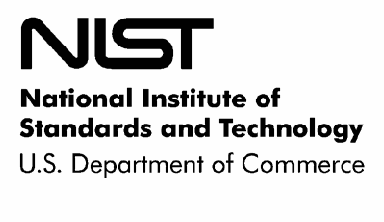
JOINT TASK FORCE TRANSFORMATION INITIATIVE
合同タスクフォース変革イニシアチブ
未レビュー訳I N F O R M A T I O N S E C U R I T Y
情 報 セ キ ュ リ テ ィ
Computer Security Division Information Technology Laboratory National Institute of Standards and Technology Gaithersburg, MD 20899-8930
コンピュータセキュリティ部門 情報技術研究所 米国国立標準技術研究所 メリーランド州ゲイザースバーグ 20899-8930
未レビュー訳September 2012
2012年9月
未レビュー訳U.S. Department of Commerce Rebecca M. Blank, Acting Secretary
米国商務省 Rebecca M. Blank（長官代行）
未レビュー訳National Institute of Standards and Technology Patrick D. Gallagher, Under Secretary for Standards and Technology and Director
米国国立標準技術研究所 Patrick D. Gallagher（標準技術担当次官兼所長）
未レビュー訳Reports on Computer Systems Technology
コンピュータシステム技術に関する報告書
The Information Technology Laboratory (ITL) at the National Institute of Standards and Technology (NIST) promotes the U.S. economy and public welfare by providing technical leadership for the nation’s measurement and standards infrastructure. ITL develops tests, test methods, reference data, proof of concept implementations, and technical analyses to advance the development and productive use of information technology. ITL’s responsibilities include the development of management, administrative, technical, and physical standards and guidelines for the cost-effective security and privacy of other than national security-related information in federal information systems. The Special Publication 800-series reports on ITL’s research, guidelines, and outreach efforts in information system security, and its collaborative activities with industry, government, and academic organizations.
米国国立標準技術研究所（NIST）の情報技術研究所（ITL）は、国の計測および標準インフラに対する技術的リーダーシップを提供することにより、米国経済と公共福祉の向上を促進する。ITLは、情報技術の発展と生産的利用を促進するため、試験、試験方法、参照データ、概念実証実装、技術分析を開発する。ITLの責任には、国家安全保障関連以外の情報を扱う連邦情報システムについて、費用対効果の高いセキュリティとプライバシーを確保するための管理、運用、技術、物理的な標準およびガイドラインの策定が含まれる。Special Publication 800シリーズは、情報システムセキュリティに関するITLの研究、ガイドライン、普及活動、および産業界、政府、学術機関との共同活動を報告する。
PAGE ii
PAGE ii
未レビュー訳Authority
権限
未レビュー訳This publication has been developed by NIST to further its statutory responsibilities under the Federal Information Security Management Act (FISMA), Public Law (P.L.) 107-347. NIST is responsible for developing information security standards and guidelines, including minimum requirements for federal information systems, but such standards and guidelines shall not apply to national security systems without the express approval of appropriate federal officials exercising policy authority over such systems. This guideline is consistent with the requirements of the Office of Management and Budget (OMB) Circular A-130, Section 8b(3), Securing Agency Information Systems, as analyzed in Circular A-130, Appendix IV: Analysis of Key Sections. Supplemental information is provided in Circular A-130, Appendix III, Security of Federal Automated Information Resources.
本刊行物は、Federal Information Security Management Act（FISMA）、Public Law（P.L.）107-347に基づく法定責任を果たすため、NISTが作成した。NISTは、連邦情報システムに関する最低要件を含む情報セキュリティ標準およびガイドラインを策定する責任を負う。ただし、国家安全保障システムについて政策権限を行使する適切な連邦政府職員の明示的な承認なしに、このような標準およびガイドラインを国家安全保障システムに適用してはならない。本ガイドラインは、Office of Management and Budget（OMB）Circular A-130のSection 8b(3)「政府機関情報システムの保護」の要件と整合しており、その要件はCircular A-130 Appendix IV「主要条項の分析」で分析されている。補足情報はCircular A-130 Appendix III「連邦自動化情報資源のセキュリティ」に記載されている。
Nothing in this publication should be taken to contradict the standards and guidelines made mandatory and binding on federal agencies by the Secretary of Commerce under statutory authority. Nor should these guidelines be interpreted as altering or superseding the existing authorities of the Secretary of Commerce, Director of the OMB, or any other federal official. This publication may be used by nongovernmental organizations on a voluntary basis and is not subject to copyright in the United States. Attribution would, however, be appreciated by NIST.
本刊行物のいかなる内容も、法定権限に基づいて商務長官が連邦政府機関に義務付け、拘束力を持たせた標準およびガイドラインに矛盾すると解釈してはならない。また、本ガイドラインを、商務長官、OMB長官、その他の連邦政府職員の既存の権限を変更または置換するものと解釈してはならない。政府機関以外の組織は本刊行物を任意で使用でき、米国内では著作権の対象ではない。ただし、NISTは出典を明記していただくことを希望する。
NIST Special Publication 800-30, 95 pages
NIST Special Publication 800-30、95ページ
未レビュー訳(September 2012)
（2012年9月）
未レビュー訳CODEN: NSPUE2
CODEN: NSPUE2
未レビュー訳Certain commercial entities, equipment, or materials may be identified in this document in order to describe an experimental procedure or concept adequately. Such identification is not intended to imply recommendation or endorsement by NIST, nor is it intended to imply that the entities, materials, or equipment are necessarily the best available for the purpose. There may be references in this publication to other publications currently under development by NIST in accordance with its assigned statutory responsibilities. The information in this publication, including concepts and methodologies, may be used by federal agencies even before the completion of such companion publications. Thus, until each publication is completed, current requirements, guidelines, and procedures, where they exist, remain operative. For planning and transition purposes, federal agencies may wish to closely follow the development of these new publications by NIST. Organizations are encouraged to review all draft publications during public comment periods and provide feedback to NIST. All NIST publications are available at http://csrc.nist.gov/publications.
実験手順または概念を十分に説明する目的で、本書に特定の商業組織、機器または材料を記載する場合がある。このような記載は、NISTによる推奨または承認を意味するものではなく、また、その組織、材料または機器が目的に対して必ずしも最良であることを意味するものでもない。本刊行物では、割り当てられた法定責任に従いNISTが現在策定中の他の刊行物を参照することがある。これらの関連刊行物が完成する前であっても、連邦政府機関は、本刊行物の情報（概念および方法論を含む）を使用できる。したがって、各刊行物が完成するまでは、現行の要件、ガイドライン、手順が存在する場合、それらは引き続き有効である。計画および移行の目的から、連邦政府機関はNISTによる新たな刊行物の策定状況を注意深く確認することが望ましい。組織には、一般意見募集期間中にすべての草案刊行物を確認し、NISTに意見を提供することが推奨される。NISTの刊行物はすべてhttp://csrc.nist.gov/publications. から入手できる。
未レビュー訳Comments on this publication may be submitted to: National Institute of Standards and Technology Attn: Computer Security Division, Information Technology Laboratory 100 Bureau Drive (Mail Stop 8930) Gaithersburg, MD 20899-8930 Electronic mail: sec-cert@nist.gov
本刊行物に関する意見は、次の宛先に提出できる。National Institute of Standards and Technology Attn: Computer Security Division, Information Technology Laboratory 100 Bureau Drive (Mail Stop 8930) Gaithersburg, MD 20899-8930 電子メール：sec-cert@nist.gov
未レビュー訳PAGE iii
PAGE iii
未レビュー訳Compliance with NIST Standards and Guidelines
NIST標準およびガイドラインへの準拠
未レビュー訳In accordance with the provisions of FISMA,1 the Secretary of Commerce shall, on the basis of standards and guidelines developed by NIST, prescribe standards and guidelines pertaining to federal information systems. The Secretary shall make standards compulsory and binding to the extent determined necessary by the Secretary to improve the efficiency of operation or security of federal information systems. Standards prescribed shall include information security standards that provide minimum information security requirements and are otherwise necessary to improve the security of federal information and information systems.
FISMAの規定に従い、1 商務長官はNISTが策定した標準およびガイドラインに基づいて、連邦情報システムに関する標準およびガイドラインを定めなければならない。商務長官は、連邦情報システムの運用効率またはセキュリティを向上させるために必要と判断する範囲で、標準を義務的かつ拘束力のあるものとしなければならない。定められる標準には、最低限の情報セキュリティ要件を規定し、連邦政府の情報および情報システムのセキュリティ向上に必要な情報セキュリティ標準を含めなければならない。
未レビュー訳•Federal Information Processing Standards (FIPS) are approved by the Secretary of Commerce and issued by NIST in accordance with FISMA. FIPS are compulsory and binding for federal agencies.2 FISMA requires that federal agencies comply with these standards, and therefore, agencies may not waive their use.
•Federal Information Processing Standards（FIPS）は、商務長官の承認を得て、FISMAに従ってNISTが発行する。FIPSは連邦政府機関にとって義務的かつ拘束力を持つ。2 FISMAは連邦政府機関にこれらの標準への準拠を求めており、したがって機関はその適用を免除できない。
未レビュー訳•Special Publications (SPs) are developed and issued by NIST as recommendations and guidance documents. For other than national security programs and systems, federal agencies must follow those NIST Special Publications mandated in a Federal Information Processing Standard. FIPS 200 mandates the use of Special Publication 800-53, as amended. In addition, OMB policies (including OMB Reporting Instructions for FISMA and Agency Privacy Management) state that for other than national security programs and systems, federal agencies must follow certain specific NIST Special Publications.3
•Special Publications（SP）は、推奨事項およびガイダンス文書としてNISTが策定・発行する。国家安全保障以外のプログラムおよびシステムについて、連邦政府機関はFederal Information Processing Standardで義務付けられたNIST Special Publicationsに従わなければならない。FIPS 200はSpecial Publication 800-53（改訂を含む）の使用を義務付けている。さらに、OMBの方針（OMB Reporting Instructions for FISMA報告指示および政府機関のプライバシー管理を含む）は、国家安全保障以外のプログラムおよびシステムについて、連邦政府機関が特定のNIST Special Publicationsに従わなければならないと定めている。3
未レビュー訳•Other security-related publications, including interagency reports (NISTIRs) and ITL Bulletins, provide technical and other information about NIST's activities. These publications are mandatory only when specified by OMB.
•省庁間報告書（NISTIR）およびITL Bulletinを含むその他のセキュリティ関連刊行物は、NIST's活動に関する技術情報その他の情報を提供する。これらの刊行物は、OMBが指定した場合に限り義務となる。
未レビュー訳•Compliance schedules for NIST security standards and guidelines are established by OMB in policies, directives, or memoranda (e.g., annual FISMA Reporting Guidance).4
•NISTのセキュリティ標準およびガイドラインへの準拠日程は、方針、指令、または覚書（例：年次FISMA報告指針）によりOMBが定める。4
未レビュー訳1 The E-Government Act (P.L. 107-347) recognizes the importance of information security to the economic and national security interests of the United States. Title III of the E-Government Act, entitled the Federal Information Security Management Act (FISMA), emphasizes the need for organizations to develop, document, and implement an organization-wide program to provide security for the information systems that support its operations and assets.
1 E-Government Act（P.L. 107-347）は、米国の経済および国家安全保障上の利益にとって情報セキュリティが重要であることを認識している。同法第III編のFederal Information Security Management Act（FISMA）は、組織の業務と資産を支える情報システムを保護するため、組織全体を対象とするプログラムを策定、文書化、実施する必要性を強調している。
未レビュー訳Acknowledgements This publication was developed by the Joint Task Force Transformation Initiative Interagency
謝辞 本刊行物は、連邦政府向けの統一情報セキュリティ枠組みを策定する継続的な取り組みの一環として、合同タスクフォース変革イニシアチブ省庁間
未レビュー訳Working Group with representatives from the Civil, Defense, and Intelligence Communities in an ongoing effort to produce a unified information security framework for the federal government. The National Institute of Standards and Technology wishes to acknowledge and thank the senior leaders from the Departments of Commerce and Defense, the Office of the Director of National Intelligence, the Committee on National Security Systems, and the members of the interagency technical working group whose dedicated efforts contributed significantly to the publication. The senior leaders, interagency working group members, and their organizational affiliations include:
作業部会によって作成された。同作業部会には、民間、防衛、情報機関コミュニティの代表者が参加している。米国国立標準技術研究所は、商務省および国防総省の上級幹部、国家情報長官室、国家安全保障システム委員会、および本刊行物に大きく貢献した省庁間技術作業部会のメンバーに謝意を表し、感謝する。上級幹部、省庁間作業部会メンバー、およびその所属組織は次のとおりである。
未レビュー訳Department of Defense
国防総省
未レビュー訳Office of the Director of National Intelligence
国家情報長官室
未レビュー訳Teresa M. Takai
Teresa M. Takai
未レビュー訳Adolpho Tarasiuk Jr.
Adolpho Tarasiuk Jr.
未レビュー訳DoD Chief Information Officer
国防総省（DoD）最高情報責任者
未レビュー訳Assistant DNI and Intelligence Community Chief Information Officer
国家情報長官補佐兼情報機関コミュニティ最高情報責任者
未レビュー訳Richard Hale
Richard Hale
未レビュー訳Charlene Leubecker
Charlene Leubecker
未レビュー訳Deputy Chief Information Officer for Cybersecurity
サイバーセキュリティ担当副最高情報責任者
未レビュー訳Deputy Intelligence Community Chief Information Officer
情報機関コミュニティ副最高情報責任者
未レビュー訳Paul Grant
Paul Grant
未レビュー訳Catherine A. Henson
Catherine A. Henson
未レビュー訳Director, Cybersecurity Policy
サイバーセキュリティ政策部長
未レビュー訳Director, Data Management
データ管理部長
未レビュー訳Dominic Cussatt
Dominic Cussatt
未レビュー訳Greg Hall
Greg Hall
未レビュー訳Deputy Director, Cybersecurity Policy
サイバーセキュリティ政策副部長
未レビュー訳Chief, Risk Management and Information Security Programs Division
リスク管理・情報セキュリティプログラム部門長
未レビュー訳Kurt Eleam Policy Advisor
Kurt Eleam 政策顧問
未レビュー訳National Institute of Standards and Technology
米国国立標準技術研究所
未レビュー訳Committee on National Security Systems
国家安全保障システム委員会
未レビュー訳Charles H. Romine
Charles H. Romine
未レビュー訳Teresa M. Takai
Teresa M. Takai
未レビュー訳Director, Information Technology Laboratory
情報技術研究所長
未レビュー訳Chair, CNSS
CNSS議長
未レビュー訳Donna Dodson
Donna Dodson
未レビュー訳Richard Spires
Richard Spires
未レビュー訳Cybersecurity Advisor, Information Technology Laboratory Co-Chair, CNSS Donna Dodson
情報技術研究所サイバーセキュリティ顧問 CNSS共同議長 Donna Dodson
未レビュー訳Dominic Cussatt
Dominic Cussatt
未レビュー訳Chief, Computer Security Division
コンピュータセキュリティ部門長
未レビュー訳CNSS Subcommittee Co-Chair
CNSS小委員会共同議長
未レビュー訳Ron Ross
Ron Ross
未レビュー訳Jeffrey Wilk
Jeffrey Wilk
未レビュー訳FISMA Implementation Project Leader
FISMA実施プロジェクトリーダー
未レビュー訳CNSS Subcommittee Co-Chair
CNSS小委員会共同議長
未レビュー訳Joint Task Force Transformation Initiative Interagency Working Group
合同タスクフォース変革イニシアチブ省庁間作業部会
未レビュー訳Ron Ross
Ron Ross
未レビュー訳Gary Stoneburner
Gary Stoneburner
未レビュー訳Jennifer Fabius
Jennifer Fabius
未レビュー訳Kelley Dempsey
Kelley Dempsey
未レビュー訳NIST, JTF Leader
NIST、JTFリーダー
未レビュー訳Johns Hopkins APL
Johns Hopkins APL
未レビュー訳The MITRE Corporation NIST
MITRE Corporation NIST
未レビュー訳Deborah Bodeau
Deborah Bodeau
未レビュー訳Steve Rodrigo
Steve Rodrigo
未レビュー訳Peter Gouldmann
Peter Gouldmann
未レビュー訳Arnold Johnson
Arnold Johnson
未レビュー訳The MITRE Corporation Tenacity Solutions, Inc.
The MITRE Corporation Tenacity Solutions, Inc.
未レビュー訳Department of State NIST
国務省 NIST
未レビュー訳Peter Williams
Peter Williams
未レビュー訳Karen Quigg
Karen Quigg
未レビュー訳Christina Sames
Christina Sames
未レビュー訳Christian Enloe
Christian Enloe
未レビュー訳Booz Allen Hamilton The MITRE Corporation
Booz Allen Hamilton The MITRE Corporation
未レビュー訳TASC
TASC
未レビュー訳NIST
NIST
未レビュー訳In addition to the above acknowledgments, a special note of thanks goes to Peggy Himes and Elizabeth Lennon of NIST for their superb technical editing and administrative support. The authors also gratefully acknowledge and appreciate the significant contributions from individuals and organizations in the public and private sectors, both nationally and internationally, whose thoughtful and constructive comments improved the overall quality, thoroughness, and usefulness of this publication.
上記の謝辞に加え、優れた技術編集と事務支援を提供してくださったNISTのPeggy Himes氏およびElizabeth Lennon氏に、特に感謝する。著者はまた、国内外の官民両部門の個人および組織から寄せられた多大な貢献に深く感謝する。思慮深く建設的な意見により、本刊行物の全体的な品質、網羅性、有用性が向上した。
未レビュー訳PAGE v
PAGE v
未レビュー訳DEVELOPING COMMON INFORMATION SECURITY FOUNDATIONS
共通の情報セキュリティ基盤の構築
未レビュー訳COLLABORATION AMONG PUBLIC AND PRIVATE SECTOR ENTITIES In developing standards and guidelines required by FISMA, NIST consults with other federal agencies
官民組織間の連携 FISMAが求める標準およびガイドラインの策定にあたり、NISTは情報セキュリティを向上させるため、他の連邦政府機関
未レビュー訳and offices as well as the private sector to improve information security, avoid unnecessary and costly duplication of effort, and ensure that NIST publications are complementary with the standards and guidelines employed for the protection of national security systems. In addition to its comprehensive public review and vetting process, NIST is collaborating with the Office of the Director of National Intelligence (ODNI), the Department of Defense (DoD), and the Committee on National Security Systems (CNSS) to establish a common foundation for information security across the federal government. A common foundation for information security will provide the Intelligence, Defense, and Civil sectors of the federal government and their contractors, more uniform and consistent ways to manage the risk to organizational operations and assets, individuals, other organizations, and the Nation that results from the operation and use of information systems. A common foundation for information security will also provide a strong basis for reciprocal acceptance of security authorization decisions and facilitate information sharing. NIST is also working with public and private sector entities to establish specific mappings and relationships between the security standards and guidelines developed by NIST and the International Organization for Standardization and International Electrotechnical Commission (ISO/IEC).
および部局、ならびに民間部門と協議し、不要で費用のかかる重複作業を避け、国家安全保障システムの保護に用いられる標準およびガイドラインとNIST刊行物との相補性を確保する。NISTは、包括的な公開レビューおよび審査プロセスに加え、国家情報長官室（ODNI）、国防総省（DoD）、国家安全保障システム委員会（CNSS）と協力し、連邦政府全体で情報セキュリティの共通基盤を確立している。情報セキュリティの共通基盤により、連邦政府の情報機関、防衛、民間部門ならびにその請負業者は、情報システムの運用および利用に起因する組織の業務・資産、個人、他の組織、国家に対するリスクを、より統一的かつ一貫した方法で管理できる。また、この共通基盤は、セキュリティ認可決定の相互受け入れを強固に支え、情報共有を促進する。NISTはさらに、NISTが策定するセキュリティ標準およびガイドラインと、International Organization for StandardizationおよびInternational Electrotechnical Commission（ISO/IEC）が策定するものとの間に、具体的な対応関係および関連付けを確立するため、官民組織と協力している。
未レビュー訳PAGE vi
PAGE vi
未レビュー訳Table of Contents
目次
CHAPTER ONE INTRODUCTION — 1
第1章 はじめに — 1
未レビュー訳1.1 PURPOSE AND APPLICABILITY — 2
1.1 目的および適用可能性 — 2
未レビュー訳1.2 TARGET AUDIENCE — 2
1.2 対象読者 — 2
未レビュー訳1.3 RELATED PUBLICATIONS — 3
1.3 関連刊行物 — 3
未レビュー訳1.4 ORGANIZATION OF THIS SPECIAL PUBLICATION — 3
1.4 本Special Publicationの構成 — 3
未レビュー訳CHAPTER TWO THE FUNDAMENTALS — 4
第2章 基礎 — 4
未レビュー訳2.1 RISK MANAGEMENT PROCESS — 4
2.1 リスク管理プロセス — 4
未レビュー訳2.2 RISK ASSESSMENT — 5
2.2 リスク評価 — 5
未レビュー訳2.3 KEY RISK CONCEPTS — 6
2.3 主要なリスク概念 — 6
未レビュー訳2.4 APPLICATION OF RISK ASSESSMENTS — 17
2.4 リスク評価の適用 — 17
未レビュー訳CHAPTER THREE THE PROCESS — 23
第3章 プロセス — 23
未レビュー訳3.1 PREPARING FOR THE RISK ASSESSMENT — 24
3.1 リスク評価の準備 — 24
未レビュー訳3.2 CONDUCTING THE RISK ASSESSMENT — 29
3.2 リスク評価の実施 — 29
未レビュー訳3.3 COMMUNICATING AND SHARING RISK ASSESSMENT INFORMATION — 37
3.3 リスク評価情報の伝達および共有 — 37
未レビュー訳3.4 MAINTAINING THE RISK ASSESSMENT — 38
3.4 リスク評価の維持 — 38
未レビュー訳APPENDIX A REFERENCES............................................................................................ A-1
Appendix A 参考文献............................................................................................ A-1
未レビュー訳APPENDIX B GLOSSARY................................................................................................ B-1
Appendix B 用語集................................................................................................ B-1
未レビュー訳APPENDIX C ACRONYMS...............................................................................................C-1
Appendix C 略語...............................................................................................C-1
未レビュー訳APPENDIX D THREAT SOURCES .....................................................................................D-1
Appendix D 脅威源.....................................................................................D-1
未レビュー訳APPENDIX E THREAT EVENTS........................................................................................ E-1
Appendix E 脅威事象........................................................................................ E-1
未レビュー訳APPENDIX F VULNERABILITIES AND PREDISPOSING CONDITIONS ...................................... F-1
Appendix F 脆弱性および素因となる条件 ...................................... F-1
未レビュー訳APPENDIX G LIKELIHOOD OF OCCURRENCE ....................................................................G-1
Appendix G 発生可能性 ....................................................................G-1
未レビュー訳APPENDIX H IMPACT.....................................................................................................H-1
Appendix H 影響.....................................................................................................H-1
未レビュー訳APPENDIX I RISK DETERMINATION...................................................................................I-1
Appendix I リスク判定...................................................................................I-1
未レビュー訳APPENDIX J INFORMING RISK RESPONSE........................................................................J-1
Appendix J リスク対応への情報提供........................................................................J-1
未レビュー訳APPENDIX K RISK ASSESSMENT REPORTS...................................................................... K-1
Appendix K リスク評価報告書...................................................................... K-1
未レビュー訳APPENDIX L SUMMARY OF TASKS ...................................................................................L-1
Appendix L タスクの概要 ...................................................................................L-1
未レビュー訳PAGE vii
PAGE vii
未レビュー訳Prologue
序文
未レビュー訳“... Through the process of risk management, leaders must consider risk to U.S. interests from adversaries using cyberspace to their advantage and from our own efforts to employ the global nature of cyberspace to achieve objectives in military, intelligence, and business operations...” “... For operational plans development, the combination of threats, vulnerabilities, and impacts must be evaluated in order to identify important trends and decide where effort should be applied to eliminate or reduce threat capabilities; eliminate or reduce vulnerabilities; and assess, coordinate, and deconflict all cyberspace operations...” “... Leaders at all levels are accountable for ensuring readiness and security to the same degree as in any other domain...”
「…リスクマネジメントのプロセスを通じて、指導者は、敵対者がサイバー空間を有利に利用することによる米国の利益へのリスクと、軍事、情報、業務運営上の目標達成に向けてサイバー空間のグローバルな特性を活用しようとする自らの取り組みによるリスクを考慮しなければならない…」 「…作戦計画の策定にあたっては、重要な傾向を特定し、脅威能力の排除または低減、脆弱性の排除または低減、ならびにすべてのサイバー空間作戦の評価、調整、競合回避のためにどこへ取り組みを集中すべきかを決定できるよう、脅威、脆弱性、影響の組み合わせを評価しなければならない…」 「…あらゆる階層の指導者は、他のあらゆる領域と同程度に、即応性とセキュリティを確保する責任を負う…」
未レビュー訳-- THE NATIONAL STRATEGY FOR CYBERSPACE OPERATIONS OFFICE OF THE CHAIRMAN, JOINT CHIEFS OF STAFF, U.S. DEPARTMENT OF DEFENSE
-- サイバー空間作戦に関する国家戦略 統合参謀本部議長室、米国国防総省
未レビュー訳PAGE viii
PAGE viii
未レビュー訳CAUTIONARY NOTES
注意事項
未レビュー訳SCOPE AND APPLICABILITY OF RISK ASSESSMENTS
リスク評価の範囲および適用可能性
未レビュー訳•Risk assessments are a key part of effective risk management and facilitate decision making at all three tiers in the risk management hierarchy including the organization level, mission/business process level, and information system level.
•リスク評価は効果的なリスクマネジメントの重要な一部であり、組織レベル、ミッション／業務プロセスレベル、情報システムレベルを含むリスクマネジメント階層の3つすべてのレベルでの意思決定を促進する。
未レビュー訳•Because risk management is ongoing, risk assessments are conducted throughout the system development life cycle, from pre-system acquisition (i.e., material solution analysis and technology development), through system acquisition (i.e., engineering/manufacturing development and production/deployment), and on into sustainment (i.e., operations/support).
•リスクマネジメントは継続的なものであるため、リスク評価はシステム開発ライフサイクル全体を通じて実施される。システム取得前（すなわち、資材ソリューション分析および技術開発）から、システム取得（すなわち、エンジニアリング／製造開発および生産／配備）を経て、維持段階（すなわち、運用／サポート）に至るまで行われる。
未レビュー訳•There are no specific requirements with regard to: (i) the formality, rigor, or level of detail that characterizes any particular risk assessment; (ii) the methodologies, tools, and techniques used to conduct such risk assessments; or (iii) the format and content of assessment results and any associated reporting mechanisms. Organizations have maximum flexibility on how risk assessments are conducted and are encouraged to apply the guidance in this document so that the various needs of organizations can be addressed and the risk assessment activities can be integrated into broader organizational risk management processes.
•特定のリスク評価について、(i) 形式性、厳密さ、詳細度、(ii) リスク評価の実施に用いる方法論、ツール、技法、(iii) 評価結果および関連する報告方法の形式と内容に関する固有の要件はない。リスク評価の実施方法について組織には最大限の柔軟性があり、組織のさまざまなニーズに対応し、リスク評価活動をより広範な組織のリスクマネジメントプロセスに統合できるよう、本書の指針を適用することが推奨される。
未レビュー訳•Organizations are also cautioned that risk assessments are often not precise instruments of measurement and reflect: (i) the limitations of the specific assessment methodologies, tools, and techniques employed; (ii) the subjectivity, quality, and trustworthiness of the data used; (iii) the interpretation of assessment results; and (iv) the skills and expertise of those individuals or groups conducting the assessments.
•組織はまた、リスク評価は多くの場合、精密な測定手段ではなく、次の要因を反映することに留意すべきである。(i) 使用した特定の評価方法論、ツール、技法の限界、(ii) 使用データの主観性、品質、信頼性、(iii) 評価結果の解釈、(iv) 評価を実施する個人またはグループの技能と専門知識。
未レビュー訳•Since cost, timeliness, and ease of use are a few of the many important factors in the application of risk assessments, organizations should attempt to reduce the level of effort for risk assessments by sharing risk-related information, whenever possible.
•コスト、適時性、使いやすさはリスク評価の適用における多くの重要要因の一部であるため、組織は可能な場合にはリスク関連情報を共有し、リスク評価に必要な作業量を削減するよう努めるべきである。
未レビュー訳PAGE ix
PAGE ix
未レビュー訳CHAPTER ONE
第1章
INTRODUCTION
はじめに
THE NEED FOR RISK ASSESSMENTS TO SUPPORT ENTERPRISE-WIDE RISK MANAGEMENT
組織全体のリスクマネジメントを支援するリスク評価の必要性
未レビュー訳Organizations5 in the public and private sectors depend on information technology6 and information systems7 to successfully carry out their missions and business functions. Information systems can include very diverse entities ranging from office networks, financial and personnel systems to very specialized systems (e.g., industrial/process control systems, weapons systems, telecommunications systems, and environmental control systems). Information systems are subject to serious threats that can have adverse effects on organizational operations and assets, individuals, other organizations, and the Nation by exploiting both known and unknown vulnerabilities to compromise the confidentiality, integrity, or availability of the information being processed, stored, or transmitted by those systems. Threats to information systems can include purposeful attacks, environmental disruptions, human/machine errors, and structural failures, and can result in harm to the national and economic security interests of the United States. Therefore, it is imperative that leaders and managers at all levels understand their responsibilities and are held accountable for managing information security risk—that is, the risk associated with the operation and use of information systems that support the missions and business functions of their organizations.
公共部門および民間部門の組織5は、ミッションおよび業務機能を適切に遂行するため、情報技術6および情報システム7に依存している。情報システムには、オフィスネットワーク、財務・人事システムから、高度に専門化されたシステム（例：産業／プロセス制御システム、兵器システム、電気通信システム、環境制御システム）まで、多様なものが含まれる。情報システムは、既知および未知の脆弱性を悪用して、各システムが処理、保存、伝送する情報の機密性、完全性、可用性を侵害し、組織の業務および資産、個人、他の組織、国家に悪影響を及ぼす深刻な脅威にさらされている。情報システムへの脅威には、意図的な攻撃、環境の混乱、人間または機械の誤り、構造上の故障などがあり、米国の国家安全保障および経済安全保障上の利益に損害を与えるおそれがある。したがって、あらゆる階層の指導者および管理者が自らの責任を理解し、情報セキュリティリスク、すなわち組織のミッションおよび業務機能を支援する情報システムの運用と利用に伴うリスクを管理する責任を問われることが極めて重要である。
未レビュー訳Risk assessment is one of the fundamental components of an organizational risk management process as described in NIST Special Publication 800-39. Risk assessments are used to identify, estimate, and prioritize risk to organizational operations (i.e., mission, functions, image, and reputation), organizational assets, individuals, other organizations, and the Nation, resulting from the operation and use of information systems. The purpose of risk assessments is to inform decision makers and support risk responses by identifying: (i) relevant threats to organizations or threats directed through organizations against other organizations; (ii) vulnerabilities both internal and external to organizations; (iii) impact (i.e., harm) to organizations that may occur given the potential for threats exploiting vulnerabilities; and (iv) likelihood that harm will occur. The end result is a determination of risk (i.e., typically a function of the degree of harm and likelihood of harm occurring). Risk assessments can be conducted at all three tiers in the risk management hierarchy—including Tier 1 (organization level), Tier 2 (mission/business process level), and Tier 3 (information system level). At Tiers 1 and 2, organizations use risk assessments to evaluate, for example, systemic information security-related risks associated with organizational governance and management activities, mission/business processes, enterprise architecture, or the funding of information security programs. At Tier 3, organizations use risk assessments to more effectively support the implementation of the Risk Management Framework (i.e., security categorization; security control selection, implementation, and assessment; information system and common control authorization; and security control monitoring).8
NIST Special Publication 800-39で説明されているように、リスク評価は組織のリスクマネジメントプロセスの基本的構成要素の1つである。リスク評価は、情報システムの運用および利用に起因する、組織の業務（すなわち、ミッション、機能、イメージ、評判）、組織の資産、個人、他の組織、国家に対するリスクを特定、推定、優先順位付けするために用いられる。リスク評価の目的は、次の事項を特定し、意思決定者に情報を提供してリスク対応を支援することである。(i) 組織に関係する脅威、または組織を介して他の組織に向けられる脅威、(ii) 組織の内部および外部に存在する脆弱性、(iii) 脅威が脆弱性を悪用した場合に生じ得る組織への影響（すなわち損害）、(iv) 損害が発生する可能性。最終的にはリスクが判定される（通常、損害の程度と損害発生の可能性の関数）。リスク評価は、リスクマネジメント階層の3つすべてのレベル、すなわちTier 1（組織レベル）、Tier 2（ミッション／業務プロセスレベル）、Tier 3（情報システムレベル）で実施できる。Tier 1およびTier 2では、組織のガバナンスおよび管理活動、ミッション／業務プロセス、エンタープライズアーキテクチャ、情報セキュリティプログラムの予算措置に関連する全体的な情報セキュリティリスクなどを評価するためにリスク評価を用いる。Tier 3では、リスクマネジメントフレームワークの実施（すなわち、セキュリティ分類、セキュリティ管理策の選択・実装・評価、情報システムおよび共通管理策の認可、セキュリティ管理策の監視）をより効果的に支援するため、リスク評価を用いる。8
未レビュー訳5The term organization describes an entity of any size, complexity, or positioning within an organizational structure (e.g., a federal agency or, as appropriate, any of its operational elements) that is charged with carrying out assigned mission/business processes and that uses information systems in support of those processes.
5 「組織」とは、割り当てられたミッション／業務プロセスを遂行する責任を負い、それらのプロセスを支援するために情報システムを使用する、組織構造における規模、複雑さ、位置付けを問わない主体（例：連邦政府機関、または適切な場合はその運用部門）を指す。
未レビュー訳1.1 PURPOSE AND APPLICABILITY
1.1 目的および適用可能性
未レビュー訳The purpose of Special Publication 800-30 is to provide guidance for conducting risk assessments of federal information systems and organizations, amplifying the guidance in Special Publication 800-39. Risk assessments, carried out at all three tiers in the risk management hierarchy, are part of an overall risk management process—providing senior leaders/executives with the information needed to determine appropriate courses of action in response to identified risks. In particular, this document provides guidance for carrying out each of the steps in the risk assessment process (i.e., preparing for the assessment, conducting the assessment, communicating the results of the assessment, and maintaining the assessment) and how risk assessments and other organizational risk management processes complement and inform each other. Special Publication 800-30 also provides guidance to organizations on identifying specific risk factors to monitor on an ongoing basis, so that organizations can determine whether risks have increased to unacceptable levels (i.e., exceeding organizational risk tolerance) and different courses of action should be taken.
Special Publication 800-30の目的は、Special Publication 800-39の指針を補足し、連邦情報システムおよび組織のリスク評価を実施するための指針を提供することである。リスクマネジメント階層の3つすべてのレベルで実施されるリスク評価は、全体的なリスクマネジメントプロセスの一部であり、特定されたリスクへの適切な対応方針を決定するために必要な情報を上級指導者／幹部に提供する。特に本書は、リスク評価プロセスの各手順（すなわち、評価の準備、評価の実施、評価結果の伝達、評価の維持）を実行する方法と、リスク評価およびその他の組織のリスクマネジメントプロセスが互いにどのように補完し、情報を提供し合うかについて指針を示す。Special Publication 800-30はまた、継続的に監視する具体的なリスク要因を特定する指針も組織に提供する。これにより、組織はリスクが許容できない水準（すなわち組織のリスク許容度を超える水準）まで高まったか、異なる対応方針を取るべきかを判断できる。
未レビュー訳This publication satisfies the requirements of FISMA and meets or exceeds the information security requirements established for executive agencies9 by the Office of Management and Budget (OMB) in Circular A-130, Appendix III, Security of Federal Automated Information Resources. The guidelines in this publication are applicable to all federal information systems other than those systems designated as national security systems as defined in 44 U.S.C., Section
本刊行物はFISMAの要件を満たし、Office of Management and Budget（OMB）がCircular A-130 Appendix III「連邦自動化情報資源のセキュリティ」で行政機関9に定めた情報セキュリティ要件を満たすか、それを上回る。本刊行物のガイドラインは、44 U.S.C., Sectionで定義される国家安全保障システムとして指定されたシステムを除く、すべての連邦情報システムに適用される。
未レビュー訳3542.The guidelines have been broadly developed from a technical perspective to complement similar guidelines for national security systems and may be used for such systems with the approval of appropriate federal officials exercising policy authority over such systems. State, local, and tribal governments, as well as private sector organizations are encouraged to consider using these guidelines, as appropriate.
3542.本ガイドラインは、国家安全保障システム向けの同様のガイドラインを補完するため、技術的観点から広範に策定されており、そのようなシステムについて政策権限を行使する適切な連邦政府職員の承認があれば、それらのシステムにも使用できる。州、地方、部族政府、および民間部門の組織にも、適切に本ガイドラインを使用することが推奨される。
未レビュー訳1.2 TARGET AUDIENCE
1.2 対象読者
未レビュー訳This publication is intended to serve a diverse group of risk management professionals including:
本刊行物は、次のような多様なリスクマネジメント専門家を対象とする。
•Individuals with oversight responsibilities for risk management (e.g., heads of agencies, chief executive officers, chief operating officers, risk executive [function]);
•リスクマネジメントの監督責任を負う個人（例：政府機関の長、最高経営責任者、最高執行責任者、リスク執行責任者［機能］）。
•Individuals with responsibilities for conducting organizational missions/business functions (e.g., mission/business owners, information owners/stewards, authorizing officials);
•組織のミッション／業務機能の遂行責任を負う個人（例：ミッション／業務の責任者、情報所有者／管理者、認可担当者）。
未レビュー訳•Individuals with responsibilities for acquiring information technology products, services, or information systems (e.g., acquisition officials, procurement officers, contracting officers);
•情報技術製品、サービス、または情報システムの取得責任を負う個人（例：取得担当者、調達担当者、契約担当者）。
•Individuals with information system/security design, development, and implementation responsibilities (e.g., program managers, enterprise architects, information security architects, information system/security engineers, information systems integrators);
•情報システム／セキュリティの設計、開発、実装責任を負う個人（例：プログラムマネージャー、エンタープライズアーキテクト、情報セキュリティアーキテクト、情報システム／セキュリティエンジニア、情報システムインテグレーター）。
未レビュー訳•Individuals with information security oversight, management, and operational responsibilities (e.g., chief information officers, senior information security officers,10 information security managers, information system owners, common control providers); and
•情報セキュリティの監督、管理、運用責任を負う個人（例：最高情報責任者、上級情報セキュリティ責任者、10 情報セキュリティマネージャー、情報システム所有者、共通管理策提供者）。また、
未レビュー訳•Individuals with information security/risk assessment and monitoring responsibilities (e.g., system evaluators, penetration testers, security control assessors, risk assessors, independent verifiers/validators, inspectors general, auditors).
•情報セキュリティ／リスク評価および監視の責任を負う個人（例：システム評価者、侵入テスト担当者、セキュリティ管理策評価者、リスク評価者、独立検証者／妥当性確認者、監察総監、監査人）。
未レビュー訳1.3 RELATED PUBLICATIONS
1.3 関連刊行物
未レビュー訳The risk assessment approach described in this publication is supported by a series of security standards and guidelines necessary for managing information security risk. In addition to this publication, the Special Publications developed by the Joint Task Force Transformation Initiative supporting the unified information security framework for the federal government include:
本刊行物で説明するリスク評価のアプローチは、情報セキュリティリスクの管理に必要な一連のセキュリティ標準およびガイドラインによって支えられている。本刊行物に加え、連邦政府の統一情報セキュリティ枠組みを支援するJoint Task Force Transformation Initiativeが策定したSpecial Publicationsには、次のものがある。
未レビュー訳•Special Publication 800-39, Managing Information Security Risk: Organization, Mission, and Information System View;11
•Special Publication 800-39, Managing Information Security Risk: Organization, Mission, and Information System View;11
未レビュー訳•Special Publication 800-37, Guide for Applying the Risk Management Framework to Federal Information Systems: A Security Life Cycle Approach;
•Special Publication 800-37, Guide for Applying the Risk Management Framework to Federal Information Systems: A Security Life Cycle Approach;
•Special Publication 800-53, Recommended Security Controls for Federal Information Systems and Organizations; and
•Special Publication 800-53, Recommended Security Controls for Federal Information Systems and Organizations; and
未レビュー訳•Special Publication 800-53A, Guide for Assessing the Security Controls in Federal Information Systems and Organizations: Building Effective Security Assessment Plans.
•Special Publication 800-53A, Guide for Assessing the Security Controls in Federal Information Systems and Organizations: Building Effective Security Assessment Plans.
The concepts and principles associated with the risk assessment processes and approaches contained in this publication are intended to be similar to and consistent with the processes and approaches described in International Organization for Standardization (ISO) and International Electrotechnical Commission (IEC) standards. Extending the concepts and principles of these international standards for the federal government and its contractors and promoting the reuse of risk assessment results, reduces the burden on organizations that must conform to ISO/IEC and NIST standards.
本刊行物に含まれるリスク評価プロセスおよびアプローチに関する概念と原則は、International Organization for Standardization（ISO）およびInternational Electrotechnical Commission（IEC）の標準に記載されたプロセスおよびアプローチと類似し、一貫することを意図している。これらの国際標準の概念および原則を連邦政府ならびにその請負業者に適用し、リスク評価結果の再利用を促進することで、ISO/IEC標準とNIST標準の両方に準拠しなければならない組織の負担が軽減される。
1.4 ORGANIZATION OF THIS SPECIAL PUBLICATION
1.4 本Special Publicationの構成
未レビュー訳The remainder of this special publication is organized as follows:
本Special Publicationの残りの構成は次のとおりである。
未レビュー訳•Chapter Two describes: (i) the risk management process and how risk assessments are an integral part of that process; (ii) the basic terminology used in conducting risk assessments; and (iii) how risk assessments can be applied across the organization’s risk management tiers (i.e., organization level, mission/business process level, and information system level).
•第2章では、(i) リスクマネジメントプロセスと、そのプロセスにリスク評価が不可欠な要素として含まれること、(ii) リスク評価の実施に用いる基本用語、(iii) 組織のリスクマネジメント各階層（すなわち組織レベル、ミッション／業務プロセスレベル、情報システムレベル）におけるリスク評価の適用方法を説明する。
•Chapter Three describes the process of assessing information security risk including: (i) a high-level overview of the risk assessment process; (ii) the activities necessary to prepare for a risk assessment; (iii) the activities necessary to conduct a risk assessment; (iv) the activities necessary to communicate risk assessment results and share risk-related information across the organization; and (v) the activities necessary to maintain the results of a risk assessment.
•第3章では、情報セキュリティリスクの評価プロセスを説明し、(i) リスク評価プロセスの概要、(ii) リスク評価の準備に必要な活動、(iii) リスク評価の実施に必要な活動、(iv) リスク評価結果を伝達し、組織全体でリスク関連情報を共有するために必要な活動、(v) リスク評価結果を維持するために必要な活動を扱う。
未レビュー訳•Supporting appendices provide additional risk assessment information including: (i) general references; (ii) a glossary of terms; (iii) acronyms; (iv) threat sources; (v) threat events; (vi) vulnerabilities and predisposing conditions; (vii) likelihood of threat event occurrence; (viii) organizational impact; (ix) risk determination; (x) informing risk response; (xi) essential information for risk assessment reports; and (xii) a summary of risk assessment tasks.
•補足付録では、次のようなリスク評価に関する追加情報を示す。(i) 一般的な参考資料、(ii) 用語集、(iii) 略語、(iv) 脅威源、(v) 脅威事象、(vi) 脆弱性および素因となる条件、(vii) 脅威事象の発生可能性、(viii) 組織への影響、(ix) リスク判定、(x) リスク対応への情報提供、(xi) リスク評価報告書に必要な情報、(xii) リスク評価タスクの概要。
未レビュー訳CHAPTER TWO
第2章
THE FUNDAMENTALS
基礎
BASIC CONCEPTS ASSOCIATED WITH RISK ASSESSMENTS
リスク評価に関する基本概念
未レビュー訳This chapter describes the fundamental concepts associated with assessing information security risk within an organization including: (i) a high-level overview of the risk management process and the role risk assessments play in that process; (ii) the basic concepts used in conducting risk assessments; and (iii) how risk assessments can be applied across the organization’s risk management tiers.12
本章では、組織内の情報セキュリティリスク評価に関連する基本概念を説明する。内容には、(i) リスクマネジメントプロセスの概要と、そのプロセスにおけるリスク評価の役割、(ii) リスク評価の実施に用いる基本概念、(iii) 組織のリスクマネジメント各階層におけるリスク評価の適用方法が含まれる。12
未レビュー訳2.1 RISK MANAGEMENT PROCESS
2.1 リスクマネジメントプロセス
未レビュー訳Risk assessment is a key component of a holistic, organization-wide risk management process as defined in NIST Special Publication 800-39, Managing Information Security Risk: Organization, Mission, and Information System View. Risk management processes include: (i) framing risk; (ii) assessing risk; (iii) responding to risk; and (iv) monitoring risk. Figure 1 illustrates the four steps in the risk management process—including the risk assessment step and the information and communications flows necessary to make the process work effectively.13
NIST Special Publication 800-39, Managing Information Security Risk: Organization, Mission, and Information System Viewで定義される包括的な組織全体のリスクマネジメントプロセスにおいて、リスク評価は重要な構成要素である。リスクマネジメントプロセスには、(i) リスクの枠組み設定、(ii) リスク評価、(iii) リスク対応、(iv) リスク監視が含まれる。図1は、リスク評価の段階と、プロセスを効果的に機能させるために必要な情報およびコミュニケーションの流れを含む、リスクマネジメントプロセスの4つの手順を示す。13
未レビュー訳ASSESS
評価
未レビュー訳Information and
情報および
未レビュー訳Information and
情報および
未レビュー訳Communications Flows
コミュニケーションの流れ
未レビュー訳Communications Flows
コミュニケーションの流れ
未レビュー訳FRAME
枠組み設定
未レビュー訳RESPOND
対応
未レビュー訳MONITOR
監視
未レビュー訳FIGURE 1: RISK ASSESSMENT WITHIN THE RISK MANAGEMENT PROCESS
図1：リスクマネジメントプロセスにおけるリスク評価
未レビュー訳The first component of risk management addresses how organizations frame risk or establish a risk context—that is, describing the environment in which risk-based decisions are made. The purpose of the risk framing component is to produce a risk management strategy that addresses how organizations intend to assess risk, respond to risk, and monitor risk—making explicit and transparent the risk perceptions that organizations routinely use in making both investment and operational decisions. The risk management strategy establishes a foundation for managing risk and delineates the boundaries for risk-based decisions within organizations.14
リスクマネジメントの最初の構成要素では、組織がリスクの枠組みを設定する方法、すなわちリスクの状況を定める方法を扱う。これは、リスクに基づく意思決定が行われる環境を記述することである。リスク枠組み設定の目的は、組織がリスク評価、リスク対応、リスク監視をどのように行う予定かを示すリスクマネジメント戦略を作成することであり、投資上および運用上の意思決定において組織が日常的に用いるリスク認識を明示的かつ透明にする。リスクマネジメント戦略はリスク管理の基盤を確立し、組織内でのリスクに基づく意思決定の境界を定める。14
未レビュー訳The second component of risk management addresses how organizations assess risk within the context of the organizational risk frame. The purpose of the risk assessment component is to identify: (i) threats to organizations (i.e., operations, assets, or individuals) or threats directed through organizations against other organizations or the Nation; (ii) vulnerabilities internal and external to organizations;15 (iii) the harm (i.e., adverse impact) that may occur given the potential for threats exploiting vulnerabilities; and (iv) the likelihood that harm will occur. The end result is a determination of risk (i.e., typically a function of the degree of harm and likelihood of harm occurring).
リスクマネジメントの第2の構成要素では、組織のリスク枠組みの中で組織がリスクを評価する方法を扱う。リスク評価構成要素の目的は、次を特定することである。(i) 組織（すなわち業務、資産、個人）に対する脅威、または組織を介して他の組織や国家に向けられる脅威、(ii) 組織の内部および外部の脆弱性、15 (iii) 脅威が脆弱性を悪用する可能性を踏まえて生じ得る損害（すなわち悪影響）、(iv) 損害が発生する可能性。最終的にはリスクが判定される（通常、損害の程度と損害発生の可能性の関数）。
未レビュー訳The third component of risk management addresses how organizations respond to risk once that risk is determined based on the results of a risk assessment. The purpose of the risk response component is to provide a consistent, organization-wide response to risk in accordance with the organizational risk frame by: (i) developing alternative courses of action for responding to risk; (ii) evaluating the alternative courses of action; (iii) determining appropriate courses of action consistent with organizational risk tolerance; and (iv) implementing risk responses based on selected courses of action.
リスクマネジメントの第3の構成要素では、リスク評価の結果に基づいてリスクが判定された後、組織がリスクに対応する方法を扱う。リスク対応構成要素の目的は、組織のリスク枠組みに従って一貫性のある組織全体のリスク対応を行うことであり、そのために、(i) リスク対応のための代替行動方針を策定する、(ii) 代替行動方針を評価する、(iii) 組織のリスク許容度に沿った適切な行動方針を決定する、(iv) 選択した行動方針に基づいてリスク対応を実施する。
未レビュー訳The fourth component of risk management addresses how organizations monitor risk over time. The purpose of the risk monitoring component is to: (i) determine the ongoing effectiveness of risk responses (consistent with the organizational risk frame); (ii) identify risk-impacting changes to organizational information systems and the environments in which the systems operate;16 and (iii) verify that planned risk responses are implemented and information security requirements derived from and traceable to organizational missions/business functions, federal legislation, directives, regulations, policies, standards, and guidelines are satisfied.
リスクマネジメントの第4の構成要素では、組織が時間の経過に伴ってリスクを監視する方法を扱う。リスク監視構成要素の目的は、(i) リスク対応の継続的な有効性（組織のリスク枠組みに整合したもの）を判定する、(ii) 組織の情報システムおよびシステムが稼働する環境における、リスクに影響する変化を特定する、16 (iii) 計画されたリスク対応が実施され、組織のミッション／業務機能、連邦法、指令、規制、方針、標準、ガイドラインから導出され、それらに追跡可能な情報セキュリティ要件が満たされていることを検証することである。
未レビュー訳2.2 RISK ASSESSMENT
2.2 リスク評価
未レビュー訳This publication focuses on the risk assessment component of risk management—providing a step-by-step process for organizations on: (i) how to prepare for risk assessments; (ii) how to conduct risk assessments; (iii) how to communicate risk assessment results to key organizational personnel; and (iv) how to maintain the risk assessments over time. Risk assessments are not simply one-time activities that provide permanent and definitive information for decision makers to guide and inform responses to information security risks. Rather, organizations employ risk assessments on an ongoing basis throughout the system development life cycle and across all of the tiers in the risk management hierarchy—with the frequency of the risk assessments and the resources applied during the assessments, commensurate with the expressly defined purpose and scope of the assessments.
本刊行物はリスクマネジメントのリスク評価構成要素に焦点を当て、次の事項に関する段階的なプロセスを組織に提供する。(i) リスク評価の準備方法、(ii) リスク評価の実施方法、(iii) リスク評価結果を組織内の主要な要員に伝達する方法、(iv) リスク評価を時間の経過とともに維持する方法。リスク評価は、情報セキュリティリスクへの対応を導き、情報を提供するため、意思決定者に恒久的かつ確定的な情報を与える一度限りの活動ではない。むしろ、組織はシステム開発ライフサイクル全体およびリスクマネジメント階層のすべての層にわたって、継続的にリスク評価を実施する。評価の頻度と投入する資源は、明確に定義された評価の目的および範囲に見合ったものとする。
Risk assessments address the potential adverse impacts to organizational operations and assets, individuals, other organizations, and the economic and national security interests of the United States, arising from the operation and use of information systems and the information processed, stored, and transmitted by those systems. Organizations conduct risk assessments to determine risks that are common to the organization’s core missions/business functions, mission/business processes, mission/business segments, common infrastructure/support services, or information systems. Risk assessments can support a wide variety of risk-based decisions and activities by organizational officials across all three tiers in the risk management hierarchy including, but not limited to, the following:
リスク評価は、情報システムおよびそれらのシステムが処理、保存、伝送する情報の運用と利用に起因する、組織の業務および資産、個人、他の組織、米国の経済安全保障上および国家安全保障上の利益に対する潜在的な悪影響を扱う。組織は、組織の中核的なミッション／業務機能、ミッション／業務プロセス、ミッション／業務の各区分、共通インフラストラクチャ／サポートサービス、または情報システムに共通するリスクを判断するため、リスク評価を実施する。リスク評価は、リスクマネジメント階層の3つすべてのレベルにおいて、組織職員による幅広いリスクベースの意思決定および活動を支援できる。以下を含むが、これらに限定されない。
未レビュー訳•Development of an information security architecture;
•情報セキュリティアーキテクチャの策定。
•Definition of interconnection requirements for information systems (including systems supporting mission/business processes and common infrastructure/support services);
•情報システム（ミッション／業務プロセスおよび共通インフラストラクチャ／サポートサービスを支援するシステムを含む）の相互接続要件の定義。
未レビュー訳•Design of security solutions for information systems and environments of operation including selection of security controls, information technology products, suppliers/supply chain, and contractors;
•情報システムおよび運用環境のセキュリティソリューションの設計。これには、セキュリティ管理策、情報技術製品、供給業者／サプライチェーン、請負業者の選定が含まれる。
•Authorization (or denial of authorization) to operate information systems or to use security controls inherited by those systems (i.e., common controls);
•情報システムの運用、または当該システムが継承するセキュリティ管理策（すなわち共通管理策）の使用に対する認可（または認可の拒否）。
未レビュー訳•Modification of missions/business functions and/or mission/business processes permanently, or for a specific time frame (e.g., until a newly discovered threat or vulnerability is addressed, until a compensating control is replaced);
•ミッション／業務機能および／またはミッション／業務プロセスの恒久的な変更、または特定期間に限った変更（例：新たに発見された脅威もしくは脆弱性への対処まで、代替管理策が置き換えられるまで）。
•Implementation of security solutions (e.g., whether specific information technology products or configurations for those products meet established requirements); and
•セキュリティソリューションの実装（例：特定の情報技術製品またはその製品構成が定められた要件を満たすかどうか）、および
•Operation and maintenance of security solutions (e.g., continuous monitoring strategies and programs, ongoing authorizations).
•セキュリティソリューションの運用および保守（例：継続的監視戦略およびプログラム、継続的な認可）。
Because organizational missions and business functions, supporting mission/business processes, information systems, threats, and environments of operation tend to change over time, the validity and usefulness of any risk assessment is bounded in time.
組織のミッションおよび業務機能、それらを支えるミッション／業務プロセス、情報システム、脅威、運用環境は時間の経過に伴い変化する傾向があるため、あらゆるリスク評価の妥当性と有用性には時間的な限界がある。
2.3 KEY RISK CONCEPTS
2.3 主要なリスク概念
未レビュー訳Risk is a measure of the extent to which an entity is threatened by a potential circumstance or event, and is typically a function of: (i) the adverse impacts that would arise if the circumstance or event occurs; and (ii) the likelihood of occurrence. Information security risks are those risks that arise from the loss of confidentiality, integrity, or availability of information or information systems and reflect the potential adverse impacts to organizational operations (i.e., mission, functions, image, or reputation), organizational assets, individuals, other organizations, and the Nation. Risk assessment is the process of identifying, estimating, and prioritizing information security risks. Assessing risk requires the careful analysis of threat and vulnerability information to determine the extent to which circumstances or events could adversely impact an organization and the likelihood that such circumstances or events will occur.
リスクとは、潜在的な状況または事象によって主体が脅威にさらされる程度を示す尺度であり、通常は、(i) その状況または事象が発生した場合に生じる悪影響、(ii) 発生可能性の関数である。情報セキュリティリスクとは、情報または情報システムの機密性、完全性、可用性の喪失から生じるリスクであり、組織の業務（すなわちミッション、機能、イメージ、評判）、組織の資産、個人、他の組織、国家に対する潜在的な悪影響を反映する。リスク評価は、情報セキュリティリスクを特定、推定、優先順位付けするプロセスである。リスクの評価には、状況または事象が組織に悪影響を及ぼす程度と、それらが発生する可能性を判断するため、脅威および脆弱性に関する情報を慎重に分析する必要がある。
A risk assessment methodology typically includes: (i) a risk assessment process (as described in Chapter Three); (ii) an explicit risk model, defining key terms and assessable risk factors and the relationships among the factors; (iii) an assessment approach (e.g., quantitative, qualitative, or semi-qualitative), specifying the range of values those risk factors can assume during the risk assessment and how combinations of risk factors are identified/analyzed so that values of those
リスク評価方法論には通常、(i) リスク評価プロセス（第3章に記載）、(ii) 主要用語、評価可能なリスク要因、および要因間の関係を定義する明示的なリスクモデル、(iii) 評価アプローチ（例：定量的、定性的、半定量的）を含み、リスク評価中に各リスク要因が取り得る値の範囲、およびリスク要因の組み合わせが特定／分析される方法を指定するもの、ならびにリスク要因の値
未レビュー訳factors can be functionally combined to evaluate risk; and (iv) an analysis approach (e.g., threat-oriented, asset/impact-oriented, or vulnerability-oriented), describing how combinations of risk factors are identified/analyzed to ensure adequate coverage of the problem space at a consistent level of detail. Risk assessment methodologies are defined by organizations and are a component of the risk management strategy developed during the risk framing step of the risk management process.17 Figure 2 illustrates the fundamental components in organizational risk frames and the relationships among those components.
原文更新後、再確認待ち
- Risk Assumptions
- リスクの前提
未レビュー訳- Establishes Foundation
- 基盤を確立する
未レビュー訳- Risk Constraints
- リスクの制約
未レビュー訳for Risk Management
リスクマネジメントのための
未レビュー訳- Priorities and Tradeoffs ORGANIZATIONAL RISK FRAME - Delineates Boundaries
- 優先事項とトレードオフ ORGANIZATIONAL RISK FRAME（組織のリスク枠組み）- 境界を定める
未レビュー訳for Risk-Based Decisions
リスクに基づく意思決定のための
未レビュー訳- Risk Tolerance
- リスク許容度
未レビュー訳RISK MANAGEMENTSTRATEGY OR APPROACH
RISK MANAGEMENTSTRATEGY OR APPROACH（リスクマネジメント戦略またはアプローチ）
未レビュー訳- Uncertainty
- 不確実性
未レビュー訳DETERMINES
決定する
未レビュー訳DETERMINES
決定する
未レビュー訳RiskAssessmentMethodology
RiskAssessmentMethodology（リスク評価方法論）
未レビュー訳RiskAssessment Risk Assessment
RiskAssessment（リスク評価） リスク評価
未レビュー訳Analysis
分析
未レビュー訳Approach
アプローチ
未レビュー訳Process
プロセス
未レビュー訳Model
モデル
未レビュー訳Approach
アプローチ
未レビュー訳FIGURE 2: RELATIONSHIP AMONG RISK FRAMING COMPONENTS
図2：リスク枠組み構成要素間の関係
未レビュー訳Organizations can use a single risk assessment methodology or can employ multiple assessment methodologies, with the selection of a specific methodology depending on, for example: (i) the time frame for investment planning or for planning policy changes; (ii) the complexity/maturity of organizational mission/business processes (by enterprise architecture segments); (iii) the phase of the information systems in the system development life cycle; or (iv) the criticality/sensitivity18 of the information and information systems supporting the core organizational missions/business functions. By making explicit the risk model, the assessment approach, and the analysis approach employed, and requiring as part of the assessment process, a rationale for the assessed values of risk factors, organizations can increase the reproducibility and repeatability of risk assessments.19
組織は単一のリスク評価方法論を使用することも、複数の評価方法論を採用することもできる。特定の方法論の選択は、例えば、(i) 投資計画または方針変更計画の期間、(ii) 組織のミッション／業務プロセスの複雑さ／成熟度（エンタープライズアーキテクチャの区分ごと）、(iii) 情報システムのシステム開発ライフサイクルにおける段階、(iv) 組織の中核的なミッション／業務機能を支える情報および情報システムの重要度／機微性18によって決まる。使用するリスクモデル、評価アプローチ、分析アプローチを明示し、評価プロセスの一部としてリスク要因の評価値の根拠を求めることで、組織はリスク評価の再現性および反復可能性を高められる。19
未レビュー訳2.3.1 Risk Models
2.3.1 リスクモデル
未レビュー訳Risk models define the risk factors to be assessed and the relationships among those factors.20 Risk factors are characteristics used in risk models as inputs to determining levels of risk in risk assessments. Risk factors are also used extensively in risk communications to highlight what strongly affects the levels of risk in particular situations, circumstances, or contexts. Typical risk factors include threat, vulnerability, impact, likelihood, and predisposing condition. Risk factors can be decomposed into more detailed characteristics (e.g., threats decomposed into threat sources and threat events).21 These definitions are important for organizations to document prior to conducting risk assessments because the assessments rely upon well-defined attributes of threats, vulnerabilities, impact, and other risk factors to effectively determine risk.
リスクモデルは、評価対象となるリスク要因と、それらの要因間の関係を定義する。20 リスク要因とは、リスク評価でリスク水準を決定するための入力としてリスクモデルに用いる特性である。リスク要因は、特定の状況、環境、または文脈におけるリスク水準に強く影響するものを明らかにするため、リスクコミュニケーションでも広く用いられる。典型的なリスク要因には、脅威、脆弱性、影響、発生可能性、素因となる条件がある。リスク要因は、より詳細な特性に分解できる（例：脅威を脅威源と脅威事象に分解する）。21 これらの定義は、リスク評価を効果的に行うため、脅威、脆弱性、影響、その他のリスク要因の明確に定義された属性に評価が依存することから、組織がリスク評価を実施する前に文書化しておくことが重要である。
未レビュー訳Threats A threat is any circumstance or event with the potential to adversely impact organizational operations and assets, individuals, other organizations, or the Nation through an information system via unauthorized access, destruction, disclosure, or modification of information, and/or denial of service.22 Threat events are caused by threat sources. A threat source is characterized as: (i) the intent and method targeted at the exploitation of a vulnerability; or (ii) a situation and method that may accidentally exploit a vulnerability. In general, types of threat sources include: (i) hostile cyber or physical attacks; (ii) human errors of omission or commission; (iii) structural failures of organization-controlled resources (e.g., hardware, software, environmental controls); and (iv) natural and man-made disasters, accidents, and failures beyond the control of the organization. Various taxonomies of threat sources have been developed.23 Some taxonomies of threat sources use the type of adverse impacts as an organizing principle. Multiple threat sources can initiate or cause the same threat event—for example, a provisioning server can be taken off-line by a denial-of-service attack, a deliberate act by a malicious system administrator, an administrative error, a hardware fault, or a power failure.
脅威 脅威とは、情報システムを介した情報への不正アクセス、破壊、開示、変更、および／またはサービス拒否を通じて、組織の業務および資産、個人、他の組織、または国家に悪影響を及ぼす可能性のある状況または事象である。22 脅威事象は脅威源によって引き起こされる。脅威源は、(i) 脆弱性の悪用を狙う意図および方法、または(ii) 脆弱性を偶発的に悪用する可能性のある状況および方法によって特徴付けられる。一般に、脅威源の種類には、(i) 敵対的なサイバー攻撃または物理攻撃、(ii) 作為または不作為による人的誤り、(iii) 組織が管理する資源（例：ハードウェア、ソフトウェア、環境制御）の構造上の故障、(iv) 組織の制御が及ばない自然災害、人為災害、事故、故障が含まれる。脅威源にはさまざまな分類体系が策定されている。23 脅威源の分類体系には、悪影響の種類を分類原則として用いるものもある。複数の脅威源が同じ脅威事象を開始させたり引き起こしたりする場合がある。例えば、プロビジョニングサーバーは、サービス拒否攻撃、悪意あるシステム管理者による意図的な行為、管理上の誤り、ハードウェア障害、または停電によってオフラインになることがある。
未レビュー訳Risk models differ in the degree of detail and complexity with which threat events are identified. When threat events are identified with great specificity, threat scenarios can be modeled, developed, and analyzed.24 Threat events for cyber or physical attacks are characterized by the tactics, techniques, and procedures (TTPs) employed by adversaries. Understanding adversary-based threat events gives organizations insights into the capabilities associated with certain threat sources. In addition, having greater knowledge about who is carrying out the attacks gives organizations a better understanding of what adversaries desire to gain by the attacks. Knowing the intent and targeting aspects of a potential attack helps organizations narrow the set of threat events that are most relevant to consider.
リスクモデルによって、脅威事象を特定する際の詳細度や複雑さは異なる。脅威事象を非常に具体的に特定する場合、脅威シナリオをモデル化、策定、分析できる。24 サイバー攻撃または物理攻撃による脅威事象は、敵対者が用いる戦術、技法、手順（TTPs）によって特徴付けられる。敵対者に基づく脅威事象を理解することで、特定の脅威源に関連する能力について組織の理解が深まる。さらに、誰が攻撃を実行しているかについて知見を得ることで、攻撃者が攻撃によって何を得ようとしているかをより深く理解できる。潜在的な攻撃の意図と標的化の側面を把握すれば、検討すべき関連性の最も高い脅威事象群を組織が絞り込むのに役立つ。
未レビュー訳Threat shifting is the response of adversaries to perceived safeguards and/or countermeasures (i.e., security controls), in which adversaries change some characteristic of their intent/targeting in order to avoid and/or overcome those safeguards/countermeasures. Threat shifting can occur in one or more domains including: (i) the time domain (e.g., a delay in an attack or illegal entry to conduct additional surveillance); (ii) the target domain (e.g., selecting a different target that is not as well protected); (iii) the resource domain (e.g., adding resources to the attack in order to reduce uncertainty or overcome safeguards and/or countermeasures); or (iv) the attack planning/attack method domain (e.g., changing the attack weapon or attack path). Threat shifting is a natural consequence of a dynamic set of interactions between threat sources and types of organizational assets targeted. With more sophisticated threat sources, it also tends to default to the path of least resistance to exploit particular vulnerabilities, and the responses are not always predictable. In addition to the safeguards and/or countermeasures implemented and the impact of a successful exploit of an organizational vulnerability, another influence on threat shifting is the benefit to the attacker. That perceived benefit on the attacker side can also influence how much and when threat shifting occurs.
脅威のシフトとは、敵対者が認識した防護策および／または対抗措置（すなわちセキュリティ管理策）に対する敵対者の反応であり、それらの防護策／対抗措置を回避および／または克服するため、敵対者が自らの意図／標的化の特性を変更することである。脅威のシフトは、(i) 時間領域（例：追加監視を行うために攻撃または不法侵入を遅らせる）、(ii) 標的領域（例：十分に保護されていない別の標的を選ぶ）、(iii) 資源領域（例：不確実性を減らす、または防護策および／もしくは対抗措置を克服するために攻撃資源を追加する）、(iv) 攻撃計画／攻撃方法領域（例：攻撃兵器または攻撃経路を変更する）の1つ以上で発生する。脅威のシフトは、脅威源と標的となる組織資産の種類との間の動的な相互作用から自然に生じる結果である。より高度な脅威源では、特定の脆弱性を悪用する際に最も抵抗の少ない経路を選ぶ傾向もあり、その反応は常に予測可能とは限らない。実装された防護策および／または対抗措置と、組織の脆弱性の悪用が成功した場合の影響に加え、攻撃者にとっての利益も脅威のシフトに影響する。攻撃者側が認識する利益は、脅威のシフトの程度や発生時期にも影響し得る。
未レビュー訳Vulnerabilities and Predisposing Conditions A vulnerability is a weakness in an information system, system security procedures, internal controls, or implementation that could be exploited by a threat source.25 Most information system vulnerabilities can be associated with security controls that either have not been applied (either intentionally or unintentionally), or have been applied, but retain some weakness. However, it is also important to allow for the possibility of emergent vulnerabilities that can arise naturally over time as organizational missions/business functions evolve, environments of operation change, new technologies proliferate, and new threats emerge. In the context of such change, existing security controls may become inadequate and may need to be reassessed for effectiveness. The tendency for security controls to potentially degrade in effectiveness over time reinforces the need to maintain risk assessments during the entire system development life cycle and also the importance of continuous monitoring programs to obtain ongoing situational awareness of the organizational security posture.
脆弱性および素因となる条件 脆弱性とは、情報システム、システムセキュリティ手順、内部統制、または実装に存在し、脅威源によって悪用される可能性のある弱点である。25 情報システムの脆弱性の多くは、適用されていない（意図的または意図せずに）セキュリティ管理策、または適用されていても何らかの弱点が残るセキュリティ管理策に関連付けられる。しかし、組織のミッション／業務機能の進化、運用環境の変化、新技術の普及、新たな脅威の出現に伴い、時間の経過とともに自然に生じる新たな脆弱性の可能性も考慮することが重要である。このような変化の状況では、既存のセキュリティ管理策が不十分となり、その有効性を再評価する必要が生じる場合がある。セキュリティ管理策の有効性が時間の経過とともに低下する可能性は、システム開発ライフサイクル全体を通じてリスク評価を維持する必要性と、組織のセキュリティ態勢に関する状況認識を継続的に得るための継続的監視プログラムの重要性を裏付ける。
未レビュー訳Vulnerabilities are not identified only within information systems. Viewing information systems in a broader context, vulnerabilities can be found in organizational governance structures (e.g., the lack of effective risk management strategies and adequate risk framing, poor intra-agency communications, inconsistent decisions about relative priorities of missions/business functions, or misalignment of enterprise architecture to support mission/business activities). Vulnerabilities can also be found in external relationships (e.g., dependencies on particular energy sources, supply chains, information technologies, and telecommunications providers), mission/business processes (e.g., poorly defined processes or processes that are not risk-aware), and enterprise/information security architectures (e.g., poor architectural decisions resulting in lack of diversity or resiliency in organizational information systems).26
脆弱性は情報システム内だけに存在するものではない。情報システムをより広い文脈で捉えると、組織のガバナンス構造（例：効果的なリスクマネジメント戦略や適切なリスク枠組み設定の欠如、機関内のコミュニケーション不足、ミッション／業務機能の相対的優先度に関する一貫しない判断、ミッション／業務活動を支援するエンタープライズアーキテクチャの不整合）にも脆弱性が存在し得る。外部関係（例：特定のエネルギー源、サプライチェーン、情報技術、電気通信事業者への依存）、ミッション／業務プロセス（例：定義が不十分なプロセス、またはリスクを考慮していないプロセス）、エンタープライズアーキテクチャ／情報セキュリティアーキテクチャ（例：組織の情報システムに多様性または回復力が欠ける原因となる不適切なアーキテクチャ上の判断）にも脆弱性が存在し得る。26
未レビュー訳In general, risks materialize as a result of a series of threat events, each of which takes advantage of one or more vulnerabilities. Organizations define threat scenarios to describe how the events caused by a threat source can contribute to or cause harm. Development of threat scenarios is analytically useful, since some vulnerabilities may not be exposed to exploitation unless and until other vulnerabilities have been exploited. Analysis that illuminates how a set of vulnerabilities, taken together, could be exploited by one or more threat events is therefore more useful than the analysis of individual vulnerabilities. In addition, a threat scenario tells a story, and hence is useful for risk communication as well as for analysis.
一般に、リスクは一連の脅威事象の結果として顕在化し、その各事象は1つ以上の脆弱性を悪用する。組織は脅威源によって引き起こされた事象がどのように損害に寄与するか、または損害を引き起こすかを説明するため、脅威シナリオを定義する。脅威シナリオの策定は分析上有用である。なぜなら、他の脆弱性が悪用されるまでは悪用にさらされない脆弱性があるからである。したがって、1つ以上の脅威事象によって一連の脆弱性がまとめてどのように悪用され得るかを明らかにする分析は、個別の脆弱性を分析するより有用である。さらに、脅威シナリオは物語を伝えるため、分析だけでなくリスクコミュニケーションにも有用である。
未レビュー訳In addition to vulnerabilities as described above, organizations also consider predisposing conditions. A predisposing condition is a condition that exists within an organization, a mission or business process, enterprise architecture, information system, or environment of operation, which affects (i.e., increases or decreases) the likelihood that threat events, once initiated, result in adverse impacts to organizational operations and assets, individuals, other organizations, or the Nation.27 Predisposing conditions include, for example, the location of a facility in a hurricane- or flood-prone region (increasing the likelihood of exposure to hurricanes or floods) or a stand-alone information system with no external network connectivity (decreasing the likelihood of exposure to a network-based cyber attack). Vulnerabilities resulting from predisposing conditions that cannot be easily corrected could include, for example, gaps in contingency plans, use of outdated technologies, or weaknesses/deficiencies in information system backup and failover mechanisms. In all cases, these types of vulnerabilities create a predisposition toward threat events having adverse impacts on organizations. Vulnerabilities (including those attributed to predisposing conditions) are part of the overall security posture of organizational information systems and environments of operation that can affect the likelihood of occurrence of a threat event.
上記の脆弱性に加え、組織は素因となる条件も考慮する。素因となる条件とは、組織、ミッションまたは業務プロセス、エンタープライズアーキテクチャ、情報システム、または運用環境に存在し、開始された脅威事象が組織の業務および資産、個人、他の組織、または国家に悪影響をもたらす可能性を増減させる条件である。27 素因となる条件の例として、ハリケーンまたは洪水が起こりやすい地域に施設があること（ハリケーンまたは洪水にさらされる可能性を高める）、あるいは外部ネットワークに接続しない独立型情報システム（ネットワーク経由のサイバー攻撃にさらされる可能性を低下させる）が挙げられる。容易に是正できない素因となる条件から生じる脆弱性には、コンティンジェンシープランの欠落、旧式技術の使用、情報システムのバックアップおよびフェイルオーバー機構の弱点／不備などが含まれる。いずれの場合も、これらの種類の脆弱性は、組織に悪影響を及ぼす脅威事象が発生しやすい状態を作り出す。素因となる条件に起因するものを含む脆弱性は、組織の情報システムおよび運用環境の全体的なセキュリティ態勢の一部であり、脅威事象の発生可能性に影響し得る。
未レビュー訳Likelihood
発生可能性
The likelihood of occurrence is a weighted risk factor based on an analysis of the probability that a given threat is capable of exploiting a given vulnerability (or set of vulnerabilities). The likelihood risk factor combines an estimate of the likelihood that the threat event will be initiated with an estimate of the likelihood of impact (i.e., the likelihood that the threat event results in adverse impacts). For adversarial threats, an assessment of likelihood of occurrence is typically based on: (i) adversary intent; (ii) adversary capability; and (iii) adversary targeting. For other than adversarial threat events, the likelihood of occurrence is estimated using historical evidence, empirical data, or other factors. Note that the likelihood that a threat event will be initiated or will occur is assessed with respect to a specific time frame (e.g., the next six months, the next year, or the period until a specified milestone is reached). If a threat event is almost certain to be initiated or occur in the (specified or implicit) time frame, the risk assessment may take into consideration the estimated frequency of the event. The likelihood of threat occurrence can also be based on the state of the organization (including for example, its core mission/business processes, enterprise architecture, information security architecture, information systems, and environments in which those systems operate)—taking into consideration predisposing conditions and the presence and effectiveness of deployed security controls to protect against unauthorized/undesirable behavior, detect and limit damage, and/or maintain or restore mission/business capabilities. The likelihood of impact addresses the probability (or possibility) that the threat event will result in an adverse impact, regardless of the magnitude of harm that can be expected.
発生可能性は、特定の脅威が特定の脆弱性（または脆弱性群）を悪用できる確率の分析に基づく、重み付けされたリスク要因である。発生可能性のリスク要因は、脅威事象が開始される可能性の推定と、影響が生じる可能性（すなわち脅威事象が悪影響をもたらす可能性）の推定を組み合わせる。敵対的脅威の場合、発生可能性の評価は通常、(i) 敵対者の意図、(ii) 敵対者の能力、(iii) 敵対者の標的化に基づく。敵対的でない脅威事象については、過去の証拠、実証データ、またはその他の要因を用いて発生可能性を推定する。脅威事象が開始または発生する可能性は、特定の期間（例：今後6か月、今後1年、または指定された節目に達するまでの期間）を対象に評価する点に注意する。脅威事象が（指定された、または暗黙の）期間内にほぼ確実に開始または発生する場合、リスク評価では事象の推定頻度を考慮してもよい。脅威の発生可能性は、組織の状態（例：中核的なミッション／業務プロセス、エンタープライズアーキテクチャ、情報セキュリティアーキテクチャ、情報システム、およびシステムが稼働する環境）に基づいて評価することもできる。この際、素因となる条件と、不正／望ましくない行動から保護し、損害を検知・制限し、および／またはミッション／業務能力を維持・回復するために導入されたセキュリティ管理策の存在と有効性を考慮する。影響の可能性は、予想される損害の大きさにかかわらず、脅威事象が悪影響をもたらす確率（または可能性）を示す。
Organizations typically employ a three-step process to determine the overall likelihood of threat events. First, organizations assess the likelihood that threat events will be initiated (for adversarial threat events) or will occur (for non-adversarial threat events). Second, organizations assess the likelihood that the threat events once initiated or occurring, will result in adverse impacts or harm to organizational operations and assets, individuals, other organizations, or the Nation. Finally, organizations assess the overall likelihood as a combination of likelihood of initiation/occurrence and likelihood of resulting in adverse impact.
組織は通常、脅威事象の全体的な発生可能性を判断するために3段階のプロセスを用いる。まず、脅威事象が開始される可能性（敵対的脅威事象の場合）または発生する可能性（敵対的でない脅威事象の場合）を評価する。次に、開始または発生した脅威事象が、組織の業務および資産、個人、他の組織、または国家に悪影響または損害をもたらす可能性を評価する。最後に、開始／発生の可能性と、悪影響をもたらす可能性を組み合わせて全体的な発生可能性を評価する。
Threat-vulnerability pairing (i.e., establishing a one-to-one relationship between threats and vulnerabilities) may be undesirable when assessing likelihood at the mission/business function level, and in many cases, can be problematic even at the information system level due to the potentially large number of threats and vulnerabilities. This approach typically drives the level of detail in identifying threat events and vulnerabilities, rather than allowing organizations to make effective use of threat information and/or to identify threats at a level of detail that is meaningful. Depending on the level of detail in threat specification, a given threat event could exploit multiple vulnerabilities. In assessing likelihoods, organizations examine vulnerabilities that threat events could exploit and also the mission/business function susceptibility to events for which no security controls or viable implementations of security controls exist (e.g., due to functional dependencies, particularly external dependencies). In certain situations, the most effective way to reduce mission/business risk attributable to information security risk is to redesign the mission/business processes so there are viable work-arounds when information systems are compromised. Using the concept of threat scenarios described above, may help organizations overcome some of the limitations of threat-vulnerability pairing.
ミッション／業務機能レベルで発生可能性を評価する際、脅威と脆弱性を一対一で対応付ける脅威・脆弱性ペアリングは望ましくない場合があり、脅威と脆弱性の数が非常に多くなり得るため、多くの場合、情報システムレベルでも問題となる。このアプローチは通常、組織が脅威情報を効果的に活用したり、意味のある詳細度で脅威を特定したりすることを可能にするのではなく、脅威事象と脆弱性を特定する際の詳細度を左右してしまう。脅威の指定の詳細度によっては、特定の脅威事象が複数の脆弱性を悪用することがある。発生可能性の評価では、脅威事象が悪用し得る脆弱性だけでなく、セキュリティ管理策が存在しない、または実行可能なセキュリティ管理策の実装がない事象（例：機能上の依存関係、特に外部依存関係に起因する場合）に対するミッション／業務機能の影響の受けやすさも検討する。特定の状況では、情報セキュリティリスクに起因するミッション／業務リスクを低減する最も効果的な方法は、情報システムが侵害された場合に実行可能な代替手段があるよう、ミッション／業務プロセスを再設計することである。前述の脅威シナリオの概念を用いると、脅威・脆弱性ペアリングの限界の一部を克服する助けとなり得る。
Impact
影響
The level of impact from a threat event is the magnitude of harm that can be expected to result from the consequences of unauthorized disclosure of information, unauthorized modification of information, unauthorized destruction of information, or loss of information or information system availability. Such harm can be experienced by a variety of organizational and non-organizational stakeholders including, for example, heads of agencies, mission and business owners, information owners/stewards, mission/business process owners, information system owners, or individuals/groups in the public or private sectors relying on the organization—in essence, anyone with a vested interest in the organization’s operations, assets, or individuals, including other organizations in partnership with the organization, or the Nation.28 Organizations make explicit: (i) the process used to conduct impact determinations; (ii) assumptions related to impact determinations; (iii) sources and methods for obtaining impact information; and (iv) the rationale for conclusions reached with regard to impact determinations.
脅威事象による影響の水準とは、情報の不正開示、不正変更、不正破壊、または情報もしくは情報システムの可用性喪失の結果として予想される損害の大きさである。このような損害は、例えば、政府機関の長、ミッションおよび業務の責任者、情報所有者／管理者、ミッション／業務プロセス責任者、情報システム所有者、組織に依存する公共部門または民間部門の個人／グループなど、組織内外のさまざまな利害関係者が被る可能性がある。つまり、組織の業務、資産、個人に利害を持つすべての者（組織と提携する他の組織や国家を含む）が該当する。28 組織は、(i) 影響判定に用いるプロセス、(ii) 影響判定に関連する前提、(iii) 影響情報の取得元および取得方法、(iv) 影響判定に関して導いた結論の根拠を明示する。
Organizations may explicitly define how established priorities and values guide the identification of high-value assets and the potential adverse impacts to organizational stakeholders. If such information is not defined, priorities and values related to identifying targets of threat sources and associated organizational impacts can typically be derived from strategic planning and policies. For example, security categorization levels indicate the organizational impacts of compromising different types of information. Privacy Impact Assessments and criticality levels (when defined as part of contingency planning or Mission/Business Impact Analysis) indicate the adverse impacts of destruction, corruption, or loss of accountability for information resources to organizations.
組織は、確立された優先事項および価値観が、高価値資産や組織の利害関係者への潜在的な悪影響の特定をどのように導くかを明示的に定義してもよい。このような情報が定義されていない場合、脅威源の標的および関連する組織への影響の特定に関する優先事項や価値観は、通常、戦略計画や方針から導出できる。例えば、セキュリティ分類の水準は、異なる種類の情報が侵害された場合の組織への影響を示す。プライバシー影響評価および重要度水準（コンティンジェンシー計画またはミッション／業務影響分析の一環として定義されている場合）は、情報資源の破壊、破損、または説明責任の喪失による組織への悪影響を示す。
未レビュー訳Strategic plans and policies also assert or imply the relative priorities of immediate or near-term mission/business function accomplishment and long-term organizational viability (which can be undermined by the loss of reputation or by sanctions resulting from the compromise of sensitive information). Organizations can also consider the range of effects of threat events including the relative size of the set of resources affected, when making final impact determinations. Risk tolerance assumptions may state that threat events with an impact below a specific value do not warrant further analysis.
戦略計画および方針は、即時または短期のミッション／業務機能の達成と、長期的な組織の存続可能性との相対的優先度を明示または暗示する（機微情報の侵害による評判の低下や制裁によって、長期的な存続可能性が損なわれることがある）。組織は最終的な影響判定を行う際、影響を受ける資源群の相対的規模など、脅威事象による影響の範囲も考慮できる。リスク許容度に関する前提として、特定の値を下回る影響の脅威事象は追加分析に値しないと定める場合がある。
Risk
リスク
Figure 3 illustrates an example of a risk model including the key risk factors discussed above and the relationship among the factors. Each of the risk factors is used in the risk assessment process in Chapter Three.
図3は、上述した主要なリスク要因と要因間の関係を含むリスクモデルの例を示す。各リスク要因は第3章のリスク評価プロセスで用いられる。

図3：主要なリスク要因間の関係を示す一般的なリスクモデル
FIGURE 3: GENERIC RISK MODEL WITH KEY RISK FACTORS
図3：主要なリスク要因を含む一般的なリスクモデル
As noted above, risk is a function of the likelihood of a threat event’s occurrence and potential adverse impact should the event occur. This definition accommodates many types of adverse impacts at all tiers in the risk management hierarchy described in Special Publication 800-39 (e.g., damage to image or reputation of the organization or financial loss at Tier 1; inability to successfully execute a specific mission/business process at Tier 2; or the resources expended in responding to an information system incident at Tier 3). It also accommodates relationships among impacts (e.g., loss of current or future mission/business effectiveness due to the loss of data confidentiality; loss of confidence in critical information due to loss of data or system integrity; or unavailability or degradation of information or information systems). This broad definition also allows risk to be represented as a single value or as a vector (i.e., multiple values), in which different types of impacts are assessed separately. For purposes of risk communication, risk is generally grouped according to the types of adverse impacts (and possibly the time frames in which those impacts are likely to be experienced).
前述のとおり、リスクは脅威事象の発生可能性と、その事象が発生した場合の潜在的な悪影響の関数である。この定義は、Special Publication 800-39で説明されているリスクマネジメント階層のすべての層における多様な種類の悪影響に対応する（例：Tier 1では組織のイメージや評判への損害または金銭的損失、Tier 2では特定のミッション／業務プロセスを適切に遂行できないこと、Tier 3では情報システムのインシデントへの対応に費やす資源）。この定義は、影響間の関係にも対応する（例：データの機密性喪失による現在または将来のミッション／業務の有効性の低下、データまたはシステムの完全性喪失による重要情報への信頼喪失、情報または情報システムの利用不能または劣化）。この広い定義では、リスクを単一の値、またはベクトル（すなわち複数の値）として表すこともできる。この場合、異なる種類の影響を個別に評価する。リスクコミュニケーションでは、通常、悪影響の種類（および場合によってはその影響が生じる可能性のある時間枠）に応じてリスクを分類する。
CHAPTER 2
CHAPTER 2
未レビュー訳Aggregation
集約
Organizations may use risk aggregation to roll up several discrete or lower-level risks into a more general or higher-level risk. Organizations may also use risk aggregation to efficiently manage the scope and scale of risk assessments involving multiple information systems and multiple mission/business processes with specified relationships and dependencies among those systems and processes. Risk aggregation, conducted primarily at Tiers 1 and 2 and occasionally at Tier 3, assesses the overall risk to organizational operations, assets, and individuals given the set of discrete risks. In general, for discrete risks (e.g., the risk associated with a single information system supporting a well-defined mission/business process), the worst-case impact establishes an upper bound for the overall risk to organizational operations, assets, and individuals.29 One issue for risk aggregation is that this upper bound for risk may fail to apply. For example, it may be advantageous for organizations to assess risk at the organization level when multiple risks materialize concurrently or when the same risk materializes repeatedly over a period of time. In such situations, there is the possibility that the amount of overall risk incurred is beyond the risk capacity of the organization, and therefore the overall impact to organizational operations and assets (i.e., mission/business impact) goes beyond that which was originally assessed for each specific risk.
組織は、複数の個別リスクまたは下位レベルのリスクを、より一般的または上位レベルのリスクにまとめるため、リスク集約を用いることができる。また、指定された関係および依存関係を持つ複数の情報システムや複数のミッション／業務プロセスに関するリスク評価の範囲と規模を効率的に管理するためにも、リスク集約を用いることができる。主にTier 1およびTier 2で、場合によってはTier 3で行うリスク集約では、一連の個別リスクを踏まえて組織の業務、資産、個人に対する全体的なリスクを評価する。一般に、個別リスク（例：明確に定義されたミッション／業務プロセスを支援する単一の情報システムに関連するリスク）では、最悪の場合の影響が、組織の業務、資産、個人に対する全体的なリスクの上限となる。29 リスク集約に関する問題の1つは、このリスクの上限が当てはまらない場合があることである。例えば、複数のリスクが同時に顕在化したり、同一のリスクが一定期間にわたり繰り返し顕在化したりする場合、組織レベルでリスクを評価することが有益な場合がある。このような状況では、発生する全体的なリスク量が組織のリスク許容能力（リスクキャパシティ）を超える可能性があり、その結果、組織の業務および資産に対する全体的影響（すなわちミッション／業務への影響）が、各個別リスクについて当初評価された影響を超える可能性がある。
When aggregating risk, organizations consider the relationship among various discrete risks. For example, there may be a cause and effect relationship in that if one risk materializes, another risk is more or less likely to materialize. If there is a direct or inverse relationship among discrete risks, then the risks can be coupled (in a qualitative sense) or correlated (in a quantitative sense) either in a positive or negative manner. Risk coupling or correlation (i.e., finding relationships among risks that increase or decrease the likelihood of any specific risk materializing) can be done at Tiers 1, 2, or 3.
リスクを集約する際、組織はさまざまな個別リスク間の関係を考慮する。例えば、1つのリスクが顕在化すると、別のリスクが顕在化する可能性が高くなったり低くなったりするという、原因と結果の関係がある場合がある。個別リスク間に直接または逆の関係がある場合、リスクを正または負の関係として、（定性的な意味で）結び付けるか、（定量的な意味で）相関させることができる。リスクの結合または相関（特定のリスクの顕在化可能性を高める、または低下させるリスク間の関係の特定）は、Tier 1、Tier 2、またはTier 3で実施できる。
Uncertainty
不確実性
Uncertainty is inherent in the evaluation of risk, due to such considerations as: (i) limitations on the extent to which the future will resemble the past; (ii) imperfect or incomplete knowledge of the threat (e.g., characteristics of adversaries including tactics, techniques, and procedures); (iii) undiscovered vulnerabilities in technologies or products; and (iv) unrecognized dependencies, which can lead to unforeseen impacts. Uncertainty about the value of specific risk factors can also be due to the step in the RMF or phase in the system development life cycle at which a risk assessment is performed. For example, at early phases in the system development life cycle, the presence and effectiveness of security controls may be unknown, while at later phases in the life cycle, the cost of evaluating control effectiveness may outweigh the benefits in terms of more fully informed decision making. Finally, uncertainty can be due to incomplete knowledge of the risks associated with other information systems, mission/ business processes, services, common infrastructures, and/or organizations. The degree of uncertainty in risk assessment results, due to these different reasons, can be communicated in the form of the results (e.g., by expressing results qualitatively, by providing ranges of values rather than single values for identified risks, or by using a visual representations of fuzzy regions rather than points).
リスクの評価には、次のような考慮事項に起因する不確実性が本質的に伴う。(i) 将来が過去にどの程度似るかの限界、(ii) 脅威に関する不完全または不十分な知識（例：戦術、技法、手順を含む敵対者の特性）、(iii) 技術または製品における未発見の脆弱性、(iv) 認識されていない依存関係による予見できない影響。特定のリスク要因の値に関する不確実性は、リスク評価を実施するRMFの段階またはシステム開発ライフサイクルの段階に起因する場合もある。例えば、システム開発ライフサイクルの初期段階では、セキュリティ管理策の存在と有効性が不明な場合がある。一方、ライフサイクル後期では、より十分な情報に基づく意思決定の便益に比べて、管理策の有効性を評価するコストが上回る場合がある。最後に、他の情報システム、ミッション／業務プロセス、サービス、共通インフラストラクチャ、および／または組織に関連するリスクについての知識不足も、不確実性の原因となり得る。これらの異なる理由によるリスク評価結果の不確実性の程度は、結果の形式で伝達できる（例：結果を定性的に表現する、特定されたリスクについて単一値ではなく値の範囲を示す、点ではなくファジー領域の視覚表現を用いる）。
2.3.2 Assessment Approaches
2.3.2 評価アプローチ
Risk, and its contributing factors, can be assessed in a variety of ways, including quantitatively, qualitatively, or semi-quantitatively. Each risk assessment approach considered by organizations has advantages and disadvantages. A preferred approach (or situation-specific set of approaches) can be selected based on organizational culture and, in particular, attitudes toward the concepts of uncertainty and risk communication. Quantitative assessments typically employ a set of methods, principles, or rules for assessing risk based on the use of numbers—where the meanings and proportionality of values are maintained inside and outside the context of the assessment. This type of assessment most effectively supports cost-benefit analyses of alternative risk responses or courses of action. However, the meaning of the quantitative results may not always be clear and may require interpretation and explanation—particularly to explain the assumptions and constraints on using the results. For example, organizations may typically ask if the numbers or results obtained in the risk assessments are reliable or if the differences in the obtained values are meaningful or insignificant. Additionally, the rigor of quantification is significantly lessened when subjective determinations are buried within the quantitative assessments, or when significant uncertainty surrounds the determination of values. The benefits of quantitative assessments (in terms of the rigor, repeatability, and reproducibility of assessment results) can, in some cases, be outweighed by the costs (in terms of the expert time and effort and the possible deployment and use of tools required to make such assessments).
リスクおよびその寄与要因は、定量的、定性的、半定量的など、さまざまな方法で評価できる。組織が検討する各リスク評価アプローチには長所と短所がある。望ましいアプローチ（または状況に応じたアプローチの組み合わせ）は、組織文化、とりわけ不確実性およびリスクコミュニケーションの概念に対する姿勢に基づいて選択できる。定量的評価では通常、数値を用いてリスクを評価するための一連の方法、原則、規則を用いる。この場合、値の意味および比例関係は、評価の内外の文脈において維持される。この種の評価は、代替的なリスク対応策または行動方針の費用便益分析を最も効果的に支援する。しかし、定量的結果の意味が常に明確とは限らず、解釈や説明が必要になる場合がある。特に、結果の利用に関する前提や制約を説明する必要がある。例えば、リスク評価で得られた数値や結果が信頼できるか、得られた値の差に意味があるか、あるいは重要でないかを組織がよく問うことがある。また、主観的な判断が定量的評価に埋め込まれている場合や、値の判定に大きな不確実性がある場合には、定量化の厳密さが大幅に損なわれる。定量的評価の便益（評価結果の厳密性、反復可能性、再現性）は、場合によっては、必要な専門家の時間と労力、ならびに評価に必要となり得るツールの導入・使用というコストによって上回られる。
In contrast to quantitative assessments, qualitative assessments typically employ a set of methods, principles, or rules for assessing risk based on nonnumerical categories or levels (e.g., very low, low, moderate, high, very high). This type of assessment supports communicating risk results to decision makers. However, the range of values in qualitative assessments is comparatively small in most cases, making the relative prioritization or comparison within the set of reported risks difficult. Additionally, unless each value is very clearly defined or is characterized by meaningful examples, different experts relying on their individual experiences could produce significantly different assessment results. The repeatability and reproducibility of qualitative assessments are increased by the annotation of assessed values (e.g., this value is high because of the following reasons) and by the use of tables or other well-defined functions to combine qualitative values.
定量的評価とは対照的に、定性的評価では通常、数値ではないカテゴリーまたは水準（例：非常に低い、低い、中程度、高い、非常に高い）に基づいてリスクを評価するための一連の方法、原則、規則を用いる。この種の評価は、意思決定者へのリスク評価結果の伝達を支援する。しかし、多くの場合、定性的評価の値の範囲は比較的小さいため、報告されたリスク群内の相対的な優先順位付けや比較が難しい。さらに、各値が明確に定義されているか、意味のある例で特徴付けられていない限り、各自の経験に基づく異なる専門家が大きく異なる評価結果を出す可能性がある。評価値への注釈（例：次の理由によりこの値は高い）や、定性的な値を組み合わせる表その他の明確に定義された関数を用いることで、定性的評価の反復可能性と再現性が高まる。
Finally, semi-quantitative assessments typically employ a set of methods, principles, or rules for assessing risk that uses bins, scales, or representative numbers whose values and meanings are not maintained in other contexts. This type of assessment can provide the benefits of quantitative and qualitative assessments. The bins (e.g., 0-15, 16-35, 36-70, 71-85, 86-100) or scales (e.g., 1-10) translate easily into qualitative terms that support risk communications for decision makers (e.g., a score of 95 can be interpreted as very high), while also allowing relative comparisons between values in different bins or even within the same bin (e.g., the difference between risks scored 70 and 71 respectively is relatively insignificant, while the difference between risks scored 36 and 70 is relatively significant). The role of expert judgment in assigning values is more evident than in a purely quantitative approach. Moreover, if the scales or sets of bins provide sufficient granularity, relative prioritization among results is better supported than in a purely qualitative approach. As in a quantitative approach, rigor is significantly lessened when subjective determinations are buried within assessments, or when significant uncertainty surrounds a determination of value. As with the nonnumeric categories or levels used in a well-founded qualitative approach, each bin or range of values needs to be clearly defined and/or characterized by meaningful examples.
最後に、半定量的評価では通常、値と意味が他の文脈では維持されない区分、尺度、または代表値を用いてリスクを評価するための一連の方法、原則、規則を用いる。この種の評価は、定量的評価と定性的評価の便益を提供できる。区分（例：0-15、16-35、36-70、71-85、86-100）または尺度（例：1-10）は、意思決定者へのリスクコミュニケーションを支援する定性的な用語に容易に変換できる（例：スコア95は非常に高いと解釈できる）。同時に、異なる区分間、さらには同一区分内の値同士を相対比較することもできる（例：それぞれ70と71のリスクの差は比較的小さいが、36と70のリスクの差は比較的大きい）。値の割り当てにおける専門家判断の役割は、純粋な定量的アプローチより明確である。さらに、尺度または区分の集合が十分な粒度を備える場合、純粋な定性的アプローチよりも結果間の相対的な優先順位付けを適切に支援できる。定量的アプローチと同様、主観的な判断が評価に埋め込まれている場合や、値の判定に大きな不確実性がある場合には、厳密さが大幅に損なわれる。十分な根拠に基づく定性的アプローチで用いられる数値でないカテゴリーまたは水準と同様、各区分または値の範囲は明確に定義され、および／または意味のある例によって特徴付けられる必要がある。
未レビュー訳Independent of the type of value scale selected, assessments make explicit the temporal element of risk factors. For example, organizations can associate a specific time period with assessments of likelihood of occurrence and assessments of impact severity.
選択する値尺度の種類にかかわらず、評価ではリスク要因の時間的要素を明示する。例えば、組織は発生可能性の評価および影響の深刻度の評価に、特定の期間を関連付けることができる。
CHAPTER 2
CHAPTER 2
未レビュー訳2.3.3 Analysis Approaches
2.3.3 分析アプローチ
Analysis approaches differ with respect to the orientation or starting point of the risk assessment, level of detail in the assessment, and how risks due to similar threat scenarios are treated. An analysis approach can be: (i) threat-oriented; (ii) asset/impact-oriented; or (iii) vulnerability-oriented.30 A threat-oriented approach starts with the identification of threat sources and threat events, and focuses on the development of threat scenarios; vulnerabilities are identified in the context of threats, and for adversarial threats, impacts are identified based on adversary intent. An asset/impact-oriented approach starts with the identification of impacts or consequences of concern and critical assets, possibly using the results of a mission or business impact analyses31 and identifying threat events that could lead to and/or threat sources that could seek those impacts or consequences. A vulnerability-oriented approach starts with a set of predisposing conditions or exploitable weaknesses/deficiencies in organizational information systems or the environments in which the systems operate, and identifies threat events that could exercise those vulnerabilities together with possible consequences of vulnerabilities being exercised. Each analysis approach takes into consideration the same risk factors, and thus entails the same set of risk assessment activities, albeit in different order. Differences in the starting point of the risk assessment can potentially bias the results, causing some risks not to be identified. Therefore, identification of risks from a second orientation (e.g., complementing a threat-oriented analysis approach with an asset/impact-oriented analysis approach) can improve the rigor and effectiveness of the analysis.
分析アプローチは、リスク評価の方向性または出発点、評価の詳細度、類似の脅威シナリオによるリスクの扱い方が異なる。分析アプローチには、(i) 脅威指向、(ii) 資産／影響指向、(iii) 脆弱性指向がある。30 脅威指向のアプローチは脅威源と脅威事象の特定から始まり、脅威シナリオの策定に重点を置く。脆弱性は脅威の文脈で特定し、敵対的脅威の場合は敵対者の意図に基づいて影響を特定する。資産／影響指向のアプローチは、懸念される影響または結果と重要資産の特定から始まり、ミッションまたは業務影響分析31の結果を用いる場合もある。また、そのような影響または結果につながる可能性のある脅威事象、および／またはそのような影響または結果を狙う可能性のある脅威源を特定する。脆弱性指向のアプローチは、素因となる条件の集合、または組織の情報システムもしくはシステムが稼働する環境において悪用可能な弱点／不備から始まり、それらの脆弱性を顕在化させる可能性のある脅威事象と、脆弱性が顕在化した場合に起こり得る結果を特定する。どの分析アプローチも同じリスク要因を考慮するため、順序は異なるものの、同じ一連のリスク評価活動を伴う。リスク評価の出発点が異なると結果に偏りが生じ、一部のリスクが特定されない可能性がある。したがって、別の方向性からもリスクを特定すること（例：脅威指向の分析アプローチを資産／影響指向の分析アプローチで補完する）により、分析の厳密性と有効性を向上できる。
未レビュー訳In addition to the orientation of the analysis approach, organizations can apply more rigorous analysis techniques (e.g., graph-based analyses) to provide an effective way to account for the many-to-many relationships between: (i) threat sources and threat events (i.e., a single threat event can be caused by multiple threat sources and a single threat source can cause multiple threat events); (ii) threat events and vulnerabilities (i.e., a single threat event can exploit multiple vulnerabilities and a single vulnerability can be exploited by multiple threat events); and (iii) threat events and impacts/assets (i.e., a single threat event can affect multiple assets or have multiple impacts, and a single asset can be affected by multiple threat events).32 Rigorous analysis approaches also provide a way to account for whether, in the time frame for which risks are assessed, a specific adverse impact could occur (or a specific asset could be harmed) at most once, or perhaps repeatedly, depending on the nature of the impacts and on how organizations (including mission/business processes or information systems) recover from such adverse impacts.
分析アプローチの方向性に加え、組織は、次の間の多対多関係を効果的に考慮するため、より厳密な分析技法（例：グラフベース分析）を適用できる。(i) 脅威源と脅威事象（すなわち、単一の脅威事象が複数の脅威源によって引き起こされ、単一の脅威源が複数の脅威事象を引き起こす場合がある）、(ii) 脅威事象と脆弱性（すなわち、単一の脅威事象が複数の脆弱性を悪用し、単一の脆弱性が複数の脅威事象によって悪用される場合がある）、(iii) 脅威事象と影響／資産（すなわち、単一の脅威事象が複数の資産に影響したり複数の影響を及ぼしたりし、単一の資産が複数の脅威事象の影響を受けたりする場合がある）。32 厳密な分析アプローチはまた、リスク評価対象期間において、特定の悪影響が（または特定の資産への損害が）最大1回発生するのか、影響の性質や、組織（ミッション／業務プロセスまたは情報システムを含む）がそのような悪影響からどのように回復するかに応じて複数回発生する可能性があるのかを考慮する方法も提供する。
未レビュー訳2.3.4 Effects of Organizational Culture on Risk Assessments
2.3.4 リスク評価に対する組織文化の影響
Organizations can differ in the risk models, assessment approaches, and analysis approaches that they prefer for a variety of reasons. For example, cultural issues33 can predispose organizations to employ risk models that assume a constant value for one or more possible risk factors, so that some factors that are present in other organizations’ models are not represented. Culture can also predispose organizations to employ risk models that require detailed analyses using quantitative assessments (e.g., nuclear safety). Alternately, organizations may prefer qualitative or semi-quantitative assessment approaches. In addition to differences among organizations, differences can also exist within organizations. For example, organizations can use coarse or high-level risk models early in the system development life cycle to select security controls, and subsequently, more detailed models to assess risk to given missions or business functions. Organizational risk frames34 determine which risk models, assessment approaches, and analysis approaches to use under varying circumstances.
組織はさまざまな理由により、好むリスクモデル、評価アプローチ、分析アプローチが異なる場合がある。例えば、文化的要因33により、組織は1つ以上の潜在的リスク要因に一定値を仮定するリスクモデルを採用する傾向を持つことがあり、その結果、他の組織のモデルに存在する要因が表現されないことがある。文化によって、定量的評価（例：原子力安全）を用いた詳細分析を求めるリスクモデルを採用する傾向が生じる場合もある。逆に、組織は定性的または半定量的な評価アプローチを好む場合がある。組織間の違いだけでなく、組織内にも違いが存在し得る。例えば、組織はシステム開発ライフサイクルの初期に大まかな、または上位レベルのリスクモデルを用いてセキュリティ管理策を選択し、その後、特定のミッションまたは業務機能に対するリスクを評価するために、より詳細なモデルを用いることができる。組織のリスク枠組み34は、さまざまな状況でどのリスクモデル、評価アプローチ、分析アプローチを用いるかを決定する。
未レビュー訳THE USE OF RISK MODELS
リスクモデルの利用
未レビュー訳A single risk model (consisting of a fixed set of factors, a fixed assessment scale for each factor, and a fixed algorithm for combining factors) cannot meet the diverse needs of the organizations in the public and private sectors that rely on Special Publication 800-30. For example, while some organizations may emphasize adversarial threats and provide detailed information about such threats, other organizations may choose instead to focus on non-adversarial threats, providing greater detail for those types of threats and lesser detail for adversarial threats. Therefore, the risk models developed by organizations with different assumptions regarding threats will involve different factors as well as different levels of detail.
Special Publication 800-30に依拠する公共部門および民間部門の組織の多様なニーズを、要因の固定集合、各要因の固定評価尺度、要因を組み合わせる固定アルゴリズムから成る単一のリスクモデルで満たすことはできない。例えば、一部の組織は敵対的脅威を重視し、そのような脅威に関する詳細情報を提供する一方、他の組織は敵対的でない脅威に重点を置き、その種類の脅威についてはより詳しく、敵対的脅威についてはより少ない詳細を提供することを選ぶ場合がある。したがって、脅威に関する前提が異なる組織が策定するリスクモデルでは、異なる要因と異なる詳細度が用いられる。
未レビュー訳Similarly, within a single organization or community of interest, different assessment scales may be appropriate for different missions/business functions, different categories of information systems, and/or for systems at different stages in the system development life cycle. For example, during an initial risk assessment performed when an information system is first being considered, the information available about threats and vulnerabilities may be nonspecific and highly uncertain. For such risk assessments, a qualitative assessment, using only a few factors, may be appropriate. By contrast, a risk assessment informed by a security controls assessment can be far more specific, and estimates can be made with greater fidelity. For such assessments, a semi-quantitative assessment using the 0-100 value scales may be more appropriate.
同様に、単一の組織内または利害関係者コミュニティ内でも、異なるミッション／業務機能、異なる情報システムのカテゴリ、および／またはシステム開発ライフサイクルの異なる段階に対して、異なる評価尺度が適切な場合がある。例えば、情報システムを初めて検討する際に実施する初期リスク評価では、脅威および脆弱性に関する利用可能な情報が具体性に乏しく、非常に不確実な場合がある。そのようなリスク評価では、少数の要因のみを用いる定性的評価が適切な場合がある。これに対し、セキュリティ管理策の評価に基づくリスク評価では、はるかに具体的に評価でき、より忠実度の高い推定が可能となる。そのような評価には、0-100の値尺度を用いる半定量的評価がより適切な場合がある。
未レビュー訳The expectation set forth in Special Publications 800-39 and 800-30 is that each organization or community will define a risk model appropriate to its view of risk (i.e., formulas that reflect organizational or community views of which risk factors must be considered, which factors can be combined, which factors must be further decomposed, and how assessed values should be combined algorithmically). Special Publication 800-30 does identify risk factors that are common across a wide spectrum of risk models. In addition, by defining multiple aligned value scales, this publication provides a foundation for a consistent approach to estimating information security risk across the system development life cycle, without forcing assessments early in the life cycle to be more detailed than can be justified by available information.
Special Publications 800-39および800-30で示されている期待は、各組織またはコミュニティが自らのリスク観に適したリスクモデルを定義することである（すなわち、どのリスク要因を考慮しなければならないか、どの要因を組み合わせられるか、どの要因をさらに分解しなければならないか、評価値をアルゴリズムでどのように組み合わせるべきかについて、組織またはコミュニティの見解を反映する公式）。Special Publication 800-30は、幅広いリスクモデルに共通するリスク要因を特定している。また、複数の整合した値尺度を定義することで、本刊行物は、情報が正当化できる詳細度を超えてライフサイクル初期の評価を詳細化することなく、システム開発ライフサイクル全体にわたり情報セキュリティリスクを一貫した方法で推定するための基盤を提供する。
未レビュー訳33NIST Special Publication 800-39 describes how organizational culture affects risk management. 34NIST Special Publication 800-39 defines an organization’s risk frame as the set of assumptions, constraints, risk tolerances, priorities, and trade-offs that underpin the organization’s risk management strategy—establishing a solid foundation for managing risk and bounding its risk-based decisions.
33 NIST Special Publication 800-39は、組織文化がリスクマネジメントにどのように影響するかを説明している。34 NIST Special Publication 800-39は、組織のリスク枠組みを、組織のリスクマネジメント戦略を支える前提、制約、リスク許容度、優先事項、トレードオフの集合と定義し、リスク管理の強固な基盤を確立するとともに、リスクに基づく意思決定の範囲を定める。
未レビュー訳CHAPTER 2
CHAPTER 2
未レビュー訳2.4 APPLICATION OF RISK ASSESSMENTS
2.4 リスク評価の適用
未レビュー訳As stated previously, risk assessments can be conducted at all three tiers in the risk management hierarchy—organization level, mission/business process level, and information system level. Figure 4 illustrates the risk management hierarchy defined in NIST Special Publication 800-39, which provides multiple risk perspectives from the strategic level to the tactical level. Traditional risk assessments generally focus at the Tier 3 level (i.e., information system level) and as a result, tend to overlook other significant risk factors that may be more appropriately assessed at the Tier 1 or Tier 2 levels (e.g., exposure of a core mission/business function to an adversarial threat based on information system interconnections).
前述のとおり、リスク評価はリスクマネジメント階層の3つすべての層、すなわち組織レベル、ミッション／業務プロセスレベル、情報システムレベルで実施できる。図4は、戦略レベルから戦術レベルまで複数のリスク視点を提供する、NIST Special Publication 800-39で定義されたリスクマネジメント階層を示す。従来のリスク評価は一般にTier 3（すなわち情報システムレベル）に重点を置くため、Tier 1またはTier 2レベルでより適切に評価される重要な他のリスク要因を見落とす傾向がある（例：情報システムの相互接続に基づく、敵対的脅威に対する中核ミッション／業務機能の曝露）。
STRATEGIC RISK
戦略的リスク
未レビュー訳- Traceability and Transparency of
- 階層間および階層内の追跡可能性と透明性
未レビュー訳- Inter-Tier and Intra-Tier
- 階層間および階層内の
未レビュー訳Risk-Based Decisions
リスクに基づく意思決定
未レビュー訳Communications
コミュニケーション
未レビュー訳TIER 1
TIER 1
未レビュー訳- Feedback Loop for
- フィードバックループ（対象）
未レビュー訳- Organization-Wide
- 組織全体
未レビュー訳ORGANIZATION
組織
未レビュー訳Continuous Improvement
継続的改善
未レビュー訳Risk Awareness
リスク認識
未レビュー訳TIER 2
TIER 2
未レビュー訳MISSION / BUSINESS PROCESSES
ミッション／業務プロセス
未レビュー訳TIER 3
TIER 3
未レビュー訳INFORMATION SYSTEMS
情報システム
未レビュー訳TACTICAL RISK
戦術的リスク
未レビュー訳FIGURE 4: RISK MANAGEMENT HIERARCHY
図4：リスクマネジメント階層
未レビュー訳Risk assessments support risk response decisions at the different tiers of the risk management hierarchy. At Tier 1, risk assessments can affect, for example: (i) organization-wide information security programs, policies, procedures, and guidance; (ii) the types of appropriate risk responses (i.e., risk acceptance, avoidance, mitigation, sharing, or transfer); (iii) investment decisions for information technologies/systems; (iv) procurements; (v) minimum organization-wide security controls; (vi) conformance to enterprise/security architectures; and (vii) monitoring strategies and ongoing authorizations of information systems and common controls. At Tier 2, risk assessments can affect, for example: (i) enterprise architecture/security architecture design decisions; (ii) the selection of common controls; (iii) the selection of suppliers, services, and contractors to support organizational missions/business functions; (iv) the development of risk-aware mission/business processes; and (v) the interpretation of information security policies with respect to organizational information systems and environments in which those systems operate. Finally, at Tier 3, risk assessments can affect, for example: (i) design decisions (including the selection, tailoring, and supplementation of security controls and the selection of information technology products for organizational information systems); (ii) implementation decisions (including whether specific information technology products or product configurations meet security control requirements); and (iii) operational decisions (including the requisite level of monitoring activity, the frequency of ongoing information system authorizations, and system maintenance decisions).
リスク評価は、リスクマネジメント階層の各層でリスク対応の意思決定を支援する。Tier 1では、リスク評価は例えば次に影響し得る。(i) 組織全体の情報セキュリティプログラム、方針、手順、ガイダンス、(ii) 適切なリスク対応の種類（すなわち、リスク受容、回避、低減、共有、移転）、(iii) 情報技術／システムへの投資決定、(iv) 調達、(v) 組織全体に適用する最低限のセキュリティ管理策、(vi) エンタープライズ／セキュリティアーキテクチャへの適合、(vii) 情報システムおよび共通管理策の監視戦略と継続的な認可。Tier 2では、リスク評価は例えば次に影響し得る。(i) エンタープライズアーキテクチャ／セキュリティアーキテクチャの設計判断、(ii) 共通管理策の選択、(iii) 組織のミッション／業務機能を支援する供給業者、サービス、請負業者の選定、(iv) リスクを考慮したミッション／業務プロセスの策定、(v) 組織の情報システムおよびそのシステムが稼働する環境に関する情報セキュリティ方針の解釈。最後に、Tier 3では、リスク評価は例えば次に影響し得る。(i) 設計判断（情報システムのセキュリティ管理策の選択、調整、補完、および情報技術製品の選択を含む）、(ii) 実装判断（特定の情報技術製品または製品構成がセキュリティ管理策要件を満たすかどうかを含む）、(iii) 運用判断（必要な監視活動の水準、情報システム認可の継続頻度、システム保守の判断を含む）。
CHAPTER 2
CHAPTER 2
未レビュー訳Risk assessments can also inform other risk management activities across the three tiers that are not security-related. For example, at Tier 1, risk assessments can provide useful inputs to: (i) operational risk determinations (including business continuity for organizational missions and business functions); (ii) organizational risk determinations (including financial risk, compliance risk, regulatory risk, reputation risk, and cumulative acquisition risk across large-scale projects); and (iii) multiple-impact risk (including supply chain risk and risk involving partnerships). At Tier 2, risk assessments can provide the same useful inputs to operational, organizational, and multiple-impact risks, specific to mission/business processes. At Tier 3, risk assessments can inform assessments of cost, schedule, and performance risks associated with information systems, with information security experts coordinating with program managers, information system owners, and authorizing officials. This type of coordination is essential within organizations in order to eliminate silos and/or stove-piped activities that produce less than optimal or inefficient information technology and security solutions—thus affecting the ability of organizations to carry out assigned missions/business functions with maximum efficiency and cost-effectiveness.
リスク評価は、セキュリティ以外の他のリスクマネジメント活動にも、3つの階層全体で情報を提供できる。例えばTier 1では、リスク評価は次に有用な入力を提供できる。(i) 運用リスクの判定（組織のミッションおよび業務機能の事業継続を含む）、(ii) 組織リスクの判定（財務リスク、コンプライアンスリスク、規制リスク、評判リスク、大規模プロジェクト全体にわたる累積的な取得リスクを含む）、(iii) 複数影響リスク（サプライチェーンリスクおよびパートナーシップに関するリスクを含む）。Tier 2では、リスク評価はミッション／業務プロセスに固有の運用、組織、複数影響リスクに対して同様の有用な入力を提供できる。Tier 3では、情報システムに関するコスト、スケジュール、性能リスクの評価にリスク評価が情報を提供できる。その際、情報セキュリティの専門家はプログラムマネージャー、情報システム所有者、認可担当者と調整する。この種の調整は、最適とは言えない、または非効率な情報技術およびセキュリティソリューションを生み出す縦割り／分断された活動を排除するため組織内で不可欠であり、それにより組織が割り当てられたミッション／業務機能を最大の効率性と費用対効果で遂行する能力に影響する。
未レビュー訳It is important to note that information security risk contributes to non-security risks at each tier. Thus, the results of a risk assessment at a given tier serve as inputs to, and are aligned with, non-security risk management activities at that tier.35 In addition, the results of risk assessments at lower tiers serve as inputs to risk assessments at higher tiers. Risks can arise on different time scales (e.g., the disclosure of information about current organizational operations can compromise the effectiveness of those operations immediately, while the disclosure of strategic planning information can compromise future operational capabilities). Risk response decisions can also take effect in different time frames (e.g., changes in organizational policies or investment strategies can sometimes require years to take effect, while configuration changes in an individual system can often be implemented immediately). In general, the risk management process tends to move more slowly at Tiers 1 and 2 than at Tier 3. This is due to how organizations typically respond to risks that potentially affect widespread organizational operations and assets—where such risk responses may need to address systemic or institutional issues. However, some Tier 1 decisions (e.g., newly discovered threats or vulnerabilities requiring the implementation of an organization-wide mandate for mitigation) can involve immediate action.
情報セキュリティリスクは各階層でセキュリティ以外のリスクにも寄与する点に留意することが重要である。したがって、特定の階層におけるリスク評価結果は、その階層のセキュリティ以外のリスクマネジメント活動への入力となり、それらと整合する。35 さらに、下位階層のリスク評価結果は、上位階層のリスク評価への入力となる。リスクは異なる時間尺度で生じ得る（例：現在の組織運用に関する情報の開示は、その運用の有効性を直ちに損なう可能性がある一方、戦略計画情報の開示は将来の運用能力を損なう可能性がある）。リスク対応の判断も異なる期間で効果が現れる場合がある（例：組織の方針または投資戦略の変更が効果を生むまでに数年かかる場合がある一方、個別システムの構成変更は多くの場合直ちに実施できる）。一般に、リスクマネジメントプロセスはTier 3よりTier 1およびTier 2で進行が遅い。これは、広範な組織の業務および資産に影響する可能性のあるリスクに組織が通常対応する方法によるものであり、そのような対応ではシステム全体または組織制度上の問題に取り組む必要がある場合がある。ただし、一部のTier 1の判断（例：新たに発見された脅威または脆弱性への緩和策を組織全体に義務付ける必要がある場合）では、即時の措置を伴う場合がある。
未レビュー訳2.4.1 Risk Assessments at the Organizational Tier
2.4.1 組織階層におけるリスク評価
At Tier 1, risk assessments support organizational strategies, policies, guidance, and processes for managing risk. Risk assessments conducted at Tier 1 focus on organizational operations, assets, and individuals—comprehensive assessments across mission/business lines. For example, Tier 1 risk assessments may address: (i) the specific types of threats directed at organizations that may be different from other organizations and how those threats affect policy decisions; (ii) systemic weaknesses or deficiencies discovered in multiple organizational information systems capable of being exploited by adversaries; (iii) the potential adverse impact on organizations from the loss or compromise of organizational information (either intentionally or unintentionally); and (iv) the use of new information and computing technologies such as mobile and cloud and the potential effect on the ability of organizations to successfully carry out their missions/business operations while using those technologies. Organization-wide assessments of risk can be based solely on the assumptions, constraints, risk tolerances, priorities, and trade-offs established in the risk framing step (i.e., derived primarily from Tier 1 activities). However, more realistic and meaningful risk assessments are based on assessments conducted across multiple mission/business lines (i.e., derived primarily from Tier 2 activities). The ability of organizations to effectively use Tier 2 risk assessments as inputs to Tier 1 risk assessments is shaped by such considerations as: (i) the similarity of organizational missions/business functions and mission/business processes; and (ii) the degree of autonomy that organizational entities or subcomponents have with respect to parent organizations. In decentralized organizations or organizations with varied missions/business functions and/or environments of operation, expert analysis may be needed to normalize the results from Tier 2 risk assessments. Finally, risk assessments at Tier 1 take into consideration the identification of mission-essential functions from Continuity of Operations Plans (COOP)36 prepared by organizations when determining the contribution of Tier 2 risks. Risk assessment results at Tier 1 are communicated to organizational entities at Tier 2 and Tier 3.
Tier 1では、リスク評価はリスクを管理するための組織の戦略、方針、ガイダンス、プロセスを支援する。Tier 1で実施するリスク評価は、ミッション／業務分野全体にわたる包括的な評価として、組織の業務、資産、個人に焦点を当てる。例えば、Tier 1のリスク評価では、(i) 他の組織とは異なる可能性のある、組織に向けられた具体的な脅威の種類と、それらの脅威が方針決定に与える影響、(ii) 複数の組織情報システムで発見され、敵対者に悪用される可能性がある全体的な弱点または欠陥、(iii) 組織情報の喪失または侵害（意図的または意図せず）による組織への潜在的な悪影響、(iv) モバイルおよびクラウドなどの新しい情報・コンピューティング技術の使用と、それらの技術を利用しながら組織がミッション／業務運用を適切に遂行する能力への潜在的影響を扱う場合がある。組織全体のリスク評価は、リスク枠組み設定段階で定めた前提、制約、リスク許容度、優先事項、トレードオフ（すなわち主にTier 1の活動から導出したもの）のみに基づいて実施できる。しかし、より現実的で意味のあるリスク評価は、複数のミッション／業務分野にわたり実施した評価（すなわち主にTier 2の活動から導出したもの）に基づく。Tier 2のリスク評価をTier 1のリスク評価への入力として効果的に用いる組織の能力は、(i) 組織のミッション／業務機能およびミッション／業務プロセスの類似性、(ii) 組織主体または下位構成要素が親組織に対して持つ自律性の程度などの考慮事項によって左右される。分権化された組織、またはミッション／業務機能および／または運用環境が多様な組織では、Tier 2のリスク評価結果を標準化するために専門家による分析が必要となる場合がある。最後に、Tier 1のリスク評価では、Tier 2のリスクの寄与を判断する際、組織が作成したContinuity of Operations Plans（COOP）36からミッション必須機能を特定することを考慮する。Tier 1のリスク評価結果はTier 2およびTier 3の組織主体に伝達される。
未レビュー訳2.4.2 Risk Assessments at the Mission/Business Process Tier
2.4.2 ミッション／業務プロセス階層におけるリスク評価
At Tier 2, risk assessments support the determination of mission/business process protection and resiliency requirements, and the allocation of those requirements to the enterprise architecture as part of mission/business segments (that support mission/business processes). This allocation is accomplished through an information security architecture embedded within the enterprise architecture. Tier 2 risk assessments also inform and guide decisions on whether, how, and when to use information systems for specific mission/business processes, in particular for alternative mission/business processing in the face of compromised information systems. Risk management and associated risk assessment activities at Tier 2 are closely aligned with the development of Business Continuity Plans (BCPs). Tier 2 risk assessments focus on mission/business segments, which typically include multiple information systems, with varying degrees of criticality and/or sensitivity with regard to core organizational missions/business functions.37 Risk assessments at Tier 2 can also focus on information security architecture as a critical component of enterprise architecture to help organizations select common controls inherited by organizational information systems at Tier 3. Risk assessment results produced at Tier 2 are communicated to and shared with organizational entities at Tier 3 to help inform and guide the allocation of security controls to information systems and environments in which those systems operate. Tier 2 risk assessments also provide assessments of the security and risk posture of organizational mission/business processes, which inform assessments of organizational risks at Tier 1. Thus, risk assessment results at Tier 2 are routinely communicated to organizational entities at Tier 1 and Tier 3.
Tier 2では、リスク評価はミッション／業務プロセスの保護およびレジリエンス要件の決定と、ミッション／業務プロセスを支えるミッション／業務セグメントの一部として、それらの要件をエンタープライズアーキテクチャに割り当てることを支援する。この割り当ては、エンタープライズアーキテクチャに組み込まれた情報セキュリティアーキテクチャを通じて行われる。Tier 2のリスク評価は、特定のミッション／業務プロセスに情報システムを使用するかどうか、どのように、いつ使用するか、とりわけ情報システムが侵害された場合の代替ミッション／業務処理に関する意思決定にも情報を提供し、これを導く。Tier 2のリスクマネジメントおよび関連するリスク評価活動は、事業継続計画（BCP）の策定と密接に連携する。Tier 2のリスク評価はミッション／業務セグメントに焦点を当てる。これらには通常、複数の情報システムが含まれ、中核となる組織のミッション／業務機能に関する重要度および／または機微性はさまざまである。37 Tier 2のリスク評価は、組織がTier 3の組織情報システムに継承される共通管理策を選択できるよう支援するため、エンタープライズアーキテクチャの重要な構成要素として情報セキュリティアーキテクチャに焦点を当てることもできる。Tier 2で得られたリスク評価結果は、情報システムおよびそれらが運用される環境へのセキュリティ管理策の割り当てに情報を提供し、これを導くため、Tier 3の組織エンティティに伝達され共有される。Tier 2のリスク評価は、組織のミッション／業務プロセスのセキュリティ態勢およびリスク態勢も評価し、Tier 1における組織リスク評価に情報を提供する。したがって、Tier 2のリスク評価結果は、Tier 1およびTier 3の組織エンティティに日常的に伝達される。
未レビュー訳2.4.3 Risk Assessments at the Information System Tier
2.4.3 情報システム階層におけるリスク評価
The Tier 2 context and the system development life cycle determine the purpose and define the scope of risk assessment activities at Tier 3. While initial risk assessments (i.e., risk assessments performed for the first time, rather than updating prior risk assessments) can be performed at any phase in the system development life cycle, ideally these assessments should be performed in the Initiation phase.38 In the Initiation phase, risk assessments evaluate the anticipated vulnerabilities and predisposing conditions affecting the confidentiality, integrity, and availability of information systems in the context of the planned environments of operation. Such assessments inform risk response, enabling information system owners/program managers, together with mission/business owners to make the final decisions about the security controls necessary based on the security categorization and the environment of operation. Risk assessments are also conducted at later phases in the system development life cycle, updating risk assessment results from earlier phases. These risk assessment results for as-built or as-deployed information systems typically include descriptions of vulnerabilities in the systems, an assessment of the risks associated with each vulnerability (thereby updating the assessment of vulnerability severity), and corrective actions that can be taken to mitigate the risks. The risk assessment results also include an assessment of the overall risk to the organization and the information contained in the information systems by operating the systems as evaluated. Risk assessment results at Tier 3 are communicated to organizational entities at Tier 1 and Tier 2.
Tier 2のコンテキストとシステム開発ライフサイクルによって、Tier 3のリスク評価活動の目的と範囲が定まる。初回のリスク評価（すなわち、以前のリスク評価を更新するのではなく初めて実施するリスク評価）はシステム開発ライフサイクルのどの段階でも実施できるが、理想的には開始段階で実施すべきである。38 開始段階では、計画された運用環境を踏まえ、情報システムの機密性、完全性、可用性に影響を及ぼすと予想される脆弱性および素因となる条件をリスク評価する。この評価はリスク対応に情報を提供し、情報システム所有者／プログラムマネージャーがミッション／業務所有者とともに、セキュリティ分類および運用環境に基づき必要なセキュリティ管理策について最終決定を行えるようにする。システム開発ライフサイクルの後続段階でもリスク評価を実施し、前段階の評価結果を更新する。構築済みまたは配備済みの情報システムに対するこれらの評価結果には通常、システム内の脆弱性の説明、各脆弱性に関連するリスクの評価（それにより脆弱性の重大度評価を更新する）、およびリスクを軽減するために実施可能な是正措置が含まれる。また、評価されたとおりにシステムを運用することによる、組織および情報システム内の情報に対する全体的なリスクの評価も含まれる。Tier 3のリスク評価結果は、Tier 1およびTier 2の組織エンティティに伝達される。
未レビュー訳Risk assessment activities can be integrated with the steps in the Risk Management Framework (RMF), as defined in NIST Special Publication 800-37. The RMF, in its system development life cycle approach, operates primarily at Tier 3 with some application at Tiers 1 and 2, for example, in the selection of common controls. Risk assessments can be tailored to each step in the RMF as reflected in the purpose and scope of the assessments described in Section 3.1. Risk assessments can also help determine the type of security assessments conducted during various phases of the system development life cycle, the frequency of such assessments, the level of rigor applied during the assessments, the assessment methods used, and the types/number of objects assessed. The benefit of risk assessments conducted as part of the RMF can be realized from both initial assessments and from updated assessments, as described below.
リスク評価活動は、NIST Special Publication 800-37で定義されるリスクマネジメントフレームワーク（RMF）の各ステップに統合できる。システム開発ライフサイクルに基づくRMFは、主にTier 3で運用されるが、例えば共通管理策の選択など、Tier 1およびTier 2でも一部適用される。リスク評価は、Section 3.1に記載された評価の目的と範囲を反映して、RMFの各ステップに合わせて調整できる。また、リスク評価は、システム開発ライフサイクルの各段階で実施するセキュリティ評価の種類、その頻度、評価に適用する厳密さのレベル、使用する評価方法、評価対象となるオブジェクトの種類および数を決定するのにも役立つ。以下に述べるように、RMFの一部として実施するリスク評価の利点は、初回評価と更新評価の双方から得られる。
未レビュー訳RMF Step 1 – Categorize Organizations can use initial risk assessments to make security categorization decisions consistent with the risk management strategy provided by the risk executive (function) and as a preparatory step to security control selection. Conducting initial risk assessments brings together the available information on threat sources, threat events, vulnerabilities, and predisposing conditions—thus enabling organizations to use such information to categorize information and information systems based on known and potential threats to and vulnerabilities in organizational information systems and environments in which those systems operate.39 Security categorization decisions inform the selection of initial baseline security controls. Baseline security controls serve as the starting point for organizational tailoring and supplementation activities described in the RMF Select step.
RMFステップ1－分類 組織は初回リスク評価を用いて、リスクエグゼクティブ（機能）が示すリスクマネジメント戦略に沿ったセキュリティ分類の決定を行い、セキュリティ管理策選択の準備段階とすることができる。初回リスク評価を実施すると、脅威源、脅威事象、脆弱性、素因となる条件に関して利用可能な情報が集約される。これにより組織は、そのような情報を用いて、組織の情報システムおよびそれらが運用される環境に対する既知および潜在的な脅威と脆弱性に基づき、情報および情報システムを分類できる。39 セキュリティ分類の決定は、初期ベースラインのセキュリティ管理策の選択に情報を提供する。ベースラインのセキュリティ管理策は、RMFの「選択」ステップで説明される組織による調整および補足活動の出発点となる。
未レビュー訳RMF Step 2 – Select Organizations can use risk assessments to inform and guide the selection of security controls for organizational information systems and environments of operation. After the initial security control baseline is selected based on the security categorization process, the risk assessment results help organizations: (i) apply appropriate tailoring guidance to adjust the controls based on specific mission/business requirements, assumptions, constraints, priorities, trade-offs, or other organization-defined conditions; and (ii) supplement the controls based on specific and credible threat information.40 Threat data from risk assessments provide critical information on adversary capabilities, intent, and targeting that may affect the decisions by organizations regarding the selection of additional security controls including the associated costs and benefits. Organizations also consider risk assessment results when selecting common controls (typically a Tier 1 and Tier 2 activity). Risk is introduced if the implementation of a common control results in a single point of failure because the control provides a security capability potentially inherited by multiple information systems. As risk assessments are updated and refined, organizations use the results to modify current security control selections based on the most recent threat and vulnerability information available.
RMFステップ2－選択 組織はリスク評価を用いて、組織の情報システムおよび運用環境に対するセキュリティ管理策の選択に情報を提供し、これを導くことができる。セキュリティ分類プロセスに基づいて初期セキュリティ管理策ベースラインを選択した後、リスク評価結果は組織が次を行うのに役立つ。(i) 特定のミッション／業務要件、前提、制約、優先事項、トレードオフ、または組織が定義したその他の条件に基づき管理策を調整するため、適切な調整ガイダンスを適用する。(ii) 特定され信頼できる脅威情報に基づき管理策を補足する。40 リスク評価から得られる脅威データは、敵対者の能力、意図、標的選定に関する重要な情報を提供し、関連する費用と便益を含め、追加のセキュリティ管理策を選択する組織の判断に影響を及ぼす場合がある。組織は共通管理策（通常はTier 1およびTier 2の活動）の選択時にもリスク評価結果を考慮する。共通管理策の実装によって単一障害点が生じる場合、その管理策が複数の情報システムに継承される可能性のあるセキュリティ機能を提供するため、リスクが発生する。リスク評価を更新し精緻化するにつれ、組織は入手可能な最新の脅威および脆弱性情報に基づき、現在のセキュリティ管理策の選択を修正するためにその結果を用いる。
未レビュー訳RMF Step 3 – Implement Organizations can use risk assessment results to identify alternative implementations of selected security controls (e.g., considering vulnerabilities inherent in one security control implementation versus another). Some information technology products, system components, or architectural configurations may be more susceptible to certain types of threat sources; these susceptibilities are subsequently addressed during security control development and implementation. In addition, the strength of security mechanisms selected for implementation can take into consideration the threat data from risk assessments. Individual configuration settings for information technology products and system components can eliminate vulnerabilities identified during the analysis of threat events. Risk assessment results also help inform decisions regarding the cost, benefit, and risk trade-offs in using one type of technology versus another or how security controls are effectively implemented in particular operational environments (e.g., when compensating controls must be used due to the unavailability of certain technologies). As risk assessments are updated and refined, organizations use the results to help determine if current security control implementations remain effective given changes to the threat space.
RMFステップ3－実装 組織はリスク評価結果を用いて、選択したセキュリティ管理策を別の方法で実装する選択肢を特定できる（例：あるセキュリティ管理策の実装に内在する脆弱性と、別の実装方法の脆弱性を比較検討する）。一部の情報技術製品、システムコンポーネント、またはアーキテクチャ構成は、特定の種類の脅威源の影響を受けやすい場合があり、こうした影響の受けやすさは、その後のセキュリティ管理策の開発および実装時に対処される。さらに、実装するセキュリティメカニズムの強度を選択する際に、リスク評価の脅威データを考慮できる。情報技術製品およびシステムコンポーネントの個々の構成設定によって、脅威事象の分析で特定された脆弱性を排除できる。リスク評価結果は、ある技術と別の技術の使用に伴う費用、便益、リスクのトレードオフや、特定の運用環境でセキュリティ管理策を効果的に実装する方法に関する意思決定にも情報を提供する（例：特定の技術が利用できないため代替管理策を使用しなければならない場合）。リスク評価を更新し精緻化するにつれ、組織は脅威環境の変化を踏まえ、現在のセキュリティ管理策の実装が引き続き有効かどうかを判断するためにその結果を用いる。
未レビュー訳RMF Step 4 – Assess Organizations can use the results from security control assessments to inform risk assessments. Security control assessments (documented in security assessment reports) identify vulnerabilities in organizational information systems and the environments in which those systems operate. Partial or complete failure of deployed security controls or the absence of planned controls represents potential vulnerabilities that can be exploited by threat sources. Organizations use the results from risk assessments to help determine the severity of such vulnerabilities which in turn, can guide and inform organizational risk responses (e.g., prioritizing risk response activities, establishing milestones for corrective actions).
RMFステップ4－評価 組織はセキュリティ管理策評価の結果を用いて、リスク評価に情報を提供できる。セキュリティ管理策評価（セキュリティ評価報告書に記録される）は、組織の情報システムおよびそれらが運用される環境における脆弱性を特定する。配備済みセキュリティ管理策の一部または全部の不履行、あるいは計画された管理策の不在は、脅威源に悪用される可能性のある脆弱性となる。組織はリスク評価結果を用いて、そのような脆弱性の重大度を判断し、それに基づいて組織のリスク対応（例：リスク対応活動の優先順位付け、是正措置のマイルストーン設定）を導き、情報を提供できる。
未レビュー訳RMF Step 5 – Authorize Organizations can use risk assessment results to provide risk-related information to authorizing officials. The risk responses carried out by organizations based on the risk assessments result in a known security posture of organizational information systems and environments of operation. Risk assessment results provide essential information to enable authorizing officials to make risk-based decisions on whether to operate those systems in the current security posture or take actions to provide additional security controls, thereby further reducing risk to organizational operations and assets, individuals, other organizations, or the Nation.
RMFステップ5－認可 組織はリスク評価結果を用いて、認可担当者にリスク関連情報を提供できる。リスク評価に基づき組織が実施するリスク対応により、組織の情報システムおよび運用環境のセキュリティ態勢が明らかになる。リスク評価結果は、認可担当者が、現在のセキュリティ態勢のままシステムを運用するか、組織の業務および資産、個人、他の組織、または国家に対するリスクをさらに低減する追加のセキュリティ管理策を講じるかについて、リスクに基づく意思決定を行うために不可欠な情報を提供する。
未レビュー訳RMF Step 6 – Monitor Organizations can update risk assessments on an ongoing basis using security-related information from organizational continuous monitoring processes.41 Continuous monitoring processes evaluate: (i) the effectiveness of security controls; (ii) changes to information systems and environments of operation; and (iii) compliance to federal legislation, regulations, directives, policies, standards, and guidance. As risk assessments are updated and refined, organizations use the results to update the risk management strategy, thereby incorporating lessons learned into risk management processes, improving responses to risk, and building a solid foundation of threat and vulnerability information tailored to organizational missions/business functions.
RMFステップ6－監視 組織は、組織の継続的監視プロセスから得られるセキュリティ関連情報を用いて、リスク評価を継続的に更新できる。41 継続的監視プロセスでは、(i) セキュリティ管理策の有効性、(ii) 情報システムおよび運用環境の変化、(iii) 連邦法、規則、指令、方針、標準、ガイダンスへの準拠を評価する。リスク評価を更新し精緻化するにつれ、組織はその結果を用いてリスクマネジメント戦略を更新し、教訓をリスクマネジメントプロセスに取り込み、リスク対応を改善し、組織のミッション／業務機能に合わせた脅威および脆弱性情報の強固な基盤を構築する。
未レビュー訳2.4.4 Risk Communications and Information Sharing
2.4.4 リスクコミュニケーションおよび情報共有
The risk assessment process entails ongoing communications and information sharing among stakeholders to ensure that: (i) the inputs to such assessments are as accurate as possible; (ii) intermediate assessment results can be used, for example, to support risk assessments at other tiers; and (iii) the results are meaningful and useful inputs to the risk response step in the risk management process. The manner and form in which risks are communicated are an expression of organizational culture as well as legal, regulatory, and contractual constraints. To be effective, communication of information security risks and other risk-related information produced during the risk assessment is consistent with other forms of risk communication within organizations. To maximize the benefit of risk assessments, organizations should establish policies, procedures, and implementing mechanisms to ensure that the information produced during such assessments is effectively communicated and shared across all three risk management tiers.42 To reinforce the importance of risk communication and information sharing within organizations, the input tables in Appendices D, E, F, G, H, and I (i.e., threat sources, threat events, vulnerabilities, predisposing conditions, likelihood, impact, and risk) and the recommended elements of a risk assessment report (Appendix K) provide recommendations for risk communication/sharing among the tiers.
リスク評価プロセスには、次を確実にするため、利害関係者間の継続的なコミュニケーションおよび情報共有が伴う。(i) 評価への入力が可能な限り正確であること。(ii) 例えば、他の階層でのリスク評価を支援するため、中間評価結果を利用できること。(iii) 結果が、リスクマネジメントプロセスのリスク対応ステップへの有意義で有用な入力となること。リスクを伝達する方法と形式は、組織文化ならびに法的、規制上および契約上の制約を反映する。有効なものとするため、リスク評価中に作成される情報セキュリティリスクおよびその他のリスク関連情報の伝達は、組織内の他のリスクコミュニケーション形態と一貫している。リスク評価の利点を最大化するため、組織は、その評価中に作成された情報がリスクマネジメントの3階層すべてにわたり効果的に伝達・共有されるよう、方針、手順、実施の仕組みを確立すべきである。42 組織内でのリスクコミュニケーションおよび情報共有の重要性を強調するため、附属書D、E、F、G、H、Iの入力表（すなわち、脅威源、脅威事象、脆弱性、素因となる条件、発生可能性、影響、リスク）およびリスク評価報告書の推奨要素（附属書K）は、各階層間のリスクコミュニケーション／共有に関する推奨事項を示している。
未レビュー訳TARGETED RISK ASSESSMENTS
対象を絞ったリスク評価
未レビュー訳Organizations can use targeted risk assessments, in which the scope is narrowly defined, to produce answers to specific questions (e.g., what is the risk associated with relying on a given technology, how should prior assessments of risk be revised based on incidents that have occurred, what new risks can be identified based on knowledge about a newly discovered threat or vulnerability) or to inform specific decisions (e.g., which risks should be managed at Tier 1 rather than Tier 2 or 3). Organizations may consider assessing risk at Tier 1 and Tier 2 arising from a set of common threats and vulnerabilities applicable to a wide range of organizational information systems. Assessing risk at Tiers 1 and 2 allows organizations to reduce the number of threats and vulnerabilities considered at the individual information system level and develop common risk responses for such organization-wide risks. This approach can support the common control selection process for organizations and increase the efficiency and cost-effectiveness of risk assessments across the organization.
組織は、範囲を狭く定めた対象を絞ったリスク評価を用いて、特定の問い（例：特定の技術に依存することに伴うリスクは何か、発生したインシデントに基づき過去のリスク評価をどのように改訂すべきか、新たに発見された脅威または脆弱性に関する知見に基づきどのような新たなリスクを特定できるか）への回答を得たり、特定の意思決定（例：Tier 2または3ではなくTier 1で管理すべきリスクはどれか）に情報を提供したりできる。組織は、広範な組織情報システムに適用される一連の共通脅威および脆弱性から生じるTier 1およびTier 2のリスク評価を検討できる。Tier 1およびTier 2でリスクを評価することにより、組織は個々の情報システムレベルで考慮する脅威および脆弱性の数を減らし、組織全体に及ぶそのようなリスクに対する共通のリスク対応を策定できる。このアプローチは、組織の共通管理策選択プロセスを支援し、組織全体にわたるリスク評価の効率と費用対効果を高める。
未レビュー訳With respect to all three tiers in the risk management hierarchy, there are no specific requirements with regard to: (i) the formality, rigor, or level of detail that characterizes any particular risk assessment; (ii) the methodologies, tools, and techniques used to conduct such risk assessments; or (iii) the format and content of assessment results and any associated reporting mechanisms. Organizations have maximum flexibility on how risk assessments are conducted, where such assessments are applied, and how the results will be used. Organizations are encouraged to use the guidance in a manner that most effectively and cost-effectively provides the information necessary to senior leaders/executives to facilitate informed risk management decisions.
リスクマネジメント階層の3階層すべてに関して、(i) 個々のリスク評価の特徴となる形式性、厳密さ、詳細度、(ii) リスク評価の実施に用いる方法論、ツール、技法、(iii) 評価結果および関連する報告の仕組みの形式と内容について、特定の要件はない。組織は、リスク評価の実施方法、適用する場所、その結果の利用方法について最大限の柔軟性を有する。組織は、十分な情報に基づくリスクマネジメント上の意思決定を促進するため、上級リーダー／幹部に必要な情報を最も効果的かつ費用対効果の高い方法で提供できるよう、このガイダンスを活用することが推奨される。
未レビュー訳CHAPTER THREE
第3章
THE PROCESS
プロセス
CONDUCTING RISK ASSESSMENTS WITHIN ORGANIZATIONS
組織内でのリスク評価の実施
未レビュー訳This chapter describes the process of assessing information security risk including: (i) a high-level overview of the risk assessment process; (ii) the activities necessary to prepare for risk assessments; (iii) the activities necessary to conduct effective risk assessments; (iv) the activities necessary to communicate the assessment results and share risk-related information; and (v) the activities necessary to maintain the results of risk assessments on an ongoing basis. The risk assessment process43 is composed of four steps: (i) prepare for the assessment; (ii) conduct the assessment; (iii) communicate assessment results; and (iv) maintain the assessment.44 Each step is divided into a set of tasks. For each task, supplemental guidance provides additional information for organizations conducting risk assessments. Risk tables and exemplary assessment scales are listed in appropriate tasks and cross-referenced to additional, more detailed information in the supporting appendices. Figure 5 illustrates the basic steps in the risk assessment process and highlights the specific tasks for conducting the assessment.
本章では、情報セキュリティリスク評価プロセスについて説明する。これには、(i) リスク評価プロセスの概要、(ii) リスク評価の準備に必要な活動、(iii) 有効なリスク評価の実施に必要な活動、(iv) 評価結果を伝達しリスク関連情報を共有するために必要な活動、(v) リスク評価結果を継続的に維持するために必要な活動が含まれる。リスク評価プロセス43は、(i) 評価の準備、(ii) 評価の実施、(iii) 評価結果の伝達、(iv) 評価の維持という4つのステップで構成される。44 各ステップは一連のタスクに分かれている。各タスクには、リスク評価を実施する組織向けの追加情報を示す補足ガイダンスがある。リスク表および評価尺度の例は該当するタスクに記載され、裏付けとなる附属書のさらに詳細な情報が相互参照される。図5は、リスク評価プロセスの基本ステップを示し、評価を実施するための具体的なタスクを強調している。
未レビュー訳Step 1: Prepare for Assessment Derived from Organizational Risk Frame
ステップ1：評価の準備 組織のリスク枠組みに由来
未レビュー訳Step 2: Conduct Assessment Expanded Task View
ステップ2：評価の実施 タスクの詳細図
未レビュー訳Identify Threat Sources and Events
脅威源および脅威事象を特定する
未レビュー訳Identify Vulnerabilities and Predisposing Conditions
脆弱性および素因となる条件を特定する
未レビュー訳Determine Likelihood of Occurrence
発生可能性を決定する
未レビュー訳Determine Magnitude of Impact
影響の大きさを決定する
未レビュー訳Determine Risk
リスクを決定する
未レビュー訳FIGURE 5: RISK ASSESSMENT PROCESS
図5：リスク評価プロセス
未レビュー訳3.1 PREPARING FOR THE RISK ASSESSMENT
3.1 リスク評価の準備
未レビュー訳The first step in the risk assessment process is to prepare for the assessment. The objective of this step is to establish a context for the risk assessment. This context is established and informed by the results from the risk framing step of the risk management process. Risk framing identifies, for example, organizational information regarding policies and requirements for conducting risk assessments, specific assessment methodologies to be employed, procedures for selecting risk factors to be considered, scope of the assessments, rigor of analyses, degree of formality, and requirements that facilitate consistent and repeatable risk determinations across the organization. Organizations use the risk management strategy to the extent practicable to obtain information to prepare for the risk assessment. Preparing for a risk assessment includes the following tasks:
リスク評価プロセスの最初のステップは、評価の準備である。このステップの目的は、リスク評価のコンテキストを確立することである。このコンテキストは、リスクマネジメントプロセスのリスク枠組み設定ステップの結果に基づいて確立され、それらの結果から情報を得る。リスク枠組み設定では、例えば、リスク評価実施の方針と要件、採用する具体的な評価方法論、考慮するリスク要因の選択手順、評価の範囲、分析の厳密さ、形式性の程度、ならびに組織全体で一貫性と再現性のあるリスク判定を可能にする要件に関する組織情報を特定する。組織は、実行可能な範囲でリスクマネジメント戦略を用いて、リスク評価の準備に必要な情報を得る。リスク評価の準備には次のタスクが含まれる。
未レビュー訳•Identify the purpose of the assessment;
•評価の目的を特定する。
•Identify the scope of the assessment;
•評価の範囲を特定する。
•Identify the assumptions and constraints associated with the assessment;
•評価に関連する前提および制約を特定する。
•Identify the sources of information to be used as inputs to the assessment; and
•評価の入力として使用する情報源を特定する。
•Identify the risk model and analytic approaches (i.e., assessment and analysis approaches) to be employed during the assessment.
•評価中に採用するリスクモデルおよび分析アプローチ（すなわち、評価および分析のアプローチ）を特定する。
STEP 1: PREPARE FOR THE ASSESSMENT
ステップ1：評価の準備
IDENTIFY PURPOSE TASK 1-1: Identify the purpose of the risk assessment in terms of the information that the assessment is intended to produce and the decisions the assessment is intended to support. Supplemental Guidance: The purpose of the risk assessment is explicitly stated in sufficient detail to ensure that the assessment produces the appropriate information and supports the intended decisions. Organizations can provide guidance on how to capture and present information produced during the risk assessment (e.g., using a defined organizational template). Appendix K provides an exemplary template for a risk assessment report or the preferred vehicle for risk communication. At Tier 3, risk assessments support: (i) authorization-related decisions throughout the system development life cycle; (ii) reciprocity, particularly for reuse of assessment information; (iii) risk management activities at Tier 2; and (iv) programmatic risk management activities throughout the system development life cycle. At Tier 2, risk assessments enable organizations to: (i) understand dependencies and ways in which risks are accepted, rejected, shared, transferred, or mitigated among information systems that support organizational mission/business processes; (ii) support architectural and operational decisions for organizational risk responses (e.g., reducing dependencies, limiting connectivity, enhancing or focusing monitoring, and enhancing information/system resiliency); (iii) identify trends, so that proactive risk response strategies and courses of action for mission/business processes can be defined; and (iv) support reciprocity, particularly to enable information sharing. At Tier 1, risk assessments: (i) support the risk executive (function); and (ii) serve as a key input to the risk management strategy. In addition to these common purposes, risk assessments may have a very specific purpose, to answer a specific question (e.g., What are the risk implications of a newly discovered vulnerability or class of vulnerabilities, allowing new connectivity, outsourcing a specific function, or adopting a new technology?). Risk assessment results from all tiers can be used by organizations to inform the acquisition process by helping to ensure information security requirements are clearly specified. The purpose of the risk assessment is influenced by whether the assessment is: (i) an initial assessment; or (ii) a subsequent assessment initiated from the risk response or monitoring steps in the risk management process. For initial assessments, the purpose can include, for example: (i) establishing a baseline assessment of risk; or (ii) identifying threats and vulnerabilities, impacts to organizational operations and assets, individuals, other organizations, and the Nation, and other risk factors to be tracked over time as part of risk monitoring. For a reassessment initiated from the risk response step, the purpose can include, for example, providing a comparative analysis of alternative risk responses or answering a specific question (see discussion of targeted risk assessments above). Alternatively, for a reassessment initiated from the risk monitoring step, the purpose can include, for example, updating the risk assessment based on: (i) ongoing determinations of the effectiveness of security controls in organizational information systems or environments of operation; (ii) changes to information systems or environments of operation (e.g., changes to hardware, firmware, software; changes to system-specific, hybrid, or common controls; changes to mission/business processes, common
目的の特定 タスク1-1：リスク評価が作成する情報および支援する意思決定の観点から、評価の目的を特定する。補足ガイダンス：リスク評価が適切な情報を作成し、意図した意思決定を支援することを確実にするため、目的を十分詳細かつ明示的に記述する。組織は、リスク評価中に作成する情報の記録および提示方法についてガイダンスを提供できる（例：組織で定めたテンプレートの使用）。附属書Kは、リスク評価報告書または望ましいリスクコミュニケーション手段のテンプレート例を示す。Tier 3では、リスク評価は次を支援する。(i) システム開発ライフサイクル全体を通じた認可関連の意思決定。(ii) 特に評価情報の再利用に関する相互承認。(iii) Tier 2におけるリスクマネジメント活動。(iv) システム開発ライフサイクル全体にわたるプログラム上のリスクマネジメント活動。Tier 2では、リスク評価により組織は次を行える。(i) 組織のミッション／業務プロセスを支える情報システム間の依存関係と、リスクを受容、拒否、共有、移転、または軽減する方法を理解する。(ii) 組織のリスク対応に関するアーキテクチャ上および運用上の意思決定を支援する（例：依存関係の削減、接続性の制限、監視の強化または重点化、情報／システムのレジリエンス向上）。(iii) 傾向を特定し、ミッション／業務プロセスに対する積極的なリスク対応戦略および行動方針を定義する。(iv) 特に情報共有を可能にするための相互承認を支援する。Tier 1では、リスク評価は次を行う。(i) リスクエグゼクティブ（機能）を支援する。(ii) リスクマネジメント戦略への主要な入力となる。これらの共通目的に加えて、リスク評価には、特定の問いに答えるという非常に限定的な目的を持たせることもできる（例：新たに発見された脆弱性または脆弱性群、新たな接続の許可、特定機能の外部委託、新技術の採用がもたらすリスク上の影響は何か）。すべての階層のリスク評価結果は、情報セキュリティ要件が明確に規定されるよう支援することで、組織の調達プロセスに情報を提供するために使用できる。リスク評価の目的は、評価が(i) 初回評価か、(ii) リスクマネジメントプロセスのリスク対応または監視ステップから開始された後続評価かによって異なる。初回評価の目的には、例えば、(i) リスクのベースライン評価を確立すること、または(ii) リスク監視の一環として経時的に追跡すべき脅威と脆弱性、組織の業務および資産、個人、他の組織、国家への影響、その他のリスク要因を特定することが含まれる。リスク対応ステップから開始された再評価の目的には、例えば、代替的なリスク対応の比較分析を提供すること、または特定の問いに答えることが含まれる（上記の対象を絞ったリスク評価の説明を参照）。一方、リスク監視ステップから開始された再評価の目的には、例えば、次に基づいてリスク評価を更新することが含まれる。(i) 組織の情報システムまたは運用環境におけるセキュリティ管理策の有効性に関する継続的な判定。(ii) 情報システムまたは運用環境の変化（例：ハードウェア、ファームウェア、ソフトウェアの変更、システム固有、ハイブリッド、または共通管理策の変更、ミッション／業務プロセス、共通
未レビュー訳infrastructure and support services, threats, vulnerabilities, or facilities); and (iii) results from compliance verification activities. Reassessments can also be initiated by organizations due to incidents that have occurred (e.g., cyber attacks compromising organizational information or information systems).
原文更新後、再確認待ち
IDENTIFY SCOPE TASK 1-2: Identify the scope of the risk assessment in terms of organizational applicability, time frame supported, and architectural/technology considerations. Supplemental Guidance: The scope of the risk assessment determines what will be considered in the assessment. Risk assessment scope affects the range of information available to make risk-based decisions and is determined by the organizational official requesting the assessment and the risk management strategy. Establishing the scope of the risk assessment helps organizations to determine: (i) what tiers are addressed in the assessment; (ii) what parts of organizations are affected by the assessment and how they are affected; (iii) what decisions the assessment results support; (iv) how long assessment results are relevant; and (v) what influences the need to update the assessment. Establishing the scope of the risk assessment helps to determine the form and content of the risk assessment report, as well as the information to be shared as a result of conducting the assessment. At Tier 3, the scope of a risk assessment can depend on the authorization boundary for the information system. Appendix K provides an example of the type of information that may be included in a risk assessment report or the preferred vehicle for risk communication. Organizational Applicability Organizational applicability describes which parts of the organization or suborganizations are affected by the risk assessment and the risk-based decisions resulting from the assessment (including the parts of the organization or suborganizations responsible for implementing the activities and tasks related to the decisions). For example, the risk assessment can inform decisions regarding information systems supporting a particular organizational mission/business function or mission/business process. This can include decisions regarding the selection, tailoring, or supplementation of security controls for specific information systems or the selection of common controls. Alternatively, the risk assessment can inform decisions regarding a set of closely related missions/business functions or mission/business processes. The scope of the risk assessment can include not only the missions/business functions, mission/business processes, common infrastructure, or shared services on which the organization currently depends, but also those which the organization might use under specific operational conditions. Effectiveness Time Frame Organizations determine how long the results of particular risk assessments can be used to legitimately inform risk-based decisions. The time frame is usually related to the purpose of the assessment. For example, a risk assessment to inform Tier 1 policy-related decisions needs to be relevant for an extended period of time since the governance process for policy changes can be time-consuming in many organizations. A risk assessment conducted to inform a Tier 3 decision on the use of a compensating security control for an information system may be relevant only until the next release of the information technology product providing the required security capability. Organizations determine the useful life of risk assessment results and under what conditions the current assessment results become ineffective or irrelevant. Risk monitoring can be used to help determine the effectiveness of time frames for risk assessments. In addition to risk assessment results, organizations also consider the currency/timeliness (i.e., latency or age) of all types of information/data used in assessing risk. This is of particular concern in information reuse and evaluating the validity of assessment results. Architectural/Technology Considerations Organizations use architectural and technology considerations to clarify the scope of the risk assessment. For example, at Tier 3, the scope of the risk assessment can be an organizational information system in its environment of operations. This entails placing the information system in its architectural context, so that vulnerabilities in inherited controls can be taken into consideration. Alternately, the scope of the assessment can be limited solely to the information system, without consideration of inherited vulnerabilities. At Tier 2, the scope of the risk assessment can be defined in terms of the mission/business segment architecture (e.g., including all systems, services, and infrastructures that support a specific mission/function). For a targeted risk assessment at any tier, the specific question to be answered can restrict the scope to a specific technology.
範囲の特定 タスク1-2：組織への適用範囲、対象期間、アーキテクチャ／技術上の考慮事項の観点から、リスク評価の範囲を特定する。補足ガイダンス：リスク評価の範囲は、評価で考慮する対象を定める。リスク評価の範囲は、リスクに基づく意思決定に利用可能な情報の範囲に影響し、評価を要請する組織の担当者およびリスクマネジメント戦略によって決定される。リスク評価の範囲を定めることで、組織は次を判断しやすくなる。(i) 評価が対象とする階層。(ii) 評価の影響を受ける組織の部分とその影響の内容。(iii) 評価結果が支援する意思決定。(iv) 評価結果が有効である期間。(v) 評価を更新する必要性を左右する要因。リスク評価の範囲を定めることは、リスク評価報告書の形式と内容、および評価実施の結果として共有する情報の決定にも役立つ。Tier 3では、リスク評価の範囲は情報システムの認可境界に依存する場合がある。附属書Kは、リスク評価報告書または望ましいリスクコミュニケーション手段に含められる情報の例を示す。組織への適用範囲：組織への適用範囲は、リスク評価および評価から生じるリスクに基づく意思決定の影響を受ける組織または下位組織の部分（意思決定に関連する活動およびタスクの実施責任を負う部分を含む）を記述する。例えば、リスク評価は、特定の組織のミッション／業務機能またはミッション／業務プロセスを支援する情報システムに関する意思決定に情報を提供できる。これには、特定の情報システムに対するセキュリティ管理策の選択、調整または補足、あるいは共通管理策の選択に関する意思決定が含まれる。あるいは、密接に関連する一連のミッション／業務機能またはミッション／業務プロセスに関する意思決定に情報を提供することもできる。リスク評価の範囲には、組織が現在依存しているミッション／業務機能、ミッション／業務プロセス、共通インフラストラクチャ、共有サービスだけでなく、特定の運用条件下で組織が利用する可能性のあるものも含められる。有効期間：組織は、特定のリスク評価結果をどのくらいの期間、リスクに基づく意思決定の根拠として正当に使用できるかを決定する。期間は通常、評価の目的に関連する。例えば、Tier 1の方針関連の意思決定に情報を提供するリスク評価は、組織によっては方針変更のガバナンスプロセスに時間がかかるため、長期にわたって有効である必要がある。情報システムに対する代替セキュリティ管理策の使用についてTier 3の意思決定に情報を提供するリスク評価は、必要なセキュリティ機能を提供する情報技術製品の次回リリースまでしか有効でない場合がある。組織はリスク評価結果の有効期間と、どのような条件で現在の評価結果が無効または無関係になるかを決定する。リスク監視は、リスク評価の期間設定の有効性を判断する助けとなる。リスク評価結果に加え、組織はリスク評価に使用するあらゆる種類の情報／データの新しさ／適時性（すなわち、遅延または経過期間）も考慮する。これは情報の再利用および評価結果の妥当性評価において特に重要である。アーキテクチャ／技術上の考慮事項：組織はアーキテクチャおよび技術上の考慮事項を用いて、リスク評価の範囲を明確にする。例えばTier 3では、リスク評価の範囲を運用環境内の組織情報システムとすることができる。その場合、継承された管理策の脆弱性を考慮できるよう、情報システムをアーキテクチャ上のコンテキストに位置づける。別の方法として、継承された脆弱性を考慮せず、情報システムだけに評価範囲を限定できる。Tier 2では、ミッション／業務セグメントのアーキテクチャに基づきリスク評価の範囲を定義できる（例：特定のミッション／機能を支援するすべてのシステム、サービス、インフラストラクチャを含める）。いずれの階層でも対象を絞ったリスク評価の場合、回答すべき特定の問いにより、範囲を特定の技術に限定できる。
未レビュー訳IDENTIFY ASSUMPTIONS AND CONSTRAINTS TASK 1-3: Identify the specific assumptions and constraints under which the risk assessment is conducted. Supplemental Guidance: As part of the risk framing step in the risk management process, organizations make explicit the specific assumptions, constraints, risk tolerance, and priorities/trade-offs used within organizations to make investment and operational decisions. This information guides and informs organizational risk assessments. When an organizational risk management strategy cannot be cited, risk assessments identify and document assumptions and constraints. Assumptions and constraints identified by organizations during the risk framing step and included as part
前提および制約の特定 タスク1-3：リスク評価を実施する際の具体的な前提および制約を特定する。補足ガイダンス：リスクマネジメントプロセスのリスク枠組み設定ステップの一環として、組織は投資および運用上の意思決定に組織内で用いる具体的な前提、制約、リスク許容度、優先事項／トレードオフを明示する。この情報は組織のリスク評価を導き、情報を提供する。組織のリスクマネジメント戦略を参照できない場合、リスク評価で前提および制約を特定し記録する。リスク枠組み設定時に組織が特定し、組織のリスクマネジメント戦略に含めた前提および制約は、各
未レビュー訳of the organizational risk management strategy need not be repeated in each individual risk assessment. By making assumptions and constraints explicit, there is greater clarity in the risk model selected for the risk assessment, increased reproducibility/repeatability of assessment results, and an increased opportunity for reciprocity among organizations. Organizations identify assumptions in key areas relevant to the risk assessment including, for example: (i) threat sources; (ii) threat events; (iii) vulnerabilities and predisposing conditions; (iv) potential impacts; (v) assessment and analysis approaches; and (vi) which missions/business functions are primary. Organizations also identify constraints in key areas relevant to the risk assessment including, for example: (i) resources available for the assessment; (ii) skills and expertise required for the assessment; and (iii) operational considerations related to mission/business activities. For example, organizational assumptions about how threats and impacts should be assessed can range from using worst-case projections to using best-case projections or anything in between those endpoints. Finally, organizations consider the uncertainty with regard to assumptions made or other information used in the risk assessment. Uncertainty in assumptions can affect organizational risk tolerance. For example, assumptions based on a lack of specific or credible information may reduce an organization’s risk tolerance because of the uncertainty influencing the assumptions. The following sections provide some representative examples of areas where assumptions/constraints for risk assessments may be identified. Threat Sources Organizations determine which types of threat sources are to be considered during risk assessments. Organizations make explicit the process used to identify threats and any assumptions related to the threat identification process. If such information is identified during the risk framing step and included as part of the organizational risk management strategy, the information need not be repeated in each individual risk assessment. Risk assessments can address all types of threat sources, a single broad threat source (e.g., adversarial), or a specific threat source (e.g., trusted insider). Table D-2 provides a sample taxonomy of threat sources that can be considered by organizations in identifying assumptions for risk assessments. Organizational assumptions about threat sources to consider inform Task 2-1. Threat Events Organizations determine which type of threat events are to be considered during risk assessments and the level of detail needed to describe such events. Descriptions of threat events can be expressed in highly general terms (e.g., phishing, distributed denial-of-service), in more descriptive terms using tactics, techniques, and procedures, or in highly specific terms (e.g., the names of specific information systems, technologies, organizations, roles, or locations). In addition, organizations consider: (i) what representative set of threat events can serve as a starting point for the identification of the specific threat events in the risk assessment; and (ii) what degree of confirmation is needed for threat events to be considered relevant for purposes of the risk assessment. For example, organizations may consider only those threat events that have been observed (either internally or by organizations that are peers/partners) or all possible threat events. Table E-2 and Table E-3 provide representative examples of adversarial and non-adversarial threat events at a level of detail that can be used for risk assessments at all tiers. Greater detail can be found in multiple sources (e.g., Common Attack Pattern Enumeration and Classification [CAPEC]). Organizational assumptions about threat events to consider and level of detail, inform Task 2-2. Vulnerabilities and Predisposing Conditions Organizations determine the types of vulnerabilities that are to be considered during risk assessments and the level of detail provided in the vulnerability descriptions. Organizations make explicit the process used to identify vulnerabilities and any assumptions related to the vulnerability identification process. If such information is identified during the risk framing step and included as part of the organizational risk management strategy, the information need not be repeated in each individual risk assessment. Vulnerabilities can be associated with organizational information systems (e.g., hardware, software, firmware, internal controls, and security procedures) or the environments in which those systems operate (e.g., organizational governance, external relationships, mission/business processes, enterprise architectures, information security architectures). Organizations also determine the types of predisposing conditions that are to be considered during risk assessments including, for example, architectures and technologies employed, environments of operation, and personnel. Table F-4 provides representative examples of such predisposing conditions. Organizational assumptions about vulnerabilities and predisposing conditions to consider and level of detail, inform Task 2-3. Likelihood Organizations make explicit the process used to conduct likelihood determinations and any assumptions related to the likelihood determination process. If such information is identified during the risk framing step and included as part of the organizational risk management strategy, the information need not be repeated in each individual risk assessment. Organizational assumptions about how to determine likelihood inform Task 2-4. Impacts Organizations determine potential adverse impacts in terms of organizational operations (i.e., missions, functions, image, and reputation), organizational assets, individuals, other organizations, and the Nation. Organizations make explicit the process used to conduct impact determinations and any assumptions related to the impact determination process. If such information is identified during the risk framing step and included as part of the organizational risk
原文更新後、再確認待ち
management strategy, the information need not be repeated in each individual risk assessment. Organizations address impacts at a level of detail that includes, for example, specific mission/business processes or information resources (e.g., information, personnel, equipment, funds, and information technology). Organizations may include information from Business Impact Analyses with regard to providing impact information for risk assessments. Table H-2 provides representative examples of types of impacts (i.e., harm) that can be considered by organizations. Organizational assumptions about how to determine impacts and at what level of detail, inform Task 2-5. Risk Tolerance and Uncertainty Organizations determine the levels and types of risk that are acceptable. Risk tolerance is determined as part of the organizational risk management strategy to ensure consistency across the organization. Organizations also provide guidance on how to identify reasons for uncertainty when risk factors are assessed, since uncertainty in one or more factors will propagate to the resulting evaluation of level of risk, and how to compensate for incomplete, imperfect, or assumption-dependent estimates. Consideration of uncertainty is especially important when organizations consider advanced persistent threats (APT) since assessments of the likelihood of threat event occurrence can have a great degree of uncertainty. To compensate, organizations can take a variety of approaches to determine likelihood, ranging from assuming the worst-case likelihood (certain to happen sometime in the foreseeable future) to assuming that if an event has not been observed, it is unlikely to happen. Organizations also determine what levels of risk (combination of likelihood and impact) indicate that no further analysis of any risk factors is needed. Analytic Approach Risk assessments include both assessment approaches (i.e., quantitative, qualitative, semi-quantitative) and analysis approaches (i.e., threat-oriented, asset/impact-oriented, vulnerability-oriented). Together, the assessment and analysis approaches form the analytic approach for the risk assessment. Organizations determine the level of detail and in what form, threats are analyzed including the level of granularity to describe threat events or threat scenarios. Different analysis approaches can lead to different levels of detail in characterizing adverse events for which likelihoods are determined. For example, an adverse event could be characterized in several ways (with increasing levels of detail): (i) a threat event (for which the likelihood is determined by taking the maximum overall threat sources); (ii) a pairing of a threat event and a threat source; or (iii) a detailed threat scenario/attack tree. In general, organizations can be expected to require more detail for highly critical missions/business functions, common infrastructures, or shared services on which multiple missions or business functions depend (as common points of failure), and information systems with high criticality or sensitivity. Mission/business owners may amplify this guidance for risk hot spots (information systems, services, or critical infrastructure components of particular concern) in mission/business segments.
原文更新後、再確認待ち
IDENTIFY INFORMATION SOURCES TASK 1-4: Identify the sources of descriptive, threat, vulnerability, and impact information to be used in the risk assessment. Supplemental Guidance: Descriptive information enables organizations to be able to determine the relevance of threat and vulnerability information. At Tier 1, descriptive information can include, for example, the type of risk management and information security governance structures in place within organizations and how the organization identifies and prioritizes critical missions/business functions. At Tier 2, descriptive information can include, for example, information about: (i) organizational mission/business processes, functional management processes, and information flows; (ii) enterprise architecture, information security architecture, and the technical/process flow architectures of the systems, common infrastructures, and shared services that fall within the scope of the risk assessment; and (iii) the external environments in which organizations operate including, for example, the relationships and dependencies with external providers. Such information is typically found in architectural documentation (particularly documentation of high-level operational views), business continuity plans, and risk assessment reports for organizational information systems, common infrastructures, and shared services that fall within the scope of the risk assessment. At Tier 3, descriptive information can include, for example, information about: (i) the design of and technologies used in organizational information systems; (ii) the environment in which the systems operate; (iii) connectivity to and dependency on other information systems; and (iv) dependencies on common infrastructures or shared services. Such information is found in system documentation, contingency plans, and risk assessment reports for other information systems, infrastructures, and services. Sources of information as described in Tables D-1, E-1, F-1, H-1, and I-1 can be either internal or external to organizations. Internal sources of information that can provide insights into both threats and vulnerabilities can include, for example, risk assessment reports, incident reports, security logs, trouble tickets, and monitoring results. Note that internally, information from risk assessment reports at one tier can serve as input to risk assessments at other tiers. Mission/business owners are encouraged to identify not only common infrastructure and/or support services they depend on, but also those they might use under specific operational circumstances. External sources of threat information can include cross-community organizations (e.g., US Computer Emergency Readiness Team [US-CERT], sector partners (e.g., Defense Industrial Base [DIB] using the DoD-Defense Industrial Base Collaborative Information
外部の脅威情報源には、コミュニティ横断型組織（例：US Computer Emergency Readiness Team [US-CERT]、セクターのパートナー（例：DoD-Defense Industrial Base Collaborative Information Sharing Environment [DCISE]を利用するDefense Industrial Base [DIB]、重要インフラセクターのInformation Sharing and Analysis
未レビュー訳CHAPTER 3
第3章
未レビュー訳Sharing Environment [DCISE], Information Sharing and Analysis Centers [ISACs] for critical infrastructure sectors), research and nongovernmental organizations (e.g. Carnegie Mellon University, Software Engineering Institute-CERT), and security service providers). Organizations using external sources, consider the timeliness, specificity, and relevance of threat information. Similar to sources of threat information, sources of vulnerability information can also be either internal or external to organizations (see Table F-1). Internal sources can include, for example, vulnerability assessment reports. External sources of vulnerability information are similar to the sources identified above for threat information. As described in Table F-1, information about predisposing conditions can be found in a variety of sources including, for example, descriptions of information systems, environments of operation, shared services, common infrastructures, and enterprise architecture. As described in Table H-1, sources of impact information can include, for example, mission/business impact analyses, information system component inventories, and security categorizations. Security categorization constitutes a determination of the potential impacts should certain events occur which jeopardize the information and information systems needed by the organization to accomplish its assigned missions, protect its assets, fulfill its legal responsibilities, maintain its day-to-day functions, and protect individuals. Security categories are to be used in conjunction with vulnerability and threat information in assessing the risk to organizational operations and assets, individuals, other organizations, and the Nation. Security categories constitute an initial summary of impact in terms of failures to meet the security objectives of confidentiality, integrity, and availability, and are informed by the types of harm presented in Table H-2.
Sharing Environment [DCISE]、重要インフラセクターのInformation Sharing and Analysis Centers [ISACs]）、研究機関および非政府組織（例：Carnegie Mellon University、Software Engineering Institute-CERT）、ならびにセキュリティサービスプロバイダー）。組織が外部情報源を使用する場合、脅威情報の適時性、具体性、関連性を考慮する。脅威情報源と同様に、脆弱性情報源も組織の内部または外部のいずれにもなり得る（表F-1を参照）。内部情報源には、例えば脆弱性評価報告書が含まれる。外部の脆弱性情報源は、上記の脅威情報源と同様である。表F-1に記載のとおり、素因となる条件に関する情報は、情報システム、運用環境、共有サービス、共通インフラストラクチャ、エンタープライズアーキテクチャの記述など、さまざまな情報源から得られる。表H-1に記載のとおり、影響情報源には、例えばミッション／業務影響分析、情報システム構成要素のインベントリ、セキュリティ分類が含まれる。セキュリティ分類は、組織が割り当てられたミッションを遂行し、資産を保護し、法的責任を果たし、日常機能を維持し、個人を保護するために必要な情報および情報システムを危険にさらす特定の事象が発生した場合の潜在的影響を判定するものである。組織の業務および資産、個人、他の組織、国家に対するリスクを評価する際、セキュリティ分類は脆弱性情報および脅威情報と併せて使用する。セキュリティ分類は、機密性、完全性、可用性というセキュリティ目的の達成失敗という観点から影響を初期的に要約したものであり、表H-2に示す損害の種類を踏まえている。
未レビュー訳IDENTIFY RISK MODEL AND ANALYTIC APPROACH TASK 1-5: Identify the risk model and analytic approach to be used in the risk assessment. Supplemental Guidance: Organizations define one or more risk models for use in conducting risk assessments (see Section 2.3.1) and identify which model is to be used for the risk assessment. To facilitate reciprocity of assessment results, organization-specific risk models include, or can be translated into, the risk factors (i.e., threat, vulnerability, impact, likelihood, and predisposing condition) defined in the appendices. Organizations also identify the specific analytic approach to be used for the risk assessment including the assessment approach (i.e., quantitative, qualitative, semi-quantitative) and the analysis approach (i.e., threat-oriented, asset/impact-oriented, vulnerability-oriented). For each assessable risk factor, the appendices include three assessment scales (one qualitative and two semi-quantitative scales) with correspondingly different representations. Organizations typically define (or select and tailor from the appendices) the assessment scales to be used in their risk assessments, annotating with organizationally-meaningful examples for specific values and defining break points between bins for semi-quantitative approaches. In addition, mission/business owners can provide further annotations with mission/business-specific examples. Organizations can identify different assessment scales to be used in different circumstances. For example, for low-impact information systems, organizations could use qualitative values, while for moderate- and high-impact systems, the most granular semi-quantitative values (0-100) could be used. As discussed in Special Publication 800-39, Task 1-1, Risk Assumptions, organizations vary in the relative weights applied to risk factors. Therefore, this guideline does not specify algorithms for combining semi-quantitative values. Organization-specific risk models include algorithms (e.g., formulas, tables, rules) for combining risk factors. If an organization-specific risk model is not provided in the risk management strategy as part of the risk framing step, then part of this task is to specify the algorithms for combining values. Algorithms for combining risk factors reflect organizational risk tolerance (see the supplemental guidance to Task 2-4 for examples). Organization-specific risk models are refined as part of preparation for a risk assessment by: (i) identifying the risk model and the rationale for using it (when multiple organization-specific risk models are provided); (ii) providing additional examples for values of risk factors; and (iii) identifying any assessment-specific algorithms (e.g., algorithms specific to the use of an attack graph analysis technique). In the absence of pre-existing organization-specific risk models or analytic approaches defined in the organizational risk management strategy, the risk model and analytic approaches to be used in the risk assessment are defined and documented in this task.
リスクモデルおよび分析アプローチの特定 タスク1-5：リスク評価で使用するリスクモデルおよび分析アプローチを特定する。補足ガイダンス：組織はリスク評価の実施に用いる1つ以上のリスクモデルを定義し（Section 2.3.1を参照）、当該評価で使用するモデルを特定する。評価結果の相互承認を容易にするため、組織固有のリスクモデルには、附属書で定義されたリスク要因（すなわち、脅威、脆弱性、影響、発生可能性、素因となる条件）を含めるか、それらに変換できるようにする。組織はまた、評価アプローチ（定量的、定性的、半定量的）および分析アプローチ（脅威指向、資産／影響指向、脆弱性指向）を含め、リスク評価で使用する具体的な分析アプローチを特定する。評価可能な各リスク要因について、附属書には対応する表現が異なる3つの評価尺度（定性的尺度1つ、半定量的尺度2つ）が含まれる。組織は通常、リスク評価で使用する評価尺度を定義する（または附属書から選択し調整する）。その際、特定の値に組織にとって意味のある例を注記し、半定量的アプローチでは区分間の境界値を定義する。さらに、ミッション／業務所有者は、ミッション／業務に固有の例を追加で注記できる。組織は状況に応じて異なる評価尺度を使用すると特定できる。例えば、低影響情報システムには定性的値を用い、中影響および高影響システムには最も粒度の細かい半定量的値（0-100）を用いることができる。Special Publication 800-39のタスク1-1「リスクに関する前提」で論じられているように、組織によってリスク要因に適用する相対的な重みは異なる。したがって、本ガイドラインは半定量的値を組み合わせるアルゴリズムを規定しない。組織固有のリスクモデルには、リスク要因を組み合わせるアルゴリズム（例：数式、表、規則）が含まれる。リスク枠組み設定ステップの一部としてリスクマネジメント戦略に組織固有のリスクモデルが提示されていない場合、このタスクの一部として値を組み合わせるアルゴリズムを指定する。リスク要因を組み合わせるアルゴリズムは組織のリスク許容度を反映する（例についてはタスク2-4の補足ガイダンスを参照）。組織固有のリスクモデルは、リスク評価の準備の一環として次により精緻化される。(i) リスクモデルと、それを使用する根拠を特定する（複数の組織固有リスクモデルが提示される場合）。(ii) リスク要因値に関する追加例を示す。(iii) 評価固有のアルゴリズム（例：攻撃グラフ分析技法の使用に固有のアルゴリズム）を特定する。組織のリスクマネジメント戦略で既存の組織固有リスクモデルまたは分析アプローチが定義されていない場合、リスク評価で使用するリスクモデルおよび分析アプローチをこのタスクで定義し、文書化する。
未レビュー訳Summary of Key Activities – Preparing for Risk Assessments
主な活動の概要－リスク評価の準備
未レビュー訳•Identify the purpose of the risk assessment.
•リスク評価の目的を特定する。
未レビュー訳•Identify the scope of the risk assessment.
•リスク評価の範囲を特定する。
未レビュー訳•Identify the assumptions and constraints under which the risk assessment is conducted.
•リスク評価を実施する際の前提および制約を特定する。
未レビュー訳•Identify sources of threat, vulnerability, and impact information to be used in the risk assessment (see Tables D-1, E-1, F-1, H-1, and I-1 as tailored by the organization).
•リスク評価で使用する脅威、脆弱性、影響情報の情報源を特定する（組織が調整した表D-1、E-1、F-1、H-1、I-1を参照）。
未レビュー訳•Define or refine the risk model, assessment approach, and analysis approach to be used in the risk assessment.
•リスク評価で使用するリスクモデル、評価アプローチ、分析アプローチを定義または精緻化する。
未レビュー訳CHAPTER 3
第3章
未レビュー訳3.2 CONDUCTING THE RISK ASSESSMENT
3.2 リスク評価の実施
未レビュー訳The second step in the risk assessment process is to conduct the assessment. The objective of this step is to produce a list of information security risks that can be prioritized by risk level and used to inform risk response decisions. To accomplish this objective, organizations analyze threats and vulnerabilities, impacts and likelihood, and the uncertainty associated with the risk assessment process. This step also includes the gathering of essential information as a part of each task and is conducted in accordance with the assessment context established in the Prepare step of the risk assessment process. The expectation for risk assessments is to adequately cover the entire threat space in accordance with the specific definitions, guidance, and direction established during the Prepare step. However, in practice, adequate coverage within available resources may dictate generalizing threat sources, threat events, and vulnerabilities to ensure full coverage and assessing specific, detailed sources, events, and vulnerabilities only as necessary to accomplish risk assessment objectives. Conducting risk assessments includes the following specific tasks:
リスク評価プロセスの2番目のステップは、評価を実施することである。このステップの目的は、リスクレベルによって優先順位付けでき、リスク対応の意思決定に情報を提供するために使用できる情報セキュリティリスクの一覧を作成することである。この目的を達成するため、組織は脅威と脆弱性、影響と発生可能性、およびリスク評価プロセスに伴う不確実性を分析する。このステップでは、各タスクの一部として不可欠な情報を収集し、リスク評価プロセスの「準備」ステップで確立した評価コンテキストに従って実施する。リスク評価では、「準備」ステップで確立した具体的な定義、ガイダンス、指示に従って、脅威空間全体を十分に網羅することが期待される。ただし実際には、利用可能なリソースの範囲内で十分な網羅性を確保するため、すべてを網羅できるよう脅威源、脅威事象、脆弱性を一般化し、リスク評価の目的達成に必要な場合にのみ、具体的かつ詳細な情報源、事象、脆弱性を評価することがある。リスク評価の実施には次の具体的タスクが含まれる。
未レビュー訳•Identify threat sources that are relevant to organizations;
•組織に関連する脅威源を特定する。
•Identify threat events that could be produced by those sources;
•それらの脅威源によって引き起こされ得る脅威事象を特定する。
未レビュー訳•Identify vulnerabilities within organizations that could be exploited by threat sources through specific threat events and the predisposing conditions that could affect successful exploitation;
•特定の脅威事象を通じて脅威源に悪用される可能性がある組織内の脆弱性と、悪用の成功に影響し得る素因となる条件を特定する。
•Determine the likelihood that the identified threat sources would initiate specific threat events and the likelihood that the threat events would be successful;
•特定された脅威源が特定の脅威事象を開始する発生可能性、およびその脅威事象が成功する発生可能性を決定する。
•Determine the adverse impacts to organizational operations and assets, individuals, other organizations, and the Nation resulting from the exploitation of vulnerabilities by threat sources (through specific threat events); and
•脅威源が特定の脅威事象を通じて脆弱性を悪用した結果、組織の業務および資産、個人、他の組織、国家に生じる悪影響を決定する。
•Determine information security risks as a combination of likelihood of threat exploitation of vulnerabilities and the impact of such exploitation, including any uncertainties associated with the risk determinations.
•脅威による脆弱性悪用の発生可能性と、その悪用の影響の組み合わせとして情報セキュリティリスクを決定し、リスク判定に伴う不確実性も含める。
The specific tasks are presented in a sequential manner for clarity. However, in practice, some iteration among the tasks is both necessary and expected.45 Depending on the purpose of the risk assessment, organizations may find reordering the tasks advantageous.46 Whatever adjustments organizations make to the tasks described below, risk assessments should meet the stated purpose, scope, assumptions, and constraints established by the organizations initiating the assessments. To assist organizations in executing the individual tasks in the risk assessment process, a set of templates is provided in Appendices D through I. These appendices provide useful information for organizations in assessing risk and can also be used to record assessment results produced during essential calculations and analyses. The templates are exemplary and can be tailored by organizations in accordance with specific organizational mission/business requirements. The use of the templates is not required in order to conduct risk assessments.
具体的なタスクは明確さのため順序立てて示している。しかし実際には、タスク間の反復が必要であり、想定されている。45 リスク評価の目的に応じて、組織はタスクの順序を変更することが有利だと判断する場合がある。46 組織が以下に記載するタスクにどのような調整を加える場合でも、リスク評価は、評価を開始した組織が定めた目的、範囲、前提、制約を満たすべきである。リスク評価プロセスの各タスクを組織が実行しやすくするため、附属書DからIにテンプレートを示す。これらの附属書はリスク評価に役立つ情報を提供し、不可欠な計算および分析の過程で得られた評価結果の記録にも使用できる。テンプレートは例示であり、組織固有のミッション／業務要件に従って組織が調整できる。リスク評価の実施にテンプレートの使用は必須ではない。
未レビュー訳STEP 2: CONDUCT THE ASSESSMENT
ステップ2：評価の実施
IDENTIFY THREAT SOURCES TASK 2-1: Identify and characterize threat sources of concern, including capability, intent, and targeting characteristics for adversarial threats and range of effects for non-adversarial threats. Supplemental Guidance: Organizations identify threat sources of concern and determine the characteristics associated with those threat sources. For adversarial threat sources, assess the capabilities, intentions, and targeting associated with the threat sources. For non-adversarial threat sources, assess the potential range of effects from the threat sources. The risk management strategy and the results of the Prepare step provide organizational direction and guidance for conducting threat source identification and characterization including, for example: (i) sources for obtaining threat information; (ii) threat sources to consider (by type/name); (iii) threat taxonomy to be used; and (iv) the process for identifying which threat sources are of concern for the risk assessment. As identified in Task 1-3, organizations make explicit any assumptions concerning threat sources including decisions regarding the identification of threat sources when specific and credible threat information is unavailable. Organizations can also view adversarial threat sources from a broad-based perspective, considering the time such threat sources may have to exploit identified organizational vulnerabilities, the scale of the attack, and the potential use of multiple attack vectors. The identification and characterization of Advanced Persistent Threats (APTs) can involve considerable uncertainty. Organizations annotate such threat sources with appropriate rationale and references (and providing classifications as necessary). Appendix D provides a set of exemplary tables for use in identifying threat sources:
脅威源の特定 タスク2-1：敵対的脅威については能力、意図、標的選定の特性を含め、非敵対的脅威については影響の範囲を含め、懸念対象となる脅威源を特定し特徴づける。補足ガイダンス：組織は懸念対象となる脅威源を特定し、それらに関連する特性を判定する。敵対的脅威源については、その能力、意図、標的選定を評価する。非敵対的脅威源については、脅威源から生じ得る影響の範囲を評価する。リスクマネジメント戦略および「準備」ステップの結果は、例えば次を含む脅威源の特定および特徴づけに関する組織の方針とガイダンスを提供する。(i) 脅威情報を取得する情報源。(ii) 考慮する脅威源（種類／名称別）。(iii) 使用する脅威分類体系。(iv) リスク評価における懸念対象の脅威源を特定するプロセス。タスク1-3で特定したとおり、組織は、具体的かつ信頼できる脅威情報が利用できない場合の脅威源特定に関する判断を含め、脅威源に関する前提を明示する。組織は、敵対的脅威源が特定された組織の脆弱性を悪用するために利用できる時間、攻撃規模、複数の攻撃ベクトルを使用する可能性を考慮するなど、広範な観点から敵対的脅威源を見ることもできる。高度持続的脅威（APT）の特定および特徴づけには、かなりの不確実性が伴う場合がある。組織は、そのような脅威源に適切な根拠および参照情報を注記する（必要に応じて分類表示を付す）。附属書Dは、脅威源の特定に使用する代表的な表一式を示す。
未レビュー訳•Table D-1 provides a set of exemplary inputs to the threat source identification task;
•表D-1は、脅威源識別タスクへの入力例を示す；
•Table D-2 provides an exemplary taxonomy that can be used to identify and characterize threat sources;
•表D-2は、脅威源の識別および特徴付けに使用できる分類体系の例を示す；
•Tables D-3, D-4, and D-5 provide exemplary assessment scales to assess the risk factors (i.e., characteristics) of adversarial threat sources with regard to capability, intent, and targeting;
•表D-3、表D-4および表D-5は、敵対的脅威源のリスク要因（すなわち特性）を、能力、意図および標的選定の観点から評価するための評価尺度の例を示す；
•Table D-6 provides an exemplary assessment scale for assessing the ranges of effects from threat events initiated by non-adversarial threat sources; and
•表D-6は、非敵対的脅威源が開始する脅威事象による影響の範囲を評価するための評価尺度の例を示す；および
•Tables D-7 and D-8 provide templates for summarizing and documenting the results of threat source identification and characterization.
•表D-7および表D-8は、脅威源の識別および特徴付けの結果を要約し、文書化するためのテンプレートを示す。
If a particular type of threat source is outside the scope of the risk assessment or not relevant to the organization, the information in Tables D-7 and D-8 can be truncated accordingly. The information produced in Task 2-1 provides threat source inputs to the risk tables in Appendix I.
特定の種類の脅威源がリスクアセスメントの範囲外である場合、または組織に関連しない場合、表D-7および表D-8の情報はそれに応じて省略できる。タスク2-1で得られる情報は、付録Iのリスク表に脅威源に関する入力を提供する。
未レビュー訳Summary of Key Activities – Task 2-1
主要活動の概要 – タスク2-1
未レビュー訳•Identify threat source inputs (see Table D-1, as tailored by the organization).
•脅威源に関する入力を特定する（組織に合わせて調整した表D-1を参照）。
未レビュー訳•Identify threat sources (see Table D-2, as tailored by the organization).
•脅威源を特定する（組織に合わせて調整した表D-2を参照）。
未レビュー訳•Determine if threat sources are relevant to the organization and in scope (see Table D-1, as tailored by the organization).
•脅威源が組織に関連し、かつ対象範囲内であるかを判断する（組織に合わせて調整した表D-1を参照）。
未レビュー訳•Create or update the assessment of threat sources (see Table D-7 for adversarial threat sources and Table D-8 for non-adversarial threat sources, as tailored by the organization).
•脅威源の評価を作成または更新する（敵対的脅威源については表D-7、非敵対的脅威源については表D-8を参照。いずれも組織に合わせて調整する）。
未レビュー訳•For relevant adversarial threat sources: - Assess adversary capability (see Table D-3, as tailored by the organization). - Assess adversary intent (see Table D-4, as tailored by the organization). - Assess adversary targeting (see Table D-5, as tailored by the organization).
•関連する敵対的脅威源について： - 敵対者の能力を評価する（組織に合わせて調整した表D-3を参照）。 - 敵対者の意図を評価する（組織に合わせて調整した表D-4を参照）。 - 敵対者の標的選定を評価する（組織に合わせて調整した表D-5を参照）。
未レビュー訳•For relevant non-adversarial threat sources: - Assess the range of effects from threat sources (see Table D-6, as tailored by the organization).
•関連する非敵対的脅威源について： - 脅威源による影響の範囲を評価する（組織に合わせて調整した表D-6を参照）。
未レビュー訳CHAPTER 3
第3章
未レビュー訳IDENTIFY THREAT EVENTS TASK 2-2: Identify potential threat events, relevance of the events, and the threat sources that could initiate the events. Supplemental Guidance: Threat events are characterized by the threat sources that could initiate the events, and for adversarial events, the TTPs used to carry out attacks. Organizations define these threat events with sufficient detail to accomplish the purpose of the risk assessment. At Tier 1, threat events that could affect the organizational level are of particular interest. At Tier 2, threat events that cross or span information system boundaries, exploit functional dependencies or connectivity among systems, or affect mission/business owners, are of particular interest. At Tier 3, threat events that can be described in terms of specific information systems, technologies, or environments of operation are of particular interest. Multiple threat sources can initiate a single threat event. Conversely, a single threat source can potentially initiate any of multiple threat events. Therefore, there can be a many-to-many relationship among threat events and threat sources that can potentially increase the complexity of the risk assessment. To enable effective use and communication of risk assessment results, organizations tailor the general descriptions of threat events in Tables E-2 and E-3 to identify how each event could potentially harm organizational operations (including mission, functions, image, or reputation) and assets, individuals, other organizations, or the Nation. For each threat event identified, organizations determine the relevance of the event. Table E-4 provides a range of values for relevance of threat events. The values selected by organizations have a direct linkage to organizational risk tolerance. The more risk averse, the greater the range of values considered. Organizations accepting greater risk or having a greater risk tolerance are more likely to require substantive evidence before giving serious consideration to threat events. If a threat event is deemed to be irrelevant, no further consideration is given. For relevant threat events, organizations identify all potential threat sources that could initiate the events. For use in Task 2-4, organizations can identify each pairing of threat source and threat event separately since the likelihood of threat initiation and success could be different for each pairing. Alternatively, organizations can identify the set of all possible threat sources that could potentially initiate a threat event. Appendix E provides a set of exemplary tables for use in identifying threat events:
脅威事象の識別 タスク2-2：潜在的な脅威事象、その事象の関連性、および事象を開始し得る脅威源を特定する。補足ガイダンス：脅威事象は、事象を開始し得る脅威源によって特徴付けられ、敵対的事象については、攻撃の実行に用いられるTTPsによっても特徴付けられる。組織は、リスクアセスメントの目的を達成するのに十分な詳細さでこれらの脅威事象を定義する。第1層では、組織レベルに影響を与え得る脅威事象が特に重要となる。第2層では、情報システムの境界を横断する、システム間の機能的依存関係や接続性を悪用する、またはミッション／ビジネスの責任者に影響を与える脅威事象が特に重要となる。第3層では、特定の情報システム、技術または運用環境に関して記述できる脅威事象が特に重要となる。複数の脅威源が単一の脅威事象を開始することがある。反対に、単一の脅威源が複数の脅威事象のいずれかを開始する可能性がある。したがって、脅威事象と脅威源の間には多対多の関係が存在し、リスクアセスメントの複雑さが増す可能性がある。リスクアセスメントの結果を効果的に利用し、伝達するため、組織は表E-2および表E-3にある脅威事象の一般的な記述を調整し、各事象が組織の運用（ミッション、機能、イメージまたは評判を含む）および資産、個人、他の組織または国家にどのような損害を与え得るかを特定する。特定した各脅威事象について、組織はその事象の関連性を判断する。表E-4は、脅威事象の関連性を示す値の範囲を提示する。組織が選択する値は、組織のリスク許容度に直接結び付いている。リスク回避の傾向が強いほど、検討対象となる値の範囲は広くなる。より大きなリスクを受け入れる、またはリスク許容度が高い組織は、脅威事象を真剣に検討する前に、実質的な証拠を求める傾向が強い。脅威事象が関連しないと判断された場合、それ以上検討しない。関連する脅威事象については、組織は事象を開始し得るすべての脅威源を特定する。タスク2-4で使用するため、脅威源と脅威事象の各組合せについて、開始の可能性および成功の可能性が組合せごとに異なり得るため、組織は各組合せを個別に識別できる。あるいは、組織は、脅威事象を開始し得るすべての可能な脅威源の集合を識別できる。付録Eには、脅威事象の識別に使用するための表の例がある：
未レビュー訳•Table E-1 provides a set of exemplary inputs to the threat event identification task;
•表E-1は、脅威事象識別タスクへの入力例を示す；
•Table E-2 provides representative examples of adversarial threat events expressed as TTPs;
•表E-2は、TTPsとして表現した敵対的脅威事象の代表例を示す；
•Table E-3 provides representative examples of non-adversarial threat events;
•表E-3は、非敵対的脅威事象の代表例を示す；
•Table E-4 provides exemplary values for the relevance of threat events to organizations; and
•表E-4は、脅威事象が組織に関連する度合いを示す値の例を提示する；および
•Table E-5 provides a template for summarizing and documenting the results of threat event identification.
•表E-5は、脅威事象の識別結果を要約し、文書化するためのテンプレートを示す。
The information produced in Task 2-2 provides threat event inputs to the risk tables in Appendix I.
タスク2-2で得られる情報は、付録Iのリスク表に脅威事象に関する入力を提供する。
Summary of Key Activities – Task 2-2
主要活動の概要 – タスク2-2
未レビュー訳•Identify threat event inputs (see Table E-1, as tailored by the organization).
•脅威事象に関する入力を特定する（組織に合わせて調整した表E-1を参照）。
未レビュー訳•Identify threat events (see Table E-2 for adversarial threat events and Table E-3 for non-adversarial threat events, as tailored by the organization); create or update Table E-5.
•脅威事象を特定する（敵対的脅威事象については表E-2、非敵対的脅威事象については表E-3を参照。組織に合わせて調整する）。表E-5を作成または更新する。
未レビュー訳•Identify threat sources that could initiate the threat events (see Table D-7 and Table D-8, as tailored by the organization); update Table E-5.
•脅威事象を開始し得る脅威源を特定する（組織に合わせて調整した表D-7および表D-8を参照）。表E-5を更新する。
未レビュー訳•Assess the relevance of threat events to the organization (see Table E-4, as tailored by the organization); update Table E-5.
•脅威事象が組織に関連する度合いを評価する（組織に合わせて調整した表E-4を参照）。表E-5を更新する。
未レビュー訳•Update Columns 1-6 in Table I-5 for adversarial risk (see Table E-5 and Table D-7); or update Columns 1-4 in Table I-7 for non-adversarial risk (see Table E-5 and Table D-8).
•敵対的リスクについては、列1-6を更新する（表I-5、表E-5および表D-7を参照）。または、非敵対的リスクについては、列1-4を更新する（表I-7、表E-5および表D-8を参照）。
未レビュー訳CHAPTER 3
第3章
未レビュー訳IDENTIFY VULNERABILITIES AND PREDISPOSING CONDITIONS TASK 2-3: Identify vulnerabilities and predisposing conditions that affect the likelihood that threat events of concern result in adverse impacts. Supplemental Guidance: The primary purpose of vulnerability assessments is to understand the nature and degree to which organizations, mission/business processes, and information systems are vulnerable to threat sources identified in Task 2-1 and the threat events identified in Task 2-2 that can be initiated by those threat sources. Vulnerabilities at Tier 1 can be pervasive across organizations and can have wide-ranging adverse impacts if exploited by threat events. For example, organizational failure to consider supply chain activities can result in organizations acquiring subverted components that adversaries could exploit to disrupt organizational missions/business functions or to obtain sensitive organizational information. Vulnerabilities at Tier 2 can be described in terms of organizational mission/business processes, enterprise architecture, the use of multiple information systems, or common infrastructures/shared services. At Tier 2, vulnerabilities typically cross or span information system boundaries. Vulnerabilities at Tier 3 can be described in terms of the information technologies employed within organizational information systems, the environments in which those systems operate, and/or the lack of or weaknesses in system-specific security controls. There is potentially a many-to-many relationship between threat events and vulnerabilities. Multiple threat events can exploit a single vulnerability, and conversely, multiple vulnerabilities can be exploited by a single threat event. The severity of a vulnerability is an assessment of the relative importance of mitigating such a vulnerability. Initially, the extent to which mitigation is unplanned can serve as a surrogate for vulnerability severity. Once the risks associated with a particular vulnerability have been assessed, the impact severity and exposure of the vulnerability given the security controls implemented and other vulnerabilities can be taken into consideration in assessing vulnerability severity. Assessments of vulnerability severity support risk response. Vulnerabilities can be identified at varying degrees of granularity and specificity. The level of detail provided in any particular vulnerability assessment is consistent with the purpose of the risk assessment and the type of inputs needed to support follow-on likelihood and impact determinations. Due to the ever-increasing size and complexity of organizations, mission/business processes, and the information systems supporting those processes, the number of vulnerabilities tends to be large and can increase the overall complexity of the analysis. Therefore, organizations have the option of using the vulnerability identification task to understand the general nature of the vulnerabilities (including scope, number, and type) relevant to the assessment (see Task 1-3) and performing a cataloging of specific vulnerabilities as necessary to do so. Organizations determine which vulnerabilities are relevant to which threat events in order to reduce the space of potential risks to be assessed. In addition to identifying vulnerabilities, organizations also identify any predisposing conditions which may affect susceptibility to certain vulnerabilities. Predisposing conditions that exist within organizations (including mission/business processes, information systems, and environments of operation) can contribute to (i.e., increase or decrease) the likelihood that one or more threat events, once initiated by threat sources, result in adverse impacts to organizational operations, organizational assets, individuals, other organizations, or the Nation. Organizations determine which predisposing conditions are relevant to which threat events in order to reduce the space of potential risks to be assessed. Organizations assess the pervasiveness of predisposing conditions to support determination of the tier(s) at which risk response could be most effective. Appendix F provides a set of exemplary tables for use in identifying vulnerabilities and predisposing conditions:
脆弱性および素因条件の識別 タスク2-3：検討対象の脅威事象が悪影響をもたらす可能性に影響する脆弱性および素因条件を特定する。補足ガイダンス：脆弱性評価の主な目的は、タスク2-1で特定した脅威源、およびその脅威源によって開始され得るタスク2-2で特定した脅威事象に対し、組織、ミッション／ビジネスプロセス、情報システムがどのような性質と程度で脆弱であるかを理解することである。第1層の脆弱性は組織全体に広く存在することがあり、脅威事象に悪用された場合、広範な悪影響をもたらす可能性がある。例えば、組織がサプライチェーン活動を考慮しないと、改ざんされたコンポーネントを取得することになり、敵対者がそれを悪用して組織のミッション／ビジネス機能を妨害したり、機微な組織情報を入手したりする可能性がある。第2層の脆弱性は、組織のミッション／ビジネスプロセス、エンタープライズアーキテクチャ、複数の情報システムの利用、または共通インフラストラクチャ／共有サービスの観点から記述できる。第2層では、脆弱性は通常、情報システムの境界を横断する。第3層の脆弱性は、組織の情報システム内で採用される情報技術、それらのシステムが稼働する環境、および／またはシステム固有のセキュリティ管理策の欠如や弱点の観点から記述できる。脅威事象と脆弱性の間には、多対多の関係が存在する可能性がある。複数の脅威事象が単一の脆弱性を悪用することがあり、逆に、単一の脅威事象が複数の脆弱性を悪用することもある。脆弱性の深刻度とは、その脆弱性を緩和する相対的重要性の評価である。当初は、緩和策がどの程度計画されていないかを、脆弱性の深刻度を示す代替指標として用いることができる。特定の脆弱性に関連するリスクを評価した後は、実装済みのセキュリティ管理策およびその他の脆弱性を踏まえた当該脆弱性の影響の深刻度と露出度を、深刻度評価で考慮できる。脆弱性の深刻度評価はリスク対応を支援する。脆弱性は、粒度や具体性の異なるレベルで特定できる。個々の脆弱性評価に示す詳細度は、リスクアセスメントの目的、および後続の可能性と影響度の判定を支援するために必要な入力の種類に整合する。組織、ミッション／ビジネスプロセス、およびそれらを支える情報システムの規模と複雑さが増大し続けているため、脆弱性の数は多くなる傾向があり、分析全体の複雑さを増す可能性がある。そのため組織は、評価に関係する脆弱性の一般的な性質（範囲、数、種類を含む）を理解するために脆弱性識別タスクを用い（タスク1-3を参照）、必要に応じて個別の脆弱性を一覧化する方法を選択できる。組織は、評価対象となる潜在的リスクの範囲を絞るため、どの脆弱性がどの脅威事象に関連するかを判断する。脆弱性の特定に加えて、組織は特定の脆弱性に対する感受性に影響する可能性のある素因条件も特定する。組織内（ミッション／ビジネスプロセス、情報システム、運用環境を含む）に存在する素因条件は、脅威源によって開始された一つ以上の脅威事象が、組織の運用、組織の資産、個人、他の組織または国家に悪影響をもたらす可能性を高めたり低めたりする要因となり得る。組織は、評価対象となる潜在的リスクの範囲を絞るため、どの素因条件がどの脅威事象に関連するかを判断する。組織は、リスク対応が最も効果的となり得る層を判断するため、素因条件の広がりを評価する。付録Fには、脆弱性および素因条件の識別に使用するための表の例が示されている：
未レビュー訳•Table F-1 provides a set of exemplary inputs to the vulnerability and predisposing condition identification task;
•表F-1は、脆弱性および素因条件の識別タスクへの入力例を示す；
•Table F-2 provides an exemplary assessment scale for assessing the severity of identified vulnerabilities;
•表F-2は、特定された脆弱性の深刻度を評価するための評価尺度の例を示す；
未レビュー訳•Table F-3 provides a template for summarizing/documenting the results of vulnerability identification;
•表F-3は、脆弱性識別の結果を要約／文書化するためのテンプレートを示す；
•Table F-4 provides an exemplary taxonomy that can be used to identify and characterize predisposing conditions;
•表F-4は、素因条件の識別および特徴付けに使用できる分類体系の例を示す；
•Table F-5 provides an exemplary assessment scale for assessing the pervasiveness of predisposing conditions; and
•表F-5は、素因条件の広がりを評価するための評価尺度の例を示す；および
未レビュー訳•Table F-6 provides a template for summarizing/documenting the results of identifying predisposing conditions.
•表F-6は、素因条件の識別結果を要約／文書化するためのテンプレートを示す。
The information produced in Task 2-3 provides vulnerability and predisposing condition inputs to the risk tables in Appendix I.
タスク2-3で得られる情報は、付録Iのリスク表に脆弱性および素因条件に関する入力を提供する。
未レビュー訳CHAPTER 3
第3章
未レビュー訳Summary of Key Activities – Task 2-3
主要活動の概要 – タスク2-3
未レビュー訳•Identify vulnerability and predisposing condition inputs (see Table F-1, as tailored by the organization).
•脆弱性および素因条件に関する入力を特定する（組織に合わせて調整した表F-1を参照）。
未レビュー訳•Identify vulnerabilities using organization-defined information sources; create or update Table F-3.
•組織が定めた情報源を用いて脆弱性を特定し、表F-3を作成または更新する。
未レビュー訳•Assess the severity of identified vulnerabilities (see Table F-2, as tailored by the organization); update Table F-3.
•特定された脆弱性の深刻度を評価する（組織に合わせて調整した表F-2を参照）。表F-3を更新する。
未レビュー訳•Identify predisposing conditions (see Table F-4, as tailored by the organization); create or update Table F-6.
•素因条件を特定する（組織に合わせて調整した表F-4を参照）。表F-6を作成または更新する。
未レビュー訳•Assess the pervasiveness of predisposing conditions (see Table F-5, as tailored by the organization); update Table F-6.
•素因条件の広がりを評価する（組織に合わせて調整した表F-5を参照）。表F-6を更新する。
未レビュー訳•Update Column 8 in Table I-5 for adversarial risk; or update Column 6 in Table I-7 for non-adversarial risk (see Table F-3 and Table F-6).
•敵対的リスクについては、列8を更新する（表I-5）。または、非敵対的リスクについては、列6を更新する（表I-7）（表F-3および表F-6を参照）。
未レビュー訳•Update Column 9 in Table I-5 for adversarial risk; or update Column 7 in Table I-7 for non-adversarial risk (see Table F-2 and Table F-5).
•敵対的リスクについては、列9を更新する（表I-5）。または、非敵対的リスクについては、列7を更新する（表I-7）（表F-2および表F-5を参照）。
未レビュー訳DETERMINE LIKELIHOOD TASK 2-4: Determine the likelihood that threat events of concern result in adverse impacts, considering: (i) the characteristics of the threat sources that could initiate the events; (ii) the vulnerabilities/predisposing conditions identified; and (iii) the organizational susceptibility reflecting the safeguards/countermeasures planned or implemented to impede such events. Supplemental Guidance: Organizations employ a three-step process to determine the overall likelihood of threat events. First, organizations assess the likelihood that threat events will be initiated (for adversarial threat events) or will occur (for non-adversarial threat events). Second, organizations assess the likelihood that threat events once initiated or occurring, will result in adverse impacts to organizational operations and assets, individuals, other organizations, or the Nation. Finally, organizations assess the overall likelihood as a combination of likelihood of initiation/occurrence and likelihood of resulting in adverse impact. Organizations assess the likelihood of threat event initiation by taking into consideration the characteristics of the threat sources of concern including capability, intent, and targeting (see Task 2-1 and Appendix D). If threat events require more capability than adversaries possess (and adversaries are cognizant of this fact), then the adversaries are not expected to initiate the events. If adversaries do not expect to achieve intended objectives by executing threat events, then the adversaries are not expected to initiate the events. And finally, if adversaries are not actively targeting specific organizations or their missions/business functions, adversaries are not expected to initiate threat events. Organizations use the assessment scale in Table G-2 and provide a rationale for the assessment allowing explicit consideration of deterrence and threat shifting. Organizations can assess the likelihood of threat event occurrence (non-adversarial) using Table G-3 and provide a similar rationale for the assessment. Organizations assess the likelihood that threat events result in adverse impacts by taking into consideration the set of identified vulnerabilities and predisposing conditions (see Task 2-3 and Appendix F). For threat events initiated by adversaries, organizations consider characteristics of associated threat sources. For non-adversarial threat events, organizations take into account the anticipated severity and duration of the event (as included in the description of the event). Organizations use the assessment scale in Table G-4 and provide a rationale for the assessment allowing explicit consideration as stated above. Threat events for which no vulnerabilities or predisposing conditions are identified, have a very low likelihood of resulting in adverse impacts. Such threat events can be highlighted and moved to the end of the table (or to a separate table), so that they can be tracked for consideration in follow-on risk assessments. However, no further consideration during the current assessment is warranted.
可能性の判断 タスク2-4：次の点を考慮して、検討対象の脅威事象が悪影響をもたらす可能性を判断する：(i) 事象を開始し得る脅威源の特性、(ii) 特定された脆弱性／素因条件、(iii) そのような事象を阻止するために計画または実装された保護措置／対抗措置を反映する組織の被影響性。補足ガイダンス：組織は、脅威事象の全体的な可能性を判断するため、三段階のプロセスを用いる。まず、脅威事象が開始される可能性（敵対的脅威事象の場合）または発生する可能性（非敵対的脅威事象の場合）を評価する。次に、開始または発生した脅威事象が、組織の運用および資産、個人、他の組織または国家に悪影響をもたらす可能性を評価する。最後に、開始／発生の可能性と悪影響をもたらす可能性を組み合わせて、全体的な可能性を評価する。組織は、懸念対象の脅威源の特性（能力、意図、標的選定を含む）を考慮して、脅威事象が開始される可能性を評価する（タスク2-1および付録Dを参照）。脅威事象の実行に敵対者が保有する以上の能力が必要であり（かつ敵対者がその事実を認識している）場合、敵対者がその事象を開始することは想定されない。敵対者が脅威事象を実行しても意図する目的を達成できないと考える場合、敵対者がその事象を開始することは想定されない。最後に、敵対者が特定の組織またはそのミッション／ビジネス機能を積極的に標的としていない場合、敵対者が脅威事象を開始することは想定されない。組織は表G-2の評価尺度を用い、抑止および脅威源による標的変更を明示的に考慮できるよう、評価の根拠を示す。組織は表G-3を用いて非敵対的脅威事象の発生可能性を評価し、同様に評価の根拠を示すことができる。組織は、特定された脆弱性および素因条件を考慮して、脅威事象が悪影響をもたらす可能性を評価する（タスク2-3および付録Fを参照）。敵対者が開始する脅威事象について、組織は関連する脅威源の特性を考慮する。非敵対的脅威事象について、組織は事象の予想される深刻度および継続時間（事象の記述に含まれる）を考慮する。組織は表G-4の評価尺度を用い、上述の事項を明示的に考慮した評価根拠を示す。脆弱性または素因条件が特定されていない脅威事象は、悪影響をもたらす可能性が非常に低い。そのような脅威事象は、後続のリスクアセスメントでの検討に備えて追跡できるよう、表の末尾（または別表）に移動して強調表示できる。ただし、現行の評価ではそれ以上検討する必要はない。
未レビュー訳CHAPTER 3
第3章
未レビュー訳The overall likelihood of a threat event is a combination of: (i) the likelihood that the event will occur (e.g., due to human error or natural disaster) or be initiated by an adversary; and (ii) the likelihood that the initiation/occurrence will result in adverse impacts. Organizations assess the overall likelihood of threat events by using inputs from Tables G-2, G-3, and G-4. Any specific algorithm or rule for combining the determined likelihood values depends on: (i) general organizational attitudes toward risk, including overall risk tolerance and tolerance for uncertainty; (ii) specific tolerances toward uncertainty in different risk factors; and (iii) organizational weighting of risk factors. For example, organizations could use any of the following rules (or could define a different rule): (i) use the maximum of the two likelihood values; (ii) use the minimum of the two likelihood values; (iii) consider likelihood of initiation/occurrence only, assuming that if threat events are initiated or occur, the events will result in adverse impacts; (iv) consider likelihood of impact only, assuming that if threat events could result in adverse impacts, adversaries will initiate the events; or (v) take a weighted average of the two likelihood values. Organizations make explicit the rules used. Appendix G provides a set of exemplary tables for use in determining likelihood of threat events:
脅威事象の全体的な可能性は、(i) 事象が発生する（例えば、人的誤りまたは自然災害による）か、敵対者によって開始される可能性、および (ii) その開始／発生が悪影響をもたらす可能性を組み合わせたものである。組織は表G-2、表G-3および表G-4からの入力を用いて、脅威事象の全体的な可能性を評価する。判断した可能性の値を組み合わせる具体的なアルゴリズムまたは規則は、(i) リスクに対する組織全般の姿勢（全体的なリスク許容度および不確実性に対する許容度を含む）、(ii) 異なるリスク要因に対する不確実性の具体的な許容度、(iii) リスク要因に対する組織の重み付けに依存する。例えば、組織は次のいずれかの規則を用いることができる（または別の規則を定めることができる）：(i) 二つの可能性の値のうち大きい方を用いる、(ii) 二つの可能性の値のうち小さい方を用いる、(iii) 脅威事象が開始または発生すれば悪影響をもたらすと仮定し、開始／発生の可能性のみを考慮する、(iv) 脅威事象が悪影響をもたらし得るなら敵対者が事象を開始すると仮定し、影響の可能性のみを考慮する、または (v) 二つの可能性の値の加重平均を用いる。組織は、使用する規則を明示する。付録Gには、脅威事象の可能性を判断するために使用する表の例が示されている：
未レビュー訳•Table G-1 provides a set of exemplary inputs to the likelihood determination task;
•表G-1は、可能性判定タスクへの入力例を示す；
•Table G-2 provides an exemplary assessment scale for assessing the likelihood of initiation for adversarial threat events;
•表G-2は、敵対的脅威事象の開始可能性を評価するための評価尺度の例を示す；
未レビュー訳•Table G-3 provides an exemplary assessment scale for assessing the likelihood of non-adversarial threat events occurring;
•表G-3は、非敵対的脅威事象の発生可能性を評価するための評価尺度の例を示す；
•Table G-4 provides an exemplary assessment scale for assessing the likelihood of threat events having adverse impacts if the events are initiated (adversarial) or occur (non-adversarial); and
•表G-4は、開始された（敵対的）または発生した（非敵対的）脅威事象が悪影響をもたらす可能性を評価するための評価尺度の例を示す；および
•Table G-5 provides an exemplary assessment scale for assessing the overall likelihood of threat events (i.e., a combination of the likelihood of initiation/occurrence and the likelihood of impact).
•表G-5は、脅威事象の全体的な可能性（すなわち、開始／発生の可能性と影響の可能性の組合せ）を評価するための評価尺度の例を示す。
The information produced in Task 2-4 provides threat event likelihood inputs to the risk tables in Appendix I.
タスク2-4で得られる情報は、付録Iのリスク表に脅威事象の可能性に関する入力を提供する。
Summary of Key Activities – Task 2-4
主要活動の概要 – タスク2-4
未レビュー訳•Identify likelihood determination inputs (see Table G-1, as tailored by the organization).
•可能性の判定に必要な入力を特定する（組織に合わせて調整した表G-1を参照）。
未レビュー訳•Identify likelihood determination factors using organization-defined information sources (e.g., threat source characteristics, vulnerabilities, predisposing conditions).
•組織が定めた情報源（例：脅威源の特性、脆弱性、素因条件）を用いて、可能性の判定要因を特定する。
未レビュー訳•Assess the likelihood of threat event initiation for adversarial threats and the likelihood of threat event occurrence for non-adversarial threats (see Table G-2 and Table G-3, as tailored by the organization).
•敵対的脅威については脅威事象の開始可能性を、非敵対的脅威については脅威事象の発生可能性を評価する（組織に合わせて調整した表G-2および表G-3を参照）。
未レビュー訳•Assess the likelihood of threat events resulting in adverse impacts, given likelihood of initiation or occurrence (see Table G-4, as tailored by the organization).
•開始または発生の可能性を踏まえ、脅威事象が悪影響をもたらす可能性を評価する（組織に合わせて調整した表G-4を参照）。
未レビュー訳•Assess the overall likelihood of threat event initiation/occurrence and likelihood of threat events resulting in adverse impacts (see Table G-5, as tailored by the organization).
•脅威事象の開始／発生の全体的な可能性、および脅威事象が悪影響をもたらす可能性を評価する（組織に合わせて調整した表G-5を参照）。
未レビュー訳•Update Columns 7, 10, and 11 in Table I-5 for adversarial risk (see Table G-2, Table G-4, and Table G-5); or update Columns 5, 8, and 9 in Table I-7 for non-adversarial risk (see Table G-3, Table G-4, and Table G-5).
•敵対的リスクについては、列7、10、11を（表I-5で）更新する（表G-2、表G-4および表G-5を参照）。または、非敵対的リスクについては、列5、8、9を（表I-7で）更新する（表G-3、表G-4および表G-5を参照）。
未レビュー訳DETERMINE IMPACT TASK 2-5: Determine the adverse impacts from threat events of concern considering: (i) the characteristics of the threat sources that could initiate the events; (ii) the vulnerabilities/predisposing conditions identified; and (iii) the susceptibility reflecting the safeguards/countermeasures planned or implemented to impede such events. Supplemental Guidance: Organizations describe adverse impacts in terms of the potential harm caused to organizational operations and assets, individuals, other organizations, or the Nation. Where the threat event occurs and whether the effects of the event are contained or spread, influences the severity of the impact. Assessing impact can involve identifying assets or potential targets of threat sources, including information resources (e.g., information, data
影響の判定 タスク2-5：次の点を考慮して、検討対象の脅威事象による悪影響を判断する：(i) 事象を開始し得る脅威源の特性、(ii) 特定された脆弱性／素因条件、(iii) そうした事象を阻止するために計画または実装された保護措置／対抗措置を反映する、影響を受けやすい度合い。補足ガイダンス：組織は、組織の運用および資産、個人、他の組織または国家に生じ得る損害として、悪影響を記述する。脅威事象が発生する場所、ならびに事象の影響が封じ込められるか拡散するかによって、影響の深刻度は左右される。影響の評価には、脅威事象の影響を受ける可能性のある資産または脅威源の潜在的な標的を特定することが含まれる場合がある。これには情報資源（例：情報、データ
未レビュー訳repositories, information systems, applications, information technologies, communications links), people, and physical resources (e.g., buildings, power supplies), which could be affected by threat events. Organizational impacts are defined and prioritized at Tiers 1 and 2, and communicated to Tier 3 as part of risk framing. At Tier 3, impacts are associated with information system capabilities (e.g., processing, display, communications, storage, and retrieval) and resources (e.g., databases, services, components) that could be compromised. Appendix H provides a set of exemplary tables for use in determining adverse impacts:
原文更新後、再確認待ち
•Table H-1 provides a set of exemplary inputs to the impact determination task;
•表H-1は、影響判定タスクへの入力例を示す；
•Table H-2 provides representative examples of adverse impacts to organizations focusing on harm to organizational operations and assets, individuals, other organizations, and the Nation;
•表H-2は、組織の運用および資産、個人、他の組織ならびに国家への損害に焦点を当てた、組織に対する悪影響の代表例を示す；
•Table H-3 provides an exemplary assessment scale for assessing the impact of threat events; and
•表H-3は、脅威事象の影響を評価するための評価尺度の例を示す；および
•Table H-4 provides a template for summarizing/documenting adverse impacts.
•表H-4は、悪影響を要約／文書化するためのテンプレートを示す。
The information produced in Task 2-5 provides adverse impact inputs to the risk tables in Appendix I.
タスク2-5で得られる情報は、付録Iのリスク表に悪影響に関する入力を提供する。
Summary of Key Activities – Task 2-5
主要活動の概要 – タスク2-5
未レビュー訳•Identify impact determination inputs (see Table H-1 as tailored by the organization).
•影響判定に必要な入力を特定する（組織に合わせて調整した表H-1を参照）。
未レビュー訳•Identify impact determination factors using organization-defined information sources.
•組織が定めた情報源を用いて、影響判定要因を特定する。
未レビュー訳•Identify adverse impacts and affected assets (see Table H-2, as tailored by the organization); create or update Table H-4.
•悪影響および影響を受ける資産を特定する（組織に合わせて調整した表H-2を参照）。表H-4を作成または更新する。
未レビュー訳•Assess the maximum impact associated with the affected assets (see Table H-3, as tailored by the organization); update Table H-4.
•影響を受ける資産に関連する最大の影響度を評価する（組織に合わせて調整した表H-3を参照）。表H-4を更新する。
未レビュー訳•Update Column 12 in Table I-5 for adversarial risk; or update Column 10 in Table I-7 for non-adversarial risk.
•敵対的リスクについては、列12を（表I-5で）更新する。または、非敵対的リスクについては、列10を（表I-7で）更新する。
未レビュー訳DETERMINE RISK TASK 2-6: Determine the risk to the organization from threat events of concern considering: (i) the impact that would result from the events; and (ii) the likelihood of the events occurring. Supplemental Guidance: Organizations assess the risks from threat events as a combination of likelihood and impact. The level of risk associated with identified threat events represents a determination of the degree to which organizations are threatened by such events. Organizations make explicit the uncertainty in the risk determinations, including, for example, organizational assumptions and subjective judgments/decisions. Organizations can order the list of threat events of concern by the level of risk determined during the risk assessment—with the greatest attention going to high-risk events. Organizations can further prioritize risks at the same level or with similar scores (see Appendix J). Each risk corresponds to a specific threat event with a level of impact if that event occurs. In general, the risk level is typically not higher than the impact level, and likelihood can serve to reduce risk below that impact level. However, when addressing organization-wide risk management issues with a large number of missions/business functions, mission/business processes, and supporting information systems, impact as an upper bound on risk may not hold. For example, when multiple risks materialize, even if each risk is at the moderate level, the set of those moderate-level risks could aggregate to a higher level of risk for organizations. To address situations where harm occurs multiple times, organizations can define a threat event as multiple occurrences of harm and an impact level associated with the cumulative degree of harm. During the execution of Tasks 2-1 through 2-5, organizations capture key information related to uncertainties in risk assessments. These uncertainties arise from sources such as missing information, subjective determinations, and assumptions made. The effectiveness of risk assessment results is in part determined by the ability of decision makers to be able to determine the continued applicability of assumptions made as part of the assessment. Information related to uncertainty is compiled and presented in a manner that readily supports informed risk management decisions. Appendix I provides a set of exemplary tables for use in determining risk:
リスクの判定 タスク2-6：次の点を考慮して、検討対象の脅威事象による組織へのリスクを判定する：(i) 事象によって生じる影響、および (ii) 事象が発生する可能性。補足ガイダンス：組織は、可能性と影響度を組み合わせて脅威事象のリスクを評価する。特定された脅威事象に関連するリスクのレベルは、組織がその事象によってどの程度脅かされているかを判定したものである。組織は、リスク判定における不確実性（例：組織が置く仮定、主観的な判断／決定）を明示する。組織は、リスクアセスメントで判定したリスクレベルに従って、検討対象の脅威事象の一覧を並べ替えることができる。最もリスクの高い事象を特に重視する。組織は、同じレベルまたは類似するスコアのリスクについて、さらに優先順位を付けることができる（付録Jを参照）。各リスクは、発生した場合に一定の影響度を伴う特定の脅威事象に対応する。一般に、リスクレベルは通常、影響度を上回らず、可能性によってリスクをその影響度より低く評価できる。ただし、多数のミッション／ビジネス機能、ミッション／ビジネスプロセス、およびそれらを支える情報システムを含む組織全体のリスクマネジメント上の問題に対処する場合、影響度をリスクの上限とする考え方が成り立たないことがある。例えば、複数のリスクが顕在化すると、個々のリスクが中程度であっても、それらのリスク全体が組織にとってより高いリスクレベルに集約される可能性がある。危害が複数回発生する状況に対処するため、組織は、脅威事象を危害の複数回の発生として定義し、累積した危害の程度に対応する影響レベルを定めることができる。タスク2-1からタスク2-5の実行中、組織はリスクアセスメントにおける不確実性に関する主要情報を記録する。こうした不確実性は、情報の欠落、主観的な判定、置かれた仮定などに起因する。リスクアセスメント結果の有効性は、評価の一部として置かれた仮定が引き続き適用可能かどうかを意思決定者が判断できる能力によって、部分的に決まる。不確実性に関する情報は、十分な情報に基づくリスクマネジメント上の意思決定を容易に支援できる形で取りまとめ、提示する。付録Iには、リスク判定に使用する表の例が示されている：
未レビュー訳•Table I-1 provides a set of exemplary inputs to the risk and uncertainty determination task;
•表I-1は、リスクおよび不確実性の判定タスクへの入力例を示す；
•Tables I-2 and I-3 provide exemplary assessment scales for assessing levels of risk;
•表I-2および表I-3は、リスクレベルを評価するための評価尺度の例を示す；
未レビュー訳CHAPTER 3
第3章
未レビュー訳•Tables I-4 and I-6 provide descriptions of column headings for key data elements used in risk determinations for adversarial and non-adversarial threat events, respectively; and
•表I-4および表I-6は、それぞれ敵対的および非敵対的脅威事象のリスク判定に用いる主要データ要素について、列見出しの説明を示す；および
未レビュー訳•Tables I-5 and I-7 provide templates for summarizing/documenting key data elements used in risk determinations for adversarial and non-adversarial threat events, respectively.
•表I-5および表I-7は、それぞれ敵対的および非敵対的脅威事象のリスク判定に用いる主要データ要素を要約／文書化するためのテンプレートを示す。
未レビュー訳The information produced in Task 2-6 provides risk inputs to the risk tables in Appendix I.
タスク2-6で得られる情報は、付録Iのリスク表にリスクに関する入力を提供する。
Summary of Key Activities – Task 2-6
主要活動の概要 – タスク2-6
未レビュー訳•Identify risk and uncertainty determination inputs (see Table I-1, as tailored by the organization).
•リスクおよび不確実性の判定に必要な入力を特定する（組織に合わせて調整した表I-1を参照）。
未レビュー訳•Determine risk (see Table I-2 and Table I-3, as tailored by the organization); update Column 13 in Table I-5 for adversarial risk and Column 11 in Table I-7 for non-adversarial risk.
•リスクを判定する（組織に合わせて調整した表I-2および表I-3を参照）。敵対的リスクについては、列13を（表I-5で）、非敵対的リスクについては列11を（表I-7で）更新する。
未レビュー訳CHAPTER 3
第3章
未レビュー訳3.3 COMMUNICATING AND SHARING RISK ASSESSMENT INFORMATION
3.3 リスクアセスメント情報の伝達および共有
未レビュー訳The third step in the risk assessment process is to communicate the assessment results and share risk-related information.47 The objective of this step is to ensure that decision makers across the organization have the appropriate risk-related information needed to inform and guide risk decisions. Communicating and sharing information consists of the following specific tasks:
リスクアセスメントプロセスの第三段階は、評価結果を伝達し、リスク関連情報を共有することである。47 この段階の目的は、組織全体の意思決定者が、リスクに関する意思決定に情報を提供し、その判断を導くために必要な適切なリスク関連情報を確実に得られるようにすることである。情報の伝達および共有には、次の具体的なタスクが含まれる：
未レビュー訳•Communicate the risk assessment results; and
•リスクアセスメントの結果を伝達する；および
•Share information developed in the execution of the risk assessment, to support other risk management activities.
•他のリスクマネジメント活動を支援するため、リスクアセスメントの実行中に作成した情報を共有する。
未レビュー訳STEP 3: COMMUNICATE AND SHARE RISK ASSESSMENT RESULTS
ステップ3：リスクアセスメントの結果を伝達し、共有する
COMMUNICATE RISK ASSESSMENT RESULTS TASK 3-1: Communicate risk assessment results to organizational decision makers to support risk responses. Supplemental Guidance: Organizations can communicate risk assessment results in a variety of ways (e.g., executive briefings, risk assessment reports, dashboards). Such risk communications can be formal or informal with the content and format determined by organizations initiating and conducting the assessments. Organizations provide guidance on specific risk communication and reporting requirements, included as part of preparing for the risk assessment (if not provided in the risk management strategy as part of the risk framing task). Organizations prioritize risks at the same level or with similar scores (see Appendix J). Appendix K provides an example of type of information that may be included in a risk assessment report or the preferred vehicle for risk communication.
リスクアセスメント結果の伝達 タスク3-1：リスク対応を支援するため、リスクアセスメントの結果を組織の意思決定者に伝達する。補足ガイダンス：組織は、リスクアセスメントの結果をさまざまな方法（例：幹部向け説明会、リスクアセスメント報告書、ダッシュボード）で伝達できる。このようなリスクコミュニケーションは公式にも非公式にも行うことができ、その内容と形式は、評価を開始し実施する組織が決定する。組織は、個別のリスクコミュニケーションおよび報告要件に関する指針を提示する。その指針はリスクアセスメントの準備の一部に含める（リスク枠組み設定タスクの一部としてリスクマネジメント戦略に既に示されていない場合）。組織は、同じレベルまたは類似するスコアのリスクについて優先順位を付ける（付録Jを参照）。付録Kには、リスクアセスメント報告書または優先するリスクコミュニケーション手段に含める情報の種類の例が示されている。
未レビュー訳SHARE RISK-RELATED INFORMATION TASK 3-2: Share risk-related information produced during the risk assessment with appropriate organizational personnel. Supplemental Guidance: Organizations share source information and intermediate results and provide guidance on sharing risk-related information. Information sharing occurs primarily within organizations, via reports and briefings, and by updating risk-related data repositories with supporting evidence for the risk assessment results. Information sharing is also supported by documenting the sources of information, analytical processes, and intermediate results (e.g., the completed tables in Appendices D-I), so that risk assessments can be easily maintained. Information sharing may also occur with other organizations.
リスク関連情報の共有 タスク3-2：リスクアセスメント中に作成されたリスク関連情報を、適切な組織職員と共有する。補足ガイダンス：組織は、情報源となる情報および中間結果を共有し、リスク関連情報の共有に関する指針を提示する。情報共有は主に組織内で行われ、報告書や説明会を介するほか、リスクアセスメント結果を裏付ける証拠を用いてリスク関連データリポジトリを更新することによって行われる。情報源、分析プロセス、中間結果（例：付録D～Iの記入済みの表）を文書化することも情報共有を支援し、それによってリスクアセスメントを容易に維持できる。情報共有は他の組織との間で行われる場合もある。
未レビュー訳Summary of Key Activities – Communicating and Sharing Information
情報の伝達および共有に関する主要活動の概要
未レビュー訳•Determine the appropriate method (e.g., executive briefing, risk assessment report, or dashboard) to communicate risk assessment results.
•リスクアセスメント結果を伝達するための適切な方法（例：幹部向け説明会、リスクアセスメント報告書、ダッシュボード）を決定する。
未レビュー訳•Communicate risk assessment results to designated organizational stakeholders.
•指定された組織のステークホルダーにリスクアセスメントの結果を伝達する。
未レビュー訳•Share the risk assessment results and supporting evidence in accordance with organizational policies and guidance.
•組織の方針および指針に従って、リスクアセスメントの結果と裏付けとなる証拠を共有する。
未レビュー訳3.4 MAINTAINING THE RISK ASSESSMENT
3.4 リスクアセスメントの維持
未レビュー訳The fourth step in the risk assessment process is to maintain the assessment. The objective of this step is to keep current, the specific knowledge of the risk organizations incur. The results of risk assessments inform risk management decisions and guide risk responses. To support the ongoing review of risk management decisions (e.g., acquisition decisions, authorization decisions for information systems and common controls, connection decisions), organizations maintain risk assessments to incorporate any changes detected through risk monitoring.48 Risk monitoring provides organizations with the means to, on an ongoing basis: (i) determine the effectiveness of risk responses; (ii) identify risk-impacting changes to organizational information systems and the environments in which those systems operate;49 and (iii) verify compliance.50 Maintaining risk assessments includes the following specific tasks:
リスクアセスメントプロセスの第四段階は、評価を維持することである。この段階の目的は、組織が負っているリスクに関する具体的な知識を最新の状態に保つことである。リスクアセスメントの結果は、リスクマネジメント上の意思決定に情報を提供し、リスク対応を導く。リスクマネジメント上の意思決定（例：調達に関する決定、情報システムおよび共通管理策の認可に関する決定、接続に関する決定）の継続的な見直しを支援するため、組織はリスクアセスメントを維持し、リスクモニタリングを通じて検出された変更を取り込む。48 リスクモニタリングは、組織に継続的に次のことを行う手段を提供する：(i) リスク対応の有効性を判断する、(ii) 組織の情報システムおよびそれらのシステムが稼働する環境における、リスクに影響する変化を特定する；49 および (iii) コンプライアンスを検証する。50 リスクアセスメントの維持には、次の具体的なタスクが含まれる：
未レビュー訳•Monitor risk factors identified in risk assessments on an ongoing basis and understanding subsequent changes to those factors; and
•リスクアセスメントで特定したリスク要因を継続的に監視し、それらの要因にその後生じる変化を把握する；および
•Update the components of risk assessments reflecting the monitoring activities carried out by organizations.
•組織が実施したモニタリング活動を反映するよう、リスクアセスメントの各構成要素を更新する。
未レビュー訳STEP 4: MAINTAIN THE ASSESSMENT
ステップ4：評価を維持する
MONITOR RISK FACTORS TASK 4-1: Conduct ongoing monitoring of the risk factors that contribute to changes in risk to organizational operations and assets, individuals, other organizations, or the Nation. Supplemental Guidance: Organizations monitor risk factors of importance on an ongoing basis to ensure that the information needed to make credible, risk-based decisions continues to be available over time. Monitoring risk factors (e.g., threat sources and threat events, vulnerabilities and predisposing conditions, capabilities and intent of adversaries, targeting of organizational operations, assets, or individuals) can provide critical information on changing conditions that could potentially affect the ability of organizations to conduct core missions and business functions. Information derived from the ongoing monitoring of risk factors can be used to refresh risk assessments at whatever frequency deemed appropriate. Organizations can also attempt to capture changes in the effectiveness of risk response measures in order to maintain the currency of risk assessments. The objective is to maintain an ongoing situational awareness of the organizational governance structures and activities, mission/business processes, information systems, and environments of operation, and thereby all of the risk factors that may affect the risk being incurred by organizations. Therefore, in applying the risk assessment context or risk frame (i.e., scope, purpose, assumptions, constraints, risk tolerances, priorities, and trade-offs), organizations consider the part risk factors play in the risk response plan executed. For example, it is expected to be quite common for the security posture of information systems (that is, the risk factors measured within those systems) to reflect only a part of the organizational risk response, with response actions at the organization level or mission/business process level providing a significant portion of that response. In such situations, monitoring only the security posture of information systems would likely not provide sufficient information to determine the overall risk being incurred by organizations. Highly capable, well-resourced, and purpose-driven threat sources can be expected to defeat commonly available protection mechanisms (e.g., by bypassing or tampering with such mechanisms). Thus, process-level risk response measures such as reengineering mission/business processes, wise use of information technology, or the use of alternate execution processes, in the event of compromised information systems, can be major elements of organizational risk response plans.
リスク要因のモニタリング タスク4-1：組織の運用および資産、個人、他の組織または国家に対するリスクの変化につながるリスク要因を継続的に監視する。補足ガイダンス：組織は、信頼性のあるリスクに基づく意思決定に必要な情報を継続的に利用できるよう、重要なリスク要因を継続的に監視する。リスク要因（例：脅威源および脅威事象、脆弱性および素因条件、敵対者の能力および意図、組織の運用、資産または個人に対する標的選定）を監視することで、中核的なミッションおよびビジネス機能を組織が遂行する能力に影響し得る状況の変化に関する重要な情報を得られる場合がある。リスク要因の継続的な監視から得られる情報は、適切と判断される任意の頻度でリスクアセスメントを更新するために利用できる。組織は、リスクアセスメントを最新の状態に保つため、リスク対応策の有効性の変化を把握することもできる。目的は、組織のガバナンス構造および活動、ミッション／ビジネスプロセス、情報システム、運用環境、ひいては組織が負うリスクに影響し得るすべてのリスク要因について、継続的な状況認識を維持することである。したがって、リスクアセスメントのコンテキストまたはリスク枠組み（すなわち、範囲、目的、仮定、制約、リスク許容度、優先順位、トレードオフ）を適用する際、組織は、実行されるリスク対応計画においてリスク要因が果たす役割を考慮する。例えば、情報システムのセキュリティ態勢（すなわち、当該システム内で測定されるリスク要因）が組織のリスク対応の一部のみを反映し、組織レベルまたはミッション／ビジネスプロセスレベルの対応措置がその対応の重要な部分を担うことは、よくあると予想される。このような場合、情報システムのセキュリティ態勢のみを監視しても、組織が全体として負っているリスクを判断するのに十分な情報は得られない可能性が高い。能力が高く、十分な資源を有し、明確な目的を持つ脅威源は、一般に利用可能な保護メカニズムを（例：迂回または改ざんによって）無効化できると予想される。したがって、ミッション／ビジネスプロセスの再設計、情報技術の賢明な利用、または情報システムが侵害された場合に代替の実行プロセスを用いることなど、プロセスレベルのリスク対応策は、組織のリスク対応計画の主要な要素となり得る。
未レビュー訳UPDATE RISK ASSESSMENT TASK 4-2: Update existing risk assessment using the results from ongoing monitoring of risk factors. Supplemental Guidance: Organizations determine the frequency and the circumstances under which risk assessments are updated. Such determinations can include, for example, the current level of risk to and/or the importance of, core organizational missions/business functions. If significant changes (as defined by organizational policies, direction, or guidance) have occurred since the risk assessment was conducted, organizations can revisit the purpose, scope, assumptions, and constraints of the assessment to determine whether all tasks in the risk assessment process need to be repeated. Otherwise, the updates constitute subsequent risk assessments, identifying and assessing only how selected risk factors have changed, for example: (i) the identification of new threat events, vulnerabilities, predisposing conditions, undesirable consequences and/or affected assets; and (ii) the assessments of threat source characteristics (e.g., capability, intent, targeting, range of effects), likelihoods, and impacts. Organizations communicate the results of subsequent risk assessments to entities across all risk management tiers to ensure that responsible organizational officials have access to critical information needed to make ongoing risk-based decisions.
リスクアセスメントの更新 タスク4-2：リスク要因の継続的なモニタリング結果を用いて、既存のリスクアセスメントを更新する。補足ガイダンス：組織は、リスクアセスメントを更新する頻度および状況を決定する。例えば、その決定には、中核となる組織のミッション／ビジネス機能に対する現在のリスクレベルおよび／またはその重要性を含めることができる。リスクアセスメントの実施後に、重大な変更（組織の方針、指示または指針で定義）が発生した場合、組織は評価の目的、範囲、仮定および制約を再検討し、リスクアセスメントプロセスのすべてのタスクを再度実施する必要があるかを判断できる。そうでない場合、更新は後続のリスクアセスメントとなり、例えば、選択したリスク要因のうちどれがどのように変化したかだけを特定し評価する：(i) 新たな脅威事象、脆弱性、素因条件、望ましくない結果、および／または影響を受ける資産の特定；ならびに (ii) 脅威源の特性（例：能力、意図、標的選定、影響の範囲）、可能性および影響度の評価。組織は、責任を負う組織職員が継続的なリスクに基づく意思決定に必要な重要情報へアクセスできるよう、後続のリスクアセスメントの結果をすべてのリスクマネジメント階層にわたる組織主体に伝達する。
未レビュー訳Summary of Key Activities – Maintaining Risk Assessments
リスクアセスメントの維持に関する主要活動の概要
未レビュー訳•Identify key risk factors that have been identified for ongoing monitoring.
•継続的モニタリング対象として特定された主要リスク要因を確認する。
未レビュー訳•Identify the frequency of risk factor monitoring activities and the circumstances under which the risk assessment needs to be updated.
•リスク要因のモニタリング活動の頻度、およびリスクアセスメントを更新する必要が生じる状況を特定する。
未レビュー訳•Reconfirm the purpose, scope, and assumptions of the risk assessment.
•リスクアセスメントの目的、範囲および仮定を再確認する。
未レビュー訳•Conduct the appropriate risk assessment tasks, as needed.
•必要に応じて、適切なリスクアセスメントタスクを実施する。
未レビュー訳•Communicate the subsequent risk assessment results to specified organizational personnel.
•後続のリスクアセスメントの結果を、指定された組織職員に伝達する。
未レビュー訳CHAPTER 3
第3章
未レビュー訳APPENDIX A
付録A
REFERENCES
参考文献
LAWS, POLICIES, DIRECTIVES, INSTRUCTIONS, STANDARDS, AND GUIDELINES
法律、方針、指令、指示、規格およびガイドライン
未レビュー訳原本PDFの抜粋画像

1.E-Government Act [includes FISMA] (P.L. 107-347), December 2002.
1.電子政府法 [includes FISMA] (P.L. 107-347)、2002年12月。
未レビュー訳2.Federal Information Security Management Act (P.L. 107-347, Title III), December 2002.
2.連邦情報セキュリティ管理法（P.L. 107-347、第III編）、2002年12月。
未レビュー訳原本PDFの抜粋画像

1.Office of Management and Budget, Circular A-130, Appendix III, Transmittal Memorandum #4, Management of Federal Information Resources, November 2000.
1.米国行政管理予算局、通達A-130、付録III、送付覚書#4『連邦情報資源の管理』、2000年11月。
2.Committee on National Security Systems Instruction (CNSSI) No. 4009, National Information Assurance (IA) Glossary, April 2010.
2.国家安全保障システム委員会指示（CNSSI）第4009号『国家情報保証（IA）用語集』、2010年4月。
未レビュー訳3.Committee on National Security Systems Instruction (CNSSI) No. 1253, Security Categorization and Control Selection for National Security Systems, March 2012.
3.国家安全保障システム委員会指示（CNSSI）第1253号『国家安全保障システムのセキュリティ分類および管理策選択』、2012年3月。
4.Department of Homeland Security Federal Continuity Directive 2 (FCD 2), Federal Executive Branch Mission Essential Function and Primary Mission Essential Function Identification and Submission Process, February 2008.
4.国土安全保障省連邦継続性指令2（FCD 2）『連邦行政府のミッション必須機能および主要ミッション必須機能の識別・提出プロセス』、2008年2月。
原本PDFの抜粋画像

1.National Institute of Standards and Technology Federal Information Processing Standards Publication 199, Standards for Security Categorization of Federal Information and Information Systems, February 2004.
1.米国国立標準技術研究所 連邦情報処理標準刊行物199『連邦情報および情報システムのセキュリティ分類に関する規格』、2004年2月。
2.National Institute of Standards and Technology Federal Information Processing Standards Publication 200, Minimum Security Requirements for Federal Information and Information Systems, March 2006.
2.米国国立標準技術研究所 連邦情報処理標準刊行物200『連邦情報および情報システムの最低限のセキュリティ要件』、2006年3月。
3.ISO/IEC 31000:2009, Risk management – Principles and guidelines.
3.ISO/IEC 31000:2009、リスクマネジメント – 原則および指針。
未レビュー訳4.ISO/IEC 30101:2009, Risk management – Risk assessment techniques.
4.ISO/IEC 30101:2009、リスクマネジメント – リスクアセスメント技法。
5.ISO/IEC Guide 73, Risk management – Vocabulary.
5.ISO/IEC Guide 73、リスクマネジメント – 用語。
6.ISO/IEC 27005:2011, Information technology – Security techniques – Information security risk management.
6.ISO/IEC 27005:2011、情報技術 – セキュリティ技法 – 情報セキュリティリスクマネジメント。
原本PDFの抜粋画像

1.National Institute of Standards and Technology Special Publication 800-18, Revision 1, Guide for Developing Security Plans for Federal Information Systems, February 2006.
1.米国国立標準技術研究所 特別刊行物800-18、改訂1『連邦情報システムのセキュリティ計画策定ガイド』、2006年2月。
未レビュー訳2.National Institute of Standards and Technology Special Publication 800-34, Revision 1, Contingency Planning Guide for Federal Information Systems, May 2010.
2.米国国立標準技術研究所 特別刊行物800-34、改訂1『連邦情報システムの緊急時対応計画ガイド』、2010年5月。
3.National Institute of Standards and Technology Special Publication 800-37, Revision 1, Guide for Applying the Risk Management Framework to Federal Information Systems: A Security Life Cycle Approach, February 2010.
3.米国国立標準技術研究所 特別刊行物800-37、改訂1『連邦情報システムへのリスクマネジメントフレームワークの適用ガイド：セキュリティライフサイクルのアプローチ』、2010年2月。
APPENDIX A
付録A
未レビュー訳PAGE A-1
ページA-1
未レビュー訳4.National Institute of Standards and Technology Special Publication 800-39, Managing Information Security Risk: Organization, Mission, and Information System View, March 2011.
4.米国国立標準技術研究所 特別刊行物800-39『情報セキュリティリスクの管理：組織、ミッションおよび情報システムの視点』、2011年3月。
未レビュー訳5.National Institute of Standards and Technology Special Publication 800-53, Revision 3, Recommended Security Controls for Federal Information Systems and Organizations, August 2009.
5.米国国立標準技術研究所 特別刊行物800-53、改訂3『連邦情報システムおよび組織の推奨セキュリティ管理策』、2009年8月。
6.National Institute of Standards and Technology Special Publication 800-53A, Revision 1, Guide for Assessing the Security Controls in Federal Information Systems and Organizations: Building Effective Security Assessment Plans, June 2010.
6.米国国立標準技術研究所 特別刊行物800-53A、改訂1『連邦情報システムおよび組織のセキュリティ管理策評価ガイド：効果的なセキュリティ評価計画の構築』、2010年6月。
未レビュー訳7.National Institute of Standards and Technology Special Publication 800-59, Guideline for Identifying an Information System as a National Security System, August 2003.
7.米国国立標準技術研究所 特別刊行物800-59『情報システムを国家安全保障システムとして識別するためのガイドライン』、2003年8月。
未レビュー訳8.National Institute of Standards and Technology Special Publication 800-60, Revision 1, Guide for Mapping Types of Information and Information Systems to Security Categories, August 2008.
8.米国国立標準技術研究所 特別刊行物800-60、改訂1『情報および情報システムの種類をセキュリティカテゴリに対応付けるためのガイド』、2008年8月。
9.National Institute of Standards and Technology Special Publication 800-64, Revision 2, Security Considerations in the System Development Life Cycle, October 2008.
9.米国国立標準技術研究所 特別刊行物800-64、改訂2『システム開発ライフサイクルにおけるセキュリティ上の考慮事項』、2008年10月。
10.National Institute of Standards and Technology Special Publication 800-65, Integrating IT Security into the Capital Planning and Investment Control Process, January 2005.
10.米国国立標準技術研究所 特別刊行物800-65『資本計画・投資管理プロセスへのITセキュリティの統合』、2005年1月。
未レビュー訳11.National Institute of Standards and Technology Special Publication 800-70, Revision 2, National Checklist Program for IT Products--Guidelines for Checklist Users and Developers, February 2011.
11.米国国立標準技術研究所 特別刊行物800-70、改訂2『IT製品の国家チェックリストプログラム――チェックリスト利用者および開発者向けガイドライン』、2011年2月。
未レビュー訳12.National Institute of Standards and Technology Special Publication 800-117, Version 1.0, Guide to Adopting and Using the Security Content Automation Protocol (SCAP), July 2010.
12.米国国立標準技術研究所 特別刊行物800-117、バージョン1.0『セキュリティコンテンツ自動化プロトコル（SCAP）の採用と使用に関するガイド』、2010年7月。
13.National Institute of Standards and Technology Special Publication 800-126, The Technical Specification for the Security Content Automation Protocol (SCAP): SCAP Version 1.0, November 2009.
13.米国国立標準技術研究所 特別刊行物800-126『セキュリティコンテンツ自動化プロトコル（SCAP）の技術仕様：SCAPバージョン1.0』、2009年11月。
14.National Institute of Standards and Technology Special Publication 800-137, Information Security Continuous Monitoring for Federal Information Systems and Organizations, September 2011.
14.米国国立標準技術研究所 特別刊行物800-137『連邦情報システムおよび組織の情報セキュリティ継続的モニタリング』、2011年9月。
未レビュー訳APPENDIX A
付録A
未レビュー訳PAGE A-2
ページA-2
未レビュー訳APPENDIX B
付録B
GLOSSARY
用語集
COMMON TERMS AND DEFINITIONS
共通用語および定義
未レビュー訳This appendix provides definitions for security terminology used within Special Publication 800-30. The terms in the glossary are consistent with the terms used in the suite of FISMA-related security standards and guidelines developed by NIST. Unless otherwise stated, all terms used in this publication are also consistent with the definitions contained in the CNSSI No. 4009, National Information Assurance (IA) Glossary.
この付録では、特別刊行物800-30で使用されるセキュリティ用語を定義する。用語集の用語は、NISTが策定したFISMA関連のセキュリティ規格およびガイドライン一式で用いられる用語と整合している。特に記載がない限り、本刊行物で使用するすべての用語は、CNSSI第4009号『国家情報保証（IA）用語集』に含まれる定義とも整合している。
未レビュー訳Adequate Security
適切なセキュリティ
未レビュー訳Security commensurate with the risk and magnitude of
リスクおよび
未レビュー訳[OMB Circular A-130, Appendix III] harm resulting from the loss, misuse, or unauthorized
[OMB Circular A-130, Appendix III] 情報の喪失、誤用、または不正な
未レビュー訳access to or modification of information.
情報へのアクセスまたは改変によって生じる被害の規模に見合うセキュリティ。
未レビュー訳Advanced Persistent Threat
高度な持続的脅威
未レビュー訳An adversary with sophisticated levels of expertise and
高度な専門知識を備え、
未レビュー訳[NIST SP 800-39]
[NIST SP 800-39]
未レビュー訳significant resources, allowing it through the use of multiple different attack vectors (e.g., cyber, physical, and deception), to generate opportunities to achieve its objectives which are typically to establish and extend its presence within the information technology infrastructure of organizations for purposes of continually exfiltrating information and/or to undermine or impede critical aspects of a mission, program, or organization, or place itself in a position to do so in the future; moreover, the advanced persistent threat pursues its objectives repeatedly over an extended period of time, adapting to a defender’s efforts to resist it, and with determination to maintain the level of interaction needed to execute its objectives.
十分な資源も有する敵対者であり、複数の異なる攻撃ベクトル（例：サイバー、物理的手段、欺瞞）を用いて目標達成の機会を作り出すことができ、その目標は通常、組織の情報技術インフラストラクチャ内での存在を確立・拡大し、情報を継続的に窃取すること、および／またはミッション、プログラム、組織の重要な側面を損なうか妨害すること、あるいは将来それを実行できる立場を確保することである。さらに、高度な持続的脅威は長期間にわたり目標を繰り返し追求し、防御側の抵抗の試みに適応しながら、目標の遂行に必要な相互作用の水準を維持する決意を持つ。
未レビュー訳Adversary
敵対者
未レビュー訳Individual, group, organization, or government that
個人、集団、組織、または政府であって、
未レビュー訳[DHS Risk Lexicon]
[DHS Risk Lexicon]
未レビュー訳conducts or has the intent to conduct detrimental activities.
有害な活動を行う、または行う意図を持つ。
未レビュー訳Agency
機関
未レビュー訳See Executive Agency.
「行政機関」を参照。
未レビュー訳Analysis Approach
分析アプローチ
未レビュー訳The approach used to define the orientation or starting point of the risk assessment, the level of detail in the assessment, and how risks due to similar threat scenarios are treated.
リスクアセスメントの方向性または出発点、評価の詳細度、および類似する脅威シナリオによるリスクの扱い方を定めるために用いるアプローチ。
未レビュー訳Assessment
評価
未レビュー訳See Security Control Assessment or Risk Assessment.
「セキュリティ管理策評価」または「リスクアセスメント」を参照。
未レビュー訳Assessment Approach
評価アプローチ
未レビュー訳The approach used to assess risk and its contributing risk factors, including quantitatively, qualitatively, or semi-quantitatively.
定量的、定性的または半定量的な方法を含め、リスクおよびその要因となるリスク要因を評価するために用いるアプローチ。
未レビュー訳Assessor
評価者
未レビュー訳See Security Control Assessor or Risk Assessor.
「セキュリティ管理策評価者」または「リスク評価者」を参照。
未レビュー訳Attack
攻撃
未レビュー訳Any kind of malicious activity that attempts to collect,
情報システムのリソースまたは情報そのものの収集、
未レビュー訳[CNSSI No. 4009]
[CNSSI No. 4009]
未レビュー訳disrupt, deny, degrade, or destroy information system resources or the information itself.
妨害、拒否、劣化、または破壊を試みる、あらゆる種類の悪意ある活動。
未レビュー訳APPENDIX B
付録B
未レビュー訳PAGE B-1
ページB-1
未レビュー訳Authentication
認証
未レビュー訳Verifying the identity of a user, process, or device, often
ユーザー、プロセス、またはデバイスの識別情報を確認すること。多くの場合、
未レビュー訳[FIPS 200]
[FIPS 200]
未レビュー訳as a prerequisite to allowing access to resources in an information system.
情報システム内のリソースへのアクセスを許可するための前提条件となる。
未レビュー訳Authenticity
真正性
未レビュー訳The property of being genuine and being able to be
真正であるという性質であり、かつ
未レビュー訳[CNSSI No. 4009]
[CNSSI No. 4009]
未レビュー訳verified and trusted; confidence in the validity of a transmission, a message, or message originator. See Authentication.
検証され信頼できること；伝送、メッセージ、またはメッセージ送信者の正当性に対する確信。「認証」を参照。
未レビュー訳Authorization
認可
未レビュー訳The official management decision given by a senior
上級
未レビュー訳(to operate)
（運用する）
未レビュー訳organizational official to authorize operation of an
組織職員が行う正式な管理上の決定であり、情報システムの運用を認可し、
未レビュー訳[CNSSI No. 4009]
[CNSSI No. 4009]
未レビュー訳information system and to explicitly accept the risk to organizational operations (including mission, functions, image, or reputation), organizational assets, individuals, other organizations, and the Nation based on the implementation of an agreed-upon set of security controls.
合意済みの一連のセキュリティ管理策の実装に基づき、組織の運用（ミッション、機能、イメージまたは評判を含む）、組織の資産、個人、他の組織および国家に対するリスクを明示的に受容する。
未レビュー訳Authorization Boundary
認可境界
未レビュー訳All components of an information system to be
認可権者による運用認可の対象となる情報システムのすべての構成要素
未レビュー訳[CNSSI No. 4009]
[CNSSI No. 4009]
未レビュー訳authorized for operation by an authorizing official and excludes separately authorized systems, to which the information system is connected.
であり、当該情報システムが接続する別途認可済みのシステムは除外される。
未レビュー訳Authorizing Official
認可権者
未レビュー訳Senior (federal) official or executive with the authority to
上級（連邦）職員または幹部で、
未レビュー訳[CNSSI No. 4009]
[CNSSI No. 4009]
未レビュー訳formally assume responsibility for operating an information system at an acceptable level of risk to organizational operations (including mission, functions, image, or reputation), organizational assets, individuals, other organizations, and the Nation.
組織の運用（ミッション、機能、イメージまたは評判を含む）、組織の資産、個人、他の組織および国家に対して許容可能なリスク水準で情報システムを運用する責任を正式に引き受ける権限を有する者。
未レビュー訳Availability
可用性
未レビュー訳Ensuring timely and reliable access to and use of
情報への適時かつ信頼性の高いアクセスおよび利用を確保すること
未レビュー訳[44 U.S.C., Sec. 3542]
[44 U.S.C., Sec. 3542]
未レビュー訳information. Agency official responsible for:
。行政機関において、次の責任を担う職員：
未レビュー訳Chief Information Officer [PL 104-106, Sec. 5125(b)]
最高情報責任者 [PL 104-106, Sec. 5125(b)]
未レビュー訳(i) Providing advice and other assistance to the head of the executive agency and other senior management personnel of the agency to ensure that information technology is acquired and information resources are managed in a manner that is consistent with laws, Executive Orders, directives, policies, regulations, and priorities established by the head of the agency; (ii) Developing, maintaining, and facilitating the implementation of a sound and integrated information technology architecture for the agency; and (iii) Promoting the effective and efficient design and operation of all major information resources management processes for the agency, including improvements to work processes of the agency.
(i) 行政機関の長およびその他の上級管理職員に助言その他の支援を提供し、情報技術の取得および情報資源の管理が、法律、大統領令、指令、方針、規則ならびに機関の長が定める優先事項に沿って行われるようにすること；(ii) 機関の健全で統合された情報技術アーキテクチャを策定、維持し、その実装を促進すること；および (iii) 業務プロセスの改善を含め、機関の主要な情報資源管理プロセスすべてについて、効果的かつ効率的な設計と運用を促進すること。
未レビュー訳Chief Information Security Officer See Senior Agency Information Security Officer. Common Control
最高情報セキュリティ責任者。「上級行政機関情報セキュリティ責任者」を参照。共通管理策
未レビュー訳A security control that is inherited by one or more
一つ以上の
未レビュー訳[NIST SP 800-37]
[NIST SP 800-37]
未レビュー訳organizational information systems. See Security Control Inheritance.
組織の情報システムに継承されるセキュリティ管理策。「セキュリティ管理策の継承」を参照。
未レビュー訳APPENDIX B
付録B
未レビュー訳PAGE B-2
ページB-2
未レビュー訳Common Control Provider
共通管理策提供者
未レビュー訳An organizational official responsible for the
共通管理策の策定を担う組織職員で、
未レビュー訳[CNSSI No. 4009]
[CNSSI No. 4009]
未レビュー訳development, implementation, assessment, and monitoring of common controls (i.e., security controls inherited by information systems).
その実装、評価および監視も担う。共通管理策とは、情報システムが継承するセキュリティ管理策である。
未レビュー訳Compensating Security Control A management, operational, and/or technical control (i.e., [CNSSI No. 4009]
代替セキュリティ管理策 管理的、運用的、および／または技術的な管理策（すなわち、[CNSSI No. 4009]
未レビュー訳safeguard or countermeasure) employed by an organization in lieu of a recommended security control in the low, moderate, or high baselines that provides equivalent or comparable protection for an information system.
保護策または対抗措置）であり、低・中・高のベースラインにおける推奨セキュリティ管理策の代わりに組織が採用し、情報システムに同等または比較可能な保護を提供するもの。
未レビュー訳Confidentiality
機密性
未レビュー訳Preserving authorized restrictions on information access
情報へのアクセスに関する認可された制限
未レビュー訳[44 U.S.C., Sec. 3542]
[44 U.S.C., Sec. 3542]
未レビュー訳and disclosure, including means for protecting personal privacy and proprietary information.
および開示に関する制限を維持すること。これには、個人のプライバシーおよび専有情報を保護する手段が含まれる。
未レビュー訳Course of Action
行動方針
未レビュー訳A time-phased or situation-dependent combination of risk
時間軸に沿って、または状況に応じて組み合わせたリスク
未レビュー訳[NIST SP 800-39]
[NIST SP 800-39]
未レビュー訳response measures. See Risk Response.
対応策。「リスク対応」を参照。
未レビュー訳Critical Infrastructure
重要インフラ
未レビュー訳System and assets, whether physical or virtual, so vital to the United States that the incapacity or destruction of such systems and assets would have a debilitating impact on security, national economic security, national public health or safety, or any combination of those matters.
物理的か仮想的かを問わず、機能停止または破壊が国家安全保障、国家の経済安全保障、国家の公衆衛生もしくは安全、またはこれらの任意の組合せに深刻な影響を及ぼすほど、米国にとって不可欠なシステムおよび資産。
未レビュー訳Critical Infrastructure Sectors Information technology; telecommunications; chemical; [HSPD-7]
重要インフラ分野 情報技術；電気通信；化学；[HSPD-7]
未レビュー訳transportation systems, including mass transit, aviation, maritime, ground/surface, and rail and pipeline systems; emergency services; and postal and shipping.
大量輸送、航空、海上、陸上／地上、鉄道およびパイプラインの各システムを含む輸送システム；緊急サービス；ならびに郵便および配送。
未レビュー訳Criticality
重要度
未レビュー訳A measure of the degree to which an organization
組織が
未レビュー訳[NIST SP 800-60]
[NIST SP 800-60]
未レビュー訳depends on the information or information system for the success of a mission or of a business function.
ミッションまたは業務機能の成功にとって、その情報または情報システムに依存する。
未レビュー訳Cyber Attack
サイバー攻撃
未レビュー訳An attack, via cyberspace, targeting an enterprise’s use of
サイバー空間を介した攻撃であり、組織による
未レビュー訳[CNSSI No. 4009]
[CNSSI No. 4009]
未レビュー訳cyberspace for the purpose of disrupting, disabling, destroying, or maliciously controlling a computing environment/infrastructure; or destroying the integrity of the data or stealing controlled information.
サイバー空間の利用を、コンピューティング環境／基盤の妨害、無効化、破壊、または悪意をもって制御すること、あるいはデータの完全性を破壊すること、または管理対象情報を窃取することを目的として標的とする。
未レビュー訳Cyber Security
サイバーセキュリティ
未レビュー訳The ability to protect or defend the use of cyberspace
サイバー空間の利用を保護または防御する能力
未レビュー訳[CNSSI No. 4009]
[CNSSI No. 4009]
未レビュー訳from cyber attacks.
サイバー攻撃から。
未レビュー訳A global domain within the information environment
情報環境内にあるグローバルな領域
未レビュー訳Cyberspace [CNSSI No. 4009]
サイバー空間 [CNSSI No. 4009]
未レビュー訳consisting of the interdependent network of information systems infrastructures including the Internet, telecommunications networks, computer systems, and embedded processors and controllers.
インターネット、電気通信ネットワーク、コンピュータシステム、組込みプロセッサおよびコントローラを含む情報システム基盤の相互依存ネットワークで構成される。
未レビュー訳APPENDIX B
付録 B
未レビュー訳PAGE B-3
ページ B-3
未レビュー訳Defense-in-Breadth
広範な防御
未レビュー訳A planned, systematic set of multidisciplinary activities
計画的かつ体系的な、多分野にわたる活動群
未レビュー訳[CNSSI No. 4009]
[CNSSI No. 4009]
未レビュー訳that seek to identify, manage, and reduce risk of exploitable vulnerabilities at every stage of the system, network, or subcomponent life cycle (system, network, or product design and development; manufacturing; packaging; assembly; system integration; distribution; operations; maintenance; and retirement).
システム、ネットワーク、またはサブコンポーネントのライフサイクルの各段階（システム、ネットワーク、または製品の設計・開発、製造、梱包、組立て、システム統合、流通、運用、保守、および廃止）において、悪用可能な脆弱性のリスクを特定、管理、低減することを目的とする。
未レビュー訳Defense-in-Depth
多層防御
未レビュー訳Information security strategy integrating people,
人材、
未レビュー訳[CNSSI No. 4009]
[CNSSI No. 4009]
未レビュー訳technology, and operations capabilities to establish variable barriers across multiple layers and missions of the organization.
技術および運用の能力を統合し、組織の複数の階層およびミッションにわたって可変の障壁を確立する情報セキュリティ戦略。
未レビュー訳Enterprise
組織
未レビュー訳An organization with a defined mission/goal and a
明確に定義されたミッション／目標と、
未レビュー訳[CNSSI No. 4009]
[CNSSI No. 4009]
未レビュー訳defined boundary, using information systems to execute that mission, and with responsibility for managing its own risks and performance. An enterprise may consist of all or some of the following business aspects: acquisition, program management, financial management (e.g., budgets), human resources, security, and information systems, information and mission management. See Organization.
定められた境界を持ち、情報システムを用いてそのミッションを遂行し、自らのリスクとパフォーマンスを管理する責任を有する。エンタープライズは、次の業務側面のすべてまたは一部から構成されることがある：調達、プログラム管理、財務管理（例：予算）、人的資源、セキュリティ、情報システム、情報管理、およびミッション管理。「Organization（組織）」を参照。
未レビュー訳Enterprise Architecture
エンタープライズ・アーキテクチャ
未レビュー訳The description of an enterprise’s entire set of
エンタープライズが有するすべての
未レビュー訳[CNSSI No. 4009]
[CNSSI No. 4009]
未レビュー訳information systems: how they are configured, how they are integrated, how they interface to the external environment at the enterprise’s boundary, how they are operated to support the enterprise mission, and how they contribute to the enterprise’s overall security posture.
情報システムについての記述：その構成方法、統合方法、エンタープライズの境界における外部環境とのインターフェース方法、エンタープライズのミッションを支援するための運用方法、およびエンタープライズ全体のセキュリティ態勢への寄与の仕方。
未レビュー訳Environment of Operation
運用環境
未レビュー訳The physical, technical, and organizational setting in which an information system operates, including but not limited to: missions/business functions; mission/business processes; threat space; vulnerabilities; enterprise and information security architectures; personnel; facilities; supply chain relationships; information technologies; organizational governance and culture; acquisition and procurement processes; organizational policies and procedures; organizational assumptions, constraints, risk tolerance, and priorities/trade-offs).
情報システムが運用される物理的、技術的、および組織的な環境。これには、以下に限定されないが、（ミッション／業務機能、ミッション／業務プロセス、脅威環境、脆弱性、エンタープライズアーキテクチャおよび情報セキュリティアーキテクチャ、人員、施設、サプライチェーン関係、情報技術、組織のガバナンスおよび文化、取得および調達プロセス、組織の方針および手順、組織の前提、制約、リスク許容度、および優先順位／トレードオフ）。
未レビュー訳Executive Agency
行政機関
未レビュー訳An executive department specified in 5 U.S.C., Sec. 101;
5 U.S.C., Sec. 101に規定される行政部門；
未レビュー訳[41 U.S.C., Sec. 403]
[41 U.S.C., Sec. 403]
未レビュー訳a military department specified in 5 U.S.C., Sec. 102; an independent establishment as defined in 5 U.S.C., Sec. 104(1); and a wholly owned Government corporation fully subject to the provisions of 31 U.S.C., Chapter 91.
5 U.S.C., Sec. 102に規定される軍事部門；5 U.S.C., Sec. 104(1)で定義される独立機関；および31 U.S.C., Chapter 91の規定に全面的に従う政府の完全所有法人。
未レビュー訳APPENDIX B
付録 B
未レビュー訳PAGE B-4
ページ B-4
未レビュー訳Fault Tree Analysis
フォールトツリー解析
未レビュー訳A top-down, deductive failure analysis in which an undesired state of a system (top event) is analyzed using Boolean logic to combine a series of lower-level events. An analytical approach whereby an undesired state of a system is specified and the system is then analyzed in the context of its environment of operation to find all realistic ways in which the undesired event (top event) can occur.
トップダウン方式の演繹的な故障分析であり、システムの望ましくない状態（頂上事象）を、ブール論理を用いて一連の下位事象を組み合わせて分析する。望ましくないシステム状態を定め、運用環境との関係でシステムを分析して、望ましくない事象（頂上事象）が発生し得る現実的なすべての経路を見つける分析手法。
未レビュー訳Federal Agency
連邦機関
未レビュー訳See Executive Agency.
「Executive Agency（行政機関）」を参照。
未レビュー訳Federal Information
連邦情報
未レビュー訳An information system used or operated by an executive
行政機関が使用または運用する情報システム
未レビュー訳System
システム
未レビュー訳agency, by a contractor of an executive agency, or by
行政機関の請負業者によって、または
未レビュー訳[40 U.S.C., Sec. 11331]
[40 U.S.C., Sec. 11331]
未レビュー訳another organization on behalf of an executive agency.
行政機関に代わって別の組織によって。
未レビュー訳Hybrid Security Control
ハイブリッド・セキュリティ管理策
未レビュー訳A security control that is implemented in an information
情報システムに実装されるセキュリティ管理策で、
未レビュー訳[NIST SP 800-53]
[NIST SP 800-53]
未レビュー訳system in part as a common control and in part as a system-specific control. See Common Control and System-Specific Security Control. The magnitude of harm that can be expected to result
共通管理策として一部が、システム固有の管理策として一部が実装される。「Common Control（共通管理策）」および「System-Specific Security Control（システム固有セキュリティ管理策）」を参照。予想される損害の規模
未レビュー訳Impact Level [CNSSI No. 4009]
影響レベル [CNSSI No. 4009]
未レビュー訳from the consequences of unauthorized disclosure of information, unauthorized modification of information, unauthorized destruction of information, or loss of information or information system availability.
情報の不正な開示、不正な改変、不正な破壊、または情報もしくは情報システムの可用性喪失による結果として。
未レビュー訳Impact Value
影響値
未レビュー訳The assessed potential impact resulting from a
評価された潜在的影響であり、
未レビュー訳[CNSSI No. 1253]
[CNSSI No. 1253]
未レビュー訳compromise of the confidentiality, integrity, or availability of an information type, expressed as a value of low, moderate, or high.
情報タイプの機密性、完全性、または可用性の侵害によって生じるもので、低、中、または高の値で表される。
未レビュー訳Industrial Control System
産業用制御システム
未レビュー訳An information system used to control industrial
産業プロセスを制御するために使用される情報システム
未レビュー訳[NIST SP 800-39]
[NIST SP 800-39]
未レビュー訳processes such as manufacturing, product handling, production, and distribution. Industrial control systems include supervisory control and data acquisition systems used to control geographically dispersed assets, as well as distributed control systems and smaller control systems using programmable logic controllers to control localized processes.
製造、製品取扱い、生産、および流通などのプロセス。産業用制御システムには、地理的に分散した資産を制御するために使用される監視制御・データ収集システムのほか、分散制御システム、および局所的なプロセスを制御するプログラマブル・ロジック・コントローラを用いた小規模な制御システムが含まれる。
未レビュー訳Information
情報
未レビュー訳Any communication or representation of knowledge such
知識の伝達または表現であり、例えば
未レビュー訳[CNSSI No. 4009]
[CNSSI No. 4009]
未レビュー訳as facts, data, or opinions in any medium or form, including textual, numerical, graphic, cartographic, narrative, or audiovisual.
事実、データ、または意見を、媒体または形式を問わず表したものであり、文章、数値、図形、地図、叙述、または視聴覚によるものを含む。
未レビュー訳[FIPS 199]
[FIPS 199]
未レビュー訳An instance of an information type.
情報タイプの一例。
未レビュー訳Information Owner
情報所有者
未レビュー訳Official with statutory or operational authority for
特定の情報に関する法令上または運用上の権限を持つ職員であり、
未レビュー訳[CNSSI No. 4009]
[CNSSI No. 4009]
未レビュー訳specified information and responsibility for establishing the controls for its generation, classification, collection, processing, dissemination, and disposal. See Information Steward.
その生成、分類、収集、処理、配布、および廃棄に関する管理策を確立する責任を負う。「Information Steward（情報管理責任者）」を参照。
未レビュー訳Information Resources
情報資源
未レビュー訳Information and related resources, such as personnel,
情報および関連資源（人員、
未レビュー訳[44 U.S.C., Sec. 3502]
[44 U.S.C., Sec. 3502]
未レビュー訳equipment, funds, and information technology.
機器、資金、および情報技術など。
未レビュー訳APPENDIX B
付録 B
未レビュー訳PAGE B-5
ページ B-5
未レビュー訳Information Security
情報セキュリティ
未レビュー訳The protection of information and information systems
情報および情報システムを保護すること
未レビュー訳[44 U.S.C., Sec. 3542]
[44 U.S.C., Sec. 3542]
未レビュー訳from unauthorized access, use, disclosure, disruption, modification, or destruction in order to provide confidentiality, integrity, and availability.
不正なアクセス、使用、開示、妨害、改変、または破壊から保護し、機密性、完全性、および可用性を確保すること。
未レビュー訳Information Security Architecture A description of the structure and behavior for an [NIST SP 800-39]
情報セキュリティアーキテクチャ。構造および振る舞いの記述であり、[NIST SP 800-39]
未レビュー訳enterprise’s security processes, information security systems, personnel and organizational sub-units, showing their alignment with the enterprise’s mission and strategic plans.
エンタープライズのセキュリティプロセス、情報セキュリティシステム、人員、および組織内の下位組織を対象とし、それらがエンタープライズのミッションおよび戦略計画とどのように整合しているかを示す。
未レビュー訳Information Security Program Plan Formal document that provides an overview of the [NIST SP 800-53]
情報セキュリティプログラム計画。組織全体の情報セキュリティプログラムに関する [NIST SP 800-53]
未レビュー訳security requirements for an organization-wide information security program and describes the program management controls and common controls in place or planned for meeting those requirements.
セキュリティ要件の概要を示す正式文書であり、それらの要件を満たすために導入済みまたは計画中のプログラム管理管理策および共通管理策を記述する。
未レビュー訳Information Security Risk
情報セキュリティリスク
未レビュー訳The risk to organizational operations (including mission, functions, image, reputation), organizational assets, individuals, other organizations, and the Nation due to the potential for unauthorized access, use, disclosure, disruption, modification, or destruction of information and/or information systems. See Risk.
組織の運用（ミッション、機能、イメージ、評判を含む）、組織資産、個人、他の組織、および国家に対するリスクであり、情報および／または情報システムへの不正アクセス、使用、開示、妨害、改変、または破壊の可能性に起因する。「Risk（リスク）」を参照。
未レビュー訳Information Steward
情報管理責任者
未レビュー訳An agency official with statutory or operational authority
法令上または運用上の権限を有する行政機関職員であり、
未レビュー訳[CNSSI No. 4009]
[CNSSI No. 4009]
未レビュー訳for specified information and responsibility for establishing the controls for its generation, collection, processing, dissemination, and disposal.
特定の情報について、その生成、収集、処理、配布、および廃棄に関する管理策を確立する責任を負う。
未レビュー訳Information System
情報システム
未レビュー訳A discrete set of information resources organized for the
個別の情報資源の集合であり、
未レビュー訳[44 U.S.C., Sec. 3502]
[44 U.S.C., Sec. 3502]
未レビュー訳collection, processing, maintenance, use, sharing, dissemination, or disposition of information.
情報の収集、処理、維持、使用、共有、配布、または処分のために編成される。
未レビュー訳Information System Boundary See Authorization Boundary. Information System Owner
情報システム境界。「Authorization Boundary（認可境界）」を参照。情報システム所有者
未レビュー訳Official responsible for the overall procurement,
調達全般を担当する職員、
未レビュー訳(or Program Manager)
（またはプログラムマネージャ）
未レビュー訳development, integration, modification, or operation and maintenance of an information system.
情報システムの開発、統合、変更、または運用・保守を担当する。
未レビュー訳Information System Resilience The ability of an information system to continue to
情報システムのレジリエンス。情報システムが
未レビュー訳operate while under attack, even if in a degraded or debilitated state, and to rapidly recover operational capabilities for essential functions after a successful attack.
攻撃を受けている間も、機能が低下または弱体化した状態であっても運用を継続し、攻撃が成功した後に重要機能の運用能力を迅速に回復する。
未レビュー訳Information System
情報システム
未レビュー訳Individual assigned responsibility by the senior agency
上級機関によって責任を割り当てられた個人
未レビュー訳Security Officer
セキュリティ担当者
未レビュー訳information security officer, authorizing official, management official, or information system owner for maintaining the appropriate operational security posture for an information system or program.
情報セキュリティ担当者、認可担当官、管理担当者、または情報システム所有者が、情報システムまたはプログラムの適切な運用上のセキュリティ態勢を維持するため。
未レビュー訳APPENDIX B
付録 B
未レビュー訳PAGE B-6
ページ B-6
未レビュー訳Information System-Related
情報システム関連
未レビュー訳Risk that arises through the loss of confidentiality,
情報または情報システムの機密性の喪失から生じるリスクであり、
未レビュー訳Security Risk
セキュリティリスク
未レビュー訳integrity, or availability of information or information systems considering impacts to organizational operations and assets, individuals, other organizations, and the Nation. A subset of Information Security Risk. See Risk.
完全性または可用性の喪失が、組織の運用および資産、個人、他の組織、ならびに国家に及ぼす影響を考慮する。情報セキュリティリスクの一部である。「Risk（リスク）」を参照。
未レビュー訳Information Technology
情報技術
未レビュー訳Any equipment or interconnected system or subsystem of
あらゆる機器、または相互接続された機器のシステムもしくはサブシステムであり、
未レビュー訳[40 U.S.C., Sec. 1401]
[40 U.S.C., Sec. 1401]
未レビュー訳equipment that is used in the automatic acquisition, storage, manipulation, management, movement, control, display, switching, interchange, transmission, or reception of data or information by the executive agency. For purposes of the preceding sentence, equipment is used by an executive agency if the equipment is used by the executive agency directly or is used by a contractor under a contract with the executive agency which: (i) requires the use of such equipment; or (ii) requires the use, to a significant extent, of such equipment in the performance of a service or the furnishing of a product. The term information technology includes computers, ancillary equipment, software, firmware, and similar procedures, services (including support services), and related resources.
行政機関がデータまたは情報を自動的に取得、保存、操作、管理、移動、制御、表示、切替え、交換、伝送、または受信するために使用するものをいう。前文の適用上、機器が行政機関により使用されるとは、機器が行政機関によって直接使用される場合、または行政機関との契約に基づく請負業者が次のいずれかに該当して使用する場合をいう：(i)当該機器の使用を要求する；または(ii)サービスの履行もしくは製品の提供において当該機器を相当程度使用することを要求する。情報技術という用語には、コンピュータ、周辺機器、ソフトウェア、ファームウェア、同様の手順、サービス（サポートサービスを含む）、および関連資源が含まれる。
未レビュー訳Information Type
情報タイプ
未レビュー訳A specific category of information (e.g., privacy,
特定の情報カテゴリ（例：プライバシー、
未レビュー訳[FIPS 199]
[FIPS 199]
未レビュー訳medical, proprietary, financial, investigative, contractor sensitive, security management) defined by an organization or in some instances, by a specific law, Executive Order, directive, policy, or regulation.
医療、専有、財務、調査、請負業者の機密情報、セキュリティ管理）であり、組織、または場合によっては特定の法律、大統領令、指令、方針、もしくは規則によって定義される。
未レビュー訳Integrity
完全性
未レビュー訳Guarding against improper information modification or
不適切な情報の変更または
未レビュー訳[44 U.S.C., Sec. 3542]
[44 U.S.C., Sec. 3542]
未レビュー訳destruction, and includes ensuring information non-repudiation and authenticity. A weighted factor based on a subjective analysis of the
破壊を防ぐことをいい、情報の否認防止および真正性の確保を含む。主観的な分析に基づく重み付け要因であり、
未レビュー訳Likelihood of Occurrence
発生可能性
未レビュー訳probability that a given threat is capable of exploiting a
特定の脅威が
未レビュー訳[CNSSI No. 4009, adapted]
[CNSSI No. 4009, adapted]
未レビュー訳given vulnerability or a set of vulnerabilities.
特定の脆弱性または一連の脆弱性を悪用できる確率。
未レビュー訳Management Controls
管理管理策
未レビュー訳The security controls (i.e., safeguards or
情報システムのセキュリティ管理策（すなわち、保護措置または
未レビュー訳[FIPS 200]
[FIPS 200]
未レビュー訳countermeasures) for an information system that focus on the management of risk and the management of information system security.
対抗措置）であり、リスク管理および情報システムセキュリティの管理に重点を置く。
未レビュー訳Mission/Business Segment
ミッション／業務セグメント
未レビュー訳Elements of organizations describing mission areas, common/shared business services, and organization-wide services. Mission/business segments can be identified with one or more information systems which collectively support a mission/business process.
ミッション領域、共通／共有の業務サービス、および組織全体のサービスを記述する組織の要素。ミッション／業務セグメントは、ミッション／業務プロセスを集合的に支援する一つ以上の情報システムによって識別できる。
未レビュー訳APPENDIX B
付録 B
未レビュー訳PAGE B-7
ページ B-7
未レビュー訳National Security System
国家安全保障システム
未レビュー訳Any information system (including any
あらゆる情報システム（あらゆる
未レビュー訳[44 U.S.C., Sec. 3542]
[44 U.S.C., Sec. 3542]
未レビュー訳telecommunications system) used or operated by an agency or by a contractor of an agency, or other organization on behalf of an agency (i) the function, operation, or use of which involves intelligence activities; involves cryptologic activities related to national security; involves command and control of military forces; involves equipment that is an integral part of a weapon or weapons system; or is critical to the direct fulfillment of military or intelligence missions (excluding a system that is to be used for routine administrative and business applications, for example, payroll, finance, logistics, and personnel management applications); or (ii) is protected at all times by procedures established for information that have been specifically authorized under criteria established by an Executive Order or an Act of Congress to be kept classified in the interest of national defense or foreign policy.
電気通信システムを含む）が、行政機関、行政機関の請負業者、または行政機関に代わる他の組織によって使用または運用され、次のいずれかに該当するもの：(i)その機能、運用、または使用が情報活動を伴う；国家安全保障に関連する暗号活動を伴う；軍隊の指揮統制を伴う；兵器または兵器システムの不可欠な構成要素である機器を含む；または軍事もしくは情報活動のミッションを直接遂行するうえで不可欠である（給与、財務、物流、および人事管理など、日常的な管理・業務アプリケーションに使用されるシステムを除く）；または(ii)国防または外交政策の利益のために機密として保持することが、大統領令または連邦議会制定法で定められた基準に基づき特に認可された情報に関して定められた手順によって、常時保護されている。
未レビュー訳Operational Controls
運用管理策
未レビュー訳The security controls (i.e., safeguards or
情報システムのセキュリティ管理策（すなわち、保護措置または
未レビュー訳[FIPS 200]
[FIPS 200]
未レビュー訳countermeasures) for an information system that are primarily implemented and executed by people (as opposed to systems).
対抗措置）であり、主として人によって実装および実行される（システムによる場合とは対照的）。
未レビュー訳Organization
組織
未レビュー訳An entity of any size, complexity, or positioning within
あらゆる規模、複雑さ、または
未レビュー訳[FIPS 200, Adapted]
[FIPS 200, Adapted]
未レビュー訳an organizational structure (e.g., a federal agency or, as appropriate, any of its operational elements). See Enterprise.
組織構造内での位置付けを問わない主体（例：連邦機関、または適切な場合はその運用要素のいずれか）。「Enterprise（エンタープライズ）」を参照。
未レビュー訳Plan of Action and
行動計画および
未レビュー訳A document that identifies tasks needing to be
実施する必要があるタスクを特定する文書であり、
未レビュー訳Milestones
マイルストーン
未レビュー訳accomplished. It details resources required to accomplish
そのタスクを達成するために必要な資源を詳述し、
未レビュー訳[OMB Memorandum 02-01]
[OMB Memorandum 02-01]
未レビュー訳the elements of the plan, any milestones in meeting the tasks, and scheduled completion dates for the milestones.
計画の各要素、タスクの達成に向けた各マイルストーン、および各マイルストーンの予定完了日を示す。
未レビュー訳Predisposing Condition
素因条件
未レビュー訳A condition that exists within an organization, a mission/business process, enterprise architecture, or information system including its environment of operation, which contributes to (i.e., increases or decreases) the likelihood that one or more threat events, once initiated, will result in undesirable consequences or adverse impact to organizational operations and assets, individuals, other organizations, or the Nation.
組織、ミッション／業務プロセス、エンタープライズアーキテクチャ、または運用環境を含む情報システム内に存在し、一つ以上の脅威事象が発生した場合に、それが組織の運用および資産、個人、他の組織、または国家に望ましくない結果または悪影響をもたらす可能性に寄与する（すなわち、その可能性を高める、または低下させる）状態。
未レビュー訳Qualitative Assessment
定性的評価
未レビュー訳Use of a set of methods, principles, or rules for assessing
リスクを評価するための一連の手法、原則、または規則の使用であり、
未レビュー訳[DHS Risk Lexicon]
[DHS Risk Lexicon]
未レビュー訳risk based on nonnumerical categories or levels.
その評価は非数値のカテゴリまたはレベルに基づく。
未レビュー訳Quantitative Assessment
定量的評価
未レビュー訳Use of a set of methods, principles, or rules for assessing
リスクを評価するための一連の手法、原則、または規則の使用であり、
未レビュー訳[DHS Risk Lexicon]
[DHS Risk Lexicon]
未レビュー訳risks based on the use of numbers where the meanings and proportionality of values are maintained inside and outside the context of the assessment.
その評価では数値を用い、値の意味と比例関係が評価の文脈の内外で維持される。
未レビュー訳Repeatability
再現性
未レビュー訳The ability to repeat an assessment in the future, in a manner that is consistent with, and hence comparable to, prior assessments.
以前の評価と一貫し、それゆえ比較可能な方法で、将来評価を繰り返し実施できる能力。
未レビュー訳APPENDIX B
付録 B
未レビュー訳PAGE B-8
ページ B-8
未レビュー訳Reproducibility
再現性
未レビュー訳The ability of different experts to produce the same results from the same data. Portion of risk remaining after security measures have
異なる専門家が同じデータから同じ結果を導き出せる能力。
未レビュー訳Residual Risk [CNSSI No. 4009]
残留リスク [CNSSI No. 4009]
未レビュー訳been applied.
セキュリティ対策が適用された後に残るリスクの一部。
未レビュー訳Risk
リスク
未レビュー訳A measure of the extent to which an entity is threatened
潜在的な状況または事象によって、ある主体が脅威にさらされる程度を示す尺度であり、通常、次の要素によって決まる：
未レビュー訳[CNSSI No. 4009]
[CNSSI No. 4009]
未レビュー訳by a potential circumstance or event, and typically a function of: (i) the adverse impacts that would arise if the circumstance or event occurs; and (ii) the likelihood of occurrence. See Information System-Related Security Risk.
（i）その状況または事象が発生した場合に生じる悪影響、および（ii）発生可能性。「Information System-Related Security Risk（情報システム関連セキュリティリスク）」を参照。
未レビュー訳Risk Assessment
リスク評価
未レビュー訳The process of identifying, estimating, and prioritizing
リスクを特定、推定し、優先順位付けするプロセスであり、
未レビュー訳[NIST SP 800-39]
[NIST SP 800-39]
未レビュー訳risks to organizational operations (including mission, functions, image, reputation), organizational assets, individuals, other organizations, and the Nation, resulting from the operation of an information system. Part of risk management, incorporates threat and vulnerability analyses, and considers mitigations provided by security controls planned or in place. Synonymous with risk analysis.
情報システムの運用によって生じる、組織の運用（ミッション、機能、イメージ、評判を含む）、組織資産、個人、他の組織、および国家に対するリスクを対象とする。リスク管理の一部であり、脅威分析および脆弱性分析を取り入れ、導入済みまたは計画中のセキュリティ管理策による緩和を考慮する。リスク分析と同義。
未レビュー訳Risk Assessment Methodology A risk assessment process, together with a risk model,
リスク評価方法論：リスク評価プロセスとリスクモデル、
未レビュー訳assessment approach, and analysis approach.
評価アプローチ、および分析アプローチを組み合わせたもの。
未レビュー訳Risk Assessment Report
リスク評価報告書
未レビュー訳The report which contains the results of performing a risk assessment or the formal output from the process of assessing risk.
リスク評価を実施した結果、またはリスクを評価するプロセスから得られる正式な成果物を含む報告書。
未レビュー訳Risk Assessor
リスク評価者
未レビュー訳The individual, group, or organization responsible for conducting a risk assessment.
リスク評価を実施する責任を負う個人、グループ、または組織。
未レビュー訳An individual or group within an organization that helps
組織内で、次の事項の確保を支援する個人またはグループである。
未レビュー訳Risk Executive (Function)
リスク責任者（機能）
未レビュー訳to ensure that: (i) security risk-related considerations for
これには次が含まれる：（i）個々の情報システムに関するセキュリティリスク上の考慮事項が
未レビュー訳[CNSSI No. 4009]
[CNSSI No. 4009]
未レビュー訳individual information systems, to include the authorization decisions for those systems, are viewed from an organization-wide perspective with regard to the overall strategic goals and objectives of the organization in carrying out its missions and business functions; and (ii) managing risk from individual information systems is consistent across the organization, reflects organizational risk tolerance, and is considered along with other organizational risks affecting mission/business success. A characteristic used in a risk model as an input to
各システムの認可決定を含め、組織全体の視点から捉えられ、組織がミッションおよび業務機能を遂行するうえでの全体的な戦略目標および目的に照らして評価されること；および（ii）個々の情報システムのリスク管理が組織全体で一貫し、組織のリスク許容度を反映し、ミッション／業務の成功に影響する他の組織リスクと併せて考慮されること。リスクモデルへの入力として使用される特性
未レビュー訳Risk Factor
リスク要因
未レビュー訳determining the level of risk in a risk assessment.
リスク評価におけるリスクレベルの判定に用いられる。
未レビュー訳APPENDIX B
付録 B
未レビュー訳PAGE B-9
ページ B-9
未レビュー訳Risk Management
リスク管理
未レビュー訳The program and supporting processes to manage
情報セキュリティリスクを管理するプログラムおよびそれを支援するプロセス
未レビュー訳[NIST SP 800-39]
[NIST SP 800-39]
未レビュー訳information security risk to organizational operations
組織の運用に対する情報セキュリティリスク
未レビュー訳[CNSSI No. 4009, adapted]
[CNSSI No. 4009, adapted]
未レビュー訳(including mission, functions, image, reputation), organizational assets, individuals, other organizations, and the Nation, and includes: (i) establishing the context for risk-related activities; (ii) assessing risk; (iii) responding to risk once determined; and (iv) monitoring risk over time.
（ミッション、機能、イメージ、評判を含む）、組織資産、個人、他の組織、および国家に対するリスクを管理し、次を含む：（i）リスク関連活動の状況を確立すること；（ii）リスクを評価すること；（iii）特定されたリスクに対応すること；および（iv）時間の経過に伴いリスクを監視すること。
未レビュー訳Risk Mitigation
リスク低減
未レビュー訳Prioritizing, evaluating, and implementing the
適切なリスク低減管理策／対抗措置の優先順位付け、評価、および実装
未レビュー訳[CNSSI No. 4009]
[CNSSI No. 4009]
未レビュー訳appropriate risk-reducing controls/countermeasures recommended from the risk management process. A subset of Risk Response.
リスク管理プロセスによって推奨されたもの。リスク対応の一部。
未レビュー訳Risk Model
リスクモデル
未レビュー訳A key component of a risk assessment methodology (in addition to assessment approach and analysis approach) that defines key terms and assessable risk factors.
リスク評価方法論の主要な構成要素（評価アプローチおよび分析アプローチに加わるもの）であり、主要な用語および評価可能なリスク要因を定義する。
未レビュー訳Risk Monitoring
リスク監視
未レビュー訳Maintaining ongoing awareness of an organization’s risk
組織のリスク
未レビュー訳[NIST SP 800-39]
[NIST SP 800-39]
未レビュー訳environment, risk management program, and associated activities to support risk decisions.
環境、リスク管理プログラム、および関連活動を継続的に把握し、リスク判断を支援すること。
未レビュー訳Risk Response
リスク対応
未レビュー訳Accepting, avoiding, mitigating, sharing, or transferring
リスクを受容、回避、低減、共有、または移転すること
未レビュー訳[NIST SP 800-39]
[NIST SP 800-39]
未レビュー訳risk to organizational operations (i.e., mission, functions, image, or reputation), organizational assets, individuals, other organizations, or the Nation. See Course of Action.
対象は組織の運用（すなわち、ミッション、機能、イメージ、評判）、組織資産、個人、他の組織、または国家に対するリスクである。「Course of Action（行動方針）」を参照。
未レビュー訳Risk Response Measure
リスク対応措置
未レビュー訳A specific action taken to respond to an identified risk.
特定されたリスクに対応するために取られる具体的な措置。
未レビュー訳[NIST SP 800-39] Root Cause Analysis
[NIST SP 800-39] 根本原因分析
未レビュー訳A principle-based, systems approach for the identification of underlying causes associated with a particular set of risks.
特定の一連のリスクに関連する根本原因を特定するための、原則に基づくシステムアプローチ。
未レビュー訳Security Authorization
セキュリティ認可
未レビュー訳See Authorization (to operate).
「Authorization (to operate)（運用認可）」を参照。
未レビュー訳(to Operate) Security Categorization
（運用）セキュリティカテゴリ化
未レビュー訳The process of determining the security category for information or an information system. Security categorization methodologies are described in CNSSI No.1253 for national security systems and in FIPS 199 for other than national security systems.
情報または情報システムのセキュリティカテゴリを決定するプロセス。セキュリティカテゴリ化の方法論は、国家安全保障システムについてはCNSSI No.1253に、国家安全保障システム以外についてはFIPS 199に記載されている。
未レビュー訳Security Control Assessment The testing and/or evaluation of the management, [NIST SP 800-39]
セキュリティ管理策アセスメント。管理面、[NIST SP 800-39]
未レビュー訳operational, and technical security controls to determine
運用面、および技術面のセキュリティ管理策を試験および／または評価して、
未レビュー訳[CNSSI No. 4009, Adapted]
[CNSSI No. 4009, Adapted]
未レビュー訳the extent to which the controls are implemented correctly, operating as intended, and producing the desired outcome with respect to meeting the security requirements for an information system or organization. The individual, group, or organization responsible for
管理策が正しく実装され、意図したとおりに運用され、情報システムまたは組織のセキュリティ要件を満たすうえで望ましい結果を生み出している程度を判定する。個人、グループ、または組織であり、
未レビュー訳Security Control Assessor
セキュリティ管理策評価者
未レビュー訳conducting a security control assessment.
セキュリティ管理策評価を実施する責任を負う。
未レビュー訳APPENDIX B
付録 B
未レビュー訳PAGE B-10
ページ B-10
未レビュー訳Security Control Baseline
セキュリティ管理策ベースライン
未レビュー訳The set of minimum security controls defined for a low-
低
未レビュー訳[CNSSI No. 4009]
[CNSSI No. 4009]
未レビュー訳impact, moderate-impact, or high-impact information system. A set of information security controls that has been
影響度、中影響度、または高影響度の情報システムに定められる最低限のセキュリティ管理策群。情報セキュリティ戦略計画の活動を通じて確立されたセキュリティ管理策群であり、
未レビュー訳[CNSSI No. 1253]
[CNSSI No. 1253]
未レビュー訳established through information security strategic planning activities to address one or more specified security categorizations; this set of security controls is intended to be the initial security control set selected for a specific system once that system’s security categorization is determined.
一つ以上の指定されたセキュリティカテゴリに対処する。この管理策群は、システムのセキュリティカテゴリが決定された後、その特定のシステムに対して最初に選択される管理策群として意図されている。
未レビュー訳Security Control Enhancement Statement of security capability to: (i) build in additional, [NIST SP 800-39, adapted]
セキュリティ管理策の強化。セキュリティ能力に関する記述であり、次を行う：（i）追加の、[NIST SP 800-39, adapted]
未レビュー訳but related, functionality to a basic security control; and/or (ii) increase the strength of a basic control. A situation in which an information system or application
基本セキュリティ管理策に関連する機能を組み込み；および／または（ii）基本管理策の強度を高めること。情報システムまたはアプリケーションにおける状況
未レビュー訳Security Control Inheritance [CNSSI No. 4009]
セキュリティ管理策の継承 [CNSSI No. 4009]
未レビュー訳receives protection from security controls (or portions of security controls) that are developed, implemented, assessed, authorized, and monitored by entities other than those responsible for the system or application; entities either internal or external to the organization where the system or application resides. See Common Control.
セキュリティ管理策（またはセキュリティ管理策の一部）による保護を受ける。それらの管理策は、システムまたはアプリケーションの責任者とは異なる主体（システムまたはアプリケーションが属する組織の内外いずれか）によって策定、実装、評価、認可、および監視される。「Common Control（共通管理策）」を参照。
未レビュー訳Security Controls
セキュリティ管理策
未レビュー訳The management, operational, and technical controls
管理的、運用的、および技術的な管理策
未レビュー訳[FIPS 199, CNSSI No. 4009]
[FIPS 199, CNSSI No. 4009]
未レビュー訳(i.e., safeguards or countermeasures) prescribed for an information system to protect the confidentiality, integrity, and availability of the system and its information. The analysis conducted by an organizational official to
（すなわち、保護措置または対抗措置）であり、情報システムおよびその情報の機密性、完全性、および可用性を保護するために定められる。組織の職員が実施する分析であり、
未レビュー訳Security Impact Analysis [NIST SP 800-37]
セキュリティ影響分析 [NIST SP 800-37]
未レビュー訳determine the extent to which changes to the information system have affected the security state of the system.
情報システムに加えられた変更が、システムのセキュリティ状態にどの程度影響したかを判定する。
未レビュー訳Security Objective
セキュリティ目的
未レビュー訳Confidentiality, integrity, or availability.
機密性、完全性、または可用性。
未レビュー訳[FIPS 199]
[FIPS 199]
未レビュー訳Formal document that provides an overview of the
正式文書であり、
未レビュー訳Security Plan [NIST SP 800-18]
セキュリティ計画 [NIST SP 800-18]
未レビュー訳security requirements for an information system or an information security program and describes the security controls in place or planned for meeting those requirements. See System Security Plan or Information Security Program Plan.
情報システムまたは情報セキュリティプログラムに関するセキュリティ要件の概要を示し、それらの要件を満たすために実施済みまたは計画中のセキュリティ管理策を記述する。「System Security Plan（システムセキュリティ計画）」または「Information Security Program Plan（情報セキュリティプログラム計画）」を参照。
未レビュー訳Security Policy
セキュリティ方針
未レビュー訳A set of criteria for the provision of security services.
セキュリティサービスを提供するための基準群。
未レビュー訳[CNSSI No. 4009] Security Posture
[CNSSI No. 4009] セキュリティ態勢
未レビュー訳The security status of an enterprise’s networks,
エンタープライズのネットワークのセキュリティ状態
未レビュー訳[CNSSI No. 4009]
[CNSSI No. 4009]
未レビュー訳information, and systems based on information assurance resources (e.g., people, hardware, software, policies) and capabilities in place to manage the defense of the enterprise and to react as the situation changes.
情報、およびシステムのセキュリティ状態であり、エンタープライズの防御を管理し、状況の変化に対応するために整備された情報保証資源（例：人、ハードウェア、ソフトウェア、方針）および能力に基づく。
未レビュー訳APPENDIX B
付録 B
未レビュー訳PAGE B-11
ページ B-11
未レビュー訳Security Requirements
セキュリティ要件
未レビュー訳Requirements levied on an information system that are
情報システムに課される要件であり、
未レビュー訳[FIPS 200]
[FIPS 200]
未レビュー訳derived from applicable laws, Executive Orders, directives, policies, standards, instructions, regulations, procedures, or organizational mission/business case needs to ensure the confidentiality, integrity, and availability of the information being processed, stored, or transmitted.
適用される法律、大統領令、指令、方針、規格、指示、規則、手順、または組織のミッション／業務上の必要性から導かれ、処理、保存、または伝送される情報の機密性、完全性、および可用性を確保するためのもの。
未レビュー訳Semi-Quantitative Assessment Use of a set of methods, principles, or rules for assessing [Department of Homeland Security risk based on bins, scales, or representative numbers (DHS) Risk Lexicon]
半定量的評価。一連の手法、原則、または規則を用いたリスクの評価であり、ビン、尺度、または代表的な数値に基づく。[Department of Homeland Security risk based on bins, scales, or representative numbers (DHS) Risk Lexicon]
未レビュー訳whose values and meanings are not maintained in other contexts.
その値と意味は、他の文脈では維持されない。
未レビュー訳Senior Agency
上級機関
未レビュー訳Official responsible for carrying out the Chief
最高情報セキュリティ責任者の責務を遂行する職員であり、
未レビュー訳Information Security
情報セキュリティ
未レビュー訳Information Officer responsibilities under FISMA and
FISMAに基づく責務を担い、
未レビュー訳Officer
担当官
未レビュー訳serving as the Chief Information Officer’s primary liaison
最高情報責任者（CIO）の主要な連絡窓口を務め、
未レビュー訳[44 U.S.C., Sec. 3544]
[44 U.S.C., Sec. 3544]
未レビュー訳to the agency’s authorizing officials, information system owners, and information system security officers. [Note: Organizations subordinate to federal agencies may use the term Senior Information Security Officer or Chief Information Security Officer to denote individuals filling positions with similar responsibilities to Senior Agency Information Security Officers.]
行政機関の認可担当官、情報システム所有者、および情報システムセキュリティ担当官との連絡窓口となる。[注：連邦機関に従属する組織は、上級機関情報セキュリティ担当官と同様の責任を担う職位の個人を示すため、「Senior Information Security Officer」または「Chief Information Security Officer」という用語を使用する場合がある。]
未レビュー訳Senior Information Security
上級情報セキュリティ
未レビュー訳See Senior Agency Information Security Officer.
「Senior Agency Information Security Officer（上級機関情報セキュリティ担当官）」を参照。
未レビュー訳Officer
担当官
未レビュー訳A measure of the importance assigned to information by
情報に割り当てられる重要度の尺度であり、
未レビュー訳Sensitivity [NIST SP 800-60]
機密度 [NIST SP 800-60]
未レビュー訳its owner, for the purpose of denoting its need for protection.
その所有者が、情報の保護の必要性を示す目的で割り当てる。
未レビュー訳Subsystem
サブシステム
未レビュー訳A major subdivision or component of an information
情報システムの主要な下位区分または構成要素であり、
未レビュー訳[NIST SP 800-39]
[NIST SP 800-39]
未レビュー訳system consisting of information, information technology, and personnel that performs one or more specific functions. The process of adding security controls or control
情報、情報技術、および人員から構成され、一つ以上の特定の機能を実行する。セキュリティ管理策または管理策の
未レビュー訳Supplementation (Security
補完（セキュリティ
未レビュー訳enhancements to a security control baseline from NIST
強化をNISTのセキュリティ管理策ベースラインに追加するプロセス
未レビュー訳Controls) [NIST SP 800-39]
管理策） [NIST SP 800-39]
未レビュー訳Special Publication 800-53 or CNSSI No. 1253 in order to adequately meet the organization’s risk management needs.
Special Publication 800-53またはCNSSI No. 1253を用いて、組織のリスク管理ニーズを適切に満たす。
未レビュー訳System
システム
未レビュー訳See Information System.
「Information System（情報システム）」を参照。
未レビュー訳System Security Plan
システムセキュリティ計画
未レビュー訳Formal document that provides an overview of the
正式文書であり、
未レビュー訳[NIST SP 800-18]
[NIST SP 800-18]
未レビュー訳security requirements for an information system and describes the security controls in place or planned for meeting those requirements.
情報システムのセキュリティ要件の概要を示し、それらの要件を満たすために導入済みまたは計画中のセキュリティ管理策を記述する。
未レビュー訳System-Specific Security Control A security control for an information system that has not [NIST SP 800-37]
システム固有のセキュリティ管理策。情報システムに対するセキュリティ管理策であり、共通管理策に指定されていない [NIST SP 800-37]
未レビュー訳been designated as a common control or the portion of a hybrid control that is to be implemented within an information system.
もの、またはハイブリッド管理策のうち、情報システム内に実装される部分。
未レビュー訳APPENDIX B
付録 B
未レビュー訳PAGE B-12
ページ B-12
未レビュー訳Tailoring
テーラリング
未レビュー訳The process by which a security control baseline is
セキュリティ管理策ベースラインを
未レビュー訳[NIST SP 800-53, CNSSI No. 4009] modified based on: (i) the application of scoping
[NIST SP 800-53, CNSSI No. 4009]に基づいて変更するプロセスであり、次の事項による：（i）適用範囲設定の
未レビュー訳guidance; (ii) the specification of compensating security controls, if needed; and (iii) the specification of organization-defined parameters in the security controls via explicit assignment and selection statements.
指針の適用；（ii）必要に応じた代替セキュリティ管理策の指定；および（iii）明示的な割当て文および選択文を通じた、セキュリティ管理策における組織定義パラメータの指定。
未レビュー訳Tailored Security Control Baseline A set of security controls resulting from the application [NIST SP 800-39]
テーラリング済みセキュリティ管理策ベースライン。テーラリング指針の適用から得られるセキュリティ管理策群 [NIST SP 800-39]
未レビュー訳of tailoring guidance to the security control baseline. See Tailoring.
は、セキュリティ管理策ベースラインに対するもの。「Tailoring（テーラリング）」を参照。
未レビュー訳Technical Controls
技術的管理策
未レビュー訳Security controls (i.e., safeguards or countermeasures) for
セキュリティ管理策（すなわち、保護措置または対抗措置）で、
未レビュー訳[FIPS 200]
[FIPS 200]
未レビュー訳an information system that are primarily implemented and executed by the information system through mechanisms contained in the hardware, software, or firmware components of the system.
主として情報システムによって実装および実行されるものであり、システムのハードウェア、ソフトウェア、またはファームウェアに含まれるメカニズムを通じて実施される。
未レビュー訳Threat
脅威
未レビュー訳Any circumstance or event with the potential to adversely
悪影響を及ぼす可能性を有するあらゆる状況または事象
未レビュー訳[CNSSI No.4009]
[CNSSI No.4009]
未レビュー訳impact organizational operations (including mission, functions, image, or reputation), organizational assets, individuals, other organizations, or the Nation through an information system via unauthorized access, destruction, disclosure, or modification of information, and/or denial of service.
組織の運用（ミッション、機能、イメージ、または評判を含む）、組織資産、個人、他の組織、または国家に、情報システムを介した情報の不正アクセス、破壊、開示、または改変、および／またはサービス拒否によって影響を及ぼす。
未レビュー訳Threat Assessment
脅威評価
未レビュー訳Process of formally evaluating the degree of threat to an
情報システムまたはエンタープライズに対する脅威の程度を正式に評価し、
未レビュー訳[CNSSI No. 4009]
[CNSSI No. 4009]
未レビュー訳information system or enterprise and describing the nature of the threat.
脅威の性質を記述するプロセス。
未レビュー訳Threat Event
脅威事象
未レビュー訳An event or situation that has the potential for causing undesirable consequences or impact.
望ましくない結果または影響を引き起こす可能性のある事象または状況。
未レビュー訳Threat Scenario
脅威シナリオ
未レビュー訳A set of discrete threat events, associated with a specific threat source or multiple threat sources, partially ordered in time. Synonym for Threat Campaign.
特定の脅威源または複数の脅威源に関連付けられ、時間的に部分順序付けされた個別の脅威事象の集合。Threat Campaignの同義語。
未レビュー訳Threat Shifting
脅威の変化
未レビュー訳Response from adversaries to perceived safeguards and/or countermeasures (i.e., security controls), in which the adversaries change some characteristic of their intent to do harm in order to avoid and/or overcome those safeguards/countermeasures.
認識された保護措置および／または対抗措置（すなわち、セキュリティ管理策）に対する敵対者の反応であり、これらの保護措置／対抗措置を回避および／または克服するために、危害を加える意図の何らかの特性を変更すること。
未レビュー訳Threat Source
脅威源
未レビュー訳The intent and method targeted at the intentional
脆弱性を意図的に悪用する意図および方法、または
未レビュー訳[CNSSI No. 4009]
[CNSSI No. 4009]
未レビュー訳exploitation of a vulnerability or a situation and method that may accidentally exploit a vulnerability. Weakness in an information system, system security
脆弱性を偶発的に悪用する可能性のある状況および方法。情報システム、システムセキュリティ
未レビュー訳Vulnerability [CNSSI No. 4009]
脆弱性 [CNSSI No. 4009]
未レビュー訳procedures, internal controls, or implementation that could be exploited by a threat source.
手順、内部管理策、または実装における弱点であり、脅威源によって悪用される可能性がある。
未レビュー訳Vulnerability Assessment
脆弱性評価
未レビュー訳Systematic examination of an information system or
情報システムまたは
未レビュー訳[CNSSI No. 4009]
[CNSSI No. 4009]
未レビュー訳product to determine the adequacy of security measures, identify security deficiencies, provide data from which to predict the effectiveness of proposed security measures, and confirm the adequacy of such measures after implementation.
製品を体系的に検査し、セキュリティ対策の適切性を判断し、セキュリティ上の欠陥を特定し、提案されたセキュリティ対策の有効性を予測するためのデータを提供し、実装後にその対策の適切性を確認する。
未レビュー訳APPENDIX B
付録 B
未レビュー訳PAGE B-13
ページ B-13
未レビュー訳APPENDIX C
付録C
ACRONYMS
略語
COMMON ABBREVIATIONS
一般的な略語
未レビュー訳APT Advanced Persistent Threat BCP Business Continuity Plan
APT 持続的標的型攻撃 BCP 事業継続計画
未レビュー訳BIA
BIA
未レビュー訳Business Impact Analysis CNSS Committee on National Security Systems
事業影響分析 CNSS 国家安全保障システム委員会
未レビュー訳COOP Continuity of Operations DoD Department of Defense DHS Department of Homeland Security DNI Director of National Intelligence
COOP 業務継続 DoD 国防総省 DHS 国土安全保障省 DNI 国家情報長官
未レビュー訳EA
EA
未レビュー訳Enterprise Architecture FIPS Federal Information Processing Standards FISMA Federal Information Security Management Act
エンタープライズアーキテクチャ FIPS 連邦情報処理標準 FISMA 連邦情報セキュリティ管理法
未レビュー訳ICS
ICS
未レビュー訳Industrial Control System
産業用制御システム
未レビュー訳IEC
IEC
未レビュー訳International Electrotechnical Commission
国際電気標準会議
未レビュー訳ISO
ISO
未レビュー訳International Organization for Standardization
国際標準化機構
未レビュー訳IT
IT
未レビュー訳Information Technology
情報技術
未レビュー訳JTF
JTF
未レビュー訳Joint Task Force
統合任務部隊
未レビュー訳NIST National Institute of Standards and Technology NOFORN Not Releasable to Foreign Nationals ODNI Office of the Director of National Intelligence OMB Office of Management and Budget RAR Risk Assessment Report RMF Risk Management Framework SCAP Security Content Automation Protocol
NIST 米国国立標準技術研究所 NOFORN 外国人への開示禁止 ODNI 国家情報長官室 OMB 行政管理予算局 RAR リスク評価報告書 RMF リスク管理フレームワーク SCAP セキュリティ・コンテンツ自動化プロトコル
未レビュー訳SP
SP
未レビュー訳Special Publication TTP Tactic Technique Procedure
特別刊行物 TTP 戦術・技法・手順
未レビュー訳U.S.C. United States Code
U.S.C. 米国法典
未レビュー訳APPENDIX C
付録 C
未レビュー訳PAGE C-1
ページ C-1
未レビュー訳APPENDIX D
付録 D
THREAT SOURCES
脅威源
TAXONOMY OF THREATS SOURCES CAPABLE OF INITIATING THREAT EVENTS
脅威事象を引き起こし得る脅威源の分類
未レビュー訳This appendix provides: (i) a description of potentially useful inputs to the threat source identification task; (ii) an exemplary taxonomy of threat sources by type, description, and risk factors (i.e., characteristics) used to assess the likelihood and/or impact of such threat sources initiating threat events; (iii) an exemplary set of tailorable assessment scales for assessing those risk factors; and (iv) templates for summarizing and documenting the results of the threat source identification Task 2-1. The taxonomy and assessment scales in this appendix can be used by organizations as a starting point with appropriate tailoring to adjust for organization-specific conditions. Tables D-7 and D-8, outputs from Task 2-1, provide relevant inputs to the risk tables in Appendix I.
この付録では、次を示す。(i) 脅威源特定タスクへの有用な入力の説明、(ii) 脅威事象を開始する脅威源の可能性および／または影響を評価するためのリスク要因（特性）について、種類、説明、要因別に脅威源を分類した例、(iii) それらの要因を評価する調整可能な評価尺度の例、(iv) 脅威源特定タスク 2-1 の結果を要約・記録するテンプレート。この付録の分類と尺度は、組織固有の状況に合わせて適切に調整し、組織が出発点として利用できる。表 D-7 および表 D-8 はタスク 2-1 の出力であり、付録 I のリスク表に関連する入力となる。
未レビュー訳TABLE D-1: INPUTS – THREAT SOURCE IDENTIFICATION
表 D-1：入力 – 脅威源の特定
未レビュー訳| Description | Provided To |
| Tier 1 / Tier 2 / Tier 3 | |
| From Tier 1: (Organization level) | No / Yes / Yes |
| - Sources of threat information deemed to be credible (e.g., open source and/or classified threat | if not |
| reports, previous risk/threat assessments). (Section 3.1, Task 1-4) | provided by |
| - Threat source information and guidance specific to Tier 1 (e.g., threats related to organizational | Tier 2 |
| governance, core missions/business functions, management/operational policies, procedures, and | |
| structures, external mission/business relationships). | |
| - Taxonomy of threat sources, annotated by the organization, if necessary. (Table D-2) | |
| - Characterization of adversarial and non-adversarial threat sources. | |
| - Assessment scales for assessing adversary capability, intent, and targeting, annotated by the | |
| organization, if necessary. (Table D-3, Table D-4, Table D-5) | |
| - Assessment scale for assessing the range of effects, annotated by the organization, if necessary. | |
| (Table D-6) | |
| - Threat sources identified in previous risk assessments, if appropriate. | |
| From Tier 2: (Mission/business process level) | Yes / Yes / Yes |
| - Threat source information and guidance specific to Tier 2 (e.g., threats related to mission/business | via / via |
| RAR / peer | |
| processes, EA segments, common infrastructure, support services, common controls, and external | |
| sharing | |
| dependencies). | |
| - Mission/business process-specific characterization of adversarial and non-adversarial threat | |
| sources. | |
| From Tier 3: (Information system level) | Yes / Yes / Yes |
| - Threat source information and guidance specific to Tier 3 (e.g., threats related to information | via / via / via |
| RAR / RAR / peer | |
| systems, information technologies, information system components, applications, networks, | |
| environments of operation). | sharing |
| - Information system-specific characterization of adversarial and non-adversarial threat sources. |
原本PDFの抜粋画像
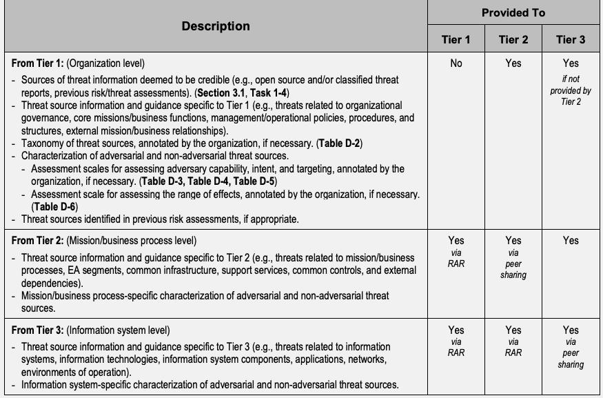
| 説明 | 提供先 |
| Tier 1 / Tier 2 / Tier 3 | |
| Tier 1 から：（組織レベル） | いいえ / はい / はい |
| - 信頼できると判断された脅威情報源（公開情報または機密扱いの脅威 | 該当しない場合 |
| 報告書、過去のリスク／脅威評価）。（セクション 3.1、タスク 1-4） | 提供されない場合 |
| - Tier 1 固有の脅威情報と指針（組織統治、主要な任務／事業機能、管理／運用方針、 | Tier 2 |
| 手順、組織構造、外部の任務／事業関係に関係する脅威など）。 | |
| 構造、外部の任務／事業関係）。 | |
| - 必要に応じて組織が注釈を付した脅威源分類。（表 D-2） | |
| - 敵対的および非敵対的脅威源の特性評価。 | |
| - 必要に応じて組織が注釈を付した、敵対者の能力、意図、標的選定の評価尺度。 | |
| （表 D-3、表 D-4、表 D-5） | |
| - 必要に応じて組織が注釈を付した影響範囲の評価尺度。 | |
| （表 D-6） | |
| - 適切な場合、過去のリスク評価で特定された脅威源。 | |
| Tier 2 から：（任務／事業プロセスレベル） | はい / はい / はい |
| - Tier 2 固有の脅威情報と指針（任務／事業プロセス、EA セグメント、共通インフラ、 | 経由 / 経由 |
| RAR / ピア | |
| サポートサービス、共通管理策、外部依存関係に関係する脅威など）。 | |
| 共有 | |
| 依存関係）。 | |
| - 任務／事業プロセス固有の敵対的・非敵対的脅威源の特性評価。 | |
| 源。 | |
| Tier 3 から：（情報システムレベル） | はい / はい / はい |
| - Tier 3 固有の脅威情報と指針（情報システム、情報技術、システム構成要素、アプリケーション、 | 経由 / 経由 / 経由 |
| RAR / RAR / ピア | |
| ネットワーク、運用環境に関係する脅威など）。 | |
| 運用環境）。 | 共有 |
| - 情報システム固有の敵対的・非敵対的脅威源の特性評価。 |
APPENDIX D
付録 D
未レビュー訳PAGE D-1
ページ D-1
未レビュー訳TABLE D-2: TAXONOMY OF THREAT SOURCES
表 D-2：脅威源の分類
未レビュー訳| Type of Threat Source | Description | Characteristics |
| ADVERSARIAL | Individuals, groups, organizations, or states that seek to | Capability, Intent, Targeting |
| - Individual | exploit the organization’s dependence on cyber | |
| - Outsider | resources (i.e., information in electronic form, information | |
| - Insider | and communications technologies, and the | |
| - Trusted Insider | communications and information-handling capabilities | |
| - Privileged Insider | provided by those technologies). | |
| - Group | ||
| - Ad hoc | ||
| - Established | ||
| - Organization | ||
| - Competitor | ||
| - Supplier | ||
| - Partner | ||
| - Customer | ||
| - Nation-State | ||
| ACCIDENTAL | Erroneous actions taken by individuals in the course of | Range of effects |
| - User | executing their everyday responsibilities. | |
| - Privileged User/Administrator | ||
| STRUCTURAL | Failures of equipment, environmental controls, or | Range of effects |
| - Information Technology (IT) Equipment | software due to aging, resource depletion, or other | |
| - Storage | circumstances which exceed expected operating | |
| - Processing | parameters. | |
| - Communications | ||
| - Display | ||
| - Sensor | ||
| - Controller | ||
| - Environmental Controls | ||
| - Temperature/Humidity Controls | ||
| - Power Supply | ||
| - Software | ||
| - Operating System | ||
| - Networking | ||
| - General-Purpose Application | ||
| - Mission-Specific Application | ||
| ENVIRONMENTAL | Natural disasters and failures of critical infrastructures on | Range of effects |
| - Natural or man-made disaster | which the organization depends, but which are outside | |
| - Fire | the control of the organization. | |
| - Flood/Tsunami | Note: Natural and man-made disasters can also be | |
| - Windstorm/Tornado | characterized in terms of their severity and/or duration. | |
| - Hurricane | However, because the threat source and the threat event | |
| - Earthquake | are strongly identified, severity and duration can be | |
| - Bombing | included in the description of the threat event (e.g., | |
| - Overrun | Category 5 hurricane causes extensive damage to the | |
| - Unusual Natural Event (e.g., sunspots) | facilities housing mission-critical systems, making those | |
| - Infrastructure Failure/Outage | systems unavailable for three weeks). | |
| - Telecommunications | ||
| - Electrical Power |
原本PDFの抜粋画像
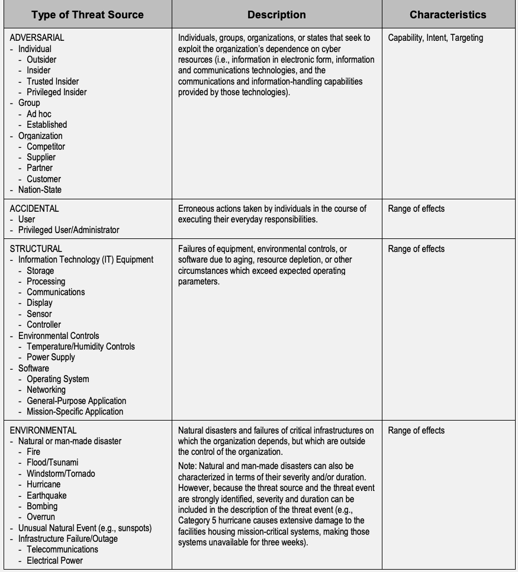
| 脅威源の種類 | 説明 | 特性 |
| 敵対的 | 組織のサイバー資源への依存を悪用しようとする個人、集団、組織または国家 | 能力、意図、標的選定 |
| - 個人 | （電子形式の情報、情報通信技術、そして | |
| - 組織外部者 | これらの技術が提供する通信・情報処理能力） | |
| - 内部者 | への依存 | |
| - 信頼された内部者 | 通信・情報処理能力 | |
| - 特権内部者 | によって提供される）。 | |
| - 集団 | ||
| - 臨時 | ||
| - 確立された | ||
| - 組織 | ||
| - 競合相手 | ||
| - 供給者 | ||
| - パートナー | ||
| - 顧客 | ||
| - 国家 | ||
| 偶発的 | 個人が日常の責務を遂行する中での誤った行為。 | 影響範囲 |
| - 利用者 | 日常の責務を遂行する過程で。 | |
| - 特権ユーザー／管理者 | ||
| 構造的 | 機器、環境制御またはソフトウェアの故障。 | 影響範囲 |
| - 情報技術（IT）機器 | 老朽化、資源枯渇、その他の状況によって | |
| - ストレージ | 想定動作パラメーターを超える | |
| - 処理 | パラメーター。 | |
| - 通信 | ||
| - 表示 | ||
| - センサー | ||
| - コントローラー | ||
| - 環境制御 | ||
| - 温度／湿度制御 | ||
| - 電源 | ||
| - ソフトウェア | ||
| - オペレーティングシステム | ||
| - ネットワーク | ||
| - 汎用アプリケーション | ||
| - 任務固有のアプリケーション | ||
| 環境的 | 組織が依存する自然災害と重要インフラの障害。 | 影響範囲 |
| - 自然災害または人為災害 | 組織が依存するが組織の管理外にある | |
| - 火災 | 組織の管理外にある。 | |
| - 洪水／津波 | 注：自然・人為災害は、深刻度および／または継続時間で | |
| - 暴風／竜巻 | 特徴付けることもできる。 | |
| - ハリケーン | ただし脅威源と脅威事象が明確であるため、深刻度と継続時間は | |
| - 地震 | 脅威事象の説明に含めることができる（例： | |
| - 爆撃 | 脅威事象の説明に含めることができる（例： | |
| - オーバーラン | カテゴリー 5 のハリケーンが | |
| - 異常な自然現象（例：太陽黒点） | 任務重要システムを収容する施設に甚大な損害を与え、 | |
| - インフラ障害／停止 | そのシステムを三週間利用不能にする）。 | |
| - 電気通信 | ||
| - 電力 |
APPENDIX D
付録 D
未レビュー訳PAGE D-2
ページ D-2
未レビュー訳TABLE D-3: ASSESSMENT SCALE – CHARACTERISTICS OF ADVERSARY CAPABILITY
表 D-3：評価尺度 – 敵対者の能力の特性
未レビュー訳| Qualitative | Semi-Quantitative | Description |
| Values | Values | |
| The adversary has a very sophisticated level of expertise, is well-resourced, and can generate | ||
| Very High | 96-100 / 10 | |
| opportunities to support multiple successful, continuous, and coordinated attacks. | ||
| The adversary has a sophisticated level of expertise, with significant resources and opportunities | ||
| High | 80-95 / 8 | |
| to support multiple successful coordinated attacks. | ||
| The adversary has moderate resources, expertise, and opportunities to support multiple successful | ||
| Moderate | 21-79 / 5 | |
| attacks. | ||
| Low | 5-20 / 2 | The adversary has limited resources, expertise, and opportunities to support a successful attack. |
| The adversary has very limited resources, expertise, and opportunities to support a successful | ||
| Very Low | 0-4 / 0 | |
| attack. |
原本PDFの抜粋画像
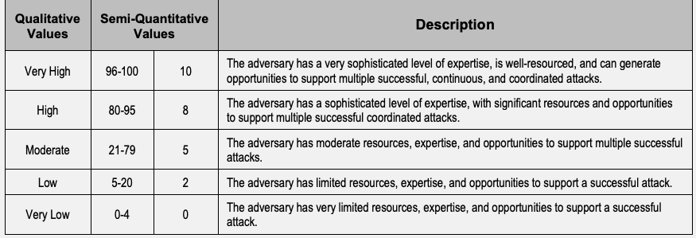
| 定性的 | 半定量的 | 説明 |
| 値 | 値 | |
| 敵対者は非常に高度な専門知識と潤沢な資源を有し、 | ||
| 非常に高い | 96-100 / 10 | |
| 複数の継続的かつ連携した攻撃を成功させる機会を生み出せる。 | ||
| 敵対者は高度な専門知識、相当な資源および機会を持ち、 | ||
| 高い | 80-95 / 8 | |
| 複数の連携した攻撃を成功させられる。 | ||
| 敵対者は複数の攻撃を成功させる中程度の資源、専門知識、機会を持つ。 | ||
| 中程度 | 21-79 / 5 | |
| 攻撃。 | ||
| 低い | 5-20 / 2 | 敵対者は攻撃成功に必要な資源、専門知識、機会が限られる。 |
| 敵対者は攻撃成功に必要な資源、専門知識、機会が非常に限られる。 | ||
| 非常に低い | 0-4 / 0 | |
| 攻撃。 |
TABLE D-4: ASSESSMENT SCALE – CHARACTERISTICS OF ADVERSARY INTENT
表 D-4：評価尺度 – 敵対者の意図の特性
未レビュー訳| Qualitative | Semi-Quantitative | Description |
| Values | Values | |
| The adversary seeks to undermine, severely impede, or destroy a core mission or business | ||
| Very High | 96-100 / 10 | function, program, or enterprise by exploiting a presence in the organization’s information systems |
| or infrastructure. The adversary is concerned about disclosure of tradecraft only to the extent that it | ||
| would impede its ability to complete stated goals. | ||
| The adversary seeks to undermine/impede critical aspects of a core mission or business function, | ||
| High | 80-95 / 8 | program, or enterprise, or place itself in a position to do so in the future, by maintaining a presence |
| in the organization’s information systems or infrastructure. The adversary is very concerned about | ||
| minimizing attack detection/disclosure of tradecraft, particularly while preparing for future attacks. | ||
| The adversary seeks to obtain or modify specific critical or sensitive information or usurp/disrupt | ||
| the organization’s cyber resources by establishing a foothold in the organization’s information | ||
| Moderate | 21-79 / 5 | systems or infrastructure. The adversary is concerned about minimizing attack detection/disclosure |
| of tradecraft, particularly when carrying out attacks over long time periods. The adversary is willing | ||
| to impede aspects of the organization’s missions/business functions to achieve these ends. | ||
| The adversary actively seeks to obtain critical or sensitive information or to usurp/disrupt the | ||
| Low | 5-20 / 2 | organization’s cyber resources, and does so without concern about attack detection/disclosure of |
| tradecraft. | ||
| The adversary seeks to usurp, disrupt, or deface the organization’s cyber resources, and does so | ||
| Very Low | 0-4 / 0 | |
| without concern about attack detection/disclosure of tradecraft. |
原本PDFの抜粋画像
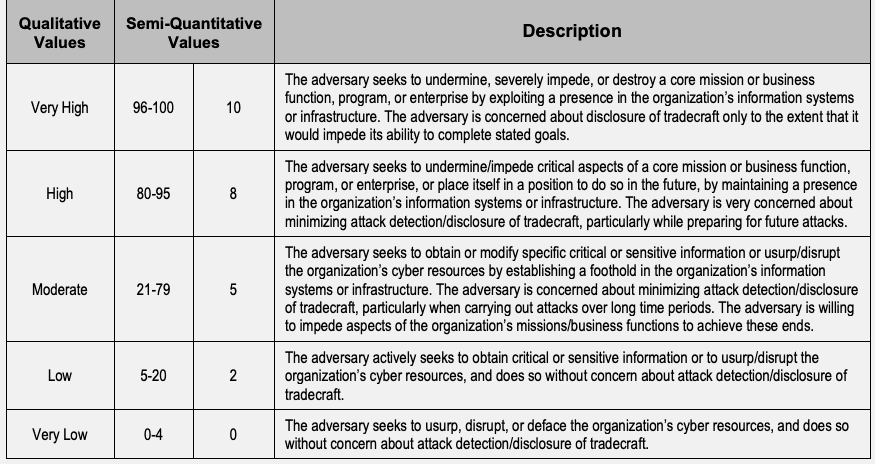
| 定性的 | 半定量的 | 説明 |
| 値 | 値 | |
| 敵対者は中核的な任務または事業 | ||
| 非常に高い | 96-100 / 10 | 機能、プログラムまたはエンタープライズを、組織の情報システム内の存在を悪用して弱体化、重大な妨害または破壊しようとする。 |
| またはインフラ内の存在を悪用する。敵対者は、 | ||
| 明示目標の達成を妨げる場合に限り、手口の開示を懸念する。 | ||
| 敵対者は中核的な任務／事業機能、 | ||
| 高い | 80-95 / 8 | プログラムまたはエンタープライズの重要な側面を弱体化／妨害し、または将来そうできる立場を得るため、存在を維持する。 |
| 組織の情報システムまたはインフラ内に存在する。敵対者は、 | ||
| 特に将来の攻撃準備中、攻撃検知と手口開示の最小化を非常に重視する。 | ||
| 敵対者は特定の重要／機微情報を取得・改変するか、組織のサイバー資源を乗っ取り／妨害するため、 | ||
| 組織の情報システム内に足場を築こうとする。 | ||
| 中程度 | 21-79 / 5 | システムまたはインフラ内に足場を築く。敵対者は攻撃検知と手口開示の最小化を重視し、 |
| 特に長期間の攻撃中はそれを重視する。敵対者は、 | ||
| 目的達成のため組織の任務／事業機能の一部を妨害することもいとわない。 | ||
| 敵対者は重要／機微情報の取得または組織のサイバー資源の乗っ取り／妨害を積極的に試み、 | ||
| 低い | 5-20 / 2 | 攻撃検知や手口開示を気にせず実行する。 |
| 手口。 | ||
| 敵対者は組織のサイバー資源の乗っ取り、妨害、改ざんを試み、 | ||
| 非常に低い | 0-4 / 0 | |
| 攻撃検知や手口開示を気にせず実行する。 |
TABLE D-5: ASSESSMENT SCALE – CHARACTERISTICS OF ADVERSARY TARGETING
表 D-5：評価尺度 – 敵対者の標的選定の特性
未レビュー訳| Qualitative | Semi-Quantitative | Description |
| Values | Values | |
| The adversary analyzes information obtained via reconnaissance and attacks to target persistently | ||
| Very High | 96-100 / 10 | a specific organization, enterprise, program, mission or business function, focusing on specific |
| high-value or mission-critical information, resources, supply flows, or functions; specific employees | ||
| or positions; supporting infrastructure providers/suppliers; or partnering organizations. | ||
| The adversary analyzes information obtained via reconnaissance to target persistently a specific | ||
| High | 80-95 / 8 | organization, enterprise, program, mission or business function, focusing on specific high-value or |
| mission-critical information, resources, supply flows, or functions, specific employees supporting | ||
| those functions, or key positions. | ||
| The adversary analyzes publicly available information to target persistently specific high-value | ||
| Moderate | 21-79 / 5 | |
| organizations (and key positions, such as Chief Information Officer), programs, or information. | ||
| The adversary uses publicly available information to target a class of high-value organizations or | ||
| Low | 5-20 / 2 | |
| information, and seeks targets of opportunity within that class. | ||
| Very Low | 0-4 / 0 | The adversary may or may not target any specific organizations or classes of organizations. |
原本PDFの抜粋画像
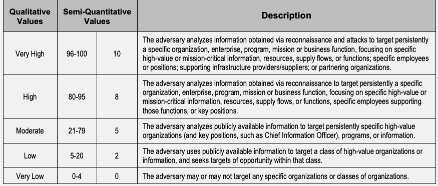
| 定性的 | 半定量的 | 説明 |
| 値 | 値 | |
| 敵対者は偵察および攻撃から得た情報を分析し、 | ||
| 非常に高い | 96-100 / 10 | 特定の組織、エンタープライズ、プログラム、任務または事業機能を継続的に狙い、特定の |
| 高価値／任務重要情報、資源、供給網、機能、特定の従業員 | ||
| や職位、支援インフラ提供者／供給者、提携組織に焦点を当てる。 | ||
| 敵対者は偵察から得た情報を分析し、特定の | ||
| 高い | 80-95 / 8 | 組織、エンタープライズ、プログラム、任務または事業機能を継続的に狙い、特定の高価値／ |
| 任務重要情報、資源、供給網、機能、それらを支援する特定の従業員、 | ||
| または主要職位に焦点を当てる。 | ||
| 敵対者は公開情報を分析し、特定の高価値 | ||
| 中程度 | 21-79 / 5 | |
| 組織（最高情報責任者などの主要職位）、プログラム、情報を継続的に狙う。 | ||
| 敵対者は公開情報を使って高価値組織または情報の一群を狙い、 | ||
| 低い | 5-20 / 2 | |
| その分類内で好機となる対象を探す。 | ||
| 非常に低い | 0-4 / 0 | 敵対者は特定の組織または組織群を狙う場合も、狙わない場合もある。 |
APPENDIX D
付録 D
未レビュー訳PAGE D-3
ページ D-3
未レビュー訳TABLE D-6: ASSESSMENT SCALE – RANGE OF EFFECTS FOR NON-ADVERSARIAL THREAT SOURCES
表 D-6：評価尺度 – 非敵対的脅威源による影響範囲
未レビュー訳| Qualitative | Semi-Quantitative | Description |
| Values | Values | |
| The effects of the error, accident, or act of nature are sweeping, involving almost all of the cyber | ||
| Very High | 96-100 / 10 | resources of the [Tier 3: information systems; Tier 2: mission/business processes or EA segments, |
| common infrastructure, or support services; Tier 1: organization/governance structure]. | ||
| The effects of the error, accident, or act of nature are extensive, involving most of the cyber | ||
| High | 80-95 / 8 | resources of the [Tier 3: information systems; Tier 2: mission/business processes or EA segments, |
| common infrastructure, or support services; Tier 1: organization/governance structure], including | ||
| many critical resources. | ||
| The effects of the error, accident, or act of nature are wide-ranging, involving a significant portion | ||
| Moderate | 21-79 / 5 | of the cyber resources of the [Tier 3: information systems; Tier 2: mission/business processes or |
| EA segments, common infrastructure, or support services; Tier 1: organization/governance | ||
| structure], including some critical resources. | ||
| The effects of the error, accident, or act of nature are limited, involving some of the cyber | ||
| Low | 5-20 / 2 | resources of the [Tier 3: information systems; Tier 2: mission/business processes or EA segments, |
| common infrastructure, or support services; Tier 1: organization/governance structure], but | ||
| involving no critical resources. | ||
| The effects of the error, accident, or act of nature are minimal, involving few if any of the cyber | ||
| Very Low | 0-4 / 0 | resources of the [Tier 3: information systems; Tier 2: mission/business processes or EA segments, |
| common infrastructure, or support services; Tier 1: organization/governance structure], and | ||
| involving no critical resources. |
原本PDFの抜粋画像
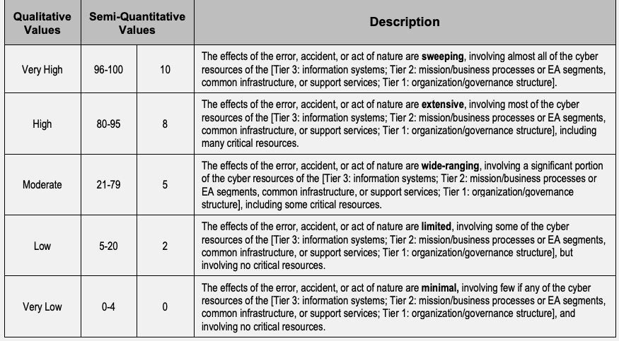
| 定性的 | 半定量的 | 説明 |
| 値 | 値 | |
| 誤り、事故または自然現象の影響は広範で、サイバー資源のほぼすべてに及ぶ。 | ||
| 非常に高い | 96-100 / 10 | [Tier 3：情報システム；Tier 2：任務／事業プロセスまたは EA セグメント、 |
| 共通インフラまたはサポートサービス；Tier 1：組織／ガバナンス構造]の資源。 | ||
| 誤り、事故または自然現象の影響は大きく、サイバー資源の大半に及ぶ。 | ||
| 高い | 80-95 / 8 | [Tier 3：情報システム；Tier 2：任務／事業プロセスまたは EA セグメント、 |
| 共通インフラまたはサポートサービス；Tier 1：組織／ガバナンス構造]の資源で、多くの重要資源を含む。 | ||
| 多くの重要資源。 | ||
| 誤り、事故または自然現象の影響は広範で、サイバー資源のかなりの部分に及ぶ。 | ||
| 中程度 | 21-79 / 5 | [Tier 3：情報システム；Tier 2：任務／事業プロセスまたは |
| EA セグメント、共通インフラまたはサポートサービス；Tier 1：組織／ガバナンス | ||
| 構造]の資源で、一部の重要資源を含む。 | ||
| 誤り、事故または自然現象の影響は限定的で、サイバー資源の一部に及ぶ。 | ||
| 低い | 5-20 / 2 | [Tier 3：情報システム；Tier 2：任務／事業プロセスまたは EA セグメント、 |
| 共通インフラまたはサポートサービス；Tier 1：組織／ガバナンス構造]の資源に及ぶが、 | ||
| 重要資源には及ばない。 | ||
| 誤り、事故または自然現象の影響は最小限で、サイバー資源のごく一部またはほぼゼロに及ぶ。 | ||
| 非常に低い | 0-4 / 0 | [Tier 3：情報システム；Tier 2：任務／事業プロセスまたは EA セグメント、 |
| 共通インフラまたはサポートサービス；Tier 1：組織／ガバナンス構造]の資源に及び、 | ||
| 重要資源には及ばない。 |
TABLE D-7: TEMPLATE – IDENTIFICATION OF ADVERSARIAL THREAT SOURCES
表 D-7：テンプレート – 敵対的脅威源の特定
未レビュー訳| Identifier | Threat Source | In | Capability | Intent | Targeting |
| Source of Information | Scope | ||||
| Table D-3 | Table D-4 | Table D-5 | |||
| Organization | Table D-2 and Task 1-4 or | Yes / No | or | or | or |
| -defined | Organization | Organization | Organization | ||
| Organization-defined | -defined | -defined | -defined |
原本PDFの抜粋画像
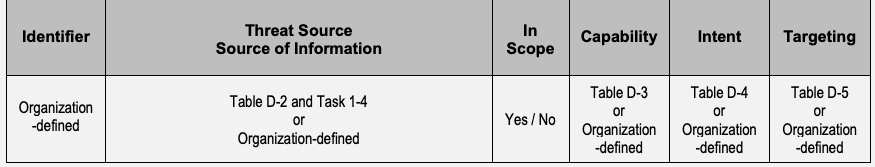
| 識別子 | 脅威源 | 対象 | 能力 | 意図 | 標的選定 |
| 情報源 | 範囲 | ||||
| 表 D-3 | 表 D-4 | 表 D-5 | |||
| 組織 | 表 D-2 およびタスク 1-4、または | はい / いいえ | または | または | または |
| -定義 | 組織 | 組織 | 組織 | ||
| 組織定義 | -定義 | -定義 | -定義 |
TABLE D-8: TEMPLATE – IDENTIFICATION OF NON-ADVERSARIAL THREAT SOURCES
表 D-8：テンプレート – 非敵対的脅威源の特定
未レビュー訳| Identifier | Threat Source | In | Range of Effects |
| Source of Information | Scope | ||
| Table D-6 | |||
| Table D-2 and Task 1-4 | |||
| Organization | |||
| or | Yes / No | or | |
| -defined | Organization-defined | Organization-defined |
原本PDFの抜粋画像
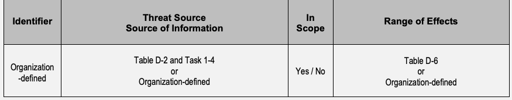
| 識別子 | 脅威源 | 対象 | 影響範囲 |
| 情報源 | 範囲 | ||
| 表 D-6 | |||
| 表 D-2 およびタスク 1-4 | |||
| 組織 | |||
| または | はい / いいえ | または | |
| -定義 | 組織が定義した | 組織が定義した |
APPENDIX D
付録 D
未レビュー訳PAGE D-4
ページ D-4
未レビュー訳APPENDIX E
付録 E
THREAT EVENTS
脅威事象
REPRESENTATIVE THREAT EVENTS INITIATED BY THREAT SOURCES
脅威源によって開始される代表的な脅威事象
未レビュー訳This appendix provides: (i) a description of potentially useful inputs to the threat event identification task; (ii) representative examples of adversarial threat events expressed as tactics, techniques, and procedures (TTPs) and non-adversarial threat events; (iii) an exemplary assessment scale for the relevance of those threat events; and (iv) templates for summarizing and documenting the results of the threat identification Task 2-2. Organizations can eliminate certain threat events from further consideration if no adversary with the necessary capability has been identified.51 Organizations can also modify the threat events provided to describe specific TTPs with sufficient detail52 and at the appropriate classification level.53 Organizations can use the representative threat events and predicated/expected values for the relevance of those events as a starting point with tailoring to adjust for any organization-specific conditions. Table E-5, an output from Task 2-2, provides relevant inputs to the risk tables in Appendix I.
この付録では、次の事項を示す。(i) 脅威事象特定タスクに有用となり得る入力の説明、(ii) 戦術、技法、手順（TTP）として表現された敵対的脅威事象および非敵対的脅威事象の代表例、(iii) それらの脅威事象の関連性を評価するための評価尺度の例、(iv) 脅威特定タスク 2-2 の結果を要約・記録するテンプレート。必要な能力を持つ敵対者が特定されていない場合、組織は一部の脅威事象を以後の検討対象から除外できる。51組織は、十分な詳細度52および適切な分類レベル53で特定のTTPを記述するため、提示された脅威事象を変更することもできる。組織は、代表的な脅威事象とその関連性に関する予測／期待値を出発点として用い、組織固有の状況に合わせて調整できる。表 E-5 はタスク 2-2 の出力であり、付録 I のリスク表に関連する入力となる。
未レビュー訳TABLE E-1: INPUTS – THREAT EVENT IDENTIFICATION
表 E-1：入力 – 脅威事象の特定
未レビュー訳| Description | Provided To |
| Tier 1 / Tier 2 / Tier 3 | |
| From Tier 1: (Organization level) | No / Yes / Yes |
| - Sources of threat information deemed to be credible (e.g., open source and/or classified threat | If not |
| provided | |
| reports, previous risk/threat assessments. (Section 3.1, Task 1-4.) | |
| by Tier 2 | |
| - Threat event information and guidance specific to Tier 1 (e.g., threats related to organizational | |
| governance, core missions/business functions, external mission/business relationships, | |
| management/operational policies, procedures, and structures). | |
| - Exemplary adversarial threat events, annotated by the organization, if necessary. (Table E-2) | |
| - Exemplary non-adversarial threat events, annotated by the organization, if necessary. (Table E-3) | |
| - Assessment scale for assessing the relevance of threat events, annotated by the organization, if | |
| necessary. (Table E-4) | |
| - Threat events identified in previous risk assessments, if appropriate. | |
| From Tier 2: (Mission/business process level) | Yes / Yes / Yes |
| - Threat event information and guidance specific to Tier 2 (e.g., threats related to mission/business | Via / Via |
| RAR / Peer | |
| processes, EA segments, common infrastructure, support services, common controls, and external | |
| Sharing | |
| dependencies). | |
| - Mission/business process-specific characterization of adversarial and non-adversarial threat events. | |
| From Tier 3: (Information system level) | Yes / Yes / Yes |
| - Threat event information and guidance specific to Tier 3 (e.g., threats related to information systems, | Via / Via / Via |
| RAR / RAR / Peer | |
| information technologies, information system components, applications, networks, environments of operation). | Sharing |
| - Information system-specific characterization of adversarial and non-adversarial threat events. | |
| - Incident reports. |
原本PDFの抜粋画像
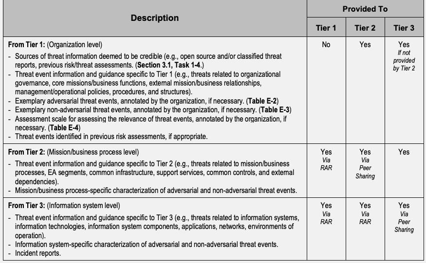
| 説明 | 提供先 |
| Tier 1 / Tier 2 / Tier 3 | |
| Tier 1 から：（組織レベル） | いいえ / はい / はい |
| - 信頼できると判断された脅威情報源（例：公開情報または機密扱いの脅威 | 該当しない場合 |
| 提供 | |
| 報告書、過去のリスク／脅威評価）。（セクション 3.1、タスク 1-4。） | |
| Tier 2 によって | |
| - Tier 1 固有の脅威事象情報および指針（例：組織に関連する脅威、 | |
| 統治、中核的な任務／事業機能、外部の任務／事業上の関係、 | |
| 管理／運用方針、手順、構造など）。 | |
| - 必要に応じて組織が注釈を付した敵対的脅威事象の例。（表 E-2） | |
| - 必要に応じて組織が注釈を付した非敵対的脅威事象の例。（表 E-3） | |
| - 必要に応じて組織が注釈を付した脅威事象の関連性評価尺度。 | |
| （表 E-4） | |
| - 適切な場合、過去のリスク評価で特定された脅威事象。 | |
| Tier 2 から：（任務／事業プロセスレベル） | はい / はい / はい |
| - Tier 2 固有の脅威事象情報および指針（例：任務／事業プロセス、EA セグメント、共通インフラ、 | 経由 / 経由 |
| RAR / ピア | |
| サポートサービス、共通管理策、外部依存関係に関係する脅威など。 | |
| 共有 | |
| 依存関係）。 | |
| - 任務／事業プロセス固有の敵対的・非敵対的脅威事象の特性評価。 | |
| Tier 3 から：（情報システムレベル） | はい / はい / はい |
| - Tier 3 固有の脅威事象情報および指針（例：情報システム、 | 経由 / 経由 / 経由 |
| RAR / RAR / ピア | |
| 情報技術、情報システム構成要素、アプリケーション、ネットワーク、運用環境に関係する脅威など）。 | 共有 |
| - 情報システム固有の敵対的・非敵対的脅威事象の特性評価。 | |
| - インシデント報告書。 |
54
未レビュー訳TABLE E-2: REPRESENTATIVE EXAMPLES – ADVERSARIAL THREAT EVENTS
表 E-2：代表例 – 敵対的脅威事象
未レビュー訳| Threat Events | Description |
| (Characterized by TTPs) | |
| Perform reconnaissance and gather information. | |
| Perform perimeter network reconnaissance/scanning. | Adversary uses commercial or free software to scan organizational perimeters to |
| obtain a better understanding of the information technology infrastructure and | |
| improve the ability to launch successful attacks. | |
| Perform network sniffing of exposed networks. | Adversary with access to exposed wired or wireless data channels used to transmit |
| information, uses network sniffing to identify components, resources, and | |
| protections. | |
| Gather information using open source discovery of | Adversary mines publically accessible information to gather information about |
| organizational information. | organizational information systems, business processes, users or personnel, or |
| external relationships that the adversary can subsequently employ in support of an | |
| attack. | |
| Perform reconnaissance and surveillance of targeted | Adversary uses various means (e.g., scanning, physical observation) over time to |
| organizations. | examine and assess organizations and ascertain points of vulnerability. |
| Perform malware-directed internal reconnaissance. | Adversary uses malware installed inside the organizational perimeter to identify |
| targets of opportunity. Because the scanning, probing, or observation does not cross | |
| the perimeter, it is not detected by externally placed intrusion detection systems. | |
| Craft or create attack tools. | |
| Craft phishing attacks. | Adversary counterfeits communications from a legitimate/trustworthy source to |
| acquire sensitive information such as usernames, passwords, or SSNs. Typical | |
| attacks occur via email, instant messaging, or comparable means; commonly | |
| directing users to websites that appear to be legitimate sites, while actually stealing | |
| the entered information. | |
| Craft spear phishing attacks. | Adversary employs phishing attacks targeted at high value targets (e.g., senior |
| leaders/executives). | |
| Craft attacks specifically based on deployed information | Adversary develops attacks (e.g., crafts targeted malware) that take advantage of |
| technology environment. | adversary knowledge of the organizational information technology environment. |
| Create counterfeit/spoof website. | Adversary creates duplicates of legitimate websites; when users visit a counterfeit |
| site, the site can gather information or download malware. | |
| Craft counterfeit certificates. | Adversary counterfeits or compromises a certificate authority, so that malware or |
| connections will appear legitimate. | |
| Create and operate false front organizations to inject | Adversary creates false front organizations with the appearance of legitimate |
| malicious components into the supply chain. | suppliers in the critical life-cycle path that then inject corrupted/malicious information |
| system components into the organizational supply chain. | |
| Deliver/insert/install malicious capabilities. | |
| Deliver known malware to internal organizational | Adversary uses common delivery mechanisms (e.g., email) to install/insert known |
| information systems (e.g., virus via email). | malware (e. g., malware whose existence is known) into organizational information |
| systems. | |
| Deliver modified malware to internal organizational | Adversary uses more sophisticated delivery mechanisms than email (e.g., web |
| information systems. | traffic, instant messaging, FTP) to deliver malware and possibly modifications of |
| known malware to gain access to internal organizational information systems. | |
| Deliver targeted malware for control of internal systems | Adversary installs malware that is specifically designed to take control of internal |
| and exfiltration of data. | organizational information systems, identify sensitive information, exfiltrate the |
| information back to adversary, and conceal these actions. | |
| Deliver malware by providing removable media. | Adversary places removable media (e.g., flash drives) containing malware in |
| locations external to organizational physical perimeters but where employees are | |
| likely to find the media (e.g., facilities parking lots, exhibits at conferences attended | |
| by employees) and use it on organizational information systems. |
原本PDFの抜粋画像
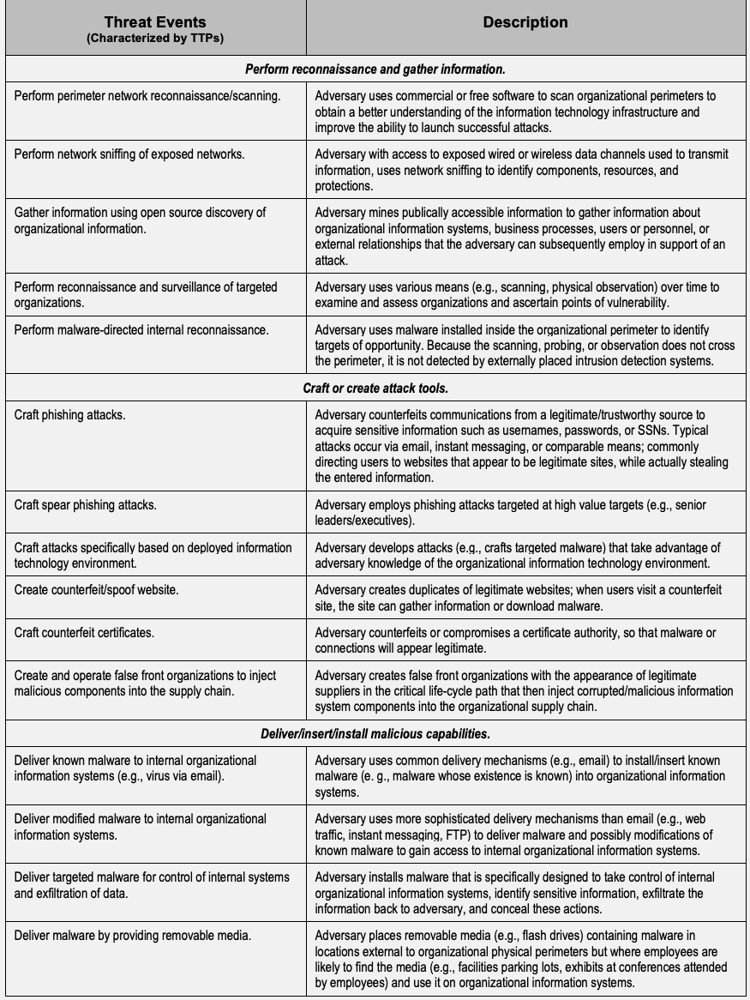
| 脅威事象 | 説明 |
| （TTPで特徴付け） | |
| 偵察を行い、情報を収集する。 | |
| ネットワーク境界の偵察／スキャンを行う。 | 攻撃者は商用または無料のソフトウェアを使用して組織の境界をスキャンし、 |
| 情報技術インフラストラクチャをよりよく理解し、 | |
| 攻撃を成功させる能力を高める。 | |
| 外部に公開されたネットワークでパケット盗聴を行う。 | 情報伝送に使用される公開済みの有線または無線データチャネルにアクセスできる攻撃者が、 |
| ネットワーク盗聴を使って構成要素、資源、保護策を特定する。 | |
| 保護策。 | |
| 公開情報を探索して | 攻撃者は一般公開情報を掘り起こし、組織に関する情報を収集する。 |
| 組織情報を収集する。 | 組織の情報システム、業務プロセス、利用者または職員、 |
| あるいは攻撃者が後に攻撃の支援に利用できる外部関係を調べる。 | |
| 攻撃。 | |
| 標的 | 攻撃者はスキャンや物理的観察などの手段を時間をかけて用い、 |
| 組織に対する偵察・監視を行う。 | 組織を調査・評価し、脆弱な箇所を特定する。 |
| マルウェアによる内部偵察を行う。 | 攻撃者は組織境界内に設置したマルウェアを使い、 |
| 機会となる標的を特定する。スキャン、探査、観察は境界を越えないため、 | |
| 外部に設置された侵入検知システムでは検知されない。 | |
| 攻撃ツールを作成する。 | |
| フィッシング攻撃を作成する。 | 攻撃者は正当または信頼できる情報源からの通信を偽造し、 |
| ユーザー名、パスワード、SSNなどの機微情報を取得する。典型的な | |
| 攻撃は電子メール、インスタントメッセージなどを介して行われ、通常、 | |
| 正規サイトに見えるウェブサイトへ利用者を誘導し、実際には入力された | |
| 情報を盗み取る。 | |
| スピアフィッシング攻撃を作成する。 | 攻撃者は高価値の標的（例：上級 |
| 指導者／幹部）を狙うフィッシング攻撃を用いる。 | |
| 配備済みの情報 | 攻撃者は、組織の情報技術環境に関する知識を利用する攻撃（標的型マルウェアの作成など）を開発する。 |
| 技術環境に特化した攻撃を作成する。 | 攻撃者が得た組織の情報技術環境に関する知識。 |
| 偽造／なりすましウェブサイトを作成する。 | 攻撃者は正規ウェブサイトの複製を作成する。利用者が偽サイトを訪れると、 |
| そのサイトは情報を収集したりマルウェアをダウンロードさせたりできる。 | |
| 偽造証明書を作成する。 | 攻撃者は認証局を偽造または侵害し、マルウェアや接続が |
| 正規のものに見えるようにする。 | |
| 偽装組織を設立・運営して | 攻撃者は正規の供給業者に見せかけた偽装組織を作り、 |
| サプライチェーンに悪意ある構成要素を注入する。 | 重要なライフサイクル経路にある供給業者を装い、改ざん／悪意ある情報システム構成要素を |
| 組織のサプライチェーンに注入する。 | |
| 悪意ある能力を配布／挿入／インストールする。 | |
| 既知のマルウェアを組織内部の | 攻撃者は一般的な配布手段（例：電子メール）で既知のマルウェアを |
| 情報システムに配布する（例：電子メール経由のウイルス）。 | （存在が知られているマルウェアなど）組織の情報システムに |
| 挿入する。 | |
| 改変マルウェアを組織内部の | 攻撃者は電子メールより高度な配布手段（ウェブ |
| 情報システムに配布する。 | トラフィック、インスタントメッセージ、FTPなど）で、マルウェアや既知のマルウェアの改変版を送り、 |
| 組織内部の情報システムへのアクセスを得る。 | |
| 内部システムを制御する標的型マルウェアを配布し | 攻撃者は、組織内部の情報システムを制御するよう特別に設計されたマルウェアをインストールし、 |
| データを流出させる。 | 機微情報を特定し、その情報を |
| 攻撃者に送り返して、これらの行為を隠蔽する。 | |
| リムーバブルメディアを提供してマルウェアを配布する。 | 攻撃者はマルウェア入りのリムーバブルメディア（例：USBフラッシュドライブ）を、 |
| 組織の物理的境界外でありながら従業員が | |
| 見つけそうな場所（例：施設の駐車場、従業員が参加する会議の展示会場）に置き、 | |
| 従業員に組織の情報システムで使用させる。 |
| Threat Events | Description |
| (Characterized by TTPs) | |
| Insert untargeted malware into downloadable software | Adversary corrupts or inserts malware into common freeware, shareware or |
| and/or into commercial information technology products. | commercial information technology products. Adversary is not targeting specific |
| organizations, simply looking for entry points into internal organizational information | |
| systems. Note that this is particularly a concern for mobile applications. | |
| Insert targeted malware into organizational information | Adversary inserts malware into organizational information systems and information |
| systems and information system components. | system components (e.g., commercial information technology products), specifically |
| targeted to the hardware, software, and firmware used by organizations (based on | |
| knowledge gained via reconnaissance). | |
| Insert specialized malware into organizational | Adversary inserts specialized, non-detectable, malware into organizational |
| information systems based on system configurations. | information systems based on system configurations, specifically targeting critical |
| information system components based on reconnaissance and placement within | |
| organizational information systems. | |
| Insert counterfeit or tampered hardware into the supply | Adversary intercepts hardware from legitimate suppliers. Adversary modifies the |
| chain. | hardware or replaces it with faulty or otherwise modified hardware. |
| Insert tampered critical components into organizational | Adversary replaces, though supply chain, subverted insider, or some combination |
| systems. | thereof, critical information system components with modified or corrupted |
| components. | |
| Install general-purpose sniffers on organization- | Adversary installs sniffing software onto internal organizational information systems |
| controlled information systems or networks. | or networks. |
| Install persistent and targeted sniffers on organizational | Adversary places within internal organizational information systems or networks |
| information systems and networks. | software designed to (over a continuous period of time) collect (sniff) network traffic. |
| Insert malicious scanning devices (e.g., wireless | Adversary uses postal service or other commercial delivery services to deliver to |
| sniffers) inside facilities. | organizational mailrooms a device that is able to scan wireless communications |
| accessible from within the mailrooms and then wirelessly transmit information back | |
| to adversary. | |
| Insert subverted individuals into organizations. | Adversary places individuals within organizations who are willing and able to carry |
| out actions to cause harm to organizational missions/business functions. | |
| Insert subverted individuals into privileged positions in | Adversary places individuals in privileged positions within organizations who are |
| organizations. | willing and able to carry out actions to cause harm to organizational |
| missions/business functions. Adversary may target privileged functions to gain | |
| access to sensitive information (e.g., user accounts, system files, etc.) and may | |
| leverage access to one privileged capability to get to another capability. | |
| Exploit and compromise. | |
| Exploit physical access of authorized staff to gain | Adversary follows (“tailgates”) authorized individuals into secure/controlled locations |
| access to organizational facilities. | with the goal of gaining access to facilities, circumventing physical security checks. |
| Exploit poorly configured or unauthorized information | Adversary gains access through the Internet to information systems that are not |
| systems exposed to the Internet. | authorized for Internet connectivity or that do not meet organizational configuration |
| requirements. | |
| Exploit split tunneling. | Adversary takes advantage of external organizational or personal information |
| systems (e.g., laptop computers at remote locations) that are simultaneously | |
| connected securely to organizational information systems or networks and to | |
| nonsecure remote connections. | |
| Exploit multi-tenancy in a cloud environment. | Adversary, with processes running in an organizationally-used cloud environment, |
| takes advantage of multi-tenancy to observe behavior of organizational processes, | |
| acquire organizational information, or interfere with the timely or correct functioning | |
| of organizational processes. | |
| Exploit known vulnerabilities in mobile systems (e.g., | Adversary takes advantage of fact that transportable information systems are |
| laptops, PDAs, smart phones). | outside physical protection of organizations and logical protection of corporate |
| firewalls, and compromises the systems based on known vulnerabilities to gather | |
| information from those systems. | |
| Exploit recently discovered vulnerabilities. | Adversary exploits recently discovered vulnerabilities in organizational information |
| systems in an attempt to compromise the systems before mitigation measures are | |
| available or in place. |
原本PDFの抜粋画像
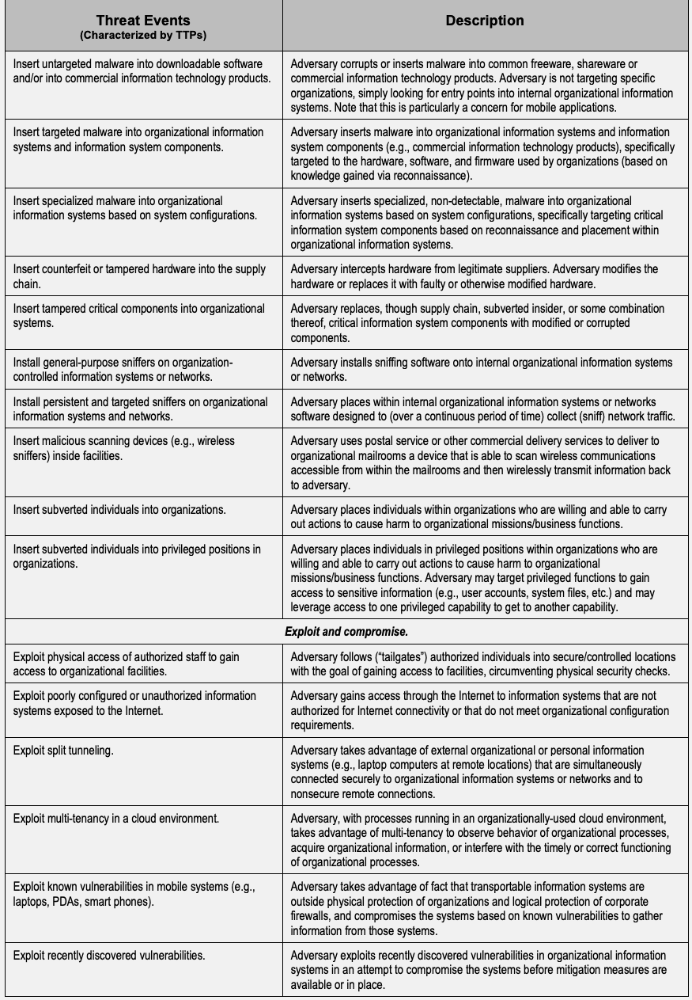
| 脅威事象 | 説明 |
| （TTPで特徴付け） | |
| ダウンロード可能なソフトウェアに無差別型マルウェアを挿入し | 攻撃者は一般的なフリーウェア、シェアウェア、または |
| 商用情報技術製品にも挿入する。 | 商用情報技術製品にマルウェアを挿入または改ざんする。攻撃者は特定の組織を狙わず、 |
| 組織内部の情報システムへの侵入口を探している。これは特に | |
| モバイルアプリケーションで懸念される。 | |
| 組織の情報 | 攻撃者は組織の情報システムおよび |
| システムおよび情報システム構成要素に標的型マルウェアを挿入する。 | 情報システム構成要素（例：商用情報技術製品）にマルウェアを挿入し、特に |
| 組織が使用するハードウェア、ソフトウェア、ファームウェアを標的とし（ | |
| 偵察によって得た知識に基づく）。 | |
| 組織の情報システムに特殊なマルウェアを | 攻撃者は組織の情報システムに検知困難な特殊マルウェアを挿入し、 |
| システム構成に基づいて挿入する。 | システム構成に基づいて、特に重要な |
| 情報システム構成要素を偵察と組織内での配置に基づいて標的とする。 | |
| 組織の情報システム。 | |
| 偽造または改ざんされたハードウェアを | 攻撃者は正規供給業者からハードウェアを傍受し、これを改変するか、 |
| サプライチェーンに挿入する。 | 故障品または別の改変済みハードウェアと交換する。 |
| 改ざんされた重要構成要素を組織の | 攻撃者はサプライチェーン、内通者、またはその組み合わせを通じて、 |
| システムに挿入する。 | 重要な情報システム構成要素を改変済みまたは破損した |
| 構成要素に置き換える。 | |
| 組織が管理する情報システムまたはネットワークに汎用盗聴ツールを | 攻撃者は組織内部の情報システムに盗聴ソフトウェアをインストールし、 |
| インストールする。 | ネットワークにも設置する。 |
| 組織の情報システムおよびネットワークに継続的・標的型の盗聴ツールを | 攻撃者は組織内部の情報システムまたはネットワーク内に、 |
| 設置する。 | 継続的にネットワークトラフィックを収集（盗聴）するソフトウェアを配置する。 |
| 悪意あるスキャン装置（例：無線 | 攻撃者は郵便または他の商業配送サービスを使って、 |
| 盗聴装置）を施設内に挿入する。 | 組織の郵便室に無線通信をスキャンできる装置を配送し、 |
| 郵便室内からアクセス可能な通信を走査して、情報を無線で攻撃者へ | |
| 送信させる。 | |
| 組織に内通者を潜入させる。 | 攻撃者は組織内に、意思と能力のある人物を配置し、 |
| 組織の任務／事業機能に損害を与える行為を実行させる。 | |
| 組織内の特権職位に内通者を配置し | 攻撃者は組織内の特権職位に、 |
| 活動させる。 | 任務／事業機能に損害を与える行為を実行する意思と能力のある人物を配置する。 |
| 組織の任務／事業機能に損害を与える。さらに特権機能を狙い、 | |
| 機微情報（例：ユーザーアカウント、システムファイルなど）にアクセスし、 | |
| ある特権機能へのアクセスを別の機能への到達に利用する。 | |
| 悪用および侵害を行う。 | |
| 許可された職員の物理的アクセスに便乗して | 攻撃者は許可された人物の後ろについて（「共連れ」して）安全管理区域に入り、 |
| 組織施設へのアクセスを得る。 | 施設へのアクセスを得るため、物理的なセキュリティ確認を回避する。 |
| 設定不備または未承認の情報システムの | 攻撃者はインターネット経由で、接続を承認されていない、または組織の構成 |
| インターネット公開を悪用する。 | 要件を満たさない情報システムにアクセスする。 |
| 要件。 | |
| スプリットトンネリングを悪用する。 | 攻撃者は組織外または個人の情報システム（例：遠隔地のノートPC）を利用する。 |
| それらは同時に、組織の情報システムやネットワークに安全に接続し、 | |
| さらに安全でない遠隔接続にも接続している。 | |
| 安全でない遠隔接続。 | |
| クラウド環境のマルチテナンシーを悪用する。 | 組織が使用するクラウド環境でプロセスを実行する攻撃者は、 |
| マルチテナンシーを利用して組織プロセスの動作を観察し、 | |
| 組織情報を取得するか、 | |
| 組織プロセスの適時または正確な機能を妨害する。 | |
| モバイルシステムの既知の脆弱性を悪用する（例： | 攻撃者は可搬型情報システムが |
| ノートPC、PDA、スマートフォン）。 | 組織の物理的保護および企業ファイアウォールによる論理的保護の外にあることを利用し、 |
| 既知の脆弱性を利用してシステムを侵害し、 | |
| それらのシステムから情報を収集する。 | |
| 最近発見された脆弱性を悪用する。 | 攻撃者は組織の情報システムにある最近発見された脆弱性を悪用し、 |
| システムを侵害しようとするが、緩和策が | |
| 利用可能になる、または実施される前に。 |
APPENDIX E
付録 E
未レビュー訳PAGE E-3
ページ E-3
未レビュー訳| Threat Events | Description |
| (Characterized by TTPs) | |
| Exploit vulnerabilities on internal organizational | Adversary searches for known vulnerabilities in organizational internal information |
| information systems. | systems and exploits those vulnerabilities. |
| Exploit vulnerabilities using zero-day attacks. | Adversary employs attacks that exploit as yet unpublicized vulnerabilities. Zero-day |
| attacks are based on adversary insight into the information systems and applications | |
| used by organizations as well as adversary reconnaissance of organizations. | |
| Exploit vulnerabilities in information systems timed with | Adversary launches attacks on organizations in a time and manner consistent with |
| organizational mission/business operations tempo. | organizational needs to conduct mission/business operations. |
| Exploit insecure or incomplete data deletion in multi- | Adversary obtains unauthorized information due to insecure or incomplete data |
| tenant environment. | deletion in a multi-tenant environment (e.g., in a cloud computing environment). |
| Violate isolation in multi-tenant environment. | Adversary circumvents or defeats isolation mechanisms in a multi-tenant |
| environment (e.g., in a cloud computing environment) to observe, corrupt, or deny | |
| service to hosted services and information/data. | |
| Compromise critical information systems via physical | Adversary obtains physical access to organizational information systems and makes |
| access. | modifications. |
| Compromise information systems or devices used | Adversary installs malware on information systems or devices while the |
| externally and reintroduced into the enterprise. | systems/devices are external to organizations for purposes of subsequently infecting |
| organizations when reconnected. | |
| Compromise software of organizational critical | Adversary inserts malware or otherwise corrupts critical internal organizational |
| information systems. | information systems. |
| Compromise organizational information systems to | Adversary implants malware into internal organizational information systems, where |
| facilitate exfiltration of data/information. | the malware over time can identify and then exfiltrate valuable information. |
| Compromise mission-critical information. | Adversary compromises the integrity of mission-critical information, thus preventing |
| or impeding ability of organizations to which information is supplied, from carrying | |
| out operations. | |
| Compromise design, manufacture, and/or distribution of | Adversary compromises the design, manufacture, and/or distribution of critical |
| information system components (including hardware, | information system components at selected suppliers. |
| software, and firmware). | |
| Conduct an attack (i.e., direct/coordinate attack tools or activities). | |
| Conduct communications interception attacks. | Adversary takes advantage of communications that are either unencrypted or use |
| weak encryption (e.g., encryption containing publically known flaws), targets those | |
| communications, and gains access to transmitted information and channels. | |
| Conduct wireless jamming attacks. | Adversary takes measures to interfere with wireless communications so as to |
| impede or prevent communications from reaching intended recipients. | |
| Conduct attacks using unauthorized ports, protocols and | Adversary conducts attacks using ports, protocols, and services for ingress and |
| services. | egress that are not authorized for use by organizations. |
| Conduct attacks leveraging traffic/data movement | Adversary makes use of permitted information flows (e.g., email communication, |
| allowed across perimeter. | removable storage) to compromise internal information systems, which allows |
| adversary to obtain and exfiltrate sensitive information through perimeters. | |
| Conduct simple Denial of Service (DoS) attack. | Adversary attempts to make an Internet-accessible resource unavailable to intended |
| users, or prevent the resource from functioning efficiently or at all, temporarily or | |
| indefinitely. | |
| Conduct Distributed Denial of Service (DDoS) attacks. | Adversary uses multiple compromised information systems to attack a single target, |
| thereby causing denial of service for users of the targeted information systems. | |
| Conduct targeted Denial of Service (DoS) attacks. | Adversary targets DoS attacks to critical information systems, components, or |
| supporting infrastructures, based on adversary knowledge of dependencies. | |
| Conduct physical attacks on organizational facilities. | Adversary conducts a physical attack on organizational facilities (e.g., sets a fire). |
| Conduct physical attacks on infrastructures supporting | Adversary conducts a physical attack on one or more infrastructures supporting |
| organizational facilities. | organizational facilities (e.g., breaks a water main, cuts a power line). |
| Conduct cyber-physical attacks on organizational | Adversary conducts a cyber-physical attack on organizational facilities (e.g., |
| facilities. | remotely changes HVAC settings). |
原本PDFの抜粋画像
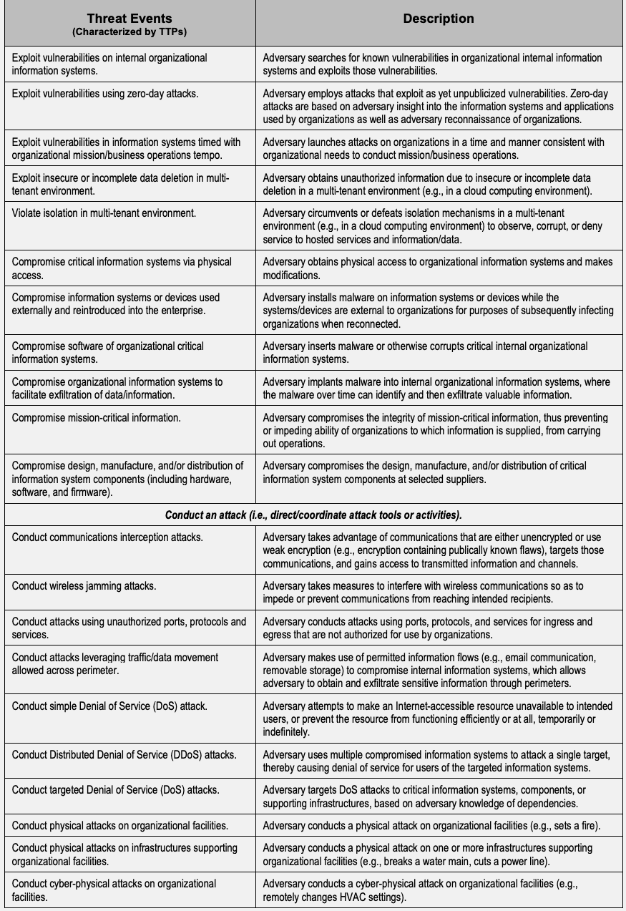
| 脅威事象 | 説明 |
| （TTPで特徴付け） | |
| 組織内部の | 攻撃者は組織内部の情報システムに既知の脆弱性がないか調査し、 |
| 情報システムのソフトウェアを侵害する。 | それらの脆弱性を悪用する。 |
| ゼロデイ攻撃で脆弱性を悪用する。 | 攻撃者はまだ公表されていない脆弱性を悪用する攻撃を用いる。ゼロデイ |
| 攻撃は、組織が使用する情報システムやアプリケーションに関する攻撃者の知識、 | |
| および組織に対する偵察に基づく。 | |
| 組織の任務／事業運用のペースに合わせて、 | 攻撃者は組織を攻撃するが、その時期と方法は |
| 情報システムの脆弱性を悪用する。 | 任務／事業運用を実施する組織のニーズに合致する。 |
| マルチ | 攻撃者は不安全または不完全なデータ削除により不正な情報を取得する。 |
| テナント環境で安全でない、または不完全なデータ削除を悪用する。 | これはマルチテナント環境（例：クラウドコンピューティング環境）での削除不備に起因する。 |
| マルチテナント環境で分離を侵害する。 | 攻撃者はマルチテナント環境の分離機構を回避または無効化し、 |
| 観察、改ざん、またはサービス拒否を行う（例：クラウドコンピューティング環境で）。 | |
| ホストされるサービスおよび情報／データに対するサービスを妨害する。 | |
| 物理的な | 攻撃者は組織の情報システムに物理的にアクセスし、 |
| アクセスを通じて重要な情報システムを侵害する。 | 変更を加える。 |
| 外部で使用される情報システムまたはデバイスを | 攻撃者は情報システムまたはデバイスが |
| 企業環境に再導入する際に侵害する。 | 組織外にある間にマルウェアをインストールし、後に感染させることを目的とし、 |
| 再接続時に組織を感染させる。 | |
| 組織の重要 | 攻撃者は組織内部の重要な |
| 情報システムにマルウェアを挿入するか、その他の方法で破損させる。 | 情報システムにマルウェアを挿入するか、その他の方法で破損させる。 |
| 組織の情報システムを侵害し、 | 攻撃者は組織内部の情報システムにマルウェアを埋め込み、マルウェアが時間をかけて価値ある情報を特定し、 |
| データ／情報を流出させる。 | 時間をかけて価値ある情報を特定し、外部へ流出させる。 |
| 任務上重要な情報を侵害する。 | 攻撃者は任務上重要な情報の完全性を損ない、 |
| その情報の提供先である組織が業務を遂行する能力を妨げ、 | |
| または困難にする。 | |
| 情報システム構成要素の | 攻撃者は重要な情報システム構成要素の設計、製造、および／または流通を |
| 設計、製造、および／または流通を侵害する（ハードウェア、 | 選定された供給業者において侵害する。 |
| ソフトウェア、ファームウェアを含む）。 | |
| 攻撃を実行する（すなわち攻撃ツールや活動を指揮／調整する）。 | |
| 通信傍受攻撃を実行する。 | 攻撃者は暗号化されていない、または |
| 脆弱性が公知の弱い暗号化を使用する通信を狙い、 | |
| 送信情報および通信チャネルへのアクセスを得る。 | |
| 無線妨害攻撃を実行する。 | 攻撃者は無線通信を妨害し、 |
| 通信が意図された受信者に届くのを妨げ、または阻止する。 | |
| 未承認のポート、プロトコル、および | 攻撃者は侵入および送出に使うポート、プロトコル、サービスのうち、 |
| サービスを使って攻撃する。 | 組織での使用が許可されていないものを使って攻撃する。 |
| 境界を越えて | 攻撃者は許可された情報の流れ（例：電子メール、 |
| 許可されたトラフィック／データ移動を利用して攻撃する。 | リムーバブルストレージ）を利用して内部情報システムを侵害し、 |
| 境界を越えて機微情報を取得・流出させる。 | |
| 単純なサービス拒否（DoS）攻撃を実行する。 | 攻撃者はインターネットからアクセス可能な資源を意図された利用者が使えないようにするか、 |
| 資源の効率的な動作または動作そのものを一時的もしくは | |
| 無期限に妨げようとする。 | |
| 分散型サービス拒否（DDoS）攻撃を実行する。 | 攻撃者は複数の侵害された情報システムを使って単一の標的を攻撃し、 |
| 標的の情報システムの利用者にサービス拒否を引き起こす。 | |
| 標的型サービス拒否（DoS）攻撃を実行する。 | 攻撃者は依存関係に関する知識に基づいて、重要な情報システム、構成要素、または |
| それらを支えるインフラにDoS攻撃を仕掛ける。 | |
| 組織施設に物理攻撃を行う。 | 攻撃者は組織施設に物理攻撃を行う（例：放火）。 |
| 組織施設を支えるインフラに物理攻撃を行う。 | 攻撃者は組織施設を支える一つ以上のインフラに物理攻撃を行う |
| （例：水道管を破壊する、電力線を切断する）。 | |
| 組織施設へのサイバー・フィジカル攻撃を行う。 | 攻撃者は組織施設にサイバー・フィジカル攻撃を行う（例： |
| 遠隔からHVAC設定を変更する）。 |
APPENDIX E
付録 E
未レビュー訳PAGE E-4
ページ E-4
未レビュー訳| Threat Events | Description |
| (Characterized by TTPs) | |
| Conduct data scavenging attacks in a cloud | Adversary obtains data used and then deleted by organizational processes running |
| environment. | in a cloud environment. |
| Conduct brute force login attempts/password guessing | Adversary attempts to gain access to organizational information systems by random |
| attacks. | or systematic guessing of passwords, possibly supported by password cracking |
| utilities. | |
| Conduct nontargeted zero-day attacks. | Adversary employs attacks that exploit as yet unpublicized vulnerabilities. Attacks |
| are not based on any adversary insights into specific vulnerabilities of organizations. | |
| Conduct externally-based session hijacking. | Adversary takes control of (hijacks) already established, legitimate information |
| system sessions between organizations and external entities (e.g., users connecting | |
| from off-site locations). | |
| Conduct internally-based session hijacking. | Adversary places an entity within organizations in order to gain access to |
| organizational information systems or networks for the express purpose of taking | |
| control (hijacking) an already established, legitimate session either between | |
| organizations and external entities (e.g., users connecting from remote locations) or | |
| between two locations within internal networks. | |
| Conduct externally-based network traffic modification | Adversary, operating outside organizational systems, intercepts/eavesdrops on |
| (man in the middle) attacks. | sessions between organizational and external systems. Adversary then relays |
| messages between organizational and external systems, making them believe that | |
| they are talking directly to each other over a private connection, when in fact the | |
| entire communication is controlled by the adversary. Such attacks are of particular | |
| concern for organizational use of community, hybrid, and public clouds. | |
| Conduct internally-based network traffic modification | Adversary operating within the organizational infrastructure intercepts and corrupts |
| (man in the middle) attacks. | data sessions. |
| Conduct outsider-based social engineering to obtain | Externally placed adversary takes actions (e.g., using email, phone) with the intent |
| information. | of persuading or otherwise tricking individuals within organizations into revealing |
| critical/sensitive information (e.g., personally identifiable information). | |
| Conduct insider-based social engineering to obtain | Internally placed adversary takes actions (e.g., using email, phone) so that |
| information. | individuals within organizations reveal critical/sensitive information (e.g., mission |
| information). | |
| Conduct attacks targeting and compromising personal | Adversary targets key organizational employees by placing malware on their |
| devices of critical employees. | personally owned information systems and devices (e.g., laptop/notebook |
| computers, personal digital assistants, smart phones). The intent is to take | |
| advantage of any instances where employees use personal information systems or | |
| devices to handle critical/sensitive information. | |
| Conduct supply chain attacks targeting and exploiting | Adversary targets and compromises the operation of software (e.g., through |
| critical hardware, software, or firmware. | malware injections), firmware, and hardware that performs critical functions for |
| organizations. This is largely accomplished as supply chain attacks on both | |
| commercial off-the-shelf and custom information systems and components. | |
| Achieve results (i.e., cause adverse impacts, obtain information) | |
| Obtain sensitive information through network sniffing of | Adversary with access to exposed wired or wireless data channels that |
| external networks. | organizations (or organizational personnel) use to transmit information (e.g., kiosks, |
| public wireless networks) intercepts communications. | |
| Obtain sensitive information via exfiltration. | Adversary directs malware on organizational systems to locate and surreptitiously |
| transmit sensitive information. | |
| Cause degradation or denial of attacker-selected | Adversary directs malware on organizational systems to impair the correct and |
| services or capabilities. | timely support of organizational mission/business functions. |
| Cause deterioration/destruction of critical information | Adversary destroys or causes deterioration of critical information system |
| system components and functions. | components to impede or eliminate organizational ability to carry out missions or |
| business functions. Detection of this action is not a concern. | |
| Cause integrity loss by creating, deleting, and/or | Adversary vandalizes, or otherwise makes unauthorized changes to, organizational |
| modifying data on publicly accessible information | websites or data on websites. |
| systems (e.g., web defacement). | |
| Cause integrity loss by polluting or corrupting critical | Adversary implants corrupted and incorrect data in critical data, resulting in |
| data. | suboptimal actions or loss of confidence in organizational data/services. |
原本PDFの抜粋画像
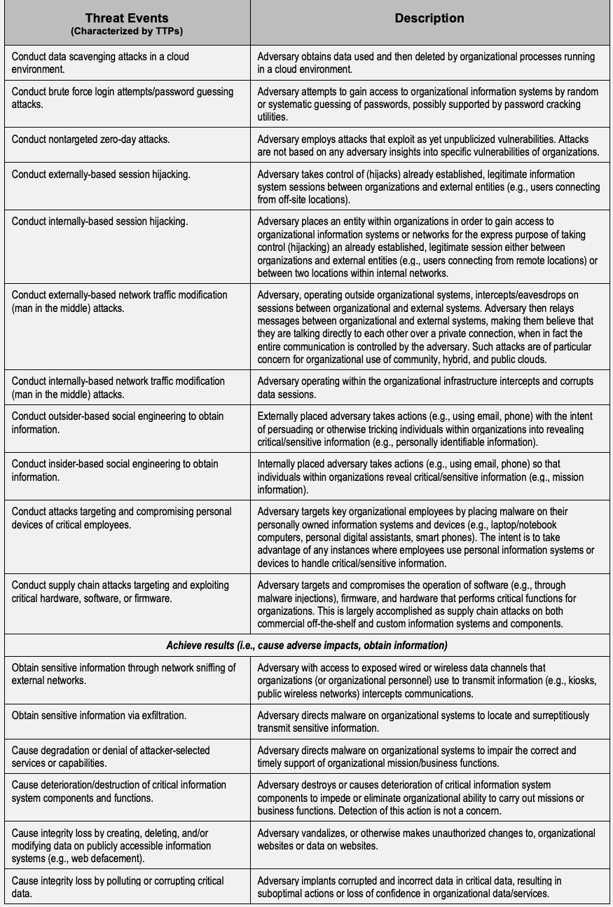
| 脅威事象 | 説明 |
| （TTPによる特徴付け） | |
| クラウド環境でデータ残存物を探索する攻撃を行う | 敵対者は組織のプロセスによって使用後に削除されたデータを取得する |
| 環境。 | クラウド環境で。 |
| 総当たりログイン試行／パスワード推測攻撃を行う | 敵対者は無作為な |
| 攻撃。 | または体系的なパスワード推測によって組織の情報システムへのアクセスを試みる。パスワード解読 |
| ツールを利用する場合もある。 | |
| 標的を定めないゼロデイ攻撃を行う。 | 敵対者は未公表の脆弱性を悪用する攻撃を用いる。これらは |
| 組織固有の脆弱性に関する敵対者の知見に基づくものではない。 | |
| 外部起点のセッションハイジャックを行う。 | 敵対者は組織と外部エンティティ間に確立済みの正当な情報システム |
| セッション（例：遠隔地から接続するユーザー）を乗っ取る。 | |
| 内部起点のセッションハイジャックを行う。 | 敵対者はアクセスを得る目的で組織内に主体を配置する。 |
| 組織の情報システム／ネットワークへのアクセスを得て、確立済みの正当なセッションを乗っ取ることが明確な目的である。 | |
| そのセッションは組織と外部エンティティ（例：遠隔地から接続するユーザー）との間、または内部ネットワーク内の二地点間に確立されている。 | |
| 外部起点のネットワークトラフィック改変 | 組織システム外部の敵対者が組織と外部システム間のセッションを傍受／盗聴する。 |
| （中間者）攻撃を行う。 | 次に敵対者は両システム間でメッセージを中継し、 |
| 両者がプライベート接続で直接通信していると思わせるが、実際には全通信が敵対者に制御される。この攻撃はコミュニティ、ハイブリッド、パブリッククラウドの組織利用で特に懸念される。 | |
| 内部起点のネットワークトラフィック改変 | 組織インフラ内の敵対者が |
| （中間者）攻撃を行う。 | データセッションを傍受して改ざんする。 |
| 情報を得るため外部者によるソーシャルエンジニアリングを行う | 外部の敵対者は、組織内の個人に重要／機微情報（例：個人識別情報）を明かさせるよう説得または欺く目的で行動する（例：電子メール、電話）。 |
| 情報を得るため内部者によるソーシャルエンジニアリングを行う | 内部の敵対者は組織内の個人に重要／機微情報（例：ミッション情報）を明かさせるため行動する（例：電子メール、電話）。 |
| 重要な従業員の個人 | 敵対者は主要な従業員の個人所有システム／デバイスにマルウェアを設置する。 |
| デバイスを標的として侵害する攻撃を行う。 | （例：ラップトップ／ノートブック |
| コンピューター、携帯情報端末、スマートフォン）。目的は、従業員が個人所有の情報システム／デバイスで重要／機微情報を扱う状況を利用することである。 | |
| サプライチェーン攻撃で重要な | 敵対者は重要機能を実行するソフトウェア（例：マルウェア注入による）、ファームウェア、ハードウェアの動作を侵害する。市販既製品とカスタム情報システム／部品への攻撃で行われる。 |
| ハードウェア、ソフトウェアまたはファームウェアを標的として悪用する。 | |
| 結果を達成する（悪影響を引き起こす、情報を得る） | |
| 外部ネットワークをスニッフィングして機微情報を取得する | 組織（または組織要員）が情報伝送に使う公開有線／無線チャネル（例：キオスク、公衆無線ネットワーク）にアクセスする敵対者が通信を傍受する。 |
| 持ち出しにより機微情報を得る。 | 敵対者は組織システム上のマルウェアに機微情報を探し密かに送信するよう指示する。 |
| 敵対者が選んだサービス／機能の低下または妨害を引き起こす | 敵対者はマルウェアに組織ミッション／業務機能を正確かつ適時に支援する能力を損なわせる。 |
| 重要な情報システムの部品／機能の劣化・破壊を引き起こす | 敵対者はミッション／業務機能の遂行を妨げるため重要な情報システム部品を破壊／劣化させる。検知は問題とならない。 |
| 公開アクセス可能な情報システム上のデータを作成、削除および／または改変し完全性を損なう | 敵対者は組織ウェブサイトやそのデータを破壊または無許可で変更する。 |
| （例：ウェブ改ざん）。 | |
| 重要データの汚染／破損によって完全性を損なう | 敵対者は重要データに破損・不正確なデータを埋め込み、 |
| 不適切な行動または組織データ／サービスへの信頼喪失を招く。 |
APPENDIX E
付録 E
未レビュー訳PAGE E-5
ページ E-5
未レビュー訳| Threat Events | Description |
| (Characterized by TTPs) | |
| Cause integrity loss by injecting false but believable data | Adversary injects false but believable data into organizational information systems, |
| into organizational information systems. | resulting in suboptimal actions or loss of confidence in organizational data/services. |
| Cause disclosure of critical and/or sensitive information | Adversary induces (e.g., via social engineering) authorized users to inadvertently |
| by authorized users. | expose, disclose, or mishandle critical/sensitive information. |
| Cause unauthorized disclosure and/or unavailability by | Adversary contaminates organizational information systems (including devices and |
| spilling sensitive information. | networks) by causing them to handle information of a classification/sensitivity for |
| which they have not been authorized. The information is exposed to individuals who | |
| are not authorized access to such information, and the information system, device, | |
| or network is unavailable while the spill is investigated and mitigated. | |
| Obtain information by externally located interception of | Adversary intercepts organizational communications over wireless networks. |
| wireless network traffic. | Examples include targeting public wireless access or hotel networking connections, |
| and drive-by subversion of home or organizational wireless routers. | |
| Obtain unauthorized access. | Adversary with authorized access to organizational information systems, gains |
| access to resources that exceeds authorization. | |
| Obtain sensitive data/information from publicly | Adversary scans or mines information on publically accessible servers and web |
| accessible information systems. | pages of organizations with the intent of finding sensitive information. |
| Obtain information by opportunistically stealing or | Adversary steals information systems or components (e. g., laptop computers or |
| scavenging information systems/components. | data storage media) that are left unattended outside of the physical perimeters of |
| organizations, or scavenges discarded components. | |
| Maintain a presence or set of capabilities. | |
| Obfuscate adversary actions. | Adversary takes actions to inhibit the effectiveness of the intrusion detection |
| systems or auditing capabilities within organizations. | |
| Adapt cyber attacks based on detailed surveillance. | Adversary adapts behavior in response to surveillance and organizational security |
| measures. | |
| Coordinate a campaign. | |
| Coordinate a campaign of multi-staged attacks (e.g., | Adversary moves the source of malicious commands or actions from one |
| hopping). | compromised information system to another, making analysis difficult. |
| Coordinate a campaign that combines internal and | Adversary combines attacks that require both physical presence within |
| external attacks across multiple information systems and | organizational facilities and cyber methods to achieve success. Physical attack |
| information technologies. | steps may be as simple as convincing maintenance personnel to leave doors or |
| cabinets open. | |
| Coordinate campaigns across multiple organizations to | Adversary does not limit planning to the targeting of one organization. Adversary |
| acquire specific information or achieve desired outcome. | observes multiple organizations to acquire necessary information on targets of |
| interest. | |
| Coordinate a campaign that spreads attacks across | Adversary uses existing presence within organizational systems to extend the |
| organizational systems from existing presence. | adversary’s span of control to other organizational systems including organizational |
| infrastructure. Adversary thus is in position to further undermine organizational | |
| ability to carry out missions/business functions. | |
| Coordinate a campaign of continuous, adaptive, and | Adversary attacks continually change in response to surveillance and organizational |
| changing cyber attacks based on detailed surveillance. | security measures. |
| Coordinate cyber attacks using external (outsider), | Adversary employs continuous, coordinated attacks, potentially using all three attack |
| internal (insider), and supply chain (supplier) attack | vectors for the purpose of impeding organizational operations. |
| vectors. |
原本PDFの抜粋画像
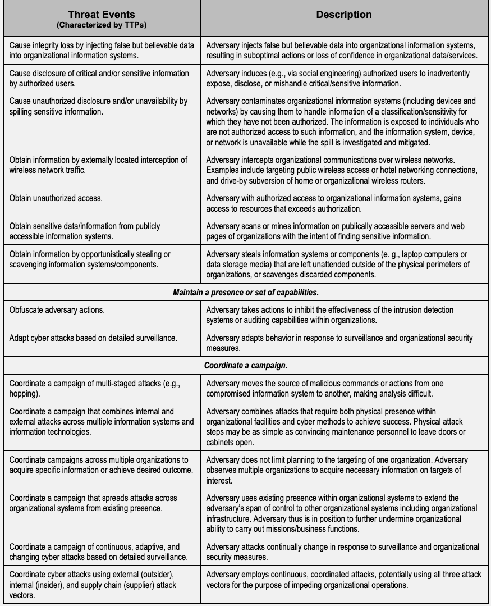
| 脅威事象 | 説明 |
| （TTPによる特徴付け） | |
| 虚偽だがもっともらしいデータを注入して完全性を損なう | 敵対者は組織の情報システムに虚偽だがもっともらしいデータを注入し、最適でない行動または信頼喪失を招く。 |
| 重要／機微情報の開示を引き起こす | 敵対者は許可ユーザーを誘導し（例：ソーシャルエンジニアリング）、重要／機微情報を |
| 許可ユーザーによって | 意図せず露出、開示または誤取扱させる。 |
| 機微情報のスピルで無許可開示／利用不能を | 敵対者は組織システム（機器／ネットワークを含む）に未承認分類の情報を扱わせて汚染する。情報は無許可者に露出し、調査・緩和中はシステム、機器またはネットワークが利用不能となる。 |
| 引き起こす。 | |
| 外部から傍受して情報を得る： | 敵対者は無線上の組織通信を傍受する。 |
| 無線トラフィック。 | 例：公衆無線やホテル接続を標的にすること、 |
| 自宅／組織の無線ルーターを通りすがりに侵害すること。 | |
| 無許可アクセスを得る。 | 組織システムに正規アクセスできる敵対者が許可を超える |
| リソースへのアクセスを得る。 | |
| 公開アクセス可能なシステムから機微な情報を得る | 敵対者は機微情報を探すため公開サーバー／ウェブページの情報を走査・採掘する。 |
| 機会を捉えてシステム／部品を盗むか残存情報を探索して情報を得る | 敵対者は組織の物理境界外に放置された情報システム／部品（例：ラップトップ、記憶媒体）を盗むか、廃棄部品を探索する。 |
| プレゼンスまたは能力群を維持する。 | |
| 敵対者の行動を難読化する。 | 敵対者は組織の侵入検知／監査能力の効果を |
| 妨げる。 | |
| 詳細監視に応じてサイバー攻撃を適応させる。 | 敵対者は監視や組織のセキュリティ対策に応じて行動を適応させる。 |
| キャンペーンを調整する。 | |
| 複数段階攻撃（例：ホッピング）のキャンペーンを調整する。 | 敵対者は悪意ある指令の発信元を侵害済みシステムから別の侵害済みシステムに移し、分析を困難にする。 |
| 複数システム／技術にまたがり内部攻撃と外部攻撃を | 敵対者は施設内の物理的存在とサイバー手法の両方が必要な攻撃を組み合わせる。保守要員にドアやキャビネットを開放させるだけの場合もある。 |
| 組み合わせるキャンペーンを調整する | |
| 。 | |
| 複数組織間のキャンペーンを調整し | 敵対者は標的を一組織に限定せず、対象に関する必要情報を得るため複数組織を観察する。 |
| 特定情報の取得または望む結果の達成を図る。 | |
| 既存プレゼンスを起点として複数組織システムに攻撃を広げる | 敵対者は既存プレゼンスから他の組織システム（組織インフラを含む）へ支配範囲を広げ、組織の任務／業務遂行能力をさらに損なう立場を得る。 |
| キャンペーンを調整する。 | |
| 継続的・適応的で変化する | 敵対者の攻撃は監視や組織のセキュリティ対策に応じて絶えず変化する。 |
| 詳細監視に基づくサイバー攻撃を調整する。 | |
| 外部（アウトサイダー）、内部（インサイダー）、 | 敵対者は組織運用を妨げるため、三つすべての攻撃ベクトルを用いる可能性がある継続的・協調的な攻撃を実行する。 |
| サプライチェーン（供給者）の攻撃 | 組織運用を妨げるためのベクトルである。 |
| ベクトル。 |
APPENDIX E
付録 E
未レビュー訳PAGE E-6
ページ E-6
未レビュー訳TABLE E-3: REPRESENTATIVE EXAMPLES – NON-ADVERSARIAL THREAT EVENTS
表 E-3：代表例－非敵対的脅威事象
未レビュー訳| Threat Event | Description |
| Spill sensitive | Authorized user erroneously contaminates a device, information system, or network by placing on it or sending to it |
| information | information of a classification/sensitivity which it has not been authorized to handle. The information is exposed to |
| access by unauthorized individuals, and as a result, the device, system, or network is unavailable while the spill is | |
| investigated and mitigated. | |
| Mishandling of critical | Authorized privileged user inadvertently exposes critical/sensitive information. |
| and/or sensitive | |
| information by | |
| authorized users | |
| Incorrect privilege | Authorized privileged user or administrator erroneously assigns a user exceptional privileges or sets privilege |
| settings | requirements on a resource too low. |
| Communications | Degraded communications performance due to contention. |
| contention | |
| Unreadable display | Display unreadable due to aging equipment. |
| Earthquake at primary | Earthquake of organization-defined magnitude at primary facility makes facility inoperable. |
| facility | |
| Fire at primary facility | Fire (not due to adversarial activity) at primary facility makes facility inoperable. |
| Fire at backup facility | Fire (not due to adversarial activity) at backup facility makes facility inoperable or destroys backups of software, |
| configurations, data, and/or logs. | |
| Flood at primary | Flood (not due to adversarial activity) at primary facility makes facility inoperable. |
| facility | |
| Flood at backup | Flood (not due to adversarial activity) at backup facility makes facility inoperable or destroys backups of software, |
| facility | configurations, data, and/or logs. |
| Hurricane at primary | Hurricane of organization-defined strength at primary facility makes facility inoperable. |
| facility | |
| Hurricane at backup | Hurricane of organization-defined strength at backup facility makes facility inoperable or destroys backups of software, |
| facility | configurations, data, and/or logs. |
| Resource depletion | Degraded processing performance due to resource depletion. |
| Introduction of | Due to inherent weaknesses in programming languages and software development environments, errors and |
| vulnerabilities into | vulnerabilities are introduced into commonly used software products. |
| software products | |
| Disk error | Corrupted storage due to a disk error. |
| Pervasive disk error | Multiple disk errors due to aging of a set of devices all acquired at the same time, from the same supplier. |
| Windstorm/tornado at | Windstorm/tornado of organization-defined strength at primary facility makes facility inoperable. |
| primary facility | |
| Windstorm/tornado at | Windstorm/tornado of organization-defined strength at backup facility makes facility inoperable or destroys backups of |
| backup facility | software, configurations, data, and/or logs. |
原本PDFの抜粋画像
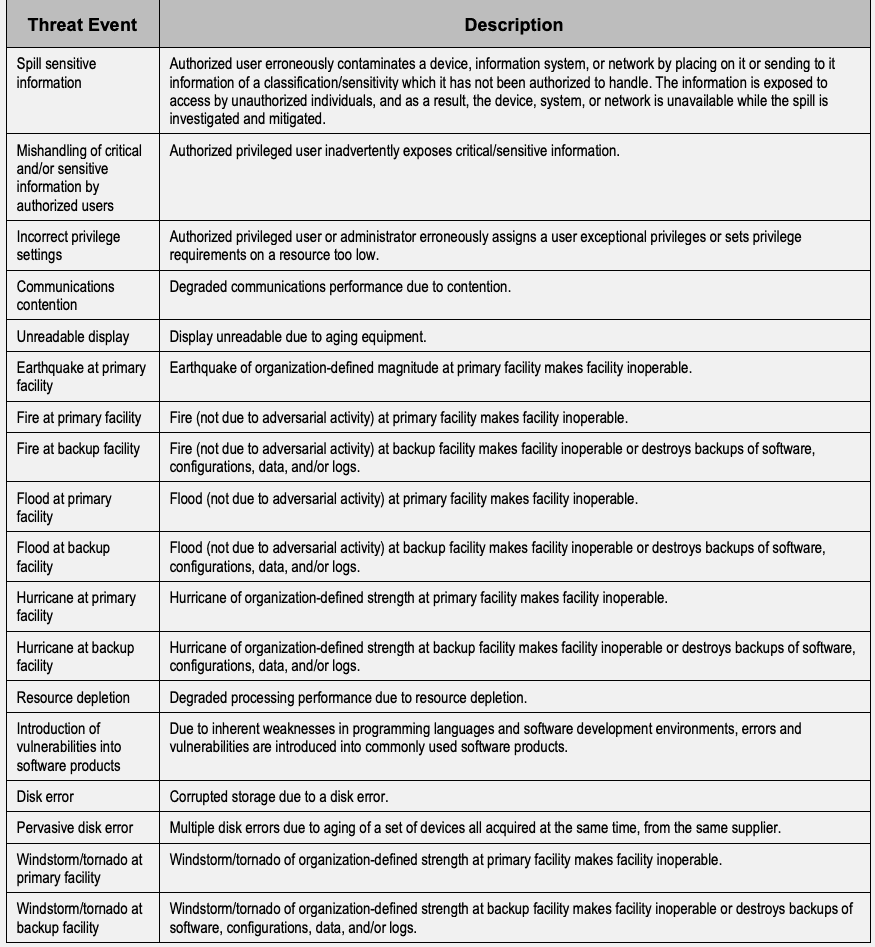
| 脅威事象 | 説明 |
| 機微情報を | 許可ユーザーが未承認の機密区分／機微度情報をデバイス、情報システムまたはネットワークに置く／送信して誤って汚染する。情報は無許可者に露出し、調査・緩和中は対象が使えない。 |
| スピルさせる | |
| 許可ユーザーによる | 許可特権ユーザーが誤って重要／機微情報を露出させる。 |
| 重要／機微 | |
| 情報の | |
| 不適切な取扱い | |
| 不適切な特権 | 許可特権ユーザー／管理者が例外特権を誤って付与するか、リソースの特権要件を低く設定しすぎる。 |
| 設定 | |
| 通信 | 競合による通信性能低下。 |
| 競合 | |
| 判読不能な画面 | 機器の老朽化で画面が判読不能。 |
| 主要施設の地震 | 組織定義の規模の地震で主要施設が運用不能になる。 |
| 主要施設の火災 | 敵対活動によらない火災で主要施設が運用不能になる。 |
| バックアップ施設の火災 | 敵対活動によらない火災でバックアップ施設が運用不能になるか、ソフトウェア、構成、データおよび／またはログのバックアップが破壊される。 |
| 主要施設の洪水 | 敵対活動によらない洪水で主要施設が運用不能になる。 |
| バックアップ施設の洪水 | 敵対活動によらない洪水でバックアップ施設が運用不能になるか、ソフトウェア等のバックアップが破壊される。 |
| 主要施設のハリケーン | 組織定義の強度のハリケーンで主要施設が運用不能になる。 |
| バックアップ施設のハリケーン | 組織定義の強度のハリケーンでバックアップ施設が運用不能になるか、ソフトウェア等のバックアップが破壊される。 |
| リソース枯渇 | リソース枯渇による処理性能低下。 |
| ソフトウェア製品への | プログラミング言語／開発環境の内在的弱点により、一般ソフトウェア製品にエラーと脆弱性が混入する。 |
| 脆弱性の | |
| 混入 | |
| ディスクエラー | ディスクエラーによるストレージ破損。 |
| 広範なディスクエラー | 同じ供給元から同時期に取得した機器群の老朽化による複数ディスクエラー。 |
| 主要施設の暴風雨／竜巻 | 組織定義の強度の暴風雨／竜巻で主要施設が運用不能になる。 |
| 主要施設の暴風雨／竜巻 | 組織定義の強度の暴風雨／竜巻でバックアップ施設が運用不能になるか、ソフトウェア、構成、データおよび／またはログのバックアップが破壊される。 |
| バックアップ施設の暴風雨／竜巻 |
APPENDIX E
付録 E
未レビュー訳PAGE E-7
ページ E-7
未レビュー訳TABLE E-4: RELEVANCE OF THREAT EVENTS
表 E-4：脅威事象の関連性
未レビュー訳| Value | Description |
| Confirmed | The threat event or TTP has been seen by the organization. |
| Expected | The threat event or TTP has been seen by the organization’s peers or partners. |
| Anticipated | The threat event or TTP has been reported by a trusted source. |
| Predicted | The threat event or TTP has been predicted by a trusted source. |
| Possible | The threat event or TTP has been described by a somewhat credible source. |
| N/A | The threat event or TTP is not currently applicable. For example, a threat event or TTP could assume specific technologies, |
| architectures, or processes that are not present in the organization, mission/business process, EA segment, or information | |
| system; or predisposing conditions that are not present (e.g., location in a flood plain). Alternately, if the organization is using | |
| detailed or specific threat information, a threat event or TTP could be deemed inapplicable because information indicates that | |
| no adversary is expected to initiate the threat event or use the TTP. |
原本PDFの抜粋画像
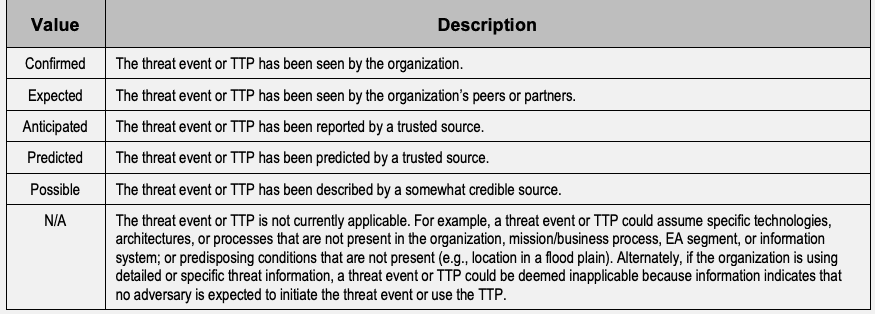
| 値 | 説明 |
| 確認済み | 脅威事象／TTPは組織で確認されている。 |
| 予期される | 脅威事象／TTPは組織の同業者またはパートナーで確認されている。 |
| 予想される | 脅威事象／TTPは信頼できる情報源から報告されている。 |
| 予測される | 脅威事象／TTPは信頼できる情報源により予測されている。 |
| 可能性あり | 脅威事象／TTPは一定の信頼性を持つ情報源で説明されている。 |
| 該当なし | 脅威事象／TTPは現時点で該当しない。例えば特定技術、 |
| 組織、ミッション／業務プロセス、EAセグメントまたは情報システムにないアーキテクチャ／プロセス、あるいは | |
| 存在しない素因（例：洪水氾濫原に位置）を前提にする場合がある。また詳細／特定脅威情報を使う場合、 | |
| 敵対者による開始・使用が予想されないと情報が示すため、脅威事象／TTPが該当しないと | |
| 判断される場合もある。 |
TABLE E-5: TEMPLATE – IDENTIFICATION OF THREAT EVENTS
表 E-5：テンプレート－脅威事象の特定
未レビュー訳| Identifier | Threat Event | Threat Source | Relevance |
| Source of Information | |||
| Table E-4 | |||
| Table E-2, Table E-3, Task 1-4 | Table D-7, Table D-8 | ||
| Organization -defined | |||
| or | or | or | |
| Organization-defined | Organization-defined | Organization- | |
| defined |
原本PDFの抜粋画像
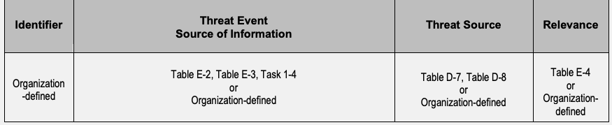
| 識別子 | 脅威事象 | 脅威源 | 関連性 |
| 情報源 | |||
| 表 E-4 | |||
| 表 E-2、表 E-3、タスク 1-4 | 表 D-7、表 D-8 | ||
| 組織定義 | |||
| または | または | または | |
| 組織定義 | 組織定義 | 組織 | |
| 定義 |
APPENDIX E
付録 E
未レビュー訳PAGE E-8
ページ E-8
未レビュー訳APPENDIX F
付録 F
VULNERABILITIES AND PREDISPOSING CONDITIONS
脆弱性および素因となる条件
RISK FACTORS AFFECTING THE LIKELIHOOD OF SUCCESSFUL THREAT EXPLOITATION
脅威悪用の成功可能性に影響するリスク要因
未レビュー訳This appendix provides: (i) a description of potentially useful inputs to the vulnerability and predisposing condition identification task; (ii) an exemplary taxonomy of predisposing conditions; (iii) exemplary assessment scales for assessing the severity of vulnerabilities and the pervasiveness of predisposing conditions; and (iv) a set of templates for summarizing and documenting the results of the vulnerability and predisposing condition identification task. The taxonomy and assessment scales in this appendix can be used by organizations as a starting point with appropriate tailoring to adjust for any organization-specific conditions. Tables F-3 and F-6, outputs from Task 2-3, provide relevant inputs to the risk tables in Appendix I.
この付録では、(i) 脆弱性および素因条件の特定タスクに有用な入力の説明、(ii) 素因条件の例示分類、(iii) 脆弱性深刻度と素因条件の広がりを評価する例示尺度、(iv) 特定結果を要約・文書化するテンプレートを示す。これらの分類と尺度は、組織固有の条件に合わせて適切に調整し、出発点として使用できる。表 F-3 および表 F-6（タスク 2-3 の出力）は付録 I のリスク表に関連する入力となる。
未レビュー訳TABLE F-1: INPUTS – VULNERABILITIES AND PREDISPOSING CONDITIONS
表 F-1：入力－脆弱性および素因条件
未レビュー訳| Description | Provided To |
| Tier 1 / Tier 2 / Tier 3 | |
| From Tier 1 (Organization level) | No / Yes / Yes |
| - Sources of vulnerability information deemed to be credible (e.g., open source and/or classified | If not |
| provided | |
| vulnerabilities, previous risk/vulnerability assessments, Mission and/or Business Impact Analyses). | |
| by Tier 2 | |
| (Section 3.1, Task 1-4.) | |
| - Vulnerability information and guidance specific to Tier 1 (e.g., vulnerabilities related to organizational | |
| governance, core missions/business functions, management/operational policies, procedures, and | |
| structures, external mission/business relationships). | |
| - Taxonomy of predisposing conditions, annotated by the organization, if necessary. (Table F-4) | |
| - Characterization of vulnerabilities and predisposing conditions. | |
| - Assessment scale for assessing the severity of vulnerabilities, annotated by the organization, if | |
| necessary. (Table F-2) | |
| - Assessment scale for assessing the pervasiveness of predisposing conditions, annotated by the | |
| organization, if necessary. (Table F-5) | |
| - Business Continuity Plan, Continuity of Operations Plan for the organization, if such plans are | |
| defined for the entire organization. | |
| From Tier 2: (Mission/business process level) | Yes / Yes / Yes |
| - Vulnerability information and guidance specific to Tier 2 (e.g., vulnerabilities related to organizational | Via / Via |
| RAR / Peer | |
| mission/business processes, EA segments, common infrastructure, support services, common | |
| Sharing | |
| controls, and external dependencies). | |
| - Business Continuity Plans, Continuity of Operations Plans for mission/business processes, if such | |
| plans are defined for individual processes or business units. | |
| From Tier 3: (Information system level) | Yes / Yes / Yes |
| - Vulnerability information and guidance specific to Tier 3 (e.g., vulnerabilities related to information | Via / Via / Via |
| RAR / RAR / Peer | |
| systems, information technologies, information system components, applications, networks, environments of operation). | Sharing |
| - Security assessment reports (i.e., deficiencies in assessed controls identified as vulnerabilities). | |
| - Results of monitoring activities (e.g., automated and nonautomated data feeds). | |
| - Vulnerability assessments, Red Team reports, or other reports from analyses of information systems, | |
| subsystems, information technology products, devices, networks, or applications. | |
| - Contingency Plans, Disaster Recovery Plans, Incident Reports. | |
| - Vendor/manufacturer vulnerability reports. |
原本PDFの抜粋画像
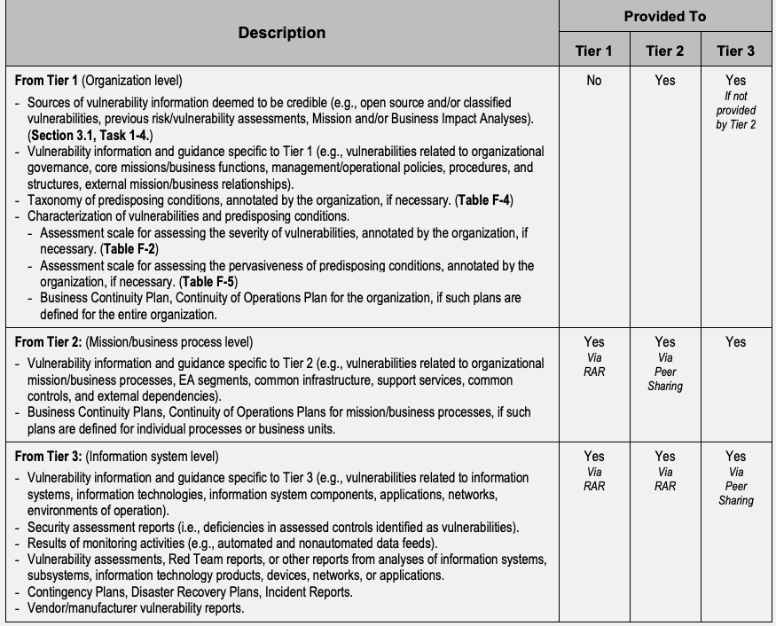
| 説明 | 提供先 |
| ティア 1 / ティア 2 / ティア 3 | |
| ティア 1（組織レベル）から | いいえ / はい / はい |
| - 信頼できるとみなす脆弱性情報源（例：公開情報および／または機密扱いの | 提供されない |
| 場合 | |
| 脆弱性、過去のリスク／脆弱性評価、ミッションおよび／または業務影響分析）。 | |
| ティア 2 によって | |
| （セクション 3.1、タスク 1-4。） | |
| - ティア 1 固有の脆弱性情報／指針（例：組織統治、主要ミッション／業務機能、管理／運用方針、手順および | |
| 構造、外部ミッション／業務関係に関する脆弱性）。 | |
| - 必要に応じ組織が注釈を付す素因条件の分類体系。（表 F-4） | |
| - 脆弱性および素因条件の特性評価。 | |
| - 必要に応じて注釈を付した脆弱性深刻度の評価尺度。（表 F-2） | |
| - 素因条件の広がりを評価する尺度。 | |
| 必要なら組織が注釈を付す。（表 F-5） | |
| - 組織全体を対象とする事業継続計画／業務継続計画（そのような計画が | |
| 組織全体について定められている場合）。 | |
| ティア 2（ミッション／業務プロセスレベル）から | はい / はい / はい |
| - ティア 2 固有の脆弱性情報／指針（例：組織のミッション／業務プロセス、EAセグメント、共通インフラ、サポートサービス、共通 | 経由 / 経由 |
| RAR / ピア | |
| コントロールおよび外部依存関係に関する脆弱性）。 | |
| 共有 | |
| - ミッション／業務プロセスの事業継続計画／業務継続計画（個別プロセスまたは業務単位に | |
| 計画が定められている場合）。 | |
| ティア 3（情報システムレベル）から | はい / はい / はい |
| - ティア 3 固有の脆弱性情報／指針（例：情報システム、情報技術、システム部品、アプリケーション、ネットワーク、運用環境の脆弱性）。 | 経由 / 経由 / 経由 |
| RAR / RAR / ピア | |
| 共有 | |
| - セキュリティ評価報告書（評価済みコントロールの欠陥で脆弱性と特定されたもの）。 | |
| - 監視活動の結果（例：自動／非自動データフィード）。 | |
| - 情報システム、サブシステム、IT製品、デバイス、ネットワーク、アプリの分析による脆弱性評価、レッドチーム報告書、その他の報告書。 | |
| - 緊急時対応計画、災害復旧計画、インシデント報告書。 | |
| - ベンダー／製造業者の脆弱性報告書. |
APPENDIX F
付録 F
未レビュー訳PAGE F-1
ページ F-1
未レビュー訳TABLE F-2: ASSESSMENT SCALE – VULNERABILITY SEVERITY
表 F-2：評価尺度－脆弱性の深刻度
未レビュー訳| Qualitative | Semi-Quantitative | Description |
| Values | Values | |
| The vulnerability is exposed and exploitable, and its exploitation could result in severe impacts. | ||
| Very High | 96-100 / 10 | |
| Relevant security control or other remediation is not implemented and not planned; or no security | ||
| measure can be identified to remediate the vulnerability. | ||
| The vulnerability is of high concern, based on the exposure of the vulnerability and ease of | ||
| exploitation and/or on the severity of impacts that could result from its exploitation. | ||
| High | 80-95 / 8 | |
| Relevant security control or other remediation is planned but not implemented; compensating | ||
| controls are in place and at least minimally effective. | ||
| The vulnerability is of moderate concern, based on the exposure of the vulnerability and ease of | ||
| Moderate | 21-79 / 5 | exploitation and/or on the severity of impacts that could result from its exploitation. |
| Relevant security control or other remediation is partially implemented and somewhat effective. | ||
| The vulnerability is of minor concern, but effectiveness of remediation could be improved. | ||
| Low | 5-20 / 2 | |
| Relevant security control or other remediation is fully implemented and somewhat effective. | ||
| The vulnerability is not of concern. | ||
| Very Low | 0-4 / 0 | |
| Relevant security control or other remediation is fully implemented, assessed, and effective. |
原本PDFの抜粋画像
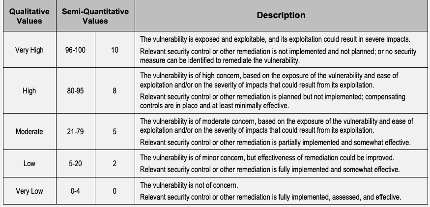
| 定性的 | 半定量的 | 説明 |
| 値 | 値 | |
| 脆弱性は露出して悪用可能であり、その悪用によって重大な影響が生じ得る。 | ||
| 極めて高い | 96-100 / 10 | |
| 関連するセキュリティコントロールまたはその他の是正措置が実装されておらず、実装予定もない。または、脆弱性を是正するセキュリティ対策を特定できない。 | ||
| 脆弱性の露出度および悪用の容易さ、ならびに／または悪用によって生じ得る影響の深刻度に基づき、懸念度は高い。 | ||
| 高い | 80-95 / 8 | |
| 関連するセキュリティコントロールまたはその他の是正措置は計画されているが、実装されていない。代替コントロールが整備され、少なくとも最低限の有効性を持つ。 | ||
| 脆弱性の露出度および悪用の容易さ、ならびに／または悪用によって生じ得る影響の深刻度に基づき、懸念度は中程度である。 | ||
| 中程度 | 21-79 / 5 | |
| 関連するセキュリティコントロールまたはその他の是正措置は部分的に実装され、一定の有効性を持つ。 | ||
| 脆弱性の懸念度は低いが、是正措置の有効性を改善できる。 | ||
| 低い | 5-20 / 2 | |
| 関連するセキュリティコントロールまたはその他の是正措置は完全に実装され、一定の有効性を持つ。 | ||
| 懸念対象ではない。 | ||
| 非常に低い | 0-4 / 0 | |
| 関連するセキュリティコントロールまたはその他の是正措置は完全に実装され、評価済みで、有効である。 |
TABLE F-3: TEMPLATE – IDENTIFICATION OF VULNERABILITIES
表 F-3：テンプレート－脆弱性の特定
未レビュー訳| Identifier | Vulnerability | Vulnerability |
| Source of Information | Severity | |
| Task 2-3, Task 1-4 | Table F-2 | |
| Organization- | ||
| or | or | |
| defined | ||
| Organization-defined | Organization-defined |
原本PDFの抜粋画像
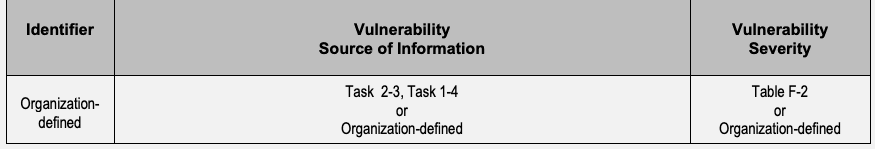
| 識別子 | 脆弱性 | 脆弱性 |
| 情報源 | 深刻度 | |
| タスク 2-3、タスク 1-4 | 表 F-2 | |
| 組織定義 | ||
| または | または | |
| 組織定義 | 組織定義 |
APPENDIX F
付録 F
未レビュー訳PAGE F-2
ページ F-2
未レビュー訳TABLE F-4: TAXONOMY OF PREDISPOSING CONDITIONS
表 F-4：素因となる条件の分類体系
未レビュー訳| Type of Predisposing Condition | Description |
| INFORMATION-RELATED | Needs to handle information (as it is created, transmitted, stored, |
| - Classified National Security Information | processed, and/or displayed) in a specific manner, due to its sensitivity |
| - Compartments | (or lack of sensitivity), legal or regulatory requirements, and/or contractual |
| - Controlled Unclassified Information | or other organizational agreements. |
| - Personally Identifiable Information | |
| - Special Access Programs | |
| - Agreement-Determined | |
| - NOFORN | |
| - Proprietary | |
| TECHNICAL | Needs to use technologies in specific ways. |
| - Architectural | |
| - Compliance with technical standards | |
| - Use of specific products or product lines | |
| - Solutions for and/or approaches to user-based collaboration | |
| and information sharing | |
| - Allocation of specific security functionality to common controls | |
| - Functional | |
| - Networked multiuser | |
| - Single-user | |
| - Stand-alone / nonnetworked | |
| - Restricted functionality (e.g., communications, sensors, | |
| embedded controllers) | |
| OPERATIONAL / ENVIRONMENTAL | Ability to rely upon physical, procedural, and personnel controls provided |
| - Mobility | by the operational environment. |
| - Fixed-site (specify location) | |
| - Semi-mobile | |
| - Land-based, Airborne, Sea-based, Space-based | |
| - Mobile (e.g., handheld device) | |
| - Population with physical and/or logical access to components | |
| of the information system, mission/business process, EA segment | |
| - Size of population | |
| - Clearance/vetting of population |
原本PDFの抜粋画像
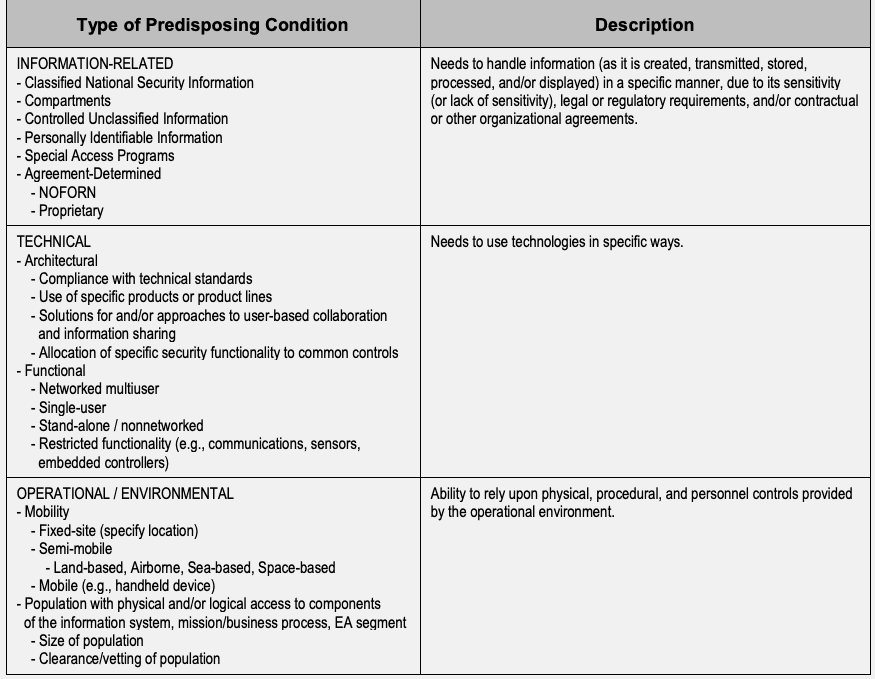
| 素因となる条件の種類 | 説明 |
| 情報関連 | 情報は、その機微性（または機微性の欠如）、法的・規制上の要件、および／または契約その他の組織間合意により、作成、送信、保存、処理、表示の各段階で特定の方法による取扱いが必要となる。 |
| - 機密扱いの国家安全保障情報 | |
| - コンパートメント | |
| - 管理対象非機密情報 | |
| - 個人識別情報 | |
| - 特別アクセスプログラム | |
| - 合意により決定 | |
| - NOFORN | |
| - 専有情報 | |
| 技術関連 | 特定の方法で技術を使用する必要がある。 |
| - アーキテクチャ | |
| - 技術標準への準拠 | |
| - 特定の製品または製品系列の使用 | |
| - ユーザーベースの協働および情報共有のためのソリューションおよび／またはアプローチ | |
| - 特定のセキュリティ機能を共通コントロールに割り当てること | |
| - 機能 | |
| - ネットワーク接続型マルチユーザー | |
| - シングルユーザー | |
| - スタンドアロン／非ネットワーク接続 | |
| - 機能制限（例：通信、センサー、組込みコントローラー） | |
| 運用／環境関連 | 運用環境が提供する物理的、手続的、および要員に関するコントロールに依拠できること。 |
| - モビリティ | |
| - 固定サイト（場所を指定） | |
| - 準モバイル | |
| - 陸上、航空、海上、宇宙 | |
| - モバイル（例：携帯型デバイス） | |
| - 情報システム、ミッション／業務プロセス、EAセグメントのコンポーネントに物理的および／または論理的にアクセスできる人口 | |
| - 人口の規模 | |
| - 人口のセキュリティクリアランス／審査 |
TABLE F-5: ASSESSMENT SCALE – PERVASIVENESS OF PREDISPOSING CONDITIONS
表 F-5：評価尺度－素因となる条件の広がり
未レビュー訳| Qualitative | Semi-Quantitative | Description |
| Values | Values | |
| Applies to all organizational missions/business functions (Tier 1), mission/business processes | ||
| Very High | 96-100 / 10 | |
| (Tier 2), or information systems (Tier 3). | ||
| Applies to most organizational missions/business functions (Tier 1), mission/business processes | ||
| High | 80-95 / 8 | |
| (Tier 2), or information systems (Tier 3). | ||
| Applies to many organizational missions/business functions (Tier 1), mission/business processes | ||
| Moderate | 21-79 / 5 | |
| (Tier 2), or information systems (Tier 3). | ||
| Applies to some organizational missions/business functions (Tier 1), mission/business processes | ||
| Low | 5-20 / 2 | |
| (Tier 2), or information systems (Tier 3). | ||
| Applies to few organizational missions/business functions (Tier 1), mission/business processes | ||
| Very Low | 0-4 / 0 | |
| (Tier 2), or information systems (Tier 3). |
原本PDFの抜粋画像
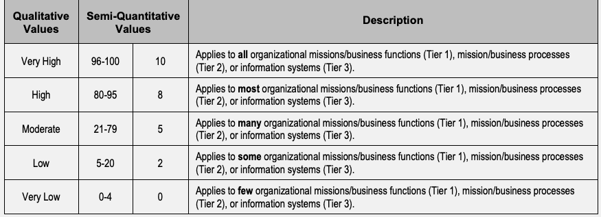
| 定性的 | 半定量的 | 説明 |
| 値 | 値 | |
| 組織のすべてのミッション／業務機能（ティア 1）、ミッション／業務プロセス | ||
| 極めて高い | 96-100 / 10 | |
| （ティア 2）、または情報システム（ティア 3）に適用される。 | ||
| 組織の大部分のミッション／業務機能（ティア 1）、ミッション／業務プロセス | ||
| 高い | 80-95 / 8 | |
| （ティア 2）、または情報システム（ティア 3）に適用される。 | ||
| 組織の多くのミッション／業務機能（ティア 1）、ミッション／業務プロセス | ||
| 中程度 | 21-79 / 5 | |
| （ティア 2）、または情報システム（ティア 3）に適用される。 | ||
| 組織の一部のミッション／業務機能（ティア 1）、ミッション／業務プロセス | ||
| 低い | 5-20 / 2 | |
| （ティア 2）、または情報システム（ティア 3）に適用される。 | ||
| 組織の少数のミッション／業務機能（ティア 1）、ミッション／業務プロセス | ||
| 非常に低い | 0-4 / 0 | |
| （ティア 2）、または情報システム（ティア 3）に適用される。 |
APPENDIX F
付録 F
未レビュー訳PAGE F-3
ページ F-3
未レビュー訳TABLE F-6: TEMPLATE – IDENTIFICATION OF PREDISPOSING CONDITIONS
表 F-6：テンプレート－素因となる条件の特定
未レビュー訳| Identifier | Predisposing Condition | Pervasiveness |
| Source of Information | of Condition | |
| Table F-4, Task 1-4 | Table F-5 | |
| Organization- | ||
| or | or | |
| defined | Organization-defined | Organization-defined |
原本PDFの抜粋画像
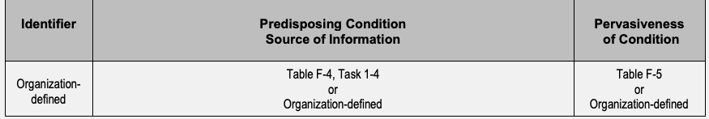
| 識別子 | 素因となる条件 | 条件の広がり |
| 情報源 | ||
| 表 F-4、タスク 1-4 | 表 F-5 | |
| 組織定義 | ||
| または | または | |
| 組織定義 | 組織定義 |
APPENDIX F
付録 F
未レビュー訳PAGE F-4
ページ F-4
未レビュー訳APPENDIX G
付録 G
LIKELIHOOD OF OCCURRENCE
発生可能性
DETERMINING THE LIKELIHOOD OF THREAT EVENTS CAUSING ADVERSE IMPACTS
悪影響を引き起こす脅威事象の発生可能性の決定
未レビュー訳This appendix provides: (i) a description of potentially useful inputs to the likelihood55 determination task; and (ii) exemplary assessment scales for assessing the likelihood of threat event initiation/occurrence, the likelihood of threat events resulting in adverse impacts, and the overall likelihood of threat events being initiated or occurring and doing damage to organizational operations, assets, or individuals. The assessment scales in this appendix can be used by organizations as a starting point with appropriate tailoring to adjust for any organization-specific conditions. Tables G-2, G-3, G-4, and G-5, outputs from Task 2-4, provide relevant inputs to the risk tables in Appendix I.
この付録では、(i) 発生可能性55の判定タスクに役立つ可能性がある入力の説明、ならびに (ii) 脅威事象の開始／発生可能性、脅威事象が悪影響をもたらす可能性、および脅威事象が開始または発生して組織の運用、資産、または個人に損害を与える全体的な可能性を評価するための例示的な評価尺度を示す。この付録の評価尺度は、組織固有の条件に合わせて適切に調整した上で、出発点として使用できる。表 G-2、G-3、G-4、および G-5（タスク 2-4 の出力）は、付録 I のリスク表に関連する入力となる。
未レビュー訳TABLE G-1: INPUTS – DETERMINATION OF LIKELIHOOD
表 G-1：入力－発生可能性の決定
未レビュー訳| Description | Provided To |
| Tier 1 / Tier 2 / Tier 3 | |
| From Tier 1 (Organization level) | No / Yes / Yes |
| - Likelihood information and guidance specific to Tier 1 (e.g., likelihood information related to | If not |
| provided | |
| organizational governance, core missions/business functions, management/operational policies, | |
| by Tier 2 | |
| procedures, and structures, external mission/business relationships). | |
| - Guidance on organization-wide levels of likelihood needing no further consideration. | |
| - Assessment scale for assessing the likelihood of threat event initiation (adversarial threat events), | |
| annotated by the organization, if necessary. (Table G-2) | |
| - Assessment scale for assessing the likelihood of threat event occurrence (non-adversarial threat | |
| events), annotated by the organization, if necessary. (Table G-3) | |
| - Assessment scale for assessing the likelihood of threat events resulting in adverse impacts, | |
| annotated by the organization, if necessary. (Table G-4) | |
| - Assessment scale for assessing the overall likelihood of threat events being initiated or occurring and | |
| resulting in adverse impacts, annotated by the organization, if necessary. (Table G-5) | |
| From Tier 2: (Mission/business process level) | Yes / Yes / Yes |
| - Likelihood information and guidance specific to Tier 2 (e.g., likelihood information related to | Via / Via |
| RAR / Peer | |
| mission/business processes, EA segments, common infrastructure, support services, common | |
| Sharing | |
| controls, and external dependencies). | |
| From Tier 3: (Information system level) | Yes / Yes / Yes |
| - Likelihood information and guidance specific to Tier 3 (e.g., likelihood information related to | Via / Via / Via |
| RAR / RAR / Peer | |
| information systems, information technologies, information system components, applications, networks, environments of operation). | Sharing |
| - Historical data on successful and unsuccessful cyber attacks; attack detection rates. | |
| - Security assessment reports (i.e., deficiencies in assessed controls identified as vulnerabilities). | |
| - Results of monitoring activities (e.g., automated and nonautomated data feeds). | |
| - Vulnerability assessments, Red Team reports, or other reports from analyses of information systems, | |
| subsystems, information technology products, devices, networks, or applications. | |
| - Contingency Plans, Disaster Recovery Plans, Incident Reports. | |
| - Vendor/manufacturer vulnerability reports. |
原本PDFの抜粋画像
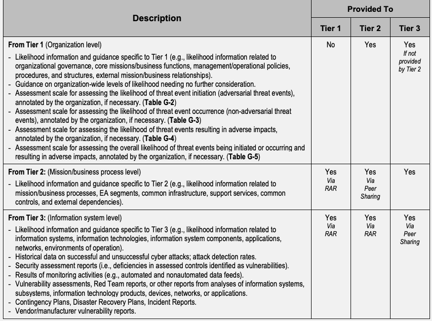
| 説明 | 提供先 |
| ティア 1 / ティア 2 / ティア 3 | |
| ティア 1（組織レベル）から | いいえ / はい / はい |
| - ティア 1 固有の発生可能性情報および指針（例：組織統治、主要ミッション／業務機能、管理／運用方針、手順・構造、外部ミッション／業務関係に関連する発生可能性情報）。 | 提供されない |
| ティア 2 によって | |
| - これ以上の検討を要しない、組織全体に適用される発生可能性レベルの指針。 | |
| - 脅威事象開始（敵対的脅威事象）の発生可能性を評価する尺度。必要に応じて組織が注釈を付す。（表 G-2） | |
| - 脅威事象発生（非敵対的脅威事象）の発生可能性を評価する尺度。必要に応じて組織が注釈を付す。（表 G-3） | |
| - 脅威事象が悪影響をもたらす発生可能性を評価する尺度。必要に応じて組織が注釈を付す。（表 G-4） | |
| - 脅威事象が開始または発生し、悪影響をもたらす全体的な発生可能性を評価する尺度。必要に応じて組織が注釈を付す。（表 G-5） | |
| ティア 2（ミッション／業務プロセスレベル）から | はい / はい / はい |
| - ティア 2 固有の発生可能性情報および指針（例：ミッション／業務プロセス、EAセグメント、共通インフラ、サポートサービス、共通コントロール、外部依存関係に関する情報）。 | 経由 / 経由 |
| RAR / ピア | |
| 共有 | |
| ティア 3（情報システムレベル）から | はい / はい / はい |
| - ティア 3 固有の発生可能性情報および指針（例：情報システム、情報技術、情報システムコンポーネント、アプリケーション、ネットワーク、運用環境に関する情報）。 | 経由 / 経由 / 経由 |
| RAR / RAR / ピア | |
| 共有 | |
| - サイバー攻撃の成功・失敗の履歴データ、攻撃検知率。 | |
| - セキュリティ評価報告書（評価対象コントロールの欠陥のうち脆弱性として特定されたもの）。 | |
| - 監視活動の結果（例：自動および非自動のデータフィード）。 | |
| - 情報システム、サブシステム、情報技術製品、デバイス、ネットワーク、またはアプリケーションの分析による脆弱性評価、レッドチーム報告書、その他の報告書。 | |
| - 緊急時対応計画、災害復旧計画、インシデント報告書。 | |
| - ベンダー／製造業者の脆弱性報告書。 |
TABLE G-2: ASSESSMENT SCALE – LIKELIHOOD OF THREAT EVENT INITIATION (ADVERSARIAL)
表 G-2：評価尺度－脅威事象開始の発生可能性（敵対的）
未レビュー訳| Qualitative | Semi-Quantitative | Description |
| Values | Values | |
| Very High | 96-100 / 10 | Adversary is almost certain to initiate the threat event. |
| High | 80-95 / 8 | Adversary is highly likely to initiate the threat event. |
| Moderate | 21-79 / 5 | Adversary is somewhat likely to initiate the treat event. |
| Low | 5-20 / 2 | Adversary is unlikely to initiate the threat event. |
| Very Low | 0-4 / 0 | Adversary is highly unlikely to initiate the threat event. |
原本PDFの抜粋画像
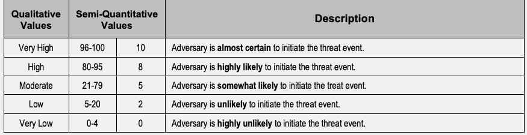
| 定性的 | 半定量的 | 説明 |
| 値 | 値 | |
| 極めて高い | 96-100 / 10 | 敵対者は、ほぼ確実に脅威事象を開始する。 |
| 高い | 80-95 / 8 | 敵対者は、脅威事象を開始する可能性が非常に高い。 |
| 中程度 | 21-79 / 5 | 敵対者は、脅威事象を開始する可能性がある程度高い。 |
| 低い | 5-20 / 2 | 敵対者が脅威事象を開始する可能性は低い。 |
| 非常に低い | 0-4 / 0 | 敵対者が脅威事象を開始する可能性は非常に低い。 |
TABLE G-3: ASSESSMENT SCALE – LIKELIHOOD OF THREAT EVENT OCCURRENCE (NON-ADVERSARIAL)
表 G-3：評価尺度－脅威事象発生の発生可能性（非敵対的）
未レビュー訳| Qualitative | Semi-Quantitative | Description |
| Values | Values | |
| Very High | 96-100 / 10 | Error, accident, or act of nature is almost certain to occur; or occurs more than 100 times a year. |
| High | 80-95 / 8 | Error, accident, or act of nature is highly likely to occur; or occurs between 10-100 times a year. |
| Error, accident, or act of nature is somewhat likely to occur; or occurs between 1-10 times a | ||
| Moderate | 21-79 / 5 | |
| year. | ||
| Error, accident, or act of nature is unlikely to occur; or occurs less than once a year, but more | ||
| Low | 5-20 / 2 | |
| than once every 10 years. | ||
| Error, accident, or act of nature is highly unlikely to occur; or occurs less than once every 10 | ||
| Very Low | 0-4 / 0 | |
| years. |
原本PDFの抜粋画像
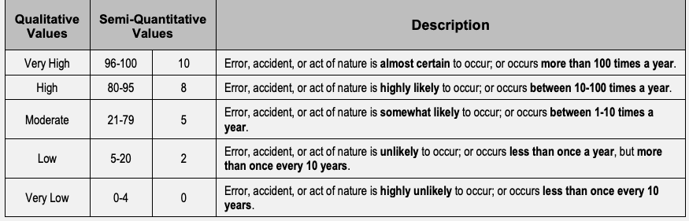
| 定性的 | 半定量的 | 説明 |
| 値 | 値 | |
| 極めて高い | 96-100 / 10 | エラー、事故、または自然現象は、ほぼ確実に発生する。または、年間100回を超えて発生する。 |
| 高い | 80-95 / 8 | エラー、事故、または自然現象は、発生する可能性が非常に高い。または、年間10-100回発生する。 |
| エラー、事故、または自然現象は、発生する可能性がある程度高い。または、年間1-10回発生する。 | ||
| 中程度 | 21-79 / 5 | |
| エラー、事故、または自然現象が発生する可能性は低い。または、年に一度未満だが、 | ||
| 低い | 5-20 / 2 | |
| 10年に一度より多く発生する。 | ||
| エラー、事故、または自然現象は発生する可能性が非常に低い。または、10年に一度未満発生する。 | ||
| 非常に低い | 0-4 / 0 | |
TABLE G-4: ASSESSMENT SCALE – LIKELIHOOD OF THREAT EVENT RESULTING IN ADVERSE IMPACTS
表 G-4：評価尺度－脅威事象が悪影響をもたらす発生可能性
未レビュー訳| Qualitative | Semi-Quantitative | Description |
| Values | Values | |
| Very High | 96-100 / 10 | If the threat event is initiated or occurs, it is almost certain to have adverse impacts. |
| High | 80-95 / 8 | If the threat event is initiated or occurs, it is highly likely to have adverse impacts. |
| Moderate | 21-79 / 5 | If the threat event is initiated or occurs, it is somewhat likely to have adverse impacts. |
| Low | 5-20 / 2 | If the threat event is initiated or occurs, it is unlikely to have adverse impacts. |
| Very Low | 0-4 / 0 | If the threat event is initiated or occurs, it is highly unlikely to have adverse impacts. |
原本PDFの抜粋画像
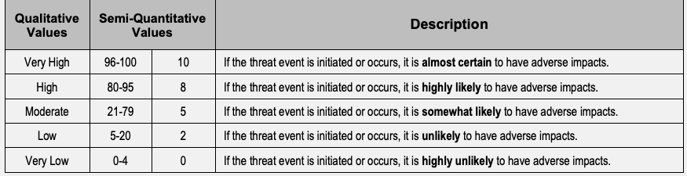
| 定性的 | 半定量的 | 説明 |
| 値 | 値 | |
| 極めて高い | 96-100 / 10 | 脅威事象が開始または発生した場合、悪影響が生じる可能性はほぼ確実である。 |
| 高い | 80-95 / 8 | 脅威事象が開始または発生した場合、悪影響が生じる可能性は非常に高い。 |
| 中程度 | 21-79 / 5 | 脅威事象が開始または発生した場合、悪影響が生じる可能性はある程度高い。 |
| 低い | 5-20 / 2 | 脅威事象が開始または発生した場合、悪影響が生じる可能性は低い。 |
| 非常に低い | 0-4 / 0 | 脅威事象が開始または発生した場合、悪影響が生じる可能性は非常に低い。 |
TABLE G-5: ASSESSMENT SCALE – OVERALL LIKELIHOOD
表 G-5：評価尺度－全体的な発生可能性
未レビュー訳| Likelihood of | Likelihood Threat Events Result in Adverse Impacts |
| Threat Event | |
| Initiation or | |
| Occurrence / Very Low | Low / Moderate / High / Very High |
| Very High / Low | Moderate / High / Very High / Very High |
| High / Low | Moderate / Moderate / High / Very High |
| Moderate / Low | Low / Moderate / Moderate / High |
| Low / Very Low | Low / Low / Moderate / Moderate |
| Very Low / Very Low | Very Low / Low / Low / Low |
原本PDFの抜粋画像
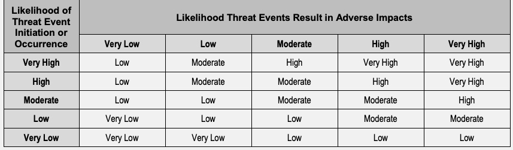
| 脅威事象の | 脅威事象が悪影響をもたらす可能性 |
| 開始または発生 | |
| ／ | |
| 発生可能性：非常に低い | 低い / 中程度 / 高い / 非常に高い |
| 非常に高い / 低い | 中程度 / 高い / 非常に高い / 非常に高い |
| 高い / 低い | 中程度 / 中程度 / 高い / 非常に高い |
| 中程度 / 低い | 低い / 中程度 / 中程度 / 高い |
| 低い / 非常に低い | 低い / 低い / 中程度 / 中程度 |
| 非常に低い / 非常に低い | 非常に低い / 低い / 低い / 低い |
APPENDIX G
付録 G
未レビュー訳PAGE G-2
ページ G-2
未レビュー訳APPENDIX H
付録 H
IMPACT
影響
EFFECTS OF THREAT EVENTS ON ORGANIZATIONS, INDIVIDUALS, AND THE NATION
組織、個人、および国家に対する脅威事象の影響
未レビュー訳This appendix provides: (i) a description of useful inputs to the impact determination task; (ii) representative examples of adverse impacts to organizational operations and assets, individuals, other organizations, or the Nation; (iii) exemplary assessment scales for assessing the impact of threat events and the range of effect of threat events; and (iv) a template for summarizing and documenting the results of the impact determination Task 2-5. The assessment scales in this appendix can be used as a starting point with appropriate tailoring to adjust for any organization-specific conditions. Table H-4, an output from Task 2-5, provides relevant inputs to the risk tables in Appendix I.
この付録では、(i) 影響決定タスクに有用な入力の説明、(ii) 組織の運用および資産、個人、他の組織、または国家に対する悪影響の代表例、(iii) 脅威事象の影響およびその効果範囲を評価する例示的尺度、ならびに (iv) 影響決定タスク 2-5 の結果を要約・文書化するテンプレートを示す。この付録の評価尺度は、組織固有の条件に合わせて適切に調整し、出発点として使用できる。表 H-4（タスク 2-5 の出力）は付録 I のリスク表に関連する入力となる。
未レビュー訳TABLE H-1: INPUTS – DETERMINATION OF IMPACT
表 H-1：入力－影響の決定
未レビュー訳| Description | Provided To |
| Tier 1 / Tier 2 / Tier 3 | |
| From Tier 1 (Organization level) | No / Yes / Yes |
| - Impact information and guidance specific to Tier 1 (e.g., impact information related to organizational | If not |
| provided | |
| governance, core missions/business functions, management and operational policies, procedures, | |
| by Tier 2 | |
| and structures, external mission/business relationships). | |
| - Guidance on organization-wide levels of impact needing no further consideration. | |
| - Identification of critical missions/business functions. | |
| - Exemplary set of impacts, annotated by the organization, if necessary. (Table H-2) | |
| - Assessment scale for assessing the impact of threat events, annotated by the organization, if | |
| necessary. (Table H-3) | |
| From Tier 2: (Mission/business process level) | Yes / Yes / Yes |
| - Impact information and guidance specific to Tier 2 (e.g., impact information related to | Via / Via |
| RAR / Peer | |
| mission/business processes, EA segments, common infrastructure, support services, common | |
| Sharing | |
| controls, and external dependencies). | |
| - Identification of high-value assets. | |
| From Tier 3: (Information system level) | Yes / Yes / Yes |
| - Impact information and guidance specific to Tier 3 (e.g., likelihood information affecting information | Via / Via / Via |
| RAR / RAR / Peer | |
| systems, information technologies, information system components, applications, networks, | |
| environments of operation). | Sharing |
| - Historical data on successful and unsuccessful cyber attacks; attack detection rates. | |
| - Security assessment reports (i.e., deficiencies in assessed controls identified as vulnerabilities). | |
| - Results of continuous monitoring activities (e.g., automated and nonautomated data feeds). | |
| - Vulnerability assessments, Red Team reports, or other reports from analyses of information systems, | |
| subsystems, information technology products, devices, networks, or applications. | |
| - Contingency Plans, Disaster Recovery Plans, Incident Reports. |
原本PDFの抜粋画像
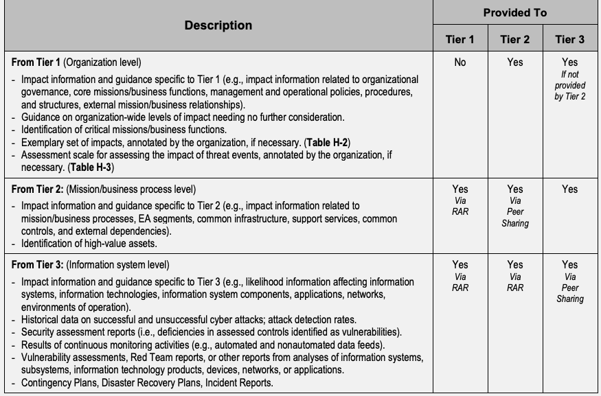
| 説明 | 提供先 |
| ティア 1 / ティア 2 / ティア 3 | |
| ティア 1（組織レベル）から | いいえ / はい / はい |
| - ティア 1 固有の影響情報および指針（例：組織統治、主要ミッション／業務機能、管理・運用方針、手順・構造、外部ミッション／業務関係に関連する影響情報）。 | 提供されない |
| ティア 2 によって | |
| - これ以上の検討を要しない、組織全体に適用される影響レベルに関する指針。 | |
| - 重要なミッション／業務機能の特定。 | |
| - 必要に応じて組織が注釈を付した影響の代表例。（表 H-2） | |
| - 脅威事象の影響を評価する尺度。必要に応じて組織が注釈を付す。 | |
| （表 H-3） | |
| ティア 2（ミッション／業務プロセスレベル）から | はい / はい / はい |
| - ティア 2 固有の影響情報および指針（例：ミッション／業務プロセス、EAセグメント、共通インフラ、サポートサービス、共通コントロール、外部依存関係に関連する影響情報）。 | 経由 / 経由 |
| RAR / ピア | |
| 共有 | |
| - 高価値資産の特定。 | |
| ティア 3（情報システムレベル）から | はい / はい / はい |
| - ティア 3 固有の影響情報および指針（例：情報システムに影響する発生可能性情報、情報技術、情報システムコンポーネント、アプリケーション、ネットワーク、運用環境）。 | 経由 / 経由 / 経由 |
| RAR / RAR / ピア | |
| 共有 | |
| - サイバー攻撃の成功・失敗の履歴データ、攻撃検知率。 | |
| - セキュリティ評価報告書（評価対象コントロールの欠陥のうち脆弱性として特定されたもの）。 | |
| - 継続的監視活動の結果（例：自動および非自動のデータフィード）。 | |
| - 情報システム、サブシステム、情報技術製品、デバイス、ネットワーク、またはアプリケーションの分析による脆弱性評価、レッドチーム報告書、その他の報告書。 | |
| - 緊急時対応計画、災害復旧計画、インシデント報告書。 |
APPENDIX H
付録 H
未レビュー訳PAGE H-1
ページ H-1
未レビュー訳TABLE H-2: EXAMPLES OF ADVERSE IMPACTS
表 H-2：悪影響の例
未レビュー訳| Type of Impact | Impact |
| HARM TO | - Inability to perform current missions/business functions. |
| OPERATIONS | - In a sufficiently timely manner. |
| - With sufficient confidence and/or correctness. | |
| - Within planned resource constraints. | |
| - Inability, or limited ability, to perform missions/business functions in the future. | |
| - Inability to restore missions/business functions. | |
| - In a sufficiently timely manner. | |
| - With sufficient confidence and/or correctness. | |
| - Within planned resource constraints. | |
| - Harms (e.g., financial costs, sanctions) due to noncompliance. | |
| - With applicable laws or regulations. | |
| - With contractual requirements or other requirements in other binding agreements (e.g., liability). | |
| - Direct financial costs. | |
| - Relational harms. | |
| - Damage to trust relationships. | |
| - Damage to image or reputation (and hence future or potential trust relationships). | |
| HARM TO ASSETS | - Damage to or loss of physical facilities. |
| - Damage to or loss of information systems or networks. | |
| - Damage to or loss of information technology or equipment. | |
| - Damage to or loss of component parts or supplies. | |
| - Damage to or of loss of information assets. | |
| - Loss of intellectual property. | |
| HARM TO INDIVIDUALS | - Injury or loss of life. |
| - Physical or psychological mistreatment. | |
| - Identity theft. | |
| - Loss of Personally Identifiable Information. | |
| - Damage to image or reputation. | |
| HARM TO OTHER | - Harms (e.g., financial costs, sanctions) due to noncompliance. |
| ORGANIZATIONS | - With applicable laws or regulations. |
| - With contractual requirements or other requirements in other binding agreements. | |
| - Direct financial costs. | |
| - Relational harms. | |
| - Damage to trust relationships. | |
| - Damage to reputation (and hence future or potential trust relationships). | |
| HARM TO THE NATION | - Damage to or incapacitation of a critical infrastructure sector. |
| - Loss of government continuity of operations. | |
| - Relational harms. | |
| - Damage to trust relationships with other governments or with nongovernmental entities. | |
| - Damage to national reputation (and hence future or potential trust relationships). | |
| - Damage to current or future ability to achieve national objectives. | |
| - Harm to national security. |
原本PDFの抜粋画像
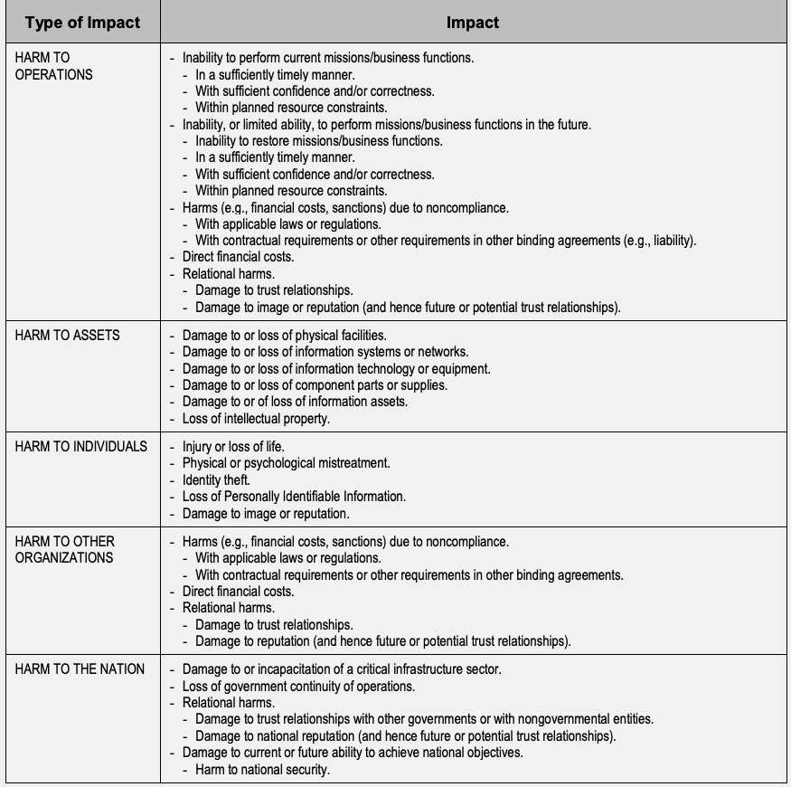
| 影響の種類 | 影響 |
| 運用への損害 | - 現在のミッション／業務機能を遂行できない。 |
| - 十分に適時な方法で遂行できない。 | |
| - 十分な信頼性および／または正確性をもって遂行できない。 | |
| - 計画されたリソース制約内で遂行できない。 | |
| - 将来のミッション／業務機能を遂行できない、または遂行能力が制限される。 | |
| - ミッション／業務機能を復旧できない。 | |
| - 十分に適時な方法で復旧できない。 | |
| - 十分な信頼性および／または正確性をもって復旧できない。 | |
| - 計画されたリソース制約内で復旧できない。 | |
| - 不遵守による損害（例：金銭的費用、制裁）。 | |
| - 適用される法律または規制を遵守できない。 | |
| - 契約上の要件、またはその他の拘束力ある合意上の要件（例：責任）を遵守できない。 | |
| - 直接的な金銭的費用。 | |
| - 関係上の損害。 | |
| - 信頼関係への損害。 | |
| - イメージまたは評判への損害（ひいては将来または潜在的な信頼関係への損害）。 | |
| 資産への損害 | - 物理的施設の損傷または喪失。 |
| - 情報システムまたはネットワークの損傷または喪失。 | |
| - 情報技術または機器の損傷または喪失。 | |
| - コンポーネント部品または供給品の損傷または喪失。 | |
| - 情報資産の損傷または喪失。 | |
| - 知的財産の喪失。 | |
| 個人への損害 | - 負傷または死亡。 |
| - 身体的または心理的な虐待。 | |
| - 個人情報の盗難。 | |
| - 個人識別情報の喪失。 | |
| - イメージまたは評判への損害。 | |
| 他の組織への損害 | - 不遵守による損害（例：金銭的費用、制裁）。 |
| - 適用される法律または規制を遵守できない。 | |
| - 契約上の要件、またはその他の拘束力ある合意上の要件を遵守できない。 | |
| - 直接的な金銭的費用。 | |
| - 関係上の損害。 | |
| - 信頼関係への損害。 | |
| - 評判への損害（ひいては将来または潜在的な信頼関係への損害）。 | |
| 国家への損害 | - 重要インフラ部門の損害または機能停止。 |
| - 政府の業務継続性の喪失。 | |
| - 関係上の損害。 | |
| - 他国政府または非政府主体との信頼関係への損害。 | |
| - 国家の評判への損害（ひいては将来または潜在的な信頼関係への損害）。 | |
| - 国家目標を達成する現在または将来の能力への損害。 | |
| - 国家安全保障への損害。 |
APPENDIX H
付録 H
未レビュー訳PAGE H-2
ページ H-2
未レビュー訳TABLE H-3: ASSESSMENT SCALE – IMPACT OF THREAT EVENTS
表 H-3：評価尺度－脅威事象の影響
未レビュー訳| Qualitative | Semi-Quantitative | Description |
| Values | Values | |
| The threat event could be expected to have multiple severe or catastrophic adverse effects on | ||
| Very High | 96-100 / 10 | |
| organizational operations, organizational assets, individuals, other organizations, or the Nation. | ||
| The threat event could be expected to have a severe or catastrophic adverse effect on | ||
| organizational operations, organizational assets, individuals, other organizations, or the Nation. A | ||
| severe or catastrophic adverse effect means that, for example, the threat event might: (i) cause a | ||
| High | 80-95 / 8 | severe degradation in or loss of mission capability to an extent and duration that the organization is |
| not able to perform one or more of its primary functions; (ii) result in major damage to | ||
| organizational assets; (iii) result in major financial loss; or (iv) result in severe or catastrophic harm | ||
| to individuals involving loss of life or serious life-threatening injuries. | ||
| The threat event could be expected to have a serious adverse effect on organizational operations, | ||
| organizational assets, individuals other organizations, or the Nation. A serious adverse effect | ||
| means that, for example, the threat event might: (i) cause a significant degradation in mission | ||
| Moderate | 21-79 / 5 | capability to an extent and duration that the organization is able to perform its primary functions, |
| but the effectiveness of the functions is significantly reduced; (ii) result in significant damage to | ||
| organizational assets; (iii) result in significant financial loss; or (iv) result in significant harm to | ||
| individuals that does not involve loss of life or serious life-threatening injuries. | ||
| The threat event could be expected to have a limited adverse effect on organizational operations, | ||
| organizational assets, individuals other organizations, or the Nation. A limited adverse effect | ||
| Low | 5-20 / 2 | means that, for example, the threat event might: (i) cause a degradation in mission capability to an |
| extent and duration that the organization is able to perform its primary functions, but the | ||
| effectiveness of the functions is noticeably reduced; (ii) result in minor damage to organizational | ||
| assets; (iii) result in minor financial loss; or (iv) result in minor harm to individuals. | ||
| The threat event could be expected to have a negligible adverse effect on organizational | ||
| Very Low | 0-4 / 0 | |
| operations, organizational assets, individuals other organizations, or the Nation. |
原本PDFの抜粋画像
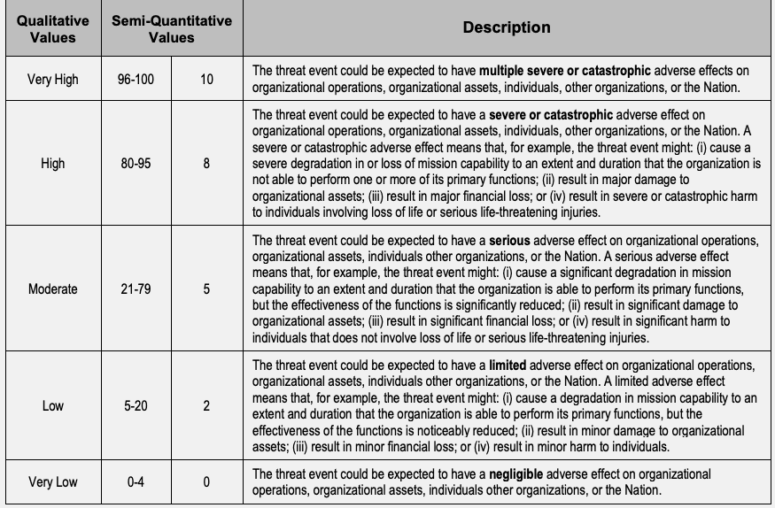
| 定性的 | 半定量的 | 説明 |
| 値 | 値 | |
| 脅威事象により、複数の重大または壊滅的な悪影響が生じることが予想される対象は | ||
| 極めて高い | 96-100 / 10 | |
| 組織運用、組織資産、個人、他の組織、または国家である。 | ||
| 脅威事象は、 | ||
| 組織運用、組織資産、個人、他の組織、または国家に重大または壊滅的な悪影響を与える可能性がある。 | ||
| 重大または壊滅的な悪影響とは、例えば、脅威事象が次の結果をもたらすことをいう。(i) ミッション能力を著しく低下させる、または喪失させることで、 | ||
| 高い | 80-95 / 8 | その程度と期間が、組織が |
| 主要機能の一つ以上を実行できなくさせる。(ii) 組織資産に重大な損害を与える。 | ||
| (iii) 重大な金銭的損失をもたらす。または (iv) 個人に深刻または壊滅的な危害を与える | ||
| （死亡または生命を脅かす重傷を伴う）。 | ||
| 脅威事象は組織運用に深刻な悪影響を与える可能性がある。 | ||
| 組織資産、個人、他の組織、または国家にも影響する。深刻な悪影響とは、例えば、 | ||
| 脅威事象が次の結果をもたらすことをいう。(i) ミッション能力を大幅に低下させることで、 | ||
| 中程度 | 21-79 / 5 | 組織が主要機能を実行できる程度および期間にとどまるが、 |
| 機能の有効性は大幅に低下する。(ii) 組織資産に重大な損害を与える。 | ||
| (iii) 重大な金銭的損失をもたらす。または (iv) 個人に重大な危害をもたらす。 | ||
| ただし、生命の喪失または生命を脅かす重傷は伴わない。 | ||
| 脅威事象は組織運用に限定的な悪影響を及ぼす可能性がある。 | ||
| 組織資産、個人、他の組織、または国家に対しても同様である。限定的な悪影響とは、例えば、 | ||
| 低い | 5-20 / 2 | 脅威事象が次の結果をもたらすことをいう。(i) ミッション能力を低下させることで、 |
| 組織が主要機能を実行できる程度および期間にとどまるが、 | ||
| 機能の有効性は明らかに低下する。(ii) 組織資産に軽微な損害を与え、 | ||
| (iii) 軽微な金銭的損失をもたらす。または (iv) 個人に軽微な危害をもたらす。 | ||
| 脅威事象は、組織の | ||
| 非常に低い | 0-4 / 0 | |
| 運用、組織資産、個人、他の組織、または国家に、無視できる程度の悪影響を及ぼす可能性がある。 |
TABLE H-4: TEMPLATE – IDENTIFICATION OF ADVERSE IMPACTS
表 H-4：テンプレート－悪影響の特定
未レビュー訳| Type of Impac | t | Impact | Maximum Impact |
| Affected Asset | |||
| Table H-2 | Table H-3 | ||
| Table H-2 or Organization-defined | |||
| or | or | ||
| Organization- | |||
| Organization-defined | |||
| defined |
原本PDFの抜粋画像
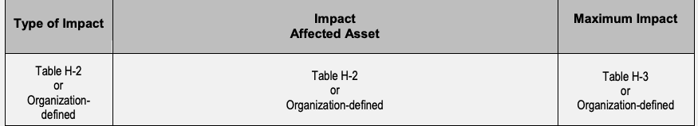
| 影響の種類 | 影響 | 最大影響 | |
| 影響を受ける資産 | |||
| 表 H-2 | 表 H-3 | ||
| 表 H-2 または組織定義 | |||
| または | または | ||
| 組織定義 | |||
| 組織定義 | |||
| 定義 |
原本PDFの抜粋画像
APPENDIX H
付録 H
未レビュー訳PAGE H-3
ページ H-3
未レビュー訳APPENDIX I
付録 I
RISK DETERMINATION
リスクの決定
ASSESSING RISK TO ORGANIZATIONS, INDIVIDUALS, AND THE NATION
組織、個人、および国家に対するリスクの評価
未レビュー訳This appendix provides: (i) a description of potentially useful inputs to the risk determination task including considerations for uncertainty of determinations; (ii) exemplary assessment scales for assessing the levels of risk; (iii) tables for describing content (i.e., data inputs) for adversarial and non-adversarial risk determinations; and (iv) templates for summarizing and documenting the results of the risk determination Task 2-6. The assessment scales in this appendix can be used as a starting point with appropriate tailoring to adjust for any organization-specific conditions. Table I-5 (adversarial risk) and Table I-7 (non-adversarial risk) are outputs from Task 2-6.
この付録では、(i) 不確実性の判断に関する考慮事項を含む、リスク決定タスクに役立つ可能性のある入力の説明、(ii) リスクレベルを評価する例示的尺度、(iii) 敵対的および非敵対的リスク決定の内容（すなわちデータ入力）を説明する表、ならびに (iv) リスク決定タスク 2-6 の結果を要約・文書化するテンプレートを示す。この付録の評価尺度は、組織固有の条件に合わせて適切に調整した上で出発点として使用できる。表 I-5（敵対的リスク）および表 I-7（非敵対的リスク）はタスク 2-6 の出力である。
未レビュー訳TABLE I-1: INPUTS – RISK
表 I-1：入力－リスク
未レビュー訳| Description | Provided To |
| Tier 1 / Tier 2 / Tier 3 | |
| From Tier 1 (Organization level) | No / Yes / Yes |
| - Sources of risk and uncertainty information identified for organization-wide use (e.g., specific | If not |
| provided | |
| information that may be useful in determining likelihoods such as adversary capabilities, intent, and | |
| by Tier 2 | |
| targeting objectives). | |
| - Guidance on organization-wide levels of risk (including uncertainty) needing no further consideration. | |
| - Criteria for uncertainty determinations. | |
| - List of high-risk events from previous risk assessments. | |
| - Assessment scale for assessing the level of risk as a combination of likelihood and impact, annotated | |
| by the organization, if necessary. (Table I-2) | |
| - Assessment scale for assessing level of risk, annotated by the organization, if necessary. (Table I-3) | |
| From Tier 2: (Mission/business process level) | Yes / Yes / Yes |
| - Risk-related information and guidance specific to Tier 2 (e.g., risk and uncertainty information related | Via / Via |
| RAR / Peer | |
| to mission/business processes, EA segments, common infrastructure, support services, common | |
| Sharing | |
| controls, and external dependencies). | |
| From Tier 3: (Information system level) | Yes / Yes / Yes |
| - Risk-related information and guidance specific to Tier 3 (e.g., likelihood information affecting | Via / Via / Via |
| RAR / RAR / Peer | |
| information systems, information technologies, information system components, applications, | |
| networks, environments of operation). | Sharing |
原本PDFの抜粋画像
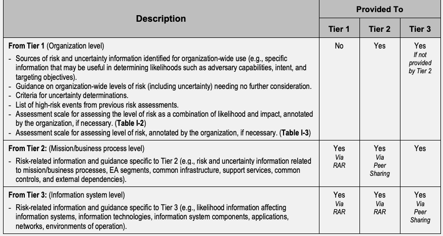
| 説明 | 提供先 |
| ティア 1 / ティア 2 / ティア 3 | |
| ティア 1（組織レベル）から | いいえ / はい / はい |
| - 組織全体で使用するために特定されたリスクおよび不確実性情報の情報源（例：発生可能性の判断に役立つ敵対者の能力、意図、標的選定目標などの具体的な情報）。 | 提供されない |
| 場合 | |
| ティア 2 によって | |
| - これ以上の検討を要しない、組織全体に適用されるリスクレベル（不確実性を含む）に関する指針。 | |
| - 不確実性判断の基準。 | |
| - 過去のリスク評価で特定された高リスク事象の一覧。 | |
| - 発生可能性と影響を組み合わせてリスクレベルを評価する尺度。必要に応じて組織が注釈を付す。 | |
| （表 I-2） | |
| - リスクレベルを評価する尺度。必要に応じて組織が注釈を付す。（表 I-3） | |
| ティア 2（ミッション／業務プロセスレベル）から | はい / はい / はい |
| - ティア 2 固有のリスク関連情報および指針（例：ミッション／業務プロセス、EAセグメント、共通インフラ、サポートサービス、共通コントロール、外部依存関係に関するリスクおよび不確実性情報）。 | 経由 / 経由 |
| RAR / ピア | |
| 共有 | |
| ティア 3（情報システムレベル）から | はい / はい / はい |
| - ティア 3 固有のリスク関連情報および指針（例：情報システム、情報技術、システムコンポーネント、アプリケーションに影響する発生可能性情報、 | 経由 / 経由 / 経由 |
| RAR / RAR / ピア | |
| ネットワーク、 | |
| 運用環境）。 | 共有 |
TABLE I-2: ASSESSMENT SCALE – LEVEL OF RISK (COMBINATION OF LIKELIHOOD AND IMPACT)
表 I-2：評価尺度－リスクレベル（発生可能性と影響の組合せ）
未レビュー訳| Likelihood | Level of Impact |
| (Threat Event Occurs | |
| and Results in / Very Low | Low / Moderate / High / Very High |
| Adverse Impact) | |
| Very High / Very Low | Low / Moderate / High / Very High |
| High / Very Low | Low / Moderate / High / Very High |
| Moderate / Very Low | Low / Moderate / Moderate / High |
| Low / Very Low | Low / Low / Low / Moderate |
| Very Low / Very Low | Very Low / Very Low / Low / Low |
原本PDFの抜粋画像
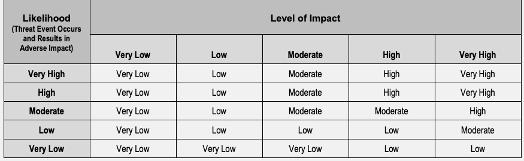
| 発生可能性 | 影響レベル |
| （脅威事象が発生し | |
| かつ悪影響をもたらす場合）／非常に低い | 低い / 中程度 / 高い / 非常に高い |
| 非常に高い / 非常に低い | 低い / 中程度 / 高い / 非常に高い |
| 高い / 非常に低い | 低い / 中程度 / 高い / 非常に高い |
| 中程度 / 非常に低い | 低い / 中程度 / 中程度 / 高い |
| 低い / 非常に低い | 低い / 低い / 低い / 中程度 |
| 非常に低い / 非常に低い | 非常に低い / 非常に低い / 低い / 低い |
APPENDIX I
付録 I
未レビュー訳PAGE I-1
ページ I-1
未レビュー訳TABLE I-3: ASSESSMENT SCALE – LEVEL OF RISK
表 I-3：評価尺度－リスクレベル
未レビュー訳| Qualitative | Semi-Quantitative | Description |
| Values | Values | |
| Very high risk means that a threat event could be expected to have multiple severe or | ||
| Very High | 96-100 / 10 | catastrophic adverse effects on organizational operations, organizational assets, individuals, |
| other organizations, or the Nation. | ||
| High risk means that a threat event could be expected to have a severe or catastrophic adverse | ||
| High | 80-95 / 8 | effect on organizational operations, organizational assets, individuals, other organizations, or the |
| Nation. | ||
| Moderate risk means that a threat event could be expected to have a serious adverse effect on | ||
| Moderate | 21-79 / 5 | |
| organizational operations, organizational assets, individuals, other organizations, or the Nation. | ||
| Low risk means that a threat event could be expected to have a limited adverse effect on | ||
| Low | 5-20 / 2 | |
| organizational operations, organizational assets, individuals, other organizations, or the Nation. | ||
| Very low risk means that a threat event could be expected to have a negligible adverse effect on | ||
| Very Low | 0-4 / 0 | |
| organizational operations, organizational assets, individuals, other organizations, or the Nation. |
原本PDFの抜粋画像
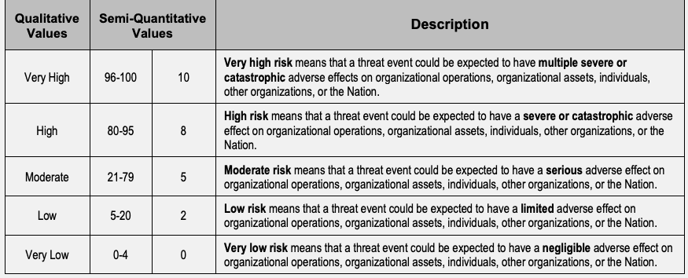
| 定性的 | 半定量的 | 説明 |
| 値 | 値 | |
| 非常に高いリスクは、脅威事象が、組織運用、組織資産、個人、 | ||
| 極めて高い | 96-100 / 10 | 他の組織、または国家に複数の重大または壊滅的な悪影響をもたらす可能性が高いことをいう。 |
| 高リスクとは、脅威事象が重大または壊滅的な悪影響をもたらす可能性があり、その対象は | ||
| 高い | 80-95 / 8 | 組織運用、組織資産、個人、他の組織、または国家である。 |
| 中リスクとは、脅威事象が組織運用、組織資産、個人、他の組織、または国家に | ||
| 中程度 | 21-79 / 5 | |
| 深刻な悪影響をもたらす可能性があることをいう。 | ||
| 低リスクとは、脅威事象が組織運用、組織資産、個人、他の組織、または国家に | ||
| 低い | 5-20 / 2 | |
| 限定的な悪影響をもたらす可能性があることをいう。 | ||
| 非常に低いリスクとは、脅威事象が組織運用、組織資産、個人、他の組織、または国家に | ||
| 非常に低い | 0-4 / 0 | |
| 無視できる程度の悪影響をもたらす可能性があることをいう。 |
APPENDIX I
付録 I
未レビュー訳PAGE I-2
ページ I-2
未レビュー訳TABLE I-4: COLUMN DESCRIPTIONS FOR ADVERSARIAL RISK TABLE
表 I-4：敵対的リスク表の列の説明
未レビュー訳| Column | Heading | Content |
| 1 | Threat Event | Identify threat event. (Task 2-2; Table E-1; Table E-2; Table E-5; Table I-5.) |
| 2 | Threat Sources | Identify threat sources that could initiate the threat event. (Task 2-1; Table D-1; Table D-2; |
| Table D-7; Table I-5.) | ||
| 3 | Capability | Assess threat source capability. (Task 2-1; Table D-3; Table D-7; Table I-5.) |
| 4 | Intent | Assess threat source intent. (Task 2-1; Table D-4; Table D-7; Table I-5.) |
| 5 | Targeting | Assess threat source targeting. (Task 2-1; Table D-5; Table D-7; Table I-5.) |
| 6 | Relevance | Determine relevance of threat event. (Task 2-2; Table E-1; Table E-4; Table E-5; Table I-5.) |
| If the relevance of the threat event does not meet the organization’s criteria for further | ||
| consideration, do not complete the remaining columns. | ||
| 7 | Likelihood of Attack Initiation | Determine likelihood that one or more of the threat sources initiates the threat event, taking into consideration capability, intent, and targeting. (Task 2-4; Table G-1; Table G-2; Table I-5.) |
| 8 | Vulnerabilities and | Identify vulnerabilities which could be exploited by threat sources initiating the threat event and |
| Predisposing Conditions | the predisposing conditions which could increase the likelihood of adverse impacts. (Task 2-5; | |
| Table F-1; Table F-3; Table F-4; Table F-6; Table I-5.) | ||
| 9 | Severity | Assess severity of vulnerabilities and pervasiveness of predisposing conditions. (Task 2-5; |
| Pervasiveness | Table F-1; Table F-2; Table F-5; Table F-6; Table I-5.) | |
| 10 | Likelihood Initiated Attack Succeeds | Determine the likelihood that the threat event, once initiated, will result in adverse impact, taking into consideration threat source capability, vulnerabilities, and predisposing conditions. (Task 2-4; Table G-1; Table G-4; Table I-5.) |
| 11 | Overall Likelihood | Determine the likelihood that the threat event will be initiated and result in adverse impact (i.e., |
| combination of likelihood of attack initiation and likelihood that initiated attack succeeds). (Task | ||
| 2-4; Table G-1; Table G-5; Table I-5.) | ||
| 12 | Level of Impact | Determine the adverse impact (i.e., potential harm to organizational operations, organizational |
| assets, individuals, other organizations, or the Nation) from the threat event. (Task 2-5; Table | ||
| H-1, Table H-2; Table H-3; Table H-4; Table I-5.) | ||
| 13 | Risk | Determine the level of risk as a combination of likelihood and impact. (Task 2-6; Table I-1; |
| Table I-2; Table I-3; Table I-5.) |
原本PDFの抜粋画像
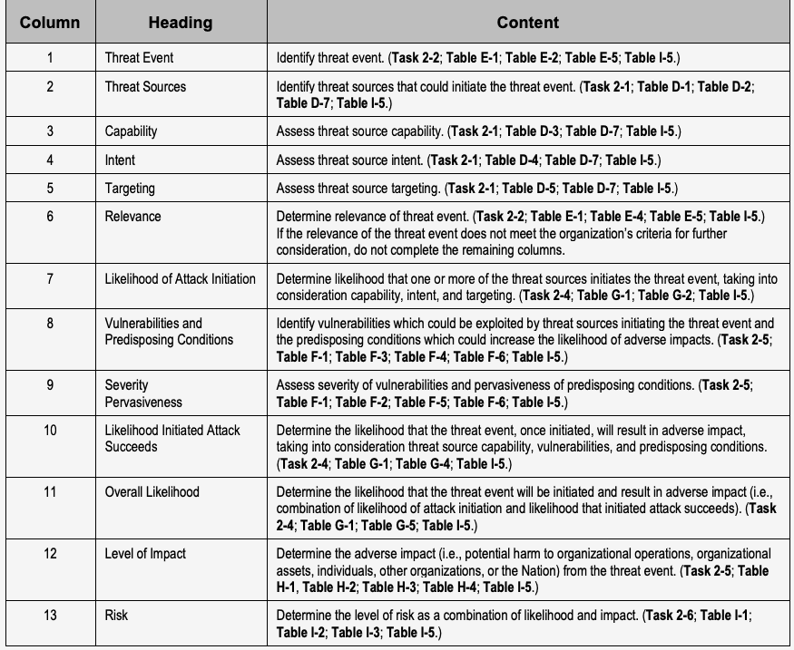
| 列 | 見出し | 内容 |
| 1 | 脅威事象 | 脅威事象を特定する。（タスク 2-2；表 E-1；表 E-2；表 E-5；表 I-5。） |
| 2 | 脅威源 | 脅威事象を開始し得る脅威源を特定する。（タスク 2-1；表 D-1；表 D-2； |
| 表 D-7；表 I-5。） | ||
| 3 | 能力 | 脅威源の能力を評価する。（タスク 2-1；表 D-3；表 D-7；表 I-5。） |
| 4 | 意図 | 脅威源の意図を評価する。（タスク 2-1；表 D-4；表 D-7；表 I-5。） |
| 5 | 標的選定 | 脅威源の標的選定を評価する。（タスク 2-1；表 D-5；表 D-7；表 I-5。） |
| 6 | 関連性 | 脅威事象の関連性を判断する。（タスク 2-2；表 E-1；表 E-4；表 E-5；表 I-5。） |
| 脅威事象の関連性が、追加検討に関する組織の基準を満たさない場合は、 | ||
| 残りの列を記入しない。 | ||
| 7 | 攻撃開始の発生可能性 | 能力、意図、標的選定を考慮して、一つ以上の脅威源が脅威事象を開始する可能性を判断する。（タスク 2-4；表 G-1；表 G-2；表 I-5。） |
| 8 | 脆弱性および | 脅威源が脅威事象を開始する際に悪用し得る脆弱性、および悪影響の可能性を高め得る |
| 素因となる条件 | 素因となる条件を特定する。（タスク 2-5； | |
| 表 F-1；表 F-3；表 F-4；表 F-6；表 I-5。） | ||
| 9 | 深刻度／ | 脆弱性の深刻度および素因となる条件の広がりを評価する。（タスク 2-5； |
| 広がり | 表 F-1；表 F-2；表 F-5；表 F-6；表 I-5。） | |
| 10 | 開始済み攻撃の成功可能性 | 脅威源の能力、脆弱性、素因となる条件を考慮して、開始された脅威事象が悪影響をもたらす可能性を判断する。（タスク 2-4；表 G-1；表 G-4；表 I-5。） |
| 11 | 全体的な発生可能性 | 脅威事象が開始され、悪影響をもたらす可能性を判断する（すなわち、 |
| 攻撃開始の可能性と開始済み攻撃が成功する可能性の組合せ）。（タスク | ||
| 2-4；表 G-1；表 G-5；表 I-5。） | ||
| 12 | 影響レベル | 脅威事象による悪影響（すなわち、組織運用、組織資産、個人、他の組織、または国家への潜在的な危害）を判断する。 |
| （タスク 2-5；表 | ||
| H-1；表 H-2；表 H-3；表 H-4；表 I-5。） | ||
| 13 | リスク | 発生可能性と影響を組み合わせてリスクレベルを判断する。（タスク 2-6；表 I-1； |
| 表 I-2；表 I-3；表 I-5。） |
TABLE I-5: TEMPLATE – ADVERSARIAL RISK
表 I-5：テンプレート－敵対的リスク
未レビュー訳原本PDFの抜粋画像
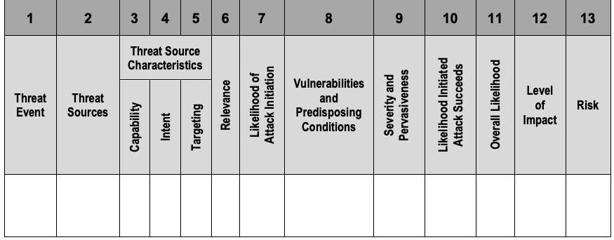
APPENDIX I
付録 I
未レビュー訳PAGE I-3
ページ I-3
未レビュー訳TABLE I-6: COLUMN DESCRIPTIONS FOR NON-ADVERSARIAL RISK TABLE
表 I-6：非敵対的リスク表の列の説明
未レビュー訳| Column | Heading | Content |
| 1 | Threat Event | Identify threat event. (Task 2-2; Table E-1; Table E-3; Table E-5; Table I-7.) |
| 2 | Threat Sources | Identify threat sources that could initiate the threat event. (Task 2-1; Table D-1; Table D-2; Table D-8; Table I-7.) |
| 3 | Range of Effects | Identify the range of effects from the threat source. (Task 2-1; Table D-1; Table D-6; Table I-7.) |
| 4 | Relevance | Determine relevance of threat event. (Task 2-2; Table E-1; Table E-4; Table E-5; Table I-7.) If the relevance of the threat event does not meet the organization’s criteria for further consideration, do not complete the remaining columns. |
| 5 | Likelihood of Threat Event Occurring | Determine the likelihood that the threat event will occur. (Task 2-4; Table G-1; Table G-3; Table I-7.) |
| 6 | Vulnerabilities and Predisposing Conditions | Identify vulnerabilities which could be exploited by threat sources initiating the threat event and the predisposing conditions which could increase the likelihood of adverse impacts. (Task 2-5; Table F-1; Table F-3; Table F-4; Table F-6; Table I-7.) |
| 7 | Severity Pervasiveness | Assess severity of vulnerabilities and pervasiveness of predisposing conditions. (Task 2-5; Table F-1; Table F-2; Table F-5; Table F-6; Table I-5.) |
| 8 | Likelihood Threat Event Results in Adverse Impact | Determine the likelihood that the threat event, once initiated, will result in adverse impact, taking into consideration vulnerabilities and predisposing conditions. (Task 2-4; Table G-1; Table G-4; Table I-7.) |
| 9 | Overall Likelihood | Determine the likelihood that the threat event will occur and result in adverse impacts (i.e., combination of likelihood of threat occurring and likelihood that the threat event results in adverse impact). (Task 2-4; Table G-1; Table G-5; Table I-7.) |
| 10 | Level of Impact | Determine the adverse impact (i.e., potential harm to organizational operations, organizational assets, individuals, other organizations, or the Nation) from the threat event. (Task 2-5; Table H- 1, Table H-2; Table H-3; Table H-4; Table I-7.) |
| 11 | Risk | Determine the level of risk as a combination of likelihood and impact. (Task 2-6; Table I-1; Table I-2; Table I-3; Table I-7.) |
原本PDFの抜粋画像
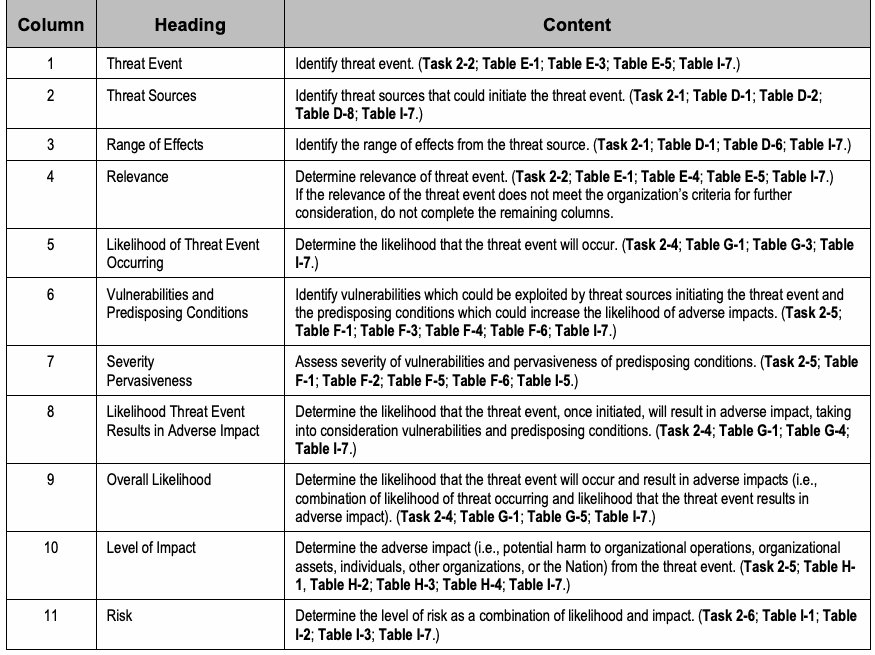
| 列 | 見出し | 内容 |
| 1 | 脅威事象 | 脅威事象を特定する。（タスク 2-2；表 E-1；表 E-3；表 E-5；表 I-7。） |
| 2 | 脅威源 | 脅威事象を開始し得る脅威源を特定する。（タスク 2-1；表 D-1；表 D-2；表 D-8；表 I-7。） |
| 3 | 影響の範囲 | 脅威源による影響の範囲を特定する。（タスク 2-1；表 D-1；表 D-6；表 I-7。） |
| 4 | 関連性 | 脅威事象の関連性を判断する。（タスク 2-2；表 E-1；表 E-4；表 E-5；表 I-7。）関連性が組織の追加検討基準を満たさない場合は、残りの列を記入しない。 |
| 5 | 脅威事象発生の発生可能性 | 脅威事象が発生する可能性を判断する。（タスク 2-4；表 G-1；表 G-3；表 I-7。） |
| 6 | 脆弱性および素因となる条件 | 脅威事象を開始する脅威源によって悪用され得る脆弱性、および悪影響の発生可能性を高め得る素因となる条件を特定する。（タスク 2-5；表 F-1；表 F-3；表 F-4；表 F-6；表 I-7。） |
| 7 | 深刻度／広がり | 脆弱性の深刻度および素因となる条件の広がりを評価する。（タスク 2-5；表 F-1；表 F-2；表 F-5；表 F-6；表 I-5。） |
| 8 | 脅威事象が悪影響をもたらす発生可能性 | 脆弱性および素因となる条件を考慮して、脅威事象が開始された後に悪影響をもたらす可能性を判断する。（タスク 2-4；表 G-1；表 G-4；表 I-7。） |
| 9 | 全体的な発生可能性 | 脅威事象が発生し悪影響をもたらす可能性を判断する（すなわち、脅威事象の発生可能性と、脅威事象が悪影響をもたらす可能性との組合せ）。（タスク 2-4；表 G-1；表 G-5；表 I-7。） |
| 10 | 影響レベル | 脅威事象による悪影響（すなわち、組織運用、組織資産、個人、他の組織、または国家への潜在的な危害）を判断する。（タスク 2-5；表 H- 1、表 H-2；表 H-3；表 H-4；表 I-7。） |
| 11 | リスク | 発生可能性と影響の組合せとしてリスクレベルを判断する。（タスク 2-6；表 I-1；表 I-2；表 I-3；表 I-7。） |
TABLE I-7: TEMPLATE – NON-ADVERSARIAL RISK
表 I-7：テンプレート－非敵対的リスク
未レビュー訳| 1 | 2 | 3 | 4 | 5 | 6 | 7 | 8 | 9 | 10 | 11 |
| ecnaveleR | fo doohilekiL / gnirruccO tnevE | dna ytireveS / ssenevisavreP | tnevE doohilekiL / esrevdA ni stluseR / tcapmI | doohilekiL llarevO | ||||||
| Vulnerabilities | ||||||||||
| Range | Level | |||||||||
| Threat | Threat | and | ||||||||
| of | of | Risk | ||||||||
| Event | Sources | Predisposing | ||||||||
| Effects | Impact | |||||||||
| Conditions |
原本PDFの抜粋画像
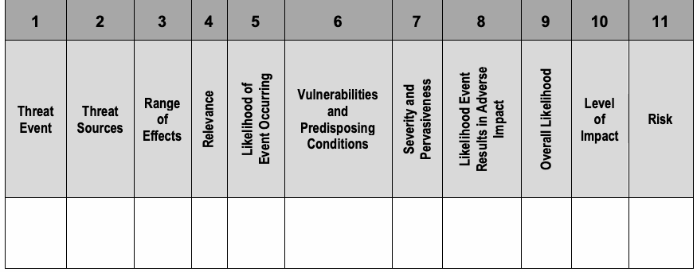
| 1 | 2 | 3 | 4 | 5 | 6 | 7 | 8 | 9 | 10 | 11 |
| 関連性 | 事象発生の可能性 | 深刻度／広がり | 脅威事象が悪影響をもたらす可能性 | 全体的な発生可能性 | ||||||
| 脆弱性 | ||||||||||
| 影響 | レベル | |||||||||
| 脅威 | 脅威 | および | ||||||||
| の | の | リスク | ||||||||
| 事象 | 源 | 素因となる | ||||||||
| 範囲 | 影響 | |||||||||
| 条件 |
APPENDIX I
付録 I
未レビュー訳PAGE I-4
ページ I-4
未レビュー訳APPENDIX J
付録 J
INFORMING RISK RESPONSE
リスク対応への情報提供
APPROACHES TO REFINING RISK ASSESSMENT RESULTS
リスク評価結果を精緻化する方法
未レビュー訳Arisk assessment may identify a number of risks that have similar scores (e.g., 78, 82, 83) or levels (e.g., moderate, high). When too many risks are clustered at or about the same value, organizations need a method to refine the presentation of risk assessment results, prioritizing within sets of risks with similar values, to better inform the risk response component of the risk management process.56 Such a method should be associated with the mission/business requirements of the organization, consistent with the organizational risk tolerance, and maximize the use of available resources. Prioritization is a key component of risk-based protection and becomes necessary when requirements cannot be fully satisfied or when resources do not allow all risks to be mitigated within a reasonable time frame. To facilitate informed risk response decisions by senior leaders/executives (e.g., why certain risks were or were not mitigated), the risk assessment results are annotated to enable those decision makers to know or obtain the answers to the following questions about each risk in a set with similar scores:
リスク評価では、同程度のスコア（例：78、82、83）またはレベル（例：中、高）を持つリスクが複数特定されることがある。同じ値付近に多くのリスクが集中する場合、組織は、リスク対応プロセスに有用な結果の提示を行うため、同程度の値を持つリスク群内で優先順位を付け、評価結果の提示を精緻化する方法を必要とする。56 そのような方法は、組織のミッション／業務上の要件に結び付けられ、組織のリスク許容度と整合し、利用可能なリソースの活用を最大化するべきである。リスクベースの保護では優先順位付けが重要であり、要件を完全に満たせない場合、または合理的な期間内にすべてのリスクを緩和するだけのリソースがない場合に必要となる。上級リーダー／幹部が十分な情報に基づいてリスク対応を決定できるように（例：特定のリスクを緩和した、またはしなかった理由）、評価結果に注釈を付け、同程度のスコアを持つリスク群の各リスクについて、意思決定者が次の問いへの答えを確認または得られるようにする。
未レビュー訳Time Frame In the event the identified risk materialized—
時間枠 特定されたリスクが現実化した場合—
未レビュー訳•How high would the immediate impact be to organizational operations (including mission, functions, image, or reputation), organizational assets, individuals, other organizations, or the Nation?
•組織運用（ミッション、機能、イメージまたは評判を含む）、組織資産、個人、他の組織、または国家に対する直近の影響はどの程度大きいか。
未レビュー訳•How high would the future impact be to organizational operations (including mission, functions, image, or reputation), organizational assets, individuals, other organizations, or the Nation?
•組織運用（ミッション、機能、イメージまたは評判を含む）、組織資産、個人、他の組織、または国家に対する将来の影響はどの程度大きいか。
The answers to the above questions, together with the risk tolerance of the organization, provide the basis for a risk prioritization that is based on current and future organizational needs. When weighing immediate impacts versus future impacts, senior leaders must decide whether a critical mission/business need today warrants jeopardizing the future capabilities of the organization. Mission/business owners and mission/business subject matter experts can be consulted to obtain the most complete and up-to-date information on mission/business impacts. Other subject matter experts or stakeholder representatives can be consulted to obtain information on immediate versus future impacts (e.g., consulting the Privacy Office for impacts to individuals).
上記の問いへの回答は、組織のリスク許容度とともに、現在および将来の組織ニーズに基づくリスク優先順位付けの根拠となる。直近の影響と将来の影響を比較検討する際、上級リーダーは、今日の重要なミッション／業務上の必要性が、組織の将来の能力を危険にさらすことを正当化するかどうかを決定しなければならない。最も完全で最新のミッション／業務影響情報を得るため、ミッション／業務の所有者や専門家に相談できる。他の専門家やステークホルダー代表者にも、直近と将来の影響に関する情報を得るために相談できる（例：個人への影響についてプライバシー部門に相談する）。
未レビュー訳Total Cumulative Impact
累積影響の合計
未レビュー訳•What is the expected impact from a single occurrence of the threat?
•脅威が一回発生した場合、予想される影響は何か。
未レビュー訳•If the risk can materialize more than once, what is the overall expected impact (i.e., cumulative loss) for the time period of concern?
•リスクが複数回現実化し得る場合、懸念する期間における全体的な予想影響（すなわち累積損失）はどの程度か。
Note that one aspect of the total impact to organizations is the cost of recovery from a loss of confidentiality, integrity, or availability.
組織に対する総影響の一側面として、機密性、完全性、または可用性の喪失からの復旧費用があることに留意する。
Synergies Among Risks If a risk materializes that is closely related to multiple risks, it is likely that a cluster of risks will materialize at or near the same time. Managing the adverse impact from one risk materializing may be possible; managing multiple risks of high impact that materialize at the same time may challenge the capacity of the organization and therefore needs to be managed much more closely. The following questions address relationships among risks.
リスク間の相乗効果 複数のリスクと密接に関係するリスクが顕在化すると、同時またはほぼ同時に一連のリスクが顕在化する可能性が高い。単一リスクの顕在化による悪影響への対処は可能でも、影響度の高い複数のリスクが同時に顕在化すると組織の対応能力に負荷がかかり、そのため、より綿密な管理が必要となる。以下の問いは、リスク間の関係を扱う。
未レビュー訳Will the materialization of a particular risk result in:
特定のリスクの顕在化は、次のいずれかをもたらすか：
•A high likelihood or virtual certainty of other identified risks materializing?
•特定済みの他のリスクが顕在化する可能性が高い、またはほぼ確実となるか。
•A high likelihood or virtual certainty of other identified risks not materializing?
•特定済みの他のリスクが顕在化しない可能性が高い、または顕在化しないことがほぼ確実となるか。
•No particular effect on other identified risks materializing?
•特定済みの他のリスクの顕在化に、特段の影響はないか。
未レビュー訳If a risk is highly coupled to other risks or seen as likely to lead to other risks materializing (whether the risk is the cause or materializes concurrently), the risk should be given higher priority than a risk that has no particular effect on other risks. If a risk materializing actually decreases the likelihood of other risks materializing, then further analysis is warranted to determine which risks become a lower priority to mitigate.
あるリスクが他のリスクと強く結び付いている場合、または他のリスクの顕在化につながる可能性が高いとみなされる場合（そのリスクが原因である場合も、同時に顕在化する場合も）、他のリスクに特段の影響を及ぼさないリスクより優先度を高くすべきである。あるリスクの顕在化によって他のリスクが顕在化する可能性が実際に低下する場合は、どのリスクの緩和優先度を下げるべきか判断するため、さらなる分析が必要である。
In conclusion, organizations can benefit significantly by refining risk assessment results in preparation for the risk response step in the risk management process. During the risk response step, which is described in NIST Special Publication 800-39, organizations: (i) analyze different courses of action; (ii) conduct cost-benefit analyses; (iii) address scalability issues for large-scale implementations; (iv) examine the interactions/dependencies among risk mitigation approaches (e.g., dependencies among security controls); and (v) assess other factors affecting organizational missions/business functions. In addition, organizations address cost, schedule, and performance issues associated with information systems and information technology infrastructure supporting organizational missions/business functions.
結論として、組織はリスク管理プロセスのリスク対応段階に備えてリスク評価結果を精緻化することで、大きな利益を得られる。NIST Special Publication 800-39で説明されるリスク対応段階では、組織は、(i) 複数の行動方針を分析し、(ii) 費用便益分析を実施し、(iii) 大規模実装における拡張性の問題に対処し、(iv) リスク緩和アプローチ間の相互作用／依存関係（例：セキュリティコントロール間の依存関係）を検討し、(v) 組織のミッション／業務機能に影響するその他の要因を評価する。さらに組織は、ミッション／業務機能を支える情報システムおよび情報技術インフラストラクチャに関する費用、スケジュール、性能の問題にも対処する。
未レビュー訳CAUTIONARYNOTE Organizations are cautioned that risk assessments are often not precise instruments of measurement
注意事項 リスク評価は、多くの場合、厳密な測定手段ではなく、使用した特定の評価手法、ツール、技法の限界に加え、使用データの主観性、品質、信頼性を反映することに留意する必要がある。
未レビュー訳and reflect the limitations of the specific assessment methodologies, tools, and techniques employed— as well as the subjectivity, quality, and trustworthiness of the data used. Risk determinations may be very coarse due to the assessment approach selected, the uncertainty in the likelihood of occurrence and impact values, and the potential mischaracterization of threats. Risks that are on the borderline between bins using the organization-defined binning scales, must ultimately be assigned to one bin. This determination could have a significant effect on the risk prioritization process. Thus, organizations should incorporate as much information as practical on particular risks during the prioritization process to ensure that the values for risks are appropriately determined (e.g., very low, low, moderate, high, very high).
また、選択した評価アプローチ、発生可能性と影響の値に関する不確実性、脅威の誤った特徴付けの可能性により、リスク判断が非常に粗いものとなる場合がある。組織定義の区分尺度で境界上にあるリスクは、最終的にいずれかの区分に割り当てなければならない。この判断はリスクの優先順位付けプロセスに大きな影響を及ぼし得る。したがって組織は、優先順位付けの際、個々のリスクについて実務上可能な限り多くの情報を取り込み、リスク値を適切に判断すべきである（例：非常に低い、低い、中程度、高い、非常に高い）。
未レビュー訳APPENDIX J
付録 J
未レビュー訳PAGE J-2
ページ J-2
未レビュー訳APPENDIX K
付録 K
RISK ASSESSMENT REPORTS
リスク評価報告書
ESSENTIAL ELEMENTS OF INFORMATION
情報の必須要素
未レビュー訳This appendix provides the essential elements of information that organizations can use to communicate the results of risk assessments.57 Risk assessment results provide decision makers with an understanding of the information security risk to organizational operations and assets, individuals, other organizations, or the Nation that derive from the operation and use of organizational information systems and the environments in which those systems operate. The essential elements of information in a risk assessment can be described in three sections of the risk assessment report (or whatever vehicle is chosen by organizations to convey the results of the assessment): (i) an executive summary; (ii) the main body containing detailed risk assessment results; and (iii) supporting appendices. Executive Summary
この付録では、リスク評価の結果を伝達するために組織が使用できる情報の必須要素を示す。57 リスク評価結果は、組織の情報システムの運用・利用およびそのシステムが運用される環境に起因する、組織運用と資産、個人、他の組織、または国家に対する情報セキュリティリスクを意思決定者が理解するのに役立つ。リスク評価における情報の必須要素は、リスク評価報告書の三つのセクション（または組織が評価結果を伝達するために選択したその他の媒体）で説明できる：(i) エグゼクティブサマリー、(ii) 詳細なリスク評価結果を含む本文、(iii) 補足付録。エグゼクティブサマリー
未レビュー訳•List the date of the risk assessment.
•リスク評価の日付を記載する。
•Summarize the purpose of the risk assessment.
•リスク評価の目的を要約する。
未レビュー訳•Describe the scope of the risk assessment.
•リスク評価の範囲を説明する。
未レビュー訳- For Tier 1 and Tier 2 risk assessments, identify: organizational governance structures or processes associated with the assessment (e.g., risk executive [function], budget process, acquisition process, systems engineering process, enterprise architecture, information security architecture, organizational missions/business functions, mission/business processes, information systems supporting the mission/business processes). - For Tier 3 risk assessments, identify: the information system name and location(s), security categorization, and information system (i.e., authorization) boundary.
- ティア 1 およびティア 2 のリスク評価では、評価に関連する組織統治の構造またはプロセスを特定する（例：リスク執行者［機能］、予算策定プロセス、調達プロセス、システムエンジニアリングプロセス、エンタープライズアーキテクチャ、情報セキュリティアーキテクチャ、組織のミッション／業務機能、ミッション／業務プロセス、ミッション／業務プロセスを支援する情報システム）。- ティア 3 のリスク評価では、情報システム名と所在地、セキュリティ分類、および情報システム（すなわち認可）境界を特定する。
未レビュー訳•State whether this is an initial or subsequent risk assessment. If a subsequent risk assessment, state the circumstances that prompted the update and include a reference to the previous Risk Assessment Report.
•これが初回のリスク評価か、後続のリスク評価かを明記する。後続評価の場合は、更新のきっかけとなった状況を記し、以前のリスク評価報告書を参照する。
•Describe the overall level of risk (e.g., Very Low, Low, Moderate, High, or Very High).
•全体的なリスクレベル（例：非常に低い、低い、中程度、高い、または非常に高い）を説明する。
•List the number of risks identified for each level of risk (e.g., Very Low, Low, Moderate, High, or Very High).
•各リスクレベル（例：非常に低い、低い、中程度、高い、または非常に高い）について、特定されたリスクの数を記載する。
Body of the Report
報告書本文
未レビュー訳•Describe the purpose of the risk assessment, including questions to be answered by the assessment. For example:
•リスク評価の目的（評価によって回答すべき問いを含む）を説明する。例：
- How the use of a specific information technology would potentially change the risk to organizational missions/business functions if employed in information systems supporting those missions/business functions; or - How the risk assessment results are to be used in the context of the RMF (e.g., an initial risk assessment to be used in tailoring security control baselines and/or to guide and inform other decisions and serve as a starting point for subsequent risk assessments; subsequent risk assessment to incorporate results of security control assessments and inform authorization decisions; subsequent risk assessment to support the analysis of alternative courses of action for risk responses; subsequent risk assessment based on risk monitoring to identify new threats or vulnerabilities; subsequent risk assessments to incorporate knowledge gained from incidents or attacks).
- 特定の情報技術を、当該ミッション／ビジネス機能を支援する情報システムに導入した場合に、組織のミッション／ビジネス機能に対するリスクがどのように変化し得るか。または - RMFの文脈においてリスク評価結果をどのように使用するか（例：セキュリティ管理策ベースラインの調整に使用し、その他の意思決定の指針および情報源とするとともに、後続のリスク評価の出発点とする初期リスク評価；セキュリティ管理策評価の結果を取り込み、認可の意思決定に情報を提供する後続のリスク評価；リスク対応に関する代替行動方針の分析を支援する後続のリスク評価；リスク監視に基づいて新たな脅威または脆弱性を特定する後続のリスク評価；インシデントまたは攻撃から得た知見を取り込む後続のリスク評価）。
未レビュー訳•Identify assumptions and constraints.
•前提条件および制約を特定する。
未レビュー訳•Describe risk tolerance inputs to the risk assessment (including the range of consequences to be considered).
•リスク評価へのリスク許容度の入力（考慮すべき結果の範囲を含む）を説明する。
•Identify and describe the risk model and analytic approach; provide a reference or include as an appendix, identifying risk factors, value scales, and algorithms for combining values.
•リスクモデルおよび分析アプローチを特定して説明する。参考資料を示すか付録として含め、その中でリスク要因、値の尺度、および値を組み合わせるアルゴリズムを特定する。
•Provide a rationale for any risk-related decisions during the risk assessment process.
•リスク評価プロセス中に行ったリスク関連の判断について、その根拠を示す。
未レビュー訳•Describe the uncertainties within the risk assessment process and how those uncertainties influence decisions.
•リスク評価プロセスにおける不確実性、およびその不確実性が意思決定に与える影響を説明する。
•If the risk assessment includes organizational missions/business functions, describe the missions/functions (e.g., mission/business processes supporting the missions/functions, interconnections and dependencies among related missions/business functions, and information technology that supports the missions/business functions).
•リスク評価に組織のミッション／ビジネス機能が含まれる場合、それらのミッション／機能を説明する（例：ミッション／機能を支えるミッション／ビジネスプロセス、関連するミッション／ビジネス機能間の相互接続および依存関係、ならびにそれらを支援する情報技術）。
未レビュー訳•If the risk assessment includes organizational information systems, describe the systems (e.g., missions/business functions the system is supporting, information flows to/from the systems, and dependencies on other systems, shared services, or common infrastructures).
•リスク評価に組織の情報システムが含まれる場合、それらのシステムを説明する（例：システムが支援するミッション／ビジネス機能、システムとの間の情報フロー、他のシステム、共有サービス、または共通インフラストラクチャへの依存関係）。
•Summarize risk assessment results (e.g., using tables or graphs), in a form that enables decision makers to quickly understand the risk (e.g., number of threat events for different combinations of likelihood and impact, the relative proportion of threat events at different risk levels).
•意思決定者がリスクを迅速に理解できる形式で、リスク評価結果を要約する（例：表またはグラフを使用する。発生可能性と影響度のさまざまな組み合わせにおける脅威事象の件数や、異なるリスクレベルにある脅威事象の相対的な割合など）。
•Identify the time frame for which the risk assessment is valid (i.e., time frame for which the assessment is intended to support decisions).
•リスク評価が有効な期間（すなわち、評価が意思決定を支援することを意図した期間）を特定する。
•List the risks due to adversarial threats (see Table F-1).
•敵対的脅威に起因するリスクを列挙する（表 F-1を参照）。
•List the risks due to non-adversarial threats (see Table F-2).
•非敵対的脅威に起因するリスクを列挙する（表 F-2を参照）。
Appendices
付録
未レビュー訳•List references and sources of information.
•参考文献および情報源を列挙する。
•List the team or individuals conducting the risk assessment including contact information.
•連絡先情報を含め、リスク評価を実施するチームまたは個人を列挙する。
•List risk assessment details and any supporting evidence (e.g., Tables D-7, D-8, E-5, F-3, F-6, H-4), as needed to understand and enable reuse of results (e.g., for reciprocity, for subsequent risk assessments, to serve as input to Tier 1 and Tier 2 risk assessments).
•リスク評価の詳細および裏付けとなる証拠（例：表 D-7、D-8、E-5、F-3、F-6、H-4）を、結果の理解と再利用（例：相互承認、後続のリスク評価、Tier 1およびTier 2のリスク評価への入力としての利用）に必要な範囲で列挙する。
未レビュー訳APPENDIX K
付録 K
未レビュー訳PAGE K-2
ページ K-2
未レビュー訳APPENDIX L
付録 L
SUMMARY OF TASKS
タスクの概要
RISK ASSESSMENT TASKS AND ASSOCIATED RISK TABLES
リスク評価タスクおよび関連するリスク表
未レビュー訳TABLE L-1: SUMMARY OF RISK ASSESSMENT TASKS
表 L-1：リスク評価タスクの概要
未レビュー訳| TASK | TASK DESCRIPTION |
| Step 1: Prepare for Risk Assessment | |
| TASK 1-1 | Identify the purpose of the risk assessment in terms of the information that the |
| IDENTIFY PURPOSE | assessment is intended to produce and the decisions the assessment is intended to |
| support. | |
| Section 3.1 | |
| TASK 1-2 | Identify the scope of the risk assessment in terms of organizational applicability, time |
| IDENTIFY SCOPE | frame supported, and architectural/technology considerations. |
| Section 3.1 | |
| TASK 1-3 | Identify the specific assumptions and constraints under which the risk assessment is |
| IDENTIFY ASSUMPTIONS | conducted. |
| AND CONSTRAINTS | |
| Section 3.1 | |
| TASK 1-4 | Identify the sources of descriptive, threat, vulnerability, and impact information to be |
| IDENTIFY INFORMATION | used in the risk assessment. |
| SOURCES | |
| Section 3.1 | |
| TASK 1-5 | Identify the risk model and analytic approach to be used in the risk assessment. |
| IDENTIFY RISK MODEL AND | |
| ANALYTIC APPROACH | |
| Section 3.1 | |
| Step 2: Conduct Risk Assessment | |
| TASK 2-1 | Identify and characterize threat sources of concern, including capability, intent, and |
| IDENTIFY THREAT SOURCES | targeting characteristics for adversarial threats and range of effects for non-adversarial |
| threats. | |
| Section 3.2, Appendix D | |
| TASK 2-2 | Identify potential threat events, relevance of the events, and the threat sources that could |
| IDENTIFY THREAT EVENTS | initiate the events. |
| Section 3.2, Appendix E | |
| TASK 2-3 | Identify vulnerabilities and predisposing conditions that affect the likelihood that threat |
| IDENTIFY VULNERABILITIES AND | events of concern result in adverse impacts. |
| PREDISPOSING CONDITIONS | |
| Section 3.2, Appendix F |
原本PDFの抜粋画像
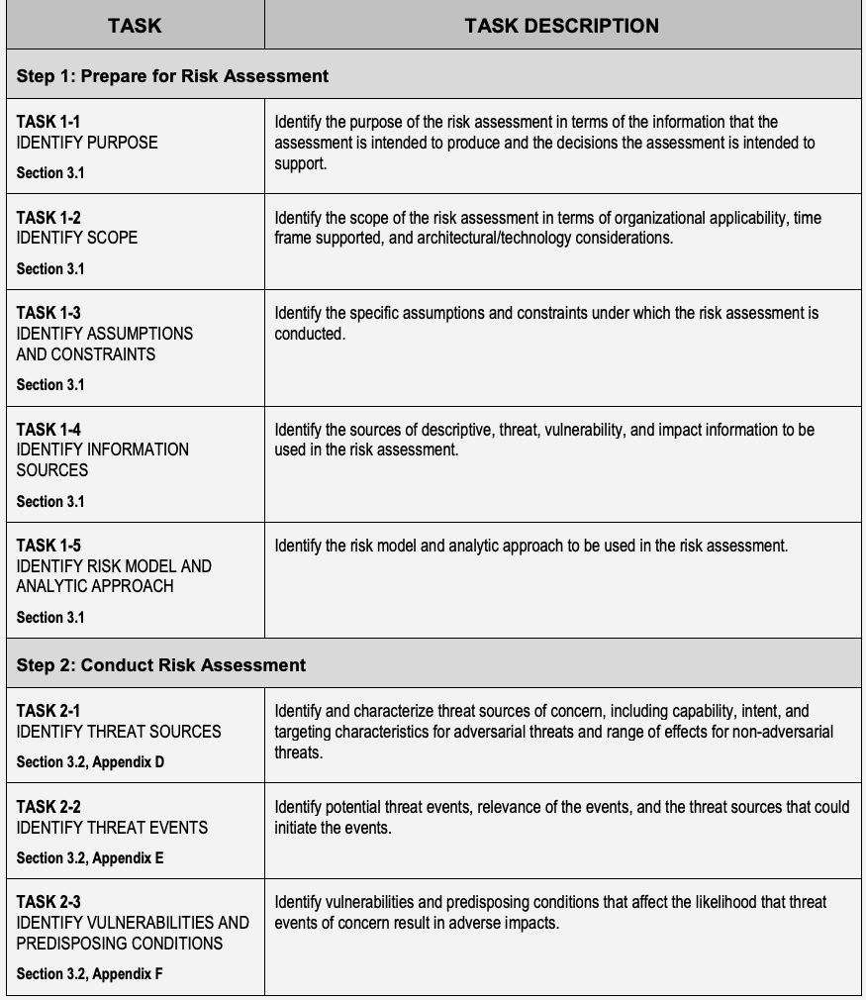
| タスク | タスクの説明 |
| ステップ 1：リスク評価の準備 | |
| TASK 1-1 | リスク評価が生成することを意図する情報の観点から、リスク評価の |
| 目的の特定 | 目的、および評価が支援することを意図する意思決定を |
| 特定する。 | |
| 節 3.1 | |
| TASK 1-2 | 組織への適用可能性、対象期間、およびアーキテクチャ／技術上の |
| 範囲の特定 | 考慮事項の観点から、リスク評価の範囲を特定する。 |
| 節 3.1 | |
| TASK 1-3 | リスク評価を実施する際の具体的な前提条件および |
| 前提条件の特定 | 制約を特定する。 |
| および制約 | |
| 節 3.1 | |
| TASK 1-4 | リスク評価で使用する、記述情報、脅威情報、脆弱性情報、および |
| 情報源の特定 | 影響情報の情報源を特定する。 |
| 情報源 | |
| 節 3.1 | |
| TASK 1-5 | リスク評価で使用するリスクモデルおよび分析アプローチを特定する。 |
| リスクモデルおよび | |
| 分析アプローチの特定 | |
| 節 3.1 | |
| ステップ 2：リスク評価の実施 | |
| TASK 2-1 | 懸念対象となる脅威源を特定して特徴付ける。能力、意図、および |
| 脅威源の特定 | 敵対的脅威の標的選定の特性、ならびに非敵対的脅威の影響範囲を |
| 含める。 | |
| 節 3.2、付録 D | |
| TASK 2-2 | 潜在的な脅威事象、その関連性、および事象を引き起こす可能性のある |
| 脅威事象の特定 | 脅威源を特定する。 |
| 節 3.2、付録 E | |
| TASK 2-3 | 懸念対象となる脅威事象が有害な影響をもたらす可能性に影響する |
| 脆弱性および | 脆弱性および素因となる条件を特定する。 |
| 素因となる条件の特定 | |
| 節 3.2、付録 F |
APPENDIX L
付録 L
未レビュー訳PAGE L-1
ページ L-1
未レビュー訳| TASK | TASK DESCRIPTION |
| TASK 2-4 | Determine the likelihood that threat events of concern result in adverse impacts, |
| DETERMINE LIKELIHOOD | considering: (i) the characteristics of the threat sources that could initiate the events; (ii) |
| the vulnerabilities/predisposing conditions identified; and (iii) the organizational | |
| Section 3.2, Appendix G | |
| susceptibility reflecting the safeguards/countermeasures planned or implemented to | |
| impede such events. | |
| TASK 2-5 | Determine the adverse impacts from threat events of concern, considering: (i) the |
| DETERMINE IMPACT | characteristics of the threat sources that could initiate the events; (ii) the |
| vulnerabilities/predisposing conditions identified; and (iii) the organizational susceptibility | |
| Section 3.2, Appendix H | |
| reflecting the safeguards/countermeasures planned or implemented to impede such | |
| events. | |
| TASK 2-6 | Determine the risk to the organization from threat events of concern considering: (i) the |
| DETERMINE RISK | impact that would result from the events; and (ii) the likelihood of the events occurring. |
| Section 3.2, Appendix I | |
| Step 3: Communicate and Share Risk Assessment Results | |
| TASK 3-1 | Communicate risk assessment results to organizational decision makers to support risk |
| COMMUNICATE RISK | responses. |
| ASSESSMENT RESULTS | |
| Section 3.3, Appendix K | |
| TASK 3-2 | Share risk-related information produced during the risk assessment with appropriate |
| SHARE RISK-RELATED | organizational personnel. |
| INFORMATION | |
| Section 3.3 | |
| Step 4: Maintain Risk Assessment | |
| TASK 4-1 | Conduct ongoing monitoring of the risk factors that contribute to changes in risk to |
| MONITOR RISK FACTORS | organizational operations and assets, individuals, other organizations, or the Nation. |
| Section 3.4 | |
| TASK 4-2 | Update existing risk assessment using the results from ongoing monitoring of risk |
| UPDATE RISK ASSESSMENT | factors. |
| Section 3.4 |
原本PDFの抜粋画像
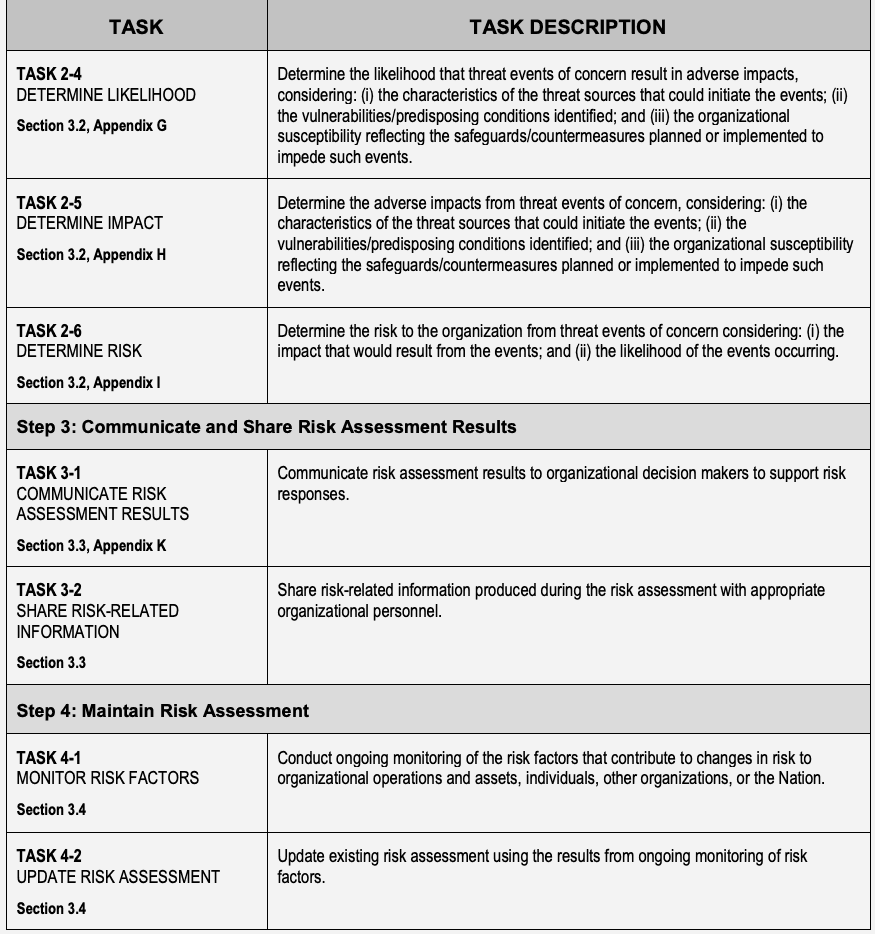
| タスク | タスクの説明 |
| TASK 2-4 | 懸念対象となる脅威事象が有害な影響をもたらす可能性を判断する。次を考慮する： |
| 発生可能性の判断 | (i) 事象を引き起こす可能性のある脅威源の特性、(ii) |
| 特定された脆弱性／素因となる条件、および (iii) 組織の | |
| 節 3.2、付録 G | |
| 影響の受けやすさは、そのような事象を妨げるために計画または実装された | |
| 保護措置／対抗策を反映する。 | |
| TASK 2-5 | 懸念対象となる脅威事象による有害な影響を判断する。次を考慮する：(i) 事象を引き起こす可能性のある脅威源の |
| 影響の判断 | 特性、(ii) |
| 特定された脆弱性／素因となる条件、および (iii) 組織の影響の受けやすさ | |
| 節 3.2、付録 H | |
| は、そのような | |
| 事象を妨げるために計画または実装された保護措置／対抗策を反映する。 | |
| TASK 2-6 | 懸念対象となる脅威事象による組織へのリスクを判断する。次の点を考慮する：(i) 事象によって生じる |
| リスクの判断 | 影響、および (ii) 事象の発生可能性。 |
| 節 3.2、付録 I | |
| ステップ 3：リスク評価結果の伝達および共有 | |
| TASK 3-1 | リスク対応を支援するため、リスク評価結果を組織の意思決定者に |
| リスク評価結果の伝達 | 伝達する。 |
| リスク評価結果 | |
| 節 3.3、付録 K | |
| TASK 3-2 | リスク評価中に生成されたリスク関連情報を、適切な |
| リスク関連情報の共有 | 組織要員と共有する。 |
| 情報 | |
| 節 3.3 | |
| ステップ 4：リスク評価の維持 | |
| TASK 4-1 | 組織の運用および資産、個人、他の組織、または国家に対するリスクの変化に |
| リスク要因の監視 | 寄与するリスク要因を継続的に監視する。 |
| 節 3.4 | |
| TASK 4-2 | リスク要因の継続的な監視結果を用いて、既存のリスク評価を |
| リスク評価の更新 | 更新する。 |
| 節 3.4 |
APPENDIX L
付録 L
未レビュー訳PAGE L-2
ページ L-2
未レビュー訳